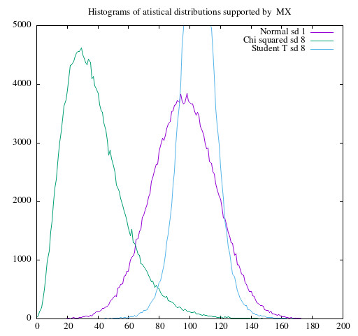

GNU APL Reference Manual
June 4, 2026. This manual briefly documents GNU APL, an interpreter for APL as described in ISO standard 13751, aka. "Programming Language APL, Extended".
This manual for GNU APL can be distributed under the terms of the GNU Free Documentation License, *Note Chapter 8.
This manual does NOT describe APL itself; there exist a number of good books and texts about APL. We would like to refer the reader to the following:
ISO Standard for APL:
www.math.uwaterloo.ca/~ljdickey/apl-rep/docs/is13751.pdf
Note that the file is13751.pdf above is compressed with gzip, therefore it must be expanded with e.g. gunzip before it can be read.
More pointers to APL resources on the Web:
ftp://rtfm.mit.edu/pub/usenet-by-group/comp.lang.apl/APL_language_FAQ
Table of Contents
- 1 Installing and Starting GNU APL
- 2 Non-standard GNU APL Features
- 2.1 APL Scripting
- 2.1.1 Introduction and Terminology
- 2.1.2 Redirect the script file to the stdin of the GNU APL interpreter
- 2.1.3 Make the script file executable
- 2.1.4 Starting GNU APL Scripts: a Conclusion
- 2.1.5 How command line arguments are handled
- 2.1.6 Helpful Features for Scripting
- 2.1.7 Double-quoted Strings
- 2.1.8 Multi-Line Strings
- 2.1.9 Multi-Line Literals
- 2.1.10 Automatic )MORE
- 2.1.11 Script Example
- 2.2 Axis argument in defined functions
- 2.3 Function Groups
- 2.4 Colored Output
- 2.5 Comparison Rules
- 2.6 Complex Numbers
- 2.7 Debug Commands
- 2.8 Direct Functions (Lambdas)
- 2.9 Commands )COPY_ONCE, )DUMP, and DUMP-HTML
- 2.10 ]DOXY Command
- 2.11 ]KEYB Command
- 2.12 ]NEXTFILE and ]PUSHFILE Commands
- 2.13 History and TAB completion
- 2.14 Logging Facilities
- 2.15 Rational Numbers
- 2.16 Hex Numbers
- 2.17 User-defined Commands
- 2.18 Structured Variables and Associative Arrays
- 2.19 Monadic ⊢ and ⊣; dyadic ⊢ with Axis
- 2.20 Bit-wise Logical Functions ⊤∧, ⊤∨, ⊤⍲, ⊤⍱, ⊤≠, and ⊤=
- 2.21 ⊤ (Encode) with Axis
- 2.22 Generalized ⍳
- 2.23 ⌹[X] - Miscellaneous Matrix and Vector Operations
- 2.23.1 ⌹[1] and ⌹[2] - QR Factorizations
- 2.23.2 The Impact of ⎕CT for ⌹
- 2.23.2.1 A⌹B and ⌹B
- 2.23.2.2 ⌹[X] B: Various Factorizations of B
- 2.23.2.3 Matrix Inverse
- 2.23.2.4 ⌹[7] B: Print Polynomial B
- 2.23.2.5 A ⌹[8] B: Multiply Polynomials A and B
- 2.23.2.6 A ⌹[9] B: Divide Polynomial A by Polynomial B (univariate)
- 2.23.2.7 A ⌹[10] B: Divide Polynomial A by Polynomial B (multivariate)
- 2.23.2.8 A ⌹[11] B: Divide Polynomial A by Polynomial B (with order)
- 2.23.2.9 ⌹[11] B: Scan Polynomial B
- 2.23.2.10 A ⌹[20] B: Integral B
- 2.24 ⎕CC - Character Classes
- 2.25 Dyadic ⎕CR
- 2.26 Dyadic ⎕FX (Native Functions)
- 2.27 ⎕ARG - Interpreter command line arguments
- 2.28 ⎕DLX - Knuth’s Dancing Links Algorithm
- 2.29 ⎕ENV - Environment Variables
- 2.30 ⎕FIO - File I/O Functions
- 2.31 ⎕FFT - Fast Fourier Transform
- 2.32 ⎕GTK - GTK Interface
- 2.33 ⎕JSON - JSON Parsing
- 2.34 ⎕MAP - Map Value
- 2.35 ⎕MX - Matrix/Statistics
- 2.36 ⎕PLOT - Plot Data
- 2.37 ⎕PNG - Portable Network Graphics
- 2.38 ⎕PS - Print Style
- 2.39 ⎕RE - Regular Expressions
- 2.40 ⎕RVAL - Random APL value
- 2.41 ⎕SI - State Indicator
- 2.42 ⎕SQL - SQL Database Interface
- 2.42.1 ⎕SQL[0] ⍬ : display sub-function numbers
- 2.42.2 ⎕SQL[0]
'': display sub-function names - 2.42.3 ref ← A ⎕SQL[1] B : open database
- 2.42.4 ⎕SQL[2] B : close database
- 2.42.5 Z ← A ⎕SQL[3, ref] B : database query (with result)
- 2.42.6 Z ← A ⎕SQL[4, ref] B : database query (w/o result)
- 2.42.7 ⎕SQL[5] B : start transaction
- 2.42.8 ⎕SQL[6] B : commit transaction
- 2.42.9 ⎕SQL[7] B : rollback transaction
- 2.42.10 Z←⎕SQL[8] B : table names
- 2.42.11 Z←⎕SQL[9] B : column names
- 2.42.12 Z ← ⎕SQL[10] B : library version number
- 2.42.13 Z ← ⎕SQL[11] B : library version string
- 2.42.14 SQLite Quickstart
- 2.42.15 Deleting Rows From a Database Table
- 2.43 ⎕SYL - System limits
- 2.44 ⎕XML - XML Parsing
- 2.45 Conditionals
- 2.46 Matrix Product
- 2.47 Monadic ≠ (Nub Sieve)
- 2.1 APL Scripting
- 3 Limitations and Missing Features
- 4 Internationalization
- 5 Vector Notation
- 6 GNU APL Project Structure
- 7 Libraries Contributed by GNU APL Users
- 8 Licenses for this GNU APL Manual and for GNU APL
Next: Non-standard GNU APL Features, Previous: GNU APL Reference Manual, Up: GNU APL Reference Manual [Contents]
1 Installing and Starting GNU APL
- Installing APL
- Starting APL
- Command Line Options
- Configuration File for GNU APL
- File Names and Paths
Next: Starting APL, Up: Installing and Starting GNU APL [Contents]
1.1 Installing APL
APL is built and installed like this:
- download the tar file containing GNU APL, from ftp://ftp.gnu.org/gnu/apl or from one of its mirrors (see http://www.gnu.org/prep/ftp.html), and un-tar the file.
- read (and follow) the instructions given in file README in the unpacked directory.
For the experienced, but impatient reader: it is the well-known sequence
$ ./configure [configure-option]... $ make $ sudo make install
On success, make produces an executable file named apl in sub-directory src while make install installs that file (in /usr/local/bin) as well as some other files in other locations (that can be controlled via configure-options).
File README contains further instructions about the installation of GNU APL.
Next: Command Line Options, Previous: Installing APL, Up: Installing and Starting GNU APL [Contents]
1.2 Starting APL
Last things first: before explaining how to start APL, it is important to remember how to stop (i.e. exit) it. Neither ^C nor ^D will stop APL - these serve other purposes. Instead, you leave APL with the command )OFF or )off (on a separate line) like this:
)OFF
If APL is computing a function (and possibly caught in an endless loop), then you may have to press ^C (this is called ATTENTION in APL) to return to APL’s command mode so that the )OFF command can be entered. In some circumstances it may be necessary to press ^C twice within a short time interval (this is called INTERRUPT in APL).
Using the )OFF command will not automatically save your work, however, a history of your GNU APL commands will have been preserved. Having that said, APL is started like every other program - by entering its name and optional command line parameters, for example:
$ apl
or:
$ apl -id 1001
GNU APL is script-able; a text file whose first line looks like this (assuming the APL interpreter binary is called ’apl’ and is located in the current directory):
#! ./apl
or (if the APL interpreter binary is not in the current directory but in /mypath/apl):
#! /mypath/apl
The path to the ’apl’ binary can be missing (like in the first example), relative, or absolute (second example). The exact details of how the first line of a GNU APL script shall look vary slightly among operating systems. Please consult the info (or man) pages for path_resolution and/or execve on your operating system. After the name of the binary, optional GNU APL command line options, usually –script, can be provided.
The text file must, of course, have execute permission, and should be ASCII or, more likely, UTF-8 encoded. The APL characters in the script shall be those defined in the Unicode character set (most of them in the U+2200 - U+23FF range).
Next: Configuration File for GNU APL, Previous: Starting APL, Up: Installing and Starting GNU APL [Contents]
1.3 Command Line Options
GNU APL understands the following command line options:
- -C new_root
Perform chroot("new_root") followed by chdir("/"). This restricts the access of the process running GNU APL to files in or below directory new_root, and it also changes the current directory (which could have resided above new_root before the chroot() was executed).
The -C option is intended to be a security feature for GNU APL interpreters that are facing hostile environments such as the public Internet.
NOTES:
- For -C to work, new_root needs to contain a minimal set of binaries, in particular a shell, and possibly libraries needed by the shell. Consult ’info chroot invocation’ for issues to consider and common pitfalls.
- GNU APL processes the -C option (i.e. it calls chroot("new_root")) before all other command line options. As a consequence, file names in other command line options of GNU APL are also affected by -C. That means that the file names in command line options are being interpreted relative to new_root and not relative to the current directory of the process that had started GNU APL.
- GNU APL may automatically start other processes such as APserver and friends after processing the -C option. These processes (and the libraries that they depend on) should reside in the proper directory below new_root. For example, with the default configuration of GNU APL, GNU APL installs itself in /usr/local/bin and also expects APserver in the same directory. After -C new_root, however, /usr/local/bin is no longer accessible and one would need to copy /usr/local/bin/APserver to new_root/usr/local/bin/APserver
- Depending on your platform, the process using -C may need root privileges.
-
--cfgShow ./configure options that were used to configure GNU APL, and exit.
- –[no]Color
Start with ]COLOR ON [OFF].
- –CPU_limit_secs sec
Set CPU time limit to sec seconds.
-
-dRun the APL interpreter (or APL script) in the background (i.e. as a daemon). For this to work you need to provide some input to the background process, e.g. via the -f option.
-
--emacsRun in (old) Emacs mode.
-
--emacs_arg argRun in (new) Emacs mode with argument arg.
-
--eval lineEvaluate one APL line and exit (-s without -f is implied). This option can be given several times; in that case several lines will be executed in command line order before GNU apl exits. Keep in mind that command line options are normally processed by the shell before being passed to apl. Therefore quoting the argument of –eval may often be necessary and it is common wisdom to always quote the –eval argument.
-
-f fileRead input from file rather than from the keyboard. When the end of the file is reached, input is switched back to the keyboard. If you want to terminate the APL interpreter after executing the file, then use )OFF as last line in the file or include the –OFF option.
-
--gplShow GNU APL license (GPL) and exit.
-
-h,--helpPrint all command line options with a brief hint about what they do.
-
--id procUse processor ID proc for this interpreter. If no ID is provided, then the first unused ID > 1000 is taken by this interpreter and the ID becomes used as long as the interpreter runs. Processor IDs are used by shared variables to identify share partners.
-
-L wsname)LOAD wsname on start-up.
-
--LX exprExecute expr first. The workspace behaves as if ⎕LX (latent expression) were set to expr in the workspace. This can be used, for example, to start the same workspace with different start-up values.
-
-l numTurn logging facility num ON. This always works for logging facility num = 37 (start-up messages) which is of particular importance for troubleshooting. All other logging facilities num ≠ 37 require that:
- dynamic logging was enabled in ./configure, and/or
- the default value of the logging facility in src/Logging.def was set to 1.
before GNU APL was compiled.
--mem [memory-limit]Tell the interpreter not to use more than memory-limit bytes of RAM. By using this option, the user is fully responsible for ensuring that the specified amount of memory will always be available. The following rules should be observed.
The interpreter will exit at start-up if
-memis used and:- the platform on which the interpreter runs has no /proc/meminfo, or
- the platform has no /proc/sys/vm/overcommit_memory, or
- /proc/sys/vm/overcommit_memory is not 2 (aka. ’never overcommit’)
On GNU/Linux systems these conditions are normally satisfied, but the root user has to set /proc/sys/vm/overcommit_memory to 2 which differs from the default value 0 (aka. overcommit allowed).
If no memory-limit is given, then a memory-limit of 50% is used.
If a memory-limit is provided then it must have a unit of %, kB, MB, or GB. If the unit is % then the limit is computed as that percentage (between 5% and 95%) of parameter ’MemFree:’ in /proc/meminfo. Otherwise the limit is the given amount in kB, MB, or GB.
For example:
-
--mem(50% of MemFree: in /proc/meminfo are guaranteed) -
--mem 80%(80% of MemFree: in /proc/meminfo are guaranteed) -
--mem 5G(5 GB are guaranteed)
WARNING: The memory-limit is checked against parameter ’MemFree’ in /proc/meminfo when GNU APL starts, but this does not protect against other processes consuming the available free memory sometime later.
If that happens (and according to the rules above the user has the responsibility to prevent it), then ⎕WA becomes unreliable and the interpreter may crash badly (i.e. without a WS FULL error, and without any chance to )SAVE the workspace) when the available memory is exhausted.
-
--echoCINCopy the input line (after editing) to stdout. For creating session logs.
-
--noCINDo not echo stdin to stdout. Almost a must for scripting (unless you intend to troubleshoot a script).
-
--to_COUTnormally GNU APL writes its output to stderr (i.e. file descriptor 2) so that, when GNU APL is started in a script, the output of the script appears on stdout (i.e. file descriptor 1) while the output of GNU APL appears on stderr.
This option redirects the stderr output of GNU APL to stdout. The same effect can be achieved with the option "OUTPUT-TO-COUT Yes" in a preferences file.
-
--tcp_port PORTThis option starts GNU APL as a server that listens on TCP port PORT. Every TCP connection accepted by the server forks a new GNU APL instance which has its stdin, stdout, and stderr redirected to the TCP connection.
WARNING: This option is dangerous if PORT is directly exposed to the Internet!
-
--noCONTDo not load a SETUP or CONTINUE workspace on start-up.
-
--OFFThis option causes GNU APL to perform an automatic )OFF command after the last line of the last input file (as per -f option) was executed.
-
--PW COLSset the initial value of ⎕PW to COLS (min. 30, max. 10000)
-
--[no]SVdo [not] start APserver (a shared variable server) on start-up. This disables communication with other workspaces or auxiliary processors through shared variables.
-
-p Nuse profile number N in preferences files. A preference file may contain several sets of settings for different purposes; the profile number selects one of these sets.
-
--par pprocUse processor parent ID pproc (default: no parent ID).
-
--rawCINDo not emit ESC sequences. Normally ESC sequences are emitted for colored output and during line editing. In scripts, however, ESC sequences usually are not wanted and can be turned off with this option.
-
-s,--scriptThis option is an abbreviation for:
--silent--noCIN--noCONT-f -(which is a typical combination of options for APL scripts). -
-q,--silentSuppress printing of the GNU APL welcome message. Useful for scripts.
-
--safedisable shared variables and native functions
-
--show_bin_dirDisplay the binary directory where, according to ./configure, the programs apl, APserver, AP100, and AP210 are installed. Then exit.
-
--show_doc_dirDisplay the directory where, according to ./configure, documentation files for GNU APL are installed. Then exit.
-
--show_etc_dirDisplay the system configuration directory where, according to ./configure, the preferences file for GNU APL is installed. Then exit.
-
--show_lib_dirDisplay the library directory where, according to ./configure, shared library files and the workspaces shipped with GNU APL are installed. Then exit.
-
--show_src_dirdisplay the source directory where, according to ./configure, GNU APL was compiled. Then exit. This can be used, for example, by native functions that are built outside the GNU APL source tree to find GNU APL header files that are needed to compile the native function.
-
--show_all_dirsDisplay all the directories above. Then exit.
-
-T testcases ...run testcases. Testcases are text files that contain both input to the APL interpreter and the expected response from the interpreter. The output from the interpreter is compared with the expected output in the testcase file(s) and differences are marked. In addition a summary file is created that tells whether or not each of the testcases was successful. -
--TM modeTest mode. This option specifies how the interpreter shall behave when running a number of testcases (as specified with the
-Toption).--TM 0(default) run all testcases and exit after the last testcase.--TM 1like--TM 0if no error was detected. However, if one of the testcases has failed, then the interpreter does not exit so that the user can investigate the state of APL (SI, variable values, etc.).--TM 2like--TM 1, but stay in the interpreter even if all testcases have passed. This can be useful for quickly bringing the interpreter into a specific state and continue manual troubleshooting from that state.--TM 3like--TM 1, but stop testcase execution after the first failed testcase (i.e. do not exit).--TM 4like--TM 3, but exit after the first failed testcase. This is useful for automatic regression tests, where no errors are expected. -
--TRExecutes test case files in random order.
-
--TSNormally, when the interpreter is run with the
Toption, an existing summary.log file is overwritten without notice. This option causes new test results to be appended to a possibly existing summary.log instead of overwriting it. -
-v,--version,Show version information and exit.
-
-u UIDRun as the user with the given UID. This option can only be used by the root user (who then wants to run as a different user).
-
-w milliwait milli milliseconds at start-up. Useful to give other programs that are started together with this interpreter time to initialize themselves.
-
| +APPOPT| -
| ++APPOPT ARG1| -
|+++APPOPT ARG1 ARG2| - ...
Those command line options above that start with + are understood by the GNU APL binary and their arguments must follow the description given for them. In addition the interpreter also accepts command line options that start with +. However, these options are not checked by the interpreter in any way, but are merely copied to ⎕ARG (see below). In these options, APPOPT, ARG1, ARG2, ... are arbitrary strings that should not contain any whitespace characters. The purpose of these options is to control aspects of the APL application from the command line.
-
-End of command line options for the interpreter. GNU APL provides the system variable ⎕ARG that returns all command line options with which the GNU APL interpreter was invoked (similar to variable argv in main(int argc, char * argv[]) in C/C++). Option
-can be used to separate command line options for the APL interpreter from command line options understood by APL applications.Thus,
(⎕ARG ⍳ ⊂'--') ↑ ⎕ARGreturns the options for the APL interpreter, while(⎕ARG ⍳ ⊂'--') ↓ ⎕ARGreturns the options for the APL application.All command line options after
-are ignored by the interpreter (except for including them in ⎕ARG).
Next: File Names and Paths, Previous: Command Line Options, Up: Installing and Starting GNU APL [Contents]
1.4 Configuration File for GNU APL
The default values for some of the command line options discussed in the previous section can be set in a configuration file for GNU APL. The name of the configuration file is ’preferences’ and it should live in one of the following directories:
- in the sub-directory gnu-apl.d of the system configuration directory, or
- in the sub-directory .config/gnu-apl of the user’s home directory (as per $HOME).
The system configuration directory is usually /etc or /usr/local/etc and is configurable via ./configure --sysconfdir. An empty (i.e. most settings commented out) preferences file is also installed in the system configuration directory when GNU APL is installed. You can edit it, use it as a template or read it to see which options can be controlled.
If file ’preferences’ exists in both directories, the settings in $HOME/.config/gnu-apl/preferences override settings in, for example, /etc/gnu-apl.d/preferences.
Command line options in turn override settings in ’preferences’ files.
Previous: Configuration File for GNU APL, Up: Installing and Starting GNU APL [Contents]
1.5 File Names and Paths
The GNU APL interpreter is a binary file named apl. It is usually installed in directory /usr/bin/ or in /usr/local/bin/. The location where apl is installed can be changed via ./configure options (see file INSTALL).
GNU APL understands 4 file types:
- APL workspaces that can be manipulated with the )LOAD, )SAVE, )COPY, and )DROP commands. APL workspaces are XML files and shall have a file extension of .xml to be accepted by GNU APL. APL workspaces can only be exchanged between machines that all run GNU APL.
- APL exchange files can be manipulated with the )IN and )OUT commands. APL exchange files are text files in ⎕TF format defined by IBM (basically APL expressions that create variables or functions) and shall have a file extension of .atf to be accepted by GNU APL. APL exchange files can be exchanged between machines running APL interpreters from different vendors. The ⎕TF format can be easily emulated on machines that do not provide compatible )IN and )OUT commands.
- APL scripts consist of APL commands and APL expressions (including function definition via ∇) like they would be entered by the user. APL scripts should have a file extension of .apl but other extensions are also accepted by GNU APL. APL scripts are, for example, the files expected for the -f command line option. A workspace can be written in this format with the )DUMP command and can become an active workspace using the )LOAD command.
- APL testcase files are similar to APL scripts, but in addition to the APL commands and expressions they also contain the expected output from the commands. APL testcase files normally have a file extension of .tc for normal (functional) testcases and .pt for performance testcases. APL testcase files are, for example, the files expected for the -T command line option.
The following APL commands are related to file names:
- )LOAD [lib] name[.xml|.apl]
- )SAVE [lib] [name[.xml]]
- )COPY [lib] [name[.xml|.apl]]
- )PCOPY [lib] [name[.xml|.apl]]
- )DROP [lib] [name[.xml|.apl]]
- )IN [lib] name[.atf]
- )PIN [lib] name[.atf]
- )OUT [lib] name[.atf]
- )DUMP [lib] [name[.apl]]
- )LIB [lib]
- )LIBS [new-lib-root]
- )WSID [name]
The rules for how file names are constructed from the argument(s) of an APL command above are:
- command arguments shown in brackets are optional.
- lib is a number from 0 to 9. If lib is not present then 0 is taken as default.
- if the name is optional and missing then the workspace ID (the name set with the )WSID command) is used.
- if the file extension (i.e. .apl, .xml or .atf) is missing then it is appended automatically to name.
If the name starts with ’/’ then it is taken as an absolute path to the file (an absolute file name) and no further computation is done with the name.
Otherwise name is a relative path which is relative to some directory library-root and a sub-directory of library-root that is determined by the lib number. The library numbers 0-9 correspond to the following directories:
0: library-root/workspaces/
1: library-root/wslib1/
2: library-root/wslib2/
...
9: library-root/wslib9/
The command )LIBS without arguments shows the mapping between library numbers and paths. The command )LIBS with an argument sets a new lib-root.
The command )LIB [lib] shows the files in library (i.e. directory) lib.
The directory library-root is computed as follows when the interpreter starts:
If environment variable APL_LIB_ROOT is defined, then its value is used as the library-root. Otherwise the path from the current directory (".") up to the root directory ("/") is searched until a directory containing two sub-directories workspaces and wslib1 is found. Normally workspaces and wslib1 are directories, but for the computation of library-root files suffice.
If such a directory is found, then it is used as library-root; otherwise the current directory (i.e. ".") is used and converted to an absolute path.
For example, if library-root is "." then the command
)LOAD 2 test
will try to load the workspace file
./wslib2/test.xml
Using a library root implies that all 10 library directories are contained in the same directory. This is good enough for single-user environments but is often not adequate for multi-user environments where some directories are not writable by users and different users have different home directories.
For that reason the above library root scheme can be overridden by the GNU APL configuration files (named preferences). In these files you can un-comment any of the LIBREF-0 to LIBREF-9 settings (which correspond to library numbers 0 to 9) and provide your own paths. The library numbers that are NOT overridden in a preferences file still follow the library root scheme.
Next: Limitations and Missing Features, Previous: Installing and Starting GNU APL, Up: GNU APL Reference Manual [Contents]
2 Non-standard GNU APL Features
There are a few hopefully useful features in GNU APL:
- APL Scripting
- Axis argument in defined functions
- Function Groups
- Colored Output
- Comparison Rules
- Complex Numbers
- Debug Commands
- Direct Functions (Lambdas)
- Commands )COPY_ONCE, )DUMP, and DUMP-HTML
- ]DOXY Command
- ]KEYB Command
- ]NEXTFILE and ]PUSHFILE Commands
- History and TAB completion
- Logging Facilities
- Rational Numbers
- Hex Numbers
- User-defined Commands
- Structured Variables and Associative Arrays
- Monadic ⊢ and ⊣; dyadic ⊢ with Axis
- Bit-wise Logical Functions ⊤∧, ⊤∨, ⊤⍲, ⊤⍱, ⊤≠, and ⊤=
- ⊤ (Encode) with Axis
- Generalized ⍳
- ⌹[X] - Miscellaneous Matrix and Vector Operations
- ⎕CC - Character Classes
- Dyadic ⎕CR
- Dyadic ⎕FX (Native Functions)
- ⎕ARG - Interpreter command line arguments
- ⎕DLX - Knuth’s Dancing Links Algorithm
- ⎕ENV - Environment Variables
- ⎕FIO - File I/O Functions
- ⎕FFT - Fast Fourier Transform
- ⎕GTK - GTK Interface
- ⎕JSON - JSON Parsing
- ⎕MAP - Map Value
- ⎕MX - Matrix/Statistics
- ⎕PLOT - Plot Data
- ⎕PNG - Portable Network Graphics
- ⎕PS - Print Style
- ⎕RE - Regular Expressions
- ⎕RVAL - Random APL value
- ⎕SI - State Indicator
- ⎕SQL - SQL Database Interface
- ⎕SYL - System limits
- ⎕XML - XML Parsing
- Conditionals
- Matrix Product
- Monadic ≠ (Nub Sieve)
2.1 APL Scripting
- Introduction and Terminology
- Redirect the script file to the stdin of the GNU APL interpreter
- Make the script file executable
- Starting GNU APL Scripts: a Conclusion
- How command line arguments are handled
- Helpful Features for Scripting
- Double-quoted Strings
- Multi-Line Strings
- Multi-Line Literals
- Automatic )MORE
- Script Example
Next: Redirect the script file to the stdin of the GNU APL interpreter, Up: APL Scripting [Contents]
2.1.1 Introduction and Terminology
A script is a text file that contains the source code of an interpreted programming language. An APL script is a text file that contains APL commands (like )LOAD or )OFF) and APL expressions like 1 2 3+ 4 5 6. In GNU APL a script can also contain instructions for the well-known ∇-editor in order to create defined functions.
On most platforms the lines of a script are separated by the single ASCII character linefeed (LF, ASCII code 10); on Microsoft operating systems the lines are separated by two characters carriage return (CR, ASCII code 13) and LF (ASCII code 10). GNU APL ignores CR in most contexts so that the same APL script can be executed on both kinds of platforms.
The first line of a script is called the shebang line. The shebang line determines how and with which arguments the script shall be executed. When the operating system (or, more precisely: a shell of the operating system) executes a script then it parses the shebang line and calls a function execve whose arguments are the result of that parsing. Much of how GNU APL handles APL scripts can be learned by consulting the man page for function execve. To quote that man page:
...
Interpreter scripts
An interpreter script is a text file that has execute permission enabled and whose
first line is of the form:
#!interpreter [optional-arg]
The interpreter must be a valid pathname for an executable file.
If the pathname argument of execve() specifies an interpreter script,
then interpreter will be invoked with the following arguments:
interpreter [optional-arg] pathname arg...
where pathname is the absolute pathname of the file specified as the
first argument of execve(), and arg... is the series of words pointed
to by the argv argument of execve(), starting at argv[1]. Note that
there is no way to get the argv[0] that was passed to the execve()
call.
...
It is important to note the singular in [optional-arg] above. Traditionally the interpreter would have been /usr/local/bin/apl (if GNU APL was installed in directory /usr/local/bin/ or else /usr/bin/apl (if GNU APL was installed in directory /usr/bin/). These days, however, it has become common practice not to call the interpreter directly, but to call the program /usr/bin/env as the interpreter and passing the real interpreter (i.e. /usr/local/bin/apl or apl) to /bin/env. For example:
Traditional shebang line (full path to the interpreter):
#!/usr/local/bin/apl --script
Traditional shebang line (interpreter name only):
#!apl --script
Contemporary shebang line:
#!/bin/env -S apl --script
For a single argument the shebang lines above have essentially the same effect. The long form (full path to the interpreter) is needed only if the interpreter cannot be found in one of the directories listed in the environment variable $PATH, for example if a user installs GNU APL in a non-standard directory (i.e. other than in /bin, /usr/bin, or /usr/local/bin).
A minor disadvantage of using env as the interpreter is that execve() is called twice: first by the shell to run env and then by env to run apl.
A potential advantage of using /bin/env as the interpreter is the -S option of /bin/env which works around the single argument limitation of execve. However, this advantage applies only to programs other than GNU APL because GNU APL comes with a built-in capability that is essentially doing the same as the -S option of /bin/env. Another, more important, aspect is portability. On a GNU/Linux system the standard shells (bash, dash) seem to pass multiple arguments in the shebang line to the interpreter in a way that GNU APL understands. Whether all systems behave in the same way is, however, not known. Therefore using /bin/env (with multiple arguments quoted) might be a more portable approach than starting GNU APL directly.
For multiple arguments the situation is more tricky and the two methods differ slightly. The /bin/env method requires that multiple arguments are being quoted in the shebang line (so that they become a single argument which env -S splits into several arguments passed to execve). The direct apl method does the same, but without the need to quote multiple arguments in the shebang line. For example:
#!apl --script --id 1010
#!/bin/env -S apl "--script --id 1010"
A nasty pitfall of /bin/env is not to quote multiple arguments:
$ cat SCRIPT2.apl #!/usr/bin/env -S apl --id 1010 $ ./SCRIPT2.apl unknown option './SCRIPT2.apl' ... $ cat SCRIPT3.apl #!/usr/bin/env apl --id 1010 $ ./SCRIPT3.apl /usr/bin/env: ‘apl --id 1010’: No such file or directory /usr/bin/env: use -[v]S to pass options in shebang lines
Next: Make the script file executable, Previous: Introduction and Terminology, Up: APL Scripting [Contents]
2.1.2 Redirect the script file to the stdin of the GNU APL interpreter
Another method to execute an APL script file, say SCRIPT.apl, is to use the input redirection of the shell:
$ apl < SCRIPT.apl # input redirection of SCRIPT.apl to stdin of apl
Alternatively, the GNU APL command line option -f or -s can be used:
$ apl -f SCRIPT.apl $ apl -s SCRIPT.apl
Both ways of redirecting the file are almost identical; in the first case redirection was performed by the shell running apl, while in the second case the redirecting of the file was performed by apl itself.
Next: Starting GNU APL Scripts: a Conclusion, Previous: Redirect the script file to the stdin of the GNU APL interpreter, Up: APL Scripting [Contents]
2.1.3 Make the script file executable
Alternatively the script can be made executable, specifying apl as its
interpreter (see also 'man 2 execve'). For this to work, the
first line of the script must have a special format:
#!/usr/bin/env apl --script
--script prevents: printing of a welcome banner,
echoing of stdin to stdout, automatic loading of a )CONTINUE workspace,
and prevents starting a thread for shared variable communication.
If the path to the interpreter is relative (which might be useful if you do not know in advance where the APL interpreter will be installed) then it must be in $PATH of the shell that runs the script.
Next: How command line arguments are handled, Previous: Make the script file executable, Up: APL Scripting [Contents]
2.1.4 Starting GNU APL Scripts: a Conclusion
The different methods for starting a GNU APL described above have emerged over time. They can be seen as different front-ends to the GNU APL interpreter that slightly differ in how command line options are being passed from the shell to GNU APL. However, sooner or later each of the methods will call execve(pathname, argv, envp) where:
- pathname is the name or absolute path to the GNU APL interpreter,
- argv is the command line arguments for the GNU APL interpreter, and
- envp is the environment variables for the GNU APL interpreter.
The different front-ends differ slightly as to how argv and envp are being constructed; /bin/env allows the user to modify the environment before the GNU APL interpreter is called, input redirection allows the user to modify the APL script file before the GNU APL interpreter is called, and -f allows the user to select the script file to be executed. One method may be simpler to use in one situation and another method may be simpler to use in a different situation and the final verdict as to which method is the best is left to the user.
Next: Helpful Features for Scripting, Previous: Starting GNU APL Scripts: a Conclusion, Up: APL Scripting [Contents]
2.1.5 How command line arguments are handled
As we have seen, GNU APL can be started directly (by entering the name of the GNU APL binary in the command line of a shell, or indirectly by entering the name of a script that provides the name of the GNU APL binary in the first line of the script. In the latter case, the shell uses function execve() to start APL, and one can provide additional arguments that are passed on to APL. We briefly discuss both cases:
0. General Remark
There is a convention in (not only) GNU APL, that the command line options
(and possibly an optional option argument) that occur left of -- are
options directed to (and understood by) the APL interpreter while the options
right of -- are passed to the APL application (and their exact format is
then defined by the APL application). All command line options that were used
to start APL can later be retrieved with the system variable ⎕ARG in APL.
Example 1: APL started directly
We start APL with some command line options and display them with ⎕ARG. The command line options for the interpreter are –silent, -l, and 37, while the options app1 and app2 are for the APL application:
$ apl --silent -l 37 -- app1 app2
⊃⎕ARG
apl
--silent
-l
37
--
app1
app2
Example 2: APL started indirectly
A script is a text file which has execute permissions. The first line of a script, commonly known as the shebang of the script, has a special format which specifies how the subsequent lines of the script file shall be processed, see man execve for details.
A GNU APL script is then a script whose shebang indicates the apl binary as the interpreter for the subsequent lines where those subsequent lines are either APL commands or APL statements. With some limitations, executing such an APL script yields the same result as entering the subsequent lines in immediate execution mode.
When APL is started directly, there is only one (possibly empty) set of command line options, which are processed by the shell and then passed to the apl binary.
Starting APL indirectly refers to executing an APL script. In this case there are two sets of command line options:
- those passed to the script as command line arguments, and
- those in the shebang line of the script
When the APL script is started, possibly with command line arguments, the command line arguments entered by the user are combined with the arguments in the shebang line of the script in a way that is described in ’man 2 execve’.
Assume the script file SCRIPT.apl contains this (the file is shipped with GNU APL):
# !/usr/bin/env -S apl "--script --id 1010"
⊃⎕ARG ⍝ show command line options
)OFF ⍝ leave the interpreter
Assume further that the script is started like this:
$ ./SCRIPT.apl -- sarg1 sarg2
Then the following output, which shows the order of command line options as seen by ⎕ARG, is produced:
--script --id 1010 ./SCRIPT.apl -- sarg1 sarg2
In the example above please note the following:
- – separates the arguments passed to the interpreter (left of –) from the arguments passed to the APL application,
- The first line of the text file SCRIPT.apl is commonly referred to as the shebang line. If the shebang contains more than one argument (like –script, –id, and 1010 above), then the arguments need to be quoted, and
- in contrast, multiple arguments in the command line (like sarg1 and sarg2 above) must not be quoted (or else they will appear as a single argument).
⎕ARG shows the arguments in the shebang line and in the command line in the following order:
- Interpreter name (the first name in the shebang, here: apl)
- Optional Interpreter argument(s) (here: –script, –id, and 1010)
- Script filename (here: ./SCRIPT.apl)
- Optional Script argument(s) (here: –, sarg1, and sarg2)
CAUTION: as discussed in ’man 2 execve’ the interpretation of the optional interpreter arguments (2. above) is system specific and possibly not portable. For that reason the optional interpreter argument should not be omitted (you can use – to provide at least one argument) and also not more than one argument. On GNU/Linux systems the following shebang lines of the script are understood:
#!/usr/bin/env -S apl "--script --id 1010" #! /usr/local/bin/apl #! /usr/local/bin/apl -- #! /usr/local/bin/apl -s #! /usr/local/bin/apl --script #! /usr/local/bin/apl -s -- #! /usr/local/bin/apl --script --
The recommended form is: |/usr/local/bin/apl --script|.
Note that - and any options that follow it in the shebang line
MAY OR MAY NOT be included in ⎕ARG (this depends on the platform used).
In contrast, options that follow - in the script command line
WILL BE shown since this is controlled by GNU APL and not by the platform.
There is normally no point in passing any application options in the shebang
line to APL because such parameters can more easily be provided directly
further down in the script. However, in cases where the script has only
application options it may be convenient to make -- the last
option of the shebang so that the user of the script need not specify it
manually.
Using 0- in the shebang line of the script file usually prevents
subsequent options in the shebang line from being interpreted as APL command
line options (and, more importantly, from causing unknown option errors
when GNU APL starts). At least under GNU/Linux with bash the subsequent
options will be passed to the APL application via ⎕ARG.
Depending on this exact behavior cannot be recommended. A cleaner approach
is to use options starting with - or - only for the interpreter
options, and options starting with + for application options. This should
work on all platforms because for strings, say, APLOPT, ARG1, ARG2, ...,
which contain no whitespace:
- +APLOPT is ignored, although shown in ⎕ARG,
- ++APLOPT ARG1 is ignored, although shown in ⎕ARG,
- +++APLOPT ARG1 ARG2 is ignored, although shown in ⎕ARG,
- ...
Next: Double-quoted Strings, Previous: How command line arguments are handled, Up: APL Scripting [Contents]
2.1.6 Helpful Features for Scripting
GNU APL provides three system variables and functions that are particularly useful for scripting:
- ⎕ARG: access to the command line arguments given to the interpreter,
- ⎕ENV: access to the environment variables of the process running the interpreter, and
- ⎕INP: Here-Document-alike function for creating large text variables
Next: ⎕ENV, Up: Helpful Features for Scripting [Contents]
2.1.6.1 ⎕ARG
The system variable ⎕ARG contains all command line arguments passed to the interpreter. In the initial example above this would be a nested 3-element vector:
/usr/local/bin/apl --id 1010
Next: ⎕INP, Previous: ⎕ARG, Up: Helpful Features for Scripting [Contents]
2.1.6.2 ⎕ENV
There are usually at least two ways of passing parameters to a script:
- as command line options, and/or
- by means of environment variables
Just as the system variable ⎕ARG makes the command line options used available to APL, so does the system function ⎕ENV make the environment variables available to APL. Since there normally exist far more environment variables than command line options, ⎕ENV is a monadic function whose argument is a filter for the name(s) of the variable(s) to be retrieved.
⎕ENV B returns all environment variables whose name starts with B. If ⍴B is 0, like:
⎕ENV ''
then all environment variables of the process running GNU APL are returned.
The result of ⎕ENV is a (possibly empty) N×2 matrix. The first column contains the name(s) of the environment variable(s), while the second column contains their value(s). The name and the value are both strings.
The number N of environment variables returned by ⎕ENV obviously depends on the number of environment variables whose name begins with the prefix given in B; shorter prefixes B therefore result in higher counts N. B is case sensitive; by convention the names of environment variables are all uppercase. Note the subtle difference between shell variables and environment variables in shells like bash: ⎕ENV returns only environment variables (which are set with command setenv in bash), but not shell variables (which are set with command set in bash). For a shell variable to occur in ⎕ENV it must be exported into the environment of the process before the GNU APL interpreter is started.
Previous: ⎕ENV, Up: Helpful Features for Scripting [Contents]
2.1.6.3 ⎕INP
If you need to create a longer static text, like the body of a web page, then you would normally construct it in APL like this:
BODY ← ⊂ 'First line'
BODY ← BODY , ⊂ 'Second line'
BODY ← BODY , ⊂ 'Third line'
...
The above is obviously not very handy for longer texts. Instead you may write the following in a GNU APL script:
BODY←⎕INP 'END-OF-⎕INP' First line Second line Third line ... END-OF-⎕INP
This works like "Here documents" in bash. The right argument of ⎕INP is the end of text marker.
⎕INP also has a dyadic form where the left argument specifies an escape sequence from text to APL and back to the text, similar to PHP scripts. For example:
Z←'<?apl' '?>' ⎕INP 'END-OF-⎕INP' First line Time is now: <?apl ⍕⎕TS ?> Third line ... END-OF-⎕INP
This creates a mainly static text with a small dynamic plug-in computed by APL:
⊃Z First line Time is now: 2022 8 4 15 15 2 177 Third line ...
It should be noted that, while ⎕INP simplifies the construction of multi-line strings compared to standard APL, it has come of age and these days an even simpler feature - Multi-line strings as described below - is provided for the same purpose. The monadic ⎕INP has therefore become obsolete.
Next: Multi-Line Strings, Previous: Helpful Features for Scripting, Up: APL Scripting [Contents]
2.1.7 Double-quoted Strings
Standard APL literals (aka. strings) such as ’Hello’ are single quoted. As a matter of convenience, GNU APL also provides double-quoted strings which differ from single quoted strings in two ways:
- A standard single quoted APL string is a vector if its length ≠ 1 but a scalar if its length = 1. This is sometimes inconvenient and therefore double-quoted strings are more consistent in always being vectors regardless of their length. In other words, ’A’ is a scalar while "A" is a vector.
- Double-quoted strings understand the standard C escape sequences for control characters, such as \n for ASCII line feed, \t for ASCII TAB, etc.
Next: Multi-Line Literals, Previous: Double-quoted Strings, Up: APL Scripting [Contents]
2.1.8 Multi-Line Strings
A substantial disadvantage of ⎕INP is that it only works in immediate execution mode (and consequently also in .apl scripts), but not the bodies of defined functions. Multi-line strings fill this gap for string literals that span several lines of text inside the body of defined functions (as well as in immediate execution mode and in scripts). Multi-Line strings have become more and more advanced (and elegant) over time. For this reason they currently come in different flavors (of which the older ones will eventually disappear).
Next: New-style Multi-Line Strings, Up: Multi-Line Strings [Contents]
2.1.8.1 Old-style Multi-Line Strings
Old-style multi-line strings were the first attempt to provide long strings for defined functions. The idea for the old-style multi-line strings was adopted from shells like bash where, for example,
echo "Line1 Line2"
prints:
Line1 Line2
In simple terms this means that as long as the number of " characters is odd, the string remains open until the closing " is found (which makes the number even again).
Old-style multi-line strings are not allowed in immediate execution mode because they could easily be entered by mistake (by simply forgetting the terminating " or ’ of a standard string) and that would have obscured the familiar behavior of immediate execution mode. In function definition mode, the total number of function lines is known and it is therefore possible to check if a multi-line string inside the function is properly terminated. Immediate execution mode, however, is open-ended and therefore a forgotten closing " can lead to a fatal misinterpretation of (intended) string content as (unintended) APL code, with lots of nonsense error messages.
Like in bash and also other shells, an old-style multi-line string starts at the last " on a line of a defined function that has an an odd number of " characters. The string continues over the subsequent function lines until the next " is found. The result is a nested APL value containing one nested string per line involved.
In immediate execution mode an old-style multi-line string yields, like in standard APL:
No string end found+
For example:
∇Z←FOO Z←"ABC DEF GHIJK" ∇ 4 ⎕CR FOO ┏→━━━━━━━━━━━━━━━━━━━━┓ ┃┏→━━┓ ┏→━━━┓ ┏→━━━━━┓┃ ┃┃ABC┃ ┃ DEF┃ ┃ GHIJK┃┃ ┃┗━━━┛ ┗━━━━┛ ┗━━━━━━┛┃ ┗∊━━━━━━━━━━━━━━━━━━━━┛
If the first string is empty then the nested value starts with an empty string, but completely empty lines in defined functions are ignored:
∇Z←FOO Z←" ABC DEF GHIJK" ∇ 4 ⎕CR FOO ┏→━━━━━━━━━━━━━━━━━━━━━━━━━┓ ┃┏⊖┓ ┏→━━┓ ┏→━━━┓ ┏→━━━━━━┓┃ ┃┃ ┃ ┃ABC┃ ┃ DEF┃ ┃ GHIJK┃┃ ┃┗━┛ ┗━━━┛ ┗━━━━┛ ┗━━━━━━━┛┃ ┗∊━━━━━━━━━━━━━━━━━━━━━━━━━┛
Next: « » Strings, Previous: Old-style Multi-Line Strings, Up: Multi-Line Strings [Contents]
2.1.8.2 New-style Multi-Line Strings
The combination of ⎕INP for immediate execution mode and multi-line strings for defined functions achieved, at least in principle, the goal of specifying large amounts of text in a simpler manner than in standard APL. However, having different methods for creating multi-line string literals in different APL modes could not convince entirely.
The search for a more intuitive and more consistent solution then led to new-style multi-line strings. These strings adopted the triple quote (""") syntax known from e.g. the Python language. The syntax of new-style multi-line strings is cleaner: empty lines are handled more consistently and the string lines are completely separated from the APL code lines. More importantly, new-style multi-line strings work alike in immediate execution mode, in scripts, and in defined functions. New-style strings are a little different and syntactically stricter than their old-style companions:
- the starting """ must be placed at the end of an APL code line, i.e. there is no more mixing of APL code and string content in the same line. An old-style string starts with APL code and ends with the first line of the string, while a new-style string starts with an APL code line and the string itself begins at the following line.
- the ending """ must be placed at the end of a separate line with only spaces allowed before the """ (to horizontally indent-align it with the leading """ if so desired). In old-style strings the text up to the termination " is part of the string while in new-style strings it is not.
- Neither the starting nor the ending line become nested strings of the result, and every line can be clearly identified as being either APL code or else string text.
Example:
4 ⎕CR """
ABC
DEF
GHIJK
"""
┏→━━━━━━━━━━━━━━━━━━━━━━━━━┓
┃┏→━━┓ ┏→━━━┓ ┏⊖┓ ┏→━━━━━━┓┃
┃┃ABC┃ ┃ DEF┃ ┃ ┃ ┃ GHIJK┃┃
┃┗━━━┛ ┗━━━━┛ ┗━┛ ┗━━━━━━━┛┃
┗∊━━━━━━━━━━━━━━━━━━━━━━━━━┛
When entering new-style multi-line strings, the prompt is prefixed by → to indicate that a Multi-Line String is being entered.
⎕INP and old-style strings will coexist for a while, but may eventually disappear at some point in time.
Next: Multi-Line Comments, Previous: New-style Multi-Line Strings, Up: Multi-Line Strings [Contents]
2.1.8.3 « » Strings
When new-style multi-line strings are used in scripts the related error reporting (if the syntax is used incorrectly) can become cumbersome. For example, if one forgets the closing """ of a multi-line string then the next """ (which was meant as the start of a new multi-line string) is mistaken as the (forgotten) end of the previous one. The often long content of the new string is then parsed as APL code and will usually produce many error messages, all of them nonsense. Things get worse if the script itself is long because the odd/even nature of the quotes will then persist until the end of the string (or at least until the next forgotten quote, if any).
To deal with this problem, GNU APL also allows strings whose contents are enclosed in double angle quotation marks « and ». In inline strings ’...’ and "...", as well as in multi-line strings """ ... """, there is no general (and reliable) way to decide if a user has forgotten the ending quote(s), which leads to the problems above.
For this reason, GNU APL now also allows inline and multi-line strings like, for example:
«Hello world»
Hello world
8 ⎕CR «««
→ Line 1
→ Line 2
→ »»»
┌→──────────────────┐
│┌→─────┐ ┌→───────┐│
││Line 1│ │ Line 2││
│└──────┘ └────────┘│
└ϵ──────────────────┘
⍝ provoke an error...
⍝
8 ⎕CR «««
→ Line 1
→ Line 2
→ «««
*** WARNING: unexpected triplet ««« in mult-line string.
Expected triplet: »»» (literal depth: 0).
The triplet was added to the multi-line string.
→ »»»
┌→───────────────────────────────┐
│┌→─────┐ ┌→────────┐ ┌→────────┐│
││Line 1│ │ Line 2│ │ «««││
│└──────┘ └─────────┘ └─────────┘│
└ϵ───────────────────────────────┘
Another advantage of ««« ... »»» over """ ... """ is that a decent text editor (read: vi/vim) may jump back and forth between the opening « and the corresponding closing » with a single key stroke (character % in vi/vim). For this to work, add the following line to /etc/vim/vimrc (or to ~/.vimrc):
set matchpairs+=«:»
Previous: « » Strings, Up: Multi-Line Strings [Contents]
2.1.8.4 Multi-Line Comments
One of the badly missing features of standard APL are comments that span multiple lines. However, in GNU APL one can use multi-line strings in combination with monadic primitive ⊣ for that purpose:
⊣««« ⍝⍝⍝
Multi-line
Comment
...
»»» ⍝⍝⍝
The triplet ⍝⍝⍝ in the example above is optional and has no effect (since it is part of the multi-line string, but is then suppressed by ⊣), but is nevertheless recommended as an indication that the text between the ⍝⍝⍝ is a comment.
GNU APL is aware of this construct and optimizes it away entirely. Therefore even long multi-line comments inside loops have, like normal APL comments, no performance penalty at runtime.
Next: Automatic )MORE, Previous: Multi-Line Strings, Up: APL Scripting [Contents]
2.1.9 Multi-Line Literals
A limitation from the early days of APL is that literals like 1 2 3 or ’abc’ can not stretch over several lines. As a consequence, the rank of a literal can not be more than 1, and values with higher ranks require the use of APL primitive (most likely dyadic ⍴). A single line of input can produce multiple lines of output, but these multiple lines of output can not be fed back into the interpreter as literals.
This limitation is rather natural when APL is used interactively (and screen oriented editors like vi or emacs) were not very common at the time when APL was invented. At that time, nobody (and in particular not APL programmers who had the reputation of being lazy) would have entered, say, a numeric 10 by 10 matrix interactively.
However, for scripting the situation is quite different. An APL script is typically created beforehand with a screen oriented editor, and screen oriented editors like vi are available everywhere while its line oriented predecessor (named ex) has died out in the meantime (more precisely, ex has become a sub-mode of vi).
GNU APL extends the idea of multi-line strings to multi-line literals. The syntax that governs the output of APL values (i.e. in the APL → terminal direction) is simply applied to the input of APL literals (i.e. in the terminal → APL direction) as well:
┌─────────┐
┌─────────┐ │ MULTI │ (text,
(text, │ LITERAL │ │ -LINE │ multi line)
single line) └────┬────┘ │ LITERAL │
│ └────┬────┘
│ │
│ input │
↓ rules ↓
│ │
╔══╧══╗ ╔════╧════╗
(vectors, ║ APL ║ ║ GNU APL ║
values) ╚══╤══╝ ╚════╤════╝
│ │
│ output │
↓ rules ↓
│ │
┌──┴──┐ ┌──┴──┐
(text, │ │ │ │ (text,
multi-line) │ OUT │ │ OUT │ multi-line)
│ │ │ │
└─────┘ └─────┘
The relevant formatting rules for APL output are:
- one line of an APL output corresponds to one or more scalar items of the APL value,
- the items in the same output line are the scalars along the
last axis of the APL value, where
- a single quoted character is a character scalar,
- several characters inside a single pair of quotes are a character vector (aka. string),
- unquoted characters are numeric scalars,
- nested items are two or more items enclosed in parentheses, and
- the APL scalars of an APL vector are separated by one or more blanks
- the items in different output lines are the scalars along
all except the last axis of the APL value, where
- two-dimensional values (i.e. matrices) are vertically adjacent vectors.
- three-dimensional values are vertically adjacent matrices, separated by one blank line,
- four-dimensional values are vertically adjacent three-dimensional values, separated by two blank lines,
- ...
- N-dimensional values are vertically adjacent N-1-dimensional values separated by N-2 blank lines,
Now, the existing formatting rules for (single line) literals are:
- one literal corresponds to one APL scalar or APL vector, where:
- a single quoted character is one APL character scalar,
- several quoted characters are an APL character vector (aka. string),
- nested items are two or more items enclosed in blanks, and
- vertically adjacent scalars above are separated by blanks to create vectors; this is called vector notation in Kenneth Iverson’s APL book and in IBM APL2 documents and strand notation in other places,
From these rules for single line literals, one can easily derive the rules for multi line literals in a completely consistent fashion:
- consistency: the rules for every line of a multi-line literal shall be the same as for single line literals,
- matrix: (directly) vertically adjacent literals become two-dimensional APL values,
- vertically adjacent two-dimensional literals, separated by one blank line, become three-dimensional APL values,
- vertically adjacent three-dimensional literals, separated by two blank lines, become four-dimensional APL values,
- ...
- vertically adjacent N-1-dimensional literals separated by N-2 blank lines become N-dimensional APL values,
Similar to multi-line strings, a multi-line literal starts with the marker <<< at the end of one line and ends with the marker >>> on a subsequent line. The value of the multi line literal is contained in the lines between these two markers (excluding the lines with the markers). In contrast to multi-line strings, multi-line literals can be used recursively. That is, one multi-line literal can contain other multi-line literals (as well as multi-line strings) to create nested sub-values of ranks > 1.
Some examples may be worthwhile to explain the concept:
⍝ two-dimensional multi-line literal
⍝
⎕ ← <<<
1 2 3
4 5 6
7 8 9
>>>
1 2 3
4 5 6
7 8 9
One blank line separates the matrix of a three dimensional value:
⍝ three-dimensional multi-line literal
⍝
⎕ ← <<<
1 2 3
4 5 6
7 8 9
11 12 13
14 15 16
17 18 19
>>>
1 2 3
4 5 6
7 8 9
11 12 13
14 15 16
17 18 19
The start line of a literal may contain a comment; the comment does not become part of the literal value:
⍝ two-dimensional multi-line literal with comment
⍝
⎕ ← <<< ⍝ same as 3 3⍴⍳9
1 2 3
4 5 6
7 8 9
>>>
1 2 3
4 5 6
7 8 9
The items of a multi-line literal can be nested:
8 ⎕CR <<< ⍝ two-dimensional with nested 'abc'
1 2 3
4 'abc' 6
7 8 9
>>>
┌→────────┐
↓1 2 3│
│4 ┌→──┐ 6│
│ │abc│ │
│ └───┘ │
│7 8 9│
└ϵ────────┘
8 ⎕CR <<< ⍝ two-dimensional with nested 10 11 12
1 2 3
4 (10 11 12) 6
7 8 9
>>>
┌→─────────────┐
↓1 2 3│
│4 ┌→───────┐ 6│
│ │10 11 12│ │
│ └────────┘ │
│7 8 9│
└ϵ─────────────┘
Multi-line literals can contain other multi-line literals or strings:
8 ⎕CR <<< ⍝ two-dimensional with sub-literal:
1 2 3
4 <<< ⍝ sub-literal
10 11 12
13 14 15
16 17 18
>>> 6
7 8 9
>>>
┌→─────────────┐
↓1 2 3│
│ │
│4 ┌→───────┐ 6│
│ ↓10 11 12│ │
│ │13 14 15│ │
│ │16 17 18│ │
│ └────────┘ │
│ │
│7 8 9│
└ϵ─────────────┘
8 ⎕CR <<< ⍝ two-dimensional with sub-string:
1 2 3
4 «««
Hello,
World
»»» 6
7 8 9
>>>
┌→─────────────────────────────────────────────┐
↓1 2 3│
│4 ┌→───────────────────────────────────────┐ 6│
│ │┌→─────────────────┐ ┌→────────────────┐│ │
│ ││ Hello,│ │ World││ │
│ │└──────────────────┘ └─────────────────┘│ │
│ └ϵ───────────────────────────────────────┘ │
│7 8 9│
└ϵϵ────────────────────────────────────────────┘
Nested multi-line literals can quickly become unreadable. It is therefore recommended to use a clear indentation policy for the different nesting levels.
Next: Script Example, Previous: Multi-Line Literals, Up: APL Scripting [Contents]
2.1.10 Automatic )MORE
The GNU APL command )MORE provides, in some cases, additional information about a prior APL error. The availability of such additional information is indicated by a + at the end of the error message. The additional information is automatically discarded when the next non-empty line is entered. For example:
"ABC"[4]
INDEX ERROR+
'ABC'[4]
^ ^
)MORE
min index=⎕IO (=1), offending index=4, max index=⎕IO+2 (=3)
◊ ⍝ clears )MORE
)MORE
NO )MORE ERROR INFO
This is rather useful in purely interactive mode where the user can issue the )MORE command directly after an APL error has occurred to help figure out what exactly went wrong. In a script, however, the standard )MORE command (as inherited from IBM APL2) is fairly useless for two reasons:
- A human user has a chance to issue the )MORE command interactively after an error has occurred, while a script continues after displaying the error message, and
- It is rather difficult to predict where the next errors will occur, i.e. where to place the )MORE command in the script.
To make the )MORE command more useful for scripts, in GNU APL it can be augmented with an optional argument AUTO like this:
)MORE AUTO ON
Automatic )MORE is now: ON
"ABC"[4]
min index=⎕IO (=1), offending index=4, max index=⎕IO+2 (=3)
INDEX ERROR+
'ABC'[4]
^ ^
If ON/OFF is omitted then the automatic )MORE mode is toggled. The additional )MORE information is displayed before the standard 3-line APL error message.
Previous: Automatic )MORE, Up: APL Scripting [Contents]
2.1.11 Script Example
Note that the two different ways of running an APL script have an impact on what ⎕ARG looks like. If stdin is redirected then there is only one (possibly empty) set of command line options. Otherwise there are two sets of command line options: command line options for the apl interpreter and command line options for the script.
Consider the following simple script called SCRIPT.apl in directory workspaces:
#! /usr/local/bin/apl --script ⊃⎕ARG ⍝ show command line options )OFF ⍝ leave the interpreter
If SCRIPT.apl is redirected to stdin of the APL interpreter:
/usr/local/bin/apl --silent < ../workspaces/SCRIPT.apl or /usr/local/bin/apl --silent -f ../workspaces/SCRIPT.apl
then the first line #! /usr/local/bin/apl --script of file SCRIPT.apl
is merely a comment (GNU APL accepts both the traditional APL character
⍝ and the character # as start of a comment). The -script option
is therefore ignored and the following mix of input and output is
shown on the screen. The input from the script is indented by the
usual APL prompt of 6 blanks, while the output of the APL interpreter
is not indented.
#! /usr/local/bin/apl --script
⊃⎕ARG ⍝ show command line options
)OFF ⍝ leave the interpreter
If we run the same script directly:
../workspaces/SCRIPT.apl
Then we get:
/usr/local/bin/apl --script ../workspaces/SCRIPT.apl
The -script implies -noCIN so that the
input lines for the interpreter are no longer echoed to the output.
This is most likely what you want when writing a script.
Also, the first line of the script is no longer ignored as a comment, but controls the command line argument (and thus ⎕ARG) of the interpreter. The additional command line argument ../workspaces/SCRIPT.apl comes from function execve (see ’man 2 execve’).
If we provide an argument, say SCRIPTARG, to SCRIPT.apl:
../workspaces/SCRIPT.apl SCRIPTARG
then it shows up at the end of ⎕ARG:
/usr/local/bin/apl --script ../workspaces/SCRIPT.apl SCRIPTARG
A final note on scripting in GNU APL is that the ∇-editor works slightly differently when it is used in a script. If a user edits an APL function interactively then an attempt to open an existing function with a full header gives a DEFN ERROR:
∇Z←FOO B
[1] ∇
∇Z←FOO B
DEFN ERROR+
∇Z←FOO B
^
)MORE
attempt to ∇-open existing function with new function header
In contrast to a user who can react to the DEFN ERROR, a script cannot detect this situation and would continue to push lines (which were intended to be the body of the defined function) into the APL interpreter. That would most likely cause fairly undesirable behavior. For example, if the lines of a defined function start with line numbers (like [1], [2], ...) then every such line would give a SYNTAX ERROR, and other errors can be expected as well.
For that reason, if the ∇-editor is used in a script and attempts to redefine an existing defined function then the existing function is simply overwritten with the new one and no DEFN ERROR is raised.
Next: Function Groups, Previous: APL Scripting, Up: Non-standard GNU APL Features [Contents]
2.2 Axis argument in defined functions
Defined functions and operators (including lambdas) accept an axis argument. For example:
∇Z←Average[X] B
Z←(+/[X]B) ÷ (⍴B)[X]
∇
Average[1] 5 5⍴⍳25
11 12 13 14 15
Average[2] 5 5⍴⍳25
3 8 13 18 23
Syntactically, the axis is used in the same way as for primitive functions and operators.
There are no constraints on the axis such as being integers. Therefore you can use an axis as a third function argument. Keep in mind, however, that doing so will make your APL code incompatible with other APL interpreters. Use this feature carefully!
Next: Colored Output, Previous: Axis argument in defined functions, Up: Non-standard GNU APL Features [Contents]
2.3 Function Groups
In the old APL1 every function of the interpreter was represented by a single APL character. More precisely, the character represented 1, 2, or 3 sub-functions and the sub-function was selected by the number of arguments provided:
- 1 for monadic functions,
- 2 for monadic functions with axis,
- 2 for dyadic functions (w/o axis), or
- 3 for dyadic functions with axis.
The APL character itself was designed in a way that made it easy to remember which functions it represented.
Unfortunately this 1:1 relationship between APL characters and interpreter functions did not scale very well. As the number of functions increased, a new and, at that time, better scalable concept was introduced: ⎕-functions (and variables). The APL standards define only a small number (less than 20) of them, but different APL vendors were eagerly adding more system functions to represent their proprietary extensions to the APL language. And so did GNU APL. With ⎕-functions the original visual appearance that helped to remember the many functions was replaced by abbreviations. That is, for example, ⎕AV stands for the Atomic Vector, ⎕TS for Time Stamp, and so forth.
As of this writing, the GNU APL interpreter has more than 100 non-standard functions for various purposes. For such a large number the ⎕-function approach is no longer scalable (try to remember 100 abbreviations and think about the readability of the code using them!). Rather than adding a new ⎕-function for every new function, GNU APL tries to keep the number of ⎕-functions as small as reasonable and by grouping several interpreter functions into sub-functions of a single top-level ⎕-function.
We call such a top-level ⎕-function a function group. The sub-function functions of a function group are somehow related by their purpose. The function groups of GNU APL are:
- ⌹: a collection of matrix factorizations (aka. decompositions)
- ⎕CR: a collection of data conversions (formerly known as monadic Character Representations
- ⎕FFT: a collection of Fast Fourier Transformations
- ⎕FIO: a collection of File I/O functions
- ⎕MX: a collection of Matrix functions
- ⎕RVAL: generation of Random APL Values
- SQL: an interface to SQL databases
The syntax for function groups has evolved in 3 phases as elucidated in the following.
- Phase 1: Numerical Axis Argument
- Phase 2: String Axis Argument
- Phase 3: Member Notation
- Subfunction Lists
Next: Phase 2: String Axis Argument, Up: Function Groups [Contents]
2.3.1 Phase 1: Numerical Axis Argument
In the first phase, the number of functions per function group (at that time ⎕CR and ⎕FIO) was fairly small. A sub-function of the function group was selected as follows:
- If all functions in the function group were monadic (as is the case in ⎕CR), then the sub-function was selected by the left argument of the function group.
- Otherwise (as is the case in ⎕FIO) the individual sub-function could be monadic, dyadic, or nomadic and the sub-function was selected by an axis argument of the function group.
For example:
4 ⎕CR B ⍝ format B in a "boxed" fashion
18 ⎕CR B ⍝ convert APL string B to an UTF8-encoded byte vector
⎕FIO[3] B ⍝ fopen file B for reading
A ⎕FIO[3] B ⍝ fopen file B with mode A
In both cases the sub-function selector was an integer scalar.
Next: Phase 3: Member Notation, Previous: Phase 1: Numerical Axis Argument, Up: Function Groups [Contents]
2.3.2 Phase 2: String Axis Argument
Shortly after introducing the syntax of phase 1, GNU APL users began to develop an APL workspace named FILE_IO. This workspace contains one APL wrapper function for each numerical ⎕FIO sub-function selector. These wrappers were trivial one-liners like these:
∇Zh ← As FIO∆fopen Bs
⍝⍝ fopen(Bs, As) filename Bs
Zh ← As ⎕FIO[3] Bs
∇
∇Zh ← FIO∆fopen_ro Bs
⍝⍝ fopen(Bs, "r") filename Bs
Zh ← ⎕FIO[3] Bs
∇
APL programs would )COPY this workspace and then use its normal defined functions instead of ⎕FIO with an axis argument or ⎕CR with a left argument. The development of the FILE_IO suggested that APL users have a preference of names over numbers to select a sub-function.
GNU APL accommodated this preference by allowing sub-function names (APL strings) as sub-function selectors. These names were usually the same as the C library function that implemented them.
The phase 1 example above would now become the slightly better readable:
'style_boxed' ⎕CR B ⍝ format B in a "boxed" fashion
'string_to_UTF8' ⎕CR B ⍝ convert APL string B to UTF8
⎕FIO['fopen'] B ⍝ fopen file B for reading
A ⎕FIO['fopen'] B ⍝ fopen file B with mode A
Next: Subfunction Lists, Previous: Phase 2: String Axis Argument, Up: Function Groups [Contents]
2.3.3 Phase 3: Member Notation
The third phase aims at further improving the readability. It replaces the axis argument with a member notation. The phase 1 and 2 examples above would now become:
⎕CR.style_boxed B ⍝ format B in a "boxed" fashion
⎕CR.string_to_UTF8 B ⍝ convert APL string B to UTF8
⎕FIO.fopen B ⍝ fopen file B for reading
A ⎕FIO.fopen B ⍝ fopen file B with mode A
Previous: Phase 3: Member Notation, Up: Function Groups [Contents]
2.3.4 Subfunction Lists
If the number of sub-functions becomes large, then remembering all sub-function names of a function group is still a problem. To avoid the need to consult other documentation while programming, all function groups provide lists that show their sub-functions and their syntax.
Let FOO be a function group. Then:
- FOO "" shows a list of sub-functions, and
- FOO ⍬ shows the syntaxes (as per phase 1, 2, or 3) of them.
Next: Comparison Rules, Previous: Function Groups, Up: Non-standard GNU APL Features [Contents]
2.4 Colored Output
The APL interpreter gets its input from the standard input (stdin),
which is normally connected to the user’s keyboard,
but can also be a file if APL scripting, the f option,
or the T option is used.
The APL interpreter prints its results on either the standard output (stdout) for normal APL output, or to the error output (stderr) for additional trouble-shooting information.
You can print the 3 channels stdin, stdout, and stderr in different colors by means of the debug command ]XTERM. Command ]XTERM ON enables colored output while ]XTERM OFF disables it (for example to avoid annoying ANSI Escape sequences when forwarding stdout or stderr to a file).
Default colored output assumes a terminal (-emulation) that understands ANSI (or VT100) Escape sequences. The xterm that comes with most recent GNU/Linux distributions is a perfect choice supporting both colors and UTF-8 (Unicode) encoded character I/O.
Non-ANSI terminals, as well as other colors than the default ones, can be configured in the ’preferences’ file. The ’preferences’ file also contains a description of all possible color settings.
Next: Complex Numbers, Previous: Colored Output, Up: Non-standard GNU APL Features [Contents]
2.5 Comparison Rules
Both IBM APL2 and the ISO standard require that the arguments of <, ≤, ≥, and > (but not of = or ≠) are integer or real numbers. As a consequence, the argument(s) of ⍋ or ⍒ (which require comparison) must also be a vector of integer or real numbers.
In contrast, GNU APL also allows the comparison of characters and numbers or the comparison of complex numbers according to the following, more general, rules.
Let A and B be two APL values to be compared. The final result of comparing A and B is the first verdict (i.e. either A < B, or A > B, or A = B) obtained when following the rules below in the indicated order:
- Comparison by rank: if (⍴⍴A) < (⍴⍴B) then A < B and vice versa.
- Comparison by shape: if (⍴A) < (⍴B) then A < B and vice versa. The first differing shape item (from the left) decides.
- Comparison of ravel elements: at this point (⍴A) ≡ (⍴B). If all
corresponding ravel elements of A and B are equal (i.e. tolerantly equal
within ⎕CT as defined in the ISO standard) then A = B.
Otherwise let A1 and B1 be the first corresponding ravel elements of A and B with A1 ≠ B1. If A1 < B1 then A < B and vice versa. The comparison A1 < B1 is made according to the following rules 4 - 8 below.
- Comparison by depth:
- If A1 and B1 are both nested: the rules 1 - 3 above are (recursively) applied to corresponding ravel elements of ⊃A1 and ⊃B1 until a verdict is obtained.
- if A1 is simple and B1 is nested then A < B and vice versa.
- otherwise (i.e. A1 and B1 are both simple): A < B if A1 < B1 according to rules 5 - 8 below and vice versa.
- Comparison by Unicode: if A1 and B1 are both character values and (⎕UCS A1) < (⎕UCS B1) then A < B and vice versa.
- Comparison by type: If A1 is a character and B1 is numeric, then A < B and vice versa.
- Comparison by numeric value: if A1 and B1 are both numeric values then:
- Comparison by real part: if (9○A1) < (9○B1) then A < B and vice versa.
- Comparison by imaginary part: otherwise if (11○A1) < (11○B1) then A < B and vice versa.
- Otherwise: A = B.
Another way of describing the rules above is that the comparison of two values is comprised of sub-comparisons of certain properties of the values in the following order:
- the ranks of the values,
- the shapes of the values,
- the first differing ravel element (in row-major order) of the values,
- the depths of the differing ravel elements,
- the types (character vs. numeric) of the differing ravel elements,
- the Unicodes of the differing ravel elements (if applicable)
- the real parts of numeric values,
- the imaginary parts of numeric values,
Note: Rules 1 and 2 above are only relevant for comparisons made in the context of sorting (i.e. for ⍋ or ⍒). This is because for =, ≠, <, ≤, ≥, or > either a RANK ERROR or a LENGTH ERROR is raised if the ranks or shapes of A and B do not match:
(9 8) < (1 2 3)
LENGTH ERROR
9 8<1 2 3
^ ^
⍋(9 8) (1 2 3)
1 2
The reason for comparing complex numbers first by their real parts and then by their imaginary part and not, for example, first by their magnitude and then by their angle is that the chosen order gives more consistent results when comparing near-complex numbers or their true real companions. For example, a magnitude first comparison of complex numbers would make ¯2 < ¯1 < ¯2J1E¯20 for the near-complex number ¯2J1E¯20.
CAUTION: The comparison of two strings (i.e. nested character vectors) may give unexpected results because shorter strings come before longer strings. For example, ’Zoo’ comes before ’Adam’ even though one might expect the opposite.
Z[⍋Z ← 'Adam' 'Zoo']
Zoo Adam
Z[⍋Z ← 'Adam' 'Zora']
Adam Zora
This pitfall can be avoided by enforcing the same length for all strings being compared or sorted. A simple way to achieve that is the use of ⊂[2]⊃ like this (assuming ⎕IO←1):
Z[⍋Z ← ⊂[2]⊃ 'Adam' 'Zoo']
Adam Zoo
Z[⍋Z ← ⊂[2]⊃ 'Adam' 'Zora']
Adam Zora
Next: Debug Commands, Previous: Comparison Rules, Up: Non-standard GNU APL Features [Contents]
2.6 Complex Numbers
Complex numbers are fully supported.
Next: Direct Functions (Lambdas), Previous: Complex Numbers, Up: Non-standard GNU APL Features [Contents]
2.7 Debug Commands
In addition to the classical APL commands like )LOAD or )SAVE, GNU APL has a number of debug commands for debugging purposes. Regular APL commands start with ) and print their output on stdout. Debug commands start with ] and print their output on stderr. Normally you cannot easily distinguish between stdout and stderr, but another GNU APL feature, colored output, uses different colors for stdout and stderr.
Type )HELP or ]HELP in the interpreter for a list of all commands available.
Next: Commands )COPY_ONCE, )DUMP, and DUMP-HTML, Previous: Debug Commands, Up: Non-standard GNU APL Features [Contents]
2.8 Direct Functions (Lambdas)
GNU APL supports direct functions (aka. lambdas), but only in a rather limited form.
Direct functions must be defined entirely on a single line.
Corollary: Multi-line strings and multi-line literals may not be used in the definition of a GNU APL lambda.
Next: Unnamed Lambdas, Up: Direct Functions (Lambdas) [Contents]
2.8.1 Named Lambdas
A statement of the form
FUN ← { body_statement }
creates a named lambda. The body_statement(s) may contain the special variable names ⍺ and ⍵ as well as the special function names ⍶ and ⍹ which are replaced by the actual arguments of the lambda when the lambda is executed. The valence of the lambda is determined as follows:
- If ⍶ and ⍹ are present then the lambda is a dyadic operator.
- If only ⍶ is present then the lambda is a monadic operator.
- If neither ⍶ nor ⍹ is present then the lambda is a normal defined function.
- If both ⍺ and ⍵ are present in the body_statement(s) then the operator or defined function is dyadic.
- If only ⍵ is present then the operator or defined function is monadic.
- If neither ⍺ nor ⍵ is present then the lambda is niladic.
- Lambdas with the left value argument ⍺ but without the right value argument ⍵ are invalid (SYNTAX ERROR).
There is a noteworthy pitfall related to niladic named lambdas. Recalling to the fundamental APL evaluation rule:
All functions execute according to their position in an expression. The rightmost function whose arguments are available is evaluated first
implies that a niladic function is evaluated first (because it has no arguments and consequently no arguments that are not available). Therefore in an expression such as:
NAME ← { statement(s) }
will the niladic lambda { statement(s) } be evaluated before the assignment, The name NAME is therefore the result of the niladic lambda and not the definition of a niladic lambda with that name. IOW: the example above does not create a niladic named lambda, but rather a normal variable NAME whose value is the result of evaluating statement.
Corollary: Creating niladic named lambdas is impossible.
GNU APL supports an axis argument in normal defined functions and operators. In lambda expressions the Greek letter χ (Chi) is the variable name for an axis argument.
The way a named lambda is implemented in GNU APL is that the assignment of the form:
FUN ← { body_expression }
is translated to a two-line function ⎕FX ’lambda_header’ ’body_expression’.
For example:
)FNS
SUM ← { ⍺ + ⍵ }
)FNS
SUM
∇SUM[⎕]∇
DEFN ERROR+
∇SUM[⎕]∇
^
)MORE
function is a lambda
Named lambdas are included in function lists like )FNS along with other defined functions. They can not be edited with the ∇-editor, but can be displayed using ⎕CR ’name’:
⎕CR 'SUM' λ←⍺ λ1 ⍵ λ← ⍺ + ⍵
The lambda_header is automatically deduced from the presence or absence of the variable names (⍺, ⍵, and χ) and function names (⍶ and ⍹) in the body_expression and from whether the body_expression is empty (no λ←) or not (i.e. with λ←).
It is possible to specify local variables that work exactly like their companions in normal defined functions. Please note that this is different from some other APL interpreters which treat all variables in lambda bodies as local variables. The syntax for specifying local variables is the same as for the header in normal defined functions: they are added at the end with semicolons as separators. In the above example one could add local variables C and D like this:
SUM ← { ⍺ + ⍵ ;C;D }
⎕CR 'SUM'
λ←⍺ λ1 ⍵;C;D
λ← ⍺ + ⍵
If a named lambda is created inside a defined function, then the name of the lambda (i.e. the name left of ← { ... }) can be made a local variable of the function in which the named lambda is created. This creates a lambda with local scope.
Please note that the above only describes the current implementation of named lambda in GNU APL. A consequence of that implementation is that the symbols ⍺, ⍵, χ, ⍶, ⍹, and λ are pretty much behaving like user defined variables. In particular, they can be used outside named or unnamed lambdas. However, that may change in the future and therefore such use of ⍺, ⍵, χ, ⍶, ⍹, and λ outside is certainly a bad idea.
As of this writing, GNU APL lambdas support multiple statements, separated by ◊. This feature is experimental, not portable, and should be avoided where possible. In GNU APL, the value of a multi-statement lambda is the value of the last statement and this differs from the semantics of multi-statements in other APL interpreters!
Next: Limitations of GNU APL Lambdas, Previous: Named Lambdas, Up: Direct Functions (Lambdas) [Contents]
2.8.2 Unnamed Lambdas
An unnamed lambda is an expression inside { and } but without assigning it to a name. This is often used together with the EACH operator. For example:
{ ⍴ , ⍵ } ¨ 'a' 'ab' 'abc'
1 2 3
Unnamed lambdas are automatically local in scope (similar to labels). They can be passed as function arguments to operators. However, unnamed lambdas are NOT inserted into the symbol table of the interpreter. They are therefore not visible to functions like ⎕CR or by the ∇-editor. Occasionally the names λ1, λ2, ... may show up in commands like )SIS. These names are automatically generated for unnamed lambdas in order to provide a name in places where a function name is needed.
Previous: Unnamed Lambdas, Up: Direct Functions (Lambdas) [Contents]
2.8.3 Limitations of GNU APL Lambdas
There are a number of features related to lambdas that are present in other APL interpreters but that are NOT implemented in GNU APL. This includes definitions that span multiple lines, guards, lexical scoping, and probably more.
The primary reason for these limitations is not the laziness of the GNU APL author, but the fact that the lambdas in other APL dialects introduce a execution semantics that is very different from the execution semantics of properly defined functions (i.e. those created with the ∇-editor or with ⎕FX. For example, a properly defined function returns with →0 or after its last line was executed, while the lambdas in other dialects also return after the first non-committed value was computed (i.e. in the middle of a multi-line function and without any →0 (and without any warnings). The GNU APL author is an old-fashioned programmer from the APL1 era who considers it outright dangerous to have two kinds of functions that very much look the same (the only difference being the argument names ⍺ and ⍵), but that behave fundamentally different.
In contrast, GNU APL tries to keep the same execution semantics for lambdas and for properly defined functions. As one of the consequences, you should not create or modify a lambda with ⎕FX or with the ∇-editor (it may be possible for debugging purposes, but then it is asking for trouble).
Next: ]DOXY Command, Previous: Direct Functions (Lambdas), Up: Non-standard GNU APL Features [Contents]
2.9 Commands )COPY_ONCE, )DUMP, and DUMP-HTML
In standard APL, workspaces are processed with the standard commands )LOAD, )COPY, and )SAVE. GNU APL provides additional commands to process workspaces.
2.9.1 )DUMP Command
GNU APL has a command )DUMP that saves a workspace to disk, similar to the )OUT command. The difference between them is the file format being produced. While )OUT produces a file in IBM’s workspace interchange format (aka. an .atf file), )DUMP produces a file in GNU APL’s script format (i.e. readable APL statements). Files written with )DUMP can be edited with normal text editors (vi, Emacs), read back with "apl -f", or made executable (see scripting).
Next: )COPY_ONCE Command, Previous: )DUMP Command, Up: Commands )COPY_ONCE, )DUMP, and DUMP-HTML [Contents]
2.9.2 )DUMP-HTML Command
The )DUMP-HTML command is similar to the )DUMP command and the output format is similar as well. The difference is that those characters that need HTML-escaping (e.g. ’<’ becomes < and ’>’ becomes ’>’ etc.) are HTML-escaped. The output of the )DUMP-HTML command can therefore be directly used by a web browser to display workspace listings (to share the code).
The files written with the )DUMP-HTML command have the extension .html.
In addition to the APL code, the .html files produced have a short HTML <head> section template. The user should replace the fields marked with ?????? with proper values (for the author, the copyright owner, and a short description) before publishing the page.
Previous: )DUMP-HTML Command, Up: Commands )COPY_ONCE, )DUMP, and DUMP-HTML [Contents]
2.9.3 )COPY_ONCE Command
Command )COPY_ONCE copies all objects (variables, functions and operators) from some other workspace into the current workspace similar to )COPY. However, )COPY_ONCE does this only once; a second invocation of )COPY_ONCE with the same workspace (and the same library reference number) is silently ignored. This speeds up the )COPYing of libraries that occur in several )DUMP-ed or )SAVE-ed workspaces.
Next: ]KEYB Command, Previous: Commands )COPY_ONCE, )DUMP, and DUMP-HTML, Up: Non-standard GNU APL Features [Contents]
2.10 ]DOXY Command
A particularly useful debug command is ]DOXY. It dumps the current workspace in browsable HTML format with listings of defined functions and hyperlinks between them.
]DOXY ⍝ write documentation to /tmp/WSNAME/* ]DOXY dest ⍝ write documentation to dest/WSNAME/*
The starting point for browsing the documentation are the files:
/tmp/WSNAME/index.html ⍝ for ]DOXY without arguments, or dest/WSNAME/index.html ⍝ for e.g. ]DOXY dest
The index.html files above usually correspond to the following URIs in your browser:
file:///tmp/WSNAME or file:///absolute-path-to-dest/WSNAME respectively.
In the above examples WSNAME is the )WSID of the workspace in which the ]DOXY command was executed.
One can (and should make it a habit to) insert special comments into defined functions which are copied into proper places inside the documentation that is generated by the ]DOXY command. These "doxy" comments begin with ⍝⍝ (as opposed to "normal" APL comments that start with a single ⍝. Doxy comments are typically one-liners that briefly explain what a function is supposed to do.
For example:
∇Z←A SUM B ⍝⍝ Return the sum of A and B ← ]DOXY comment: (double ⍝) ⍝ A: numeric ← "normal" APL comments (single ⍝) ... ⍝ B: numeric Z←A + B ∇
But please note the following: in the original doxygen program (for C, C++, or other languages) source code lines may be a mix of code and comments (including doxygen comments). In the ]DOXY command of GNU APL a line of a defined function shall be either APL code or else a doxygen comment (i.e. starting with ⍝⍝). Doxygen comments indented with blanks are allowed (for the sake of readability).
Since a doxygen comment is also a valid APL comment, it is perfectly legal to put a doxygen comment at the end of a line that starts with APL code. However, such lines will be ignored by the ]DOXY command.
The parser generates no extra code from the doxygen comments, and therefore the use of many doxygen comments causes no performance problem (and neither do regular APL comments).
Next: ]NEXTFILE and ]PUSHFILE Commands, Previous: ]DOXY Command, Up: Non-standard GNU APL Features [Contents]
2.11 ]KEYB Command
In the early days of APL the user was typically faced with three problems: APL keyboards, APL screens, and APL printers.
The advent of Unicode has solved the last two problems rather elegantly: the Unicode character set contains all APL characters, and screens (i.e. CRT tubes in the old days and screen windows these days) and printers display them properly. What remains is the keyboard problem. The keyboard problem has two sub-problems: Keyboard caps that show APL symbols in addition to the normal ASCII characters, and generating proper Unicodes when the keys are being pressed (typically with the ALT or CTRL keys held down).
GNU APL provides the debug command ]KEYB to help resolving these issues. There are two cases where ]KEYB may be useful:
- One can buy so called ’APL keyboards’ or APL stickers that can be glued on the key caps of a regular keyboard. As a matter of fact, APL keyboards are simply regular keyboards with different key caps. The keycodes sent by APL keyboards do not differ from the keycodes of regular keyboards. On the other hand, many programmers type blindly; for them the keycaps are mostly irrelevant, and the substantial surcharge for APL keyboards may be unreasonable. A related problem is national keyboards: most APL keyboards have a US layout for their keycaps although a user may prefer a national layout. Most of this can be helped with a keyboard layout that is printed on the screen. A user that types blindly most of the time, but cannot remember the position of all APL symbols (in particular of rarely used ones) may find it useful to display the keyboard layout on the screen.
- The other use case for ]KEYB is troubleshooting the transformation of keys pressed on the keyboard to Unicodes sent to the APL interpreter. This transformation (which is explained in more detail below) is highly configurable. The good news is that these days any keyboard can be configured to send any Unicode on any key as preferred by the user. The bad news is that this configuration differs a lot between different platforms and can be fairly cumbersome. The ]KEYB command is intended to help figuring out why pressing a particular key does not produce the APL character that it should. It may be worthwhile to note that even an APL keyboard can (and most likely will) not produce the characters shown on its keypad if the transformation from key presses to Unicodes is misconfigured. In that respect APL keyboards are no better than keyboard stickers: Glueing a ⍴ sticker onto the R does not make the R send the Unicode for ⍴. Likewise, an APL keyboard with ⍴ printed in addition to R does not make that keyboard send the Unicode for ⍴. Both cases only work as expected if the transformation from keys to Unicodes is configured properly.
Next: xmodmap and friends, Up: ]KEYB Command [Contents]
2.11.1 The transformation of Keycodes to Unicodes
In a nutshell, on a GNU/Linux (or other X-based) platform, a key pressed or released is processed as follows:
- The user presses or releases a key on the keyboard. This creates a
key-event in the operating system. This key-event contains three
items:
- a keycode which is a number between 0 and 255 that uniquely identifies the key. The keys in the main keyboard area (i.e. where all the alphabetic keys are located), have keycodes between 8 and 64,
- a state which tells if the key was pressed or released, and
- a timestamp which tells when key was pressed or released.
- The operating system processes the event:
- It remembers the new state of the key. If the key is a modifier key such as SHIFT, CTRL, or ALT, the processing is done.
- Otherwise the key is a normal key and the operating system computes a keysymbol from the keycode. In this computation the modifier keys whose states were remembered in the previous steps are taken into account. For that reason, e.g. pressing R when (only) the SHIFT modifier key is pressed produces R and if SHIFT is released then it produces r. Every Unicode has a keysymbol (with the same value) but some keysymbols do not correspond to a Unicode but to an action that the operating system shall perform (e.g. cursor home in a terminal window). A particularly important keysymbol is 0x0000 aka. NoSymbol which indicates that (for a given combination of modifier keys) no Unicode shall be generated.
- The operating system forwards the keysymbol towards the application (in our case GNU APL). On the way from the operating system to the application there may be other mappings applied to the keysymbol. For example, the window manager may bind functions to function the keys of the keyboard and call the function when the keysymbol for the function key was received from the operating system. Every such mapping can be a cause of trouble if keys needed by GNU APL are involved.
Next: The ]KEYB command, Previous: The transformation of Keycodes to Unicodes, Up: ]KEYB Command [Contents]
2.11.2 xmodmap and friends
The installation of an operating system installs a Keycodes to Unicodes mapping according to the language choices made by the user during the installation. for example, in the US keycode 29 will be mapped to y, while in Germany keycode 29 will be mapped to z. At this point most mappings for modifier ALT pressed, and most settings for CTRL pressed are set to NoSymbol so that pressing these keys together with CTRL or ALT have no effect. To generate APL characters instead of nothing, the user has to modify the mapping as to produce APL Unicodes. This modification is lost after rebooting the computer; therefore the mapping is usually performed in a script that is run at login time of the user (i.e. in ~/.bashrc).
The modification is made with a program. Unfortunately there exist several such programs, e.g. xmodmap, setxkbmap, or loadkeys. See README-3-keyboard for details. More is not always better and the different programs for the same purpose have undesirable side effects when used in parallel. An important lesson after experimenting with several of these programs was: Use one and only one of these programs on your platform.
Each of these programs has its own set of pitfalls. For example with xmodmap, pressing ALT-SHIFT-L (in that order produces ⌷. Pressing SHIFT-ALT-L produces nothing.
Despite of this, xmodmap seems to be the simplest and most reliable of the modidication programs. It may have less capabilities than the others, but has everything needed to run GNU APL. For this reason, GNU APL is shipped with a configuration file for US keyboards (support-files/Juergen-Mint-21/xmodmap.apl) and a file to undo the mapping (support-files/Juergen-Mint-21/xmodmap.ascii). The latter is redundant since xmodmap provides a way to save the current mapping (see man xmodmap). There was a short period where xmodmap did not work in Linux Mint several years ago, but this has been fixed in the meantime.
It is impossible for the author to explain all available mapping programs and therefore this manual focuses on xmodmap and, as an alternative, setxkbmap/xkbcomp. xmodmap is considerably simpler to configure than setxkbmap/xkbcomp but not available on all platforms.
Suppose we run:
$ xmodmap xmodmap.apl
and suppose pressing key R does not produce ⍴. This can have the following reasons:
- incorrect keycode for key R,
- correct keycode, but incorrect keysymbol(s), or
Both cases can be identified with the ]KEYB command.
Previous: xmodmap and friends, Up: ]KEYB Command [Contents]
2.11.3 The ]KEYB command
Next: ]KEYB without a mode, Up: The ]KEYB command [Contents]
2.11.3.1 ]KEYB Syntax
The syntax of the ]KEYB command is:
]KEYB [mode] [arguments]
where the optional mode determines how the output shall be generated, and the optional arguments specify additional details for the output. There are 3 different modes:
- Mode XMOD uses the program xmodmap to figure the keyboard layout. This mode, if it works, produces an output that is closest to reality.
- Mode XKBD uses the X extension Xkbd which is typically configured with the programs setxkbmap and xkbcomp. GNU APL reads the result of that configuration back with function XkbKeycodeToKeysym. This mode, if it works, produces an output that is also closest to reality.
- Mode USER display a keyboard layout provided by the user. The output of this mode is as correct as its input.
- mode GUESS displays a typical APL keyboard layout (which may differ considerably from the true keyboard layout).
WARNING: In theory one could map some keys with xmodmap and others with xkbcomp. Even though one might be able to achieve a desired mapping in this way (and maybe quicker than with either of the methods alone), ]KEYB will not be able to display it properly. This is because the xmodmap -pke does not see the xkbcomp mapping and the X function XkbKeycodeToKeysym() does not see the xmodmap mapping.
Next: ]KEYB XMOD, Previous: ]KEYB Syntax, Up: The ]KEYB command [Contents]
2.11.3.2 ]KEYB without a mode
Command ]KEYB without a mode is for the normal day to day use (as opposed to troubleshooting). It displays an APL keyboard on the screen, which is very useful if the keyboard has no APL stickers or key caps.
]KEYB without a mode tries (in that order):
- ]KEYB XMOD
- ]KEYB USER
- ]KEYB GUESS
The command stops after the first mode that was successful. Mode GUESS always succeeds, therefore ]KEYB will always produce an output. If that output is correct is a different question, though.
The first line of the keyboard displayed shows which of the 3 methods above was used to generate the output.
As may have become clear from the explanations above and/or from reading README-3-keyboard in the top-level GNU APL directory, ]KEYB XMOD will fail if either xmodmap is not used at all, or if xmodmap is combined with other keyboard mapping programs. For these cases, the user can disable the automatic use of xmodmap in one of her preferences files. The option to do so is NO-XMODMAP and it is effective only if ]KEYB is called without a mode. That is, ]KEYB XMOD will use xmodmap even if xmodmap was disabled by NO-XMODMAP in a preferences file.
Next: ]KEYB USER, Previous: ]KEYB without a mode, Up: The ]KEYB command [Contents]
2.11.3.3 ]KEYB XMOD
]KEYB XMOD runs, under the hood, xmodmap -pke to read the current keycode to keysymbol mapping and displays the result in form of a keyboard layout on the screen. For example:
]KEYB XMOD
US Keyboard Layout. Source: xmodmap -pke
╔════╦════╦════╦════╦════╦════╦════╦════╦════╦════╦════╦════╦════╦═════════╗
║ ~ ║ !⌶ ║ @⍫ ║ #⍒ ║ $⍋ ║ %⌽ ║ ^⍉ ║ &⊖ ║ *⍟ ║ (⍱ ║ )⍲ ║ _! ║ +⌹ ║ ║
║ `◊ ║ 1¨ ║ 2¯ ║ 3< ║ 4≤ ║ 5= ║ 6≥ ║ 7> ║ 8≠ ║ 9∨ ║ 0∧ ║ -× ║ =÷ ║ BACKSPC ║
╠════╩══╦═╩══╦═╩══╦═╩══╦═╩══╦═╩══╦═╩══╦═╩══╦═╩══╦═╩══╦═╩══╦═╩══╦═╩══╦══════╣
║ ║ Q ║ W⍹ ║ E⋸ ║ R ║ T⍨ ║ Y¥ ║ U ║ I⍸ ║ O⍥ ║ P⍣ ║ {⍞ ║ }⍬ ║ |⊣ ║
║ TAB ║ q? ║ w⍵ ║ e∈ ║ r⍴ ║ t∼ ║ y↑ ║ u↓ ║ i⍳ ║ o○ ║ p⋆ ║ [← ║ ]→ ║ \⊢ ║
╠═══════╩═╦══╩═╦══╩═╦══╩═╦══╩═╦══╩═╦══╩═╦══╩═╦══╩═╦══╩═╦══╩═╦══╩═╦══╩══════╣
║ (CAPS ║ A⍶ ║ S ║ D ║ F ║ G ║ H⍙ ║ J⍤ ║ K ║ L⌷ ║ :≡ ║ "≢ ║ ║
║ LOCK) ║ a⍺ ║ s⌈ ║ d⌊ ║ f_ ║ g∇ ║ h∆ ║ j∘ ║ kλ ║ l⎕ ║ ;⍎ ║ '⍕ ║ RETURN ║
╠═════════╩═══╦╩═══╦╩═══╦╩═══╦╩═══╦╩═══╦╩═══╦╩═══╦╩═══╦╩═══╦╩═══╦╩═════════╣
║ ║ Z ║ Xχ ║ C¢ ║ V ║ B£ ║ N ║ Mμ ║ <⍪ ║ >⍙ ║ ?⍠ ║ ║
║ SHIFT ║ z⊂ ║ x⊃ ║ c∩ ║ v∪ ║ b⊥ ║ n⊤ ║ m∣ ║ ,⍝ ║ .⍀ ║ /⌿ ║ SHIFT ║
╚═════════════╩════╩════╩════╩════╩════╩════╩════╩════╩════╩════╩══════════╝
Naturally, this only works, iff:
- xmodmap is installed and working,
- the current keyboard mapping was installed with xmodmap,
- no other keyboard mappings are in effect, and
- the keycodes are correct (see below).
IOW: ]KEYB XMOD troubleshoots the case correct keycode, but incorrect keysymbol(s) above.
Next: ]KEYB GUESS, Previous: ]KEYB XMOD, Up: The ]KEYB command [Contents]
2.11.3.4 ]KEYB USER
]KEYB USER does not try to figure the current keyboard mapping but rather displays a static file provided by the user. This mode is a fallback for the case where the other modes are not able to produce a correct keyboard layout. The user can take the output of ]KEYB GUESS as a starting point and correct the deviations from the actual keyboard layout.
The name of file shown with ]KEYB USER can be configured in one of the preferences files.
Next: Optional ]KEYB arguments, Previous: ]KEYB USER, Up: The ]KEYB command [Contents]
2.11.3.5 ]KEYB GUESS
]KEYB GUESS does not try to figure the current keyboard mapping but rather displays the layout that the various keyboard configuration files that are shipped with GNU APL are likely to produce. The layout is a standard US APL keyboard.
Previous: ]KEYB GUESS, Up: The ]KEYB command [Contents]
2.11.3.6 Optional ]KEYB arguments
]KEYB XMOD KEYS runs xmodmap -pke, but first shows the assumed physical layout of the keyboard. By comparing the first half of the output with the second half, one can see how xmodmap maps keycodes to Unicode characters. For example:
]KEYB XMOD KEYS
Physical Keyboard: Source: GNU APL builtin
╔════╦════╦════╦════╦════╦════╦════╦════╦════╦════╦════╦════╦════╦═════════╗
║ Kc ║ Kc ║ Kc ║ Kc ║ Kc ║ Kc ║ Kc ║ Kc ║ Kc ║ Kc ║ Kc ║ Kc ║ Kc ║ Kc ║
║ 49 ║ 10 ║ 11 ║ 12 ║ 13 ║ 14 ║ 15 ║ 16 ║ 17 ║ 18 ║ 19 ║ 20 ║ 21 ║ 22 ║
╠════╩══╦═╩══╦═╩══╦═╩══╦═╩══╦═╩══╦═╩══╦═╩══╦═╩══╦═╩══╦═╩══╦═╩══╦═╩══╦══════╣
║ Kc ║ Kc ║ Kc ║ Kc ║ Kc ║ Kc ║ Kc ║ Kc ║ Kc ║ Kc ║ Kc ║ Kc ║ Kc ║ Kc ║
║ 23 ║ 24 ║ 25 ║ 26 ║ 27 ║ 28 ║ 29 ║ 30 ║ 31 ║ 32 ║ 33 ║ 34 ║ 35 ║ 51 ║
╠═══════╩═╦══╩═╦══╩═╦══╩═╦══╩═╦══╩═╦══╩═╦══╩═╦══╩═╦══╩═╦══╩═╦══╩═╦══╩══════╣
║ Kc ║ Kc ║ Kc ║ Kc ║ Kc ║ Kc ║ Kc ║ Kc ║ Kc ║ Kc ║ Kc ║ Kc ║ Kc ║
║ 66 ║ 38 ║ 39 ║ 40 ║ 41 ║ 42 ║ 43 ║ 44 ║ 45 ║ 46 ║ 47 ║ 48 ║ 36 ║
╠═════════╩═══╦╩═══╦╩═══╦╩═══╦╩═══╦╩═══╦╩═══╦╩═══╦╩═══╦╩═══╦╩═══╦╩═════════╣
║ Kc ║ Kc ║ Kc ║ Kc ║ Kc ║ Kc ║ Kc ║ Kc ║ Kc ║ Kc ║ Kc ║ Kc ║
║ 50 ║ 52 ║ 53 ║ 54 ║ 55 ║ 56 ║ 57 ║ 58 ║ 59 ║ 60 ║ 61 ║ 62 ║
╠════╦═════╦══╩══╦═╩════╩════╩════╩════╩════╩════╩══╦═╩═══╦╩════╬═════╦════╣
║ Kc ║ Kc ║ Kc ║ Kc ║ Kc ║ Kc ║ Kc ║ Kc ║
║ 37 ║115 ║ 64 ║ 65 ║113 ║116 ║ 109 ║105 ║
╚════╩═════╩═════╩══════════════════════════════════╩═════╩═════╩═════╩════╝
Keyboard Layout. Source: xmodmap -pke
╔════╦════╦════╦════╦════╦════╦════╦════╦════╦════╦════╦════╦════╦═════════╗
║ ~ ║ !⌶ ║ " ║ #⍒ ║ $⍋ ║ %⌽ ║ ^⍉ ║ &⊖ ║ *⍟ ║ (⍱ ║ )⍲ ║ _! ║ +⌹ ║ ║
║ `◊ ║ 1¨ ║ 2⍫ ║ 3< ║ 4≤ ║ 5= ║ 6≥ ║ 7> ║ 8≠ ║ 9∨ ║ 0∧ ║ -× ║ =÷ ║ BACKSP ║
╠════╩══╦═╩══╦═╩══╦═╩══╦═╩══╦═╩══╦═╩══╦═╩══╦═╩══╦═╩══╦═╩══╦═╩══╦═╩══╦══════╣
║ ║ Q ║ W⍹ ║ E⋸ ║ R ║ T⍨ ║ Y¥ ║ U ║ I⍸ ║ O⍥ ║ P⍣ ║ {⍞ ║ }⍬ ║ |⊣ ║
║ TAB ║ q? ║ w⍵ ║ e∈ ║ r⍴ ║ t∼ ║ y↑ ║ u↓ ║ i⍳ ║ o○ ║ p⋆ ║ [← ║ ]→ ║ \⊢ ║
╠═══════╩═╦══╩═╦══╩═╦══╩═╦══╩═╦══╩═╦══╩═╦══╩═╦══╩═╦══╩═╦══╩═╦══╩═╦══╩══════╣
║ (CAPS ║ A⍶ ║ S ║ D ║ F ║ G ║ H⍙ ║ J⍤ ║ K ║ L⌷ ║ *≡ ║ "≢ ║ ║
║ LOCK) ║ a⍺ ║ s⌈ ║ d⌊ ║ f_ ║ g∇ ║ h∆ ║ j∘ ║ kλ ║ l⎕ ║ +⍎ ║ '⍕ ║ RETURN ║
╠═════════╩═══╦╩═══╦╩═══╦╩═══╦╩═══╦╩═══╦╩═══╦╩═══╦╩═══╦╩═══╦╩═══╦╩═════════╣
║ ║ Z ║ Xχ ║ C¢ ║ V ║ B£ ║ N ║ Mμ ║ <⍪ ║ >⍙ ║ ?⍠ ║ ║
║ SHIFT ║ z⊂ ║ x⊃ ║ c∩ ║ v∪ ║ b⊥ ║ n⊤ ║ m∣ ║ ,⍝ ║ .⍀ ║ /⌿ ║ SHIFT ║
╠════╦═════╦══╩══╦═╩════╩════╩════╩════╩════╩════╩══╦═╩═══╦╩════╬═════╦════╣
║ ║ ║ ║ ║ ║ ║ !⌶ ║ ║
║CTRL║ Win ║ ALT ║ SPACE ║ ALT ║ Win ║ 1¨9 ║CTRL║
╚════╩═════╩═════╩══════════════════════════════════╩═════╩═════╩═════╩════╝
Argument KPAD also shows the keypad of the keyboard. The keypad is normally hidden so that the output fits into a 80-column terminal window. With KPAD the terminal should have at least 101 columns. The standard GNU APL layout puts line graphics characters onto the keypad, as well as « and » and some currency symbols.
Argument FUNK also shows the function key row of the keyboard, but only for ]KEYB XMOD KEYS:
]KEYB XMOD KEYS FUNK KPAD US Keyboard Layout. Source: GNU APL builtin ╔════╗ ╔════╦════╦════╦════╗ ╔════╦════╦════╦════╗ ╔════╦════╦════╦════╗ ╔════╦════╦════╗ ║ Kc ║ ║ Kc ║ Kc ║ Kc ║ Kc ║ ║ Kc ║ Kc ║ Kc ║ Kc ║ ║ Kc ║ Kc ║ Kc ║ Kc ║ ║ ║ Kc ║ Kc ║ ║ 09 ║ ║ 67 ║ 68 ║ 69 ║ 70 ║ ║ 71 ║ 72 ║ 73 ║ 74 ║ ║ 75 ║ 76 ║ 95 ║ 96 ║ ║ ║ 78 ║ 77 ║ ╚════╝ ╚════╩════╩════╩════╝ ╚════╩════╩════╩════╝ ╚════╩════╩════╩════╝ ╚════╩════╩════╝ ╔════╦════╦════╦════╦════╦════╦════╦════╦════╦════╦════╦════╦════╦═════════╗ ╔════╦════╦════╦════╗ ║ Kc ║ Kc ║ Kc ║ Kc ║ Kc ║ Kc ║ Kc ║ Kc ║ Kc ║ Kc ║ Kc ║ Kc ║ Kc ║ Kc ║ ║ Kc ║ ║ Kc ║ Kc ║ ║ 49 ║ 10 ║ 11 ║ 12 ║ 13 ║ 14 ║ 15 ║ 16 ║ 17 ║ 18 ║ 19 ║ 20 ║ 21 ║ 22 ║ ║ 77 ║ ║ 82 ║ 82 ║ ╠════╩══╦═╩══╦═╩══╦═╩══╦═╩══╦═╩══╦═╩══╦═╩══╦═╩══╦═╩══╦═╩══╦═╩══╦═╩══╦══════╣ ╠════╬════╬════╬════╣ ║ Kc ║ Kc ║ Kc ║ Kc ║ Kc ║ Kc ║ Kc ║ Kc ║ Kc ║ Kc ║ Kc ║ Kc ║ Kc ║ Kc ║ ║ Kc ║ Kc ║ Kc ║ ║ ║ 23 ║ 24 ║ 25 ║ 26 ║ 27 ║ 28 ║ 29 ║ 30 ║ 31 ║ 32 ║ 33 ║ 34 ║ 35 ║ 51 ║ ║ 79 ║ 80 ║ 81 ║ Kc ║ ╠═══════╩═╦══╩═╦══╩═╦══╩═╦══╩═╦══╩═╦══╩═╦══╩═╦══╩═╦══╩═╦══╩═╦══╩═╦══╩══════╣ ╠════╬════╬════╣ 86 ║ ║ Kc ║ Kc ║ Kc ║ Kc ║ Kc ║ Kc ║ Kc ║ Kc ║ Kc ║ Kc ║ Kc ║ Kc ║ Kc ║ ║ Kc ║ Kc ║ Kc ║ ║ ║ 66 ║ 38 ║ 39 ║ 40 ║ 41 ║ 42 ║ 43 ║ 44 ║ 45 ║ 46 ║ 47 ║ 48 ║ 36 ║ ║ 83 ║ 84 ║ 85 ║ ║ ╠═════════╩═══╦╩═══╦╩═══╦╩═══╦╩═══╦╩═══╦╩═══╦╩═══╦╩═══╦╩═══╦╩═══╦╩═════════╣ ╠════╬════╬════╬════╣ ║ Kc ║ Kc ║ Kc ║ Kc ║ Kc ║ Kc ║ Kc ║ Kc ║ Kc ║ Kc ║ Kc ║ Kc ║ ║ Kc ║ Kc ║ Kc ║ ║ ║ 50 ║ 52 ║ 53 ║ 54 ║ 55 ║ 56 ║ 57 ║ 58 ║ 59 ║ 60 ║ 61 ║ 62 ║ ║ 87 ║ 88 ║ 89 ║ Kc ║ ╠════╦═════╦══╩══╦═╩════╩════╩════╩════╩════╩════╩══╦═╩═══╦╩════╬═════╦════╣ ╠════╩════╬════╣108 ║ ║ Kc ║ Kc ║ Kc ║ Kc ║ Kc ║ Kc ║ Kc ║ Kc ║ ║ Kc ║ ║ ║ ║ 37 ║115 ║ 64 ║ 65 ║113 ║116 ║ 109 ║105 ║ ║ 90 ║ ║ ║ ╚════╩═════╩═════╩══════════════════════════════════╩═════╩═════╩═════╩════╝ ╚═════════╩════╩════╝
As the Source: GNU APL builtin in the example above indicates, this is the layout assumed by GNU APL, which may differ from the true layout of your keyboard. For example, say key R with ALT pressed does not produce ⍴. The Unicode for ⍴ is :
⎕UCS "⍴" ⍝ Unicode for ⍴
9076
,5 ⎕CR 256 256 ⊤ ⎕UCS "⍴" ⍝ Unicode for ⍴ in hex
2374
One can check if the keycodes displayed by ]KEYB XMOD KEYS are correct with a program called xev (which is normally pre-installed in most GNU/Linux distributions. After starting xev and hitting the R key several times (because it also shows many other unrelated events), one can see the corresponding key events:
...
KeyPress event, serial 38, synthetic NO, window 0x3c00001,
root 0x75c, subw 0x0, time 35629183, (-590,275), root:(284,737),
state 0x0, keycode 27 (keysym 0x72, r), same_screen YES,
XLookupString gives 1 bytes: (72) "r"
XmbLookupString gives 1 bytes: (72) "r"
XFilterEvent returns: False
So we see that the R key does indeed have the keycode 27. Next we look at the line for key keycode 27 in the xmodmap.apl file:
keycode 27 = r R U2374
This line tells us that, when the R is hit, the following Unicodes shall be emitted:
- the Unicode for (lowercase) r if neither SHIFT nor ALT is held down,
- the Unicode for (uppercase) R if SHIFT is pressed and ALT is not,
- the Unicode for ⍴ = $2374 if ALT is pressed and SHIFT is not.
The line could have had a fourth entry (for SHIFT and ALT pressed); if that entry is, like above, missing then the same Unicode is emitted for both ALT and SHIFT+ALT. Likewise, if the second entry is missing then the same code is used for SHIFT and no SHIFT. This is, for example, the case for keycode 36 with keysym Return (the key that is sometimes labelled Enter and sometimes Return and whose keysym is independent of the state of the SHIFT and ALT keys. In the xmodmap the keysyms can be specified in multiple ways: as ASCII characters (like r and R above, as Unicodes like U2374 above, or as symbols like NoSymbol or Return, which are defined in files /usr/include/X11/X.h and /usr/include/X11/keysymdef.h:
#define NoSymbol 0L /* special KeySym */ #define XK_Return 0xff0d /* Return, enter */
Given the explanations above, the troubleshooting of keyboard mappings becomes simple (though somewhat tedious in the details):
- do ]KEYB XMOD KEYS in GNU APL to display the keycodes, then
- run xev in a different window and verify, for every key on the keyboard, that the keycode shown by xev is the one shown by ]KEYB XMOD KEYS, then
- do ]KEYB XMOD in GNU APL to display the keysyms, then
- edit the xmodmap.apl file (or whatever other file was used
as the argument for the xmodmap command) to see if the Unicodes
for every keycode line are correct. In that test:
- the first keysym is used for the lowercase character, i.e. if neither SHIFT nor ALT are pressed,
- the second keysym is used for the uppercase character, i.e. if SHIFT is pressed and ALT is not. If no second keysym is present, then the first keysym is used instead,
- the third keysym is used for the character that shall be emitted when the ALT key is pressed and the SHIFT is not. If no third keysym is present then nothing is emitted, and
- the fourth keysym is used for the character that shall be emitted when both the ALT key and the SHIFT are pressed. If no fourth keysym is present then the behavior is the same as for ALT without SHIFT.
Next: History and TAB completion, Previous: ]KEYB Command, Up: Non-standard GNU APL Features [Contents]
2.12 ]NEXTFILE and ]PUSHFILE Commands
Next: ]PUSHFILE, Up: ]NEXTFILE and ]PUSHFILE Commands [Contents]
2.12.1 ]NEXTFILE
The debug command ]NEXTFILE, when used in an APL script file, terminates the processing of that file and continues processing in the next script file (if any) or else enters immediate execution mode. Unlike )OFF (which terminates the interpreter), ]NEXTFILE does not terminate the interpreter but only changes its input source to the next script file (if there is one remaining) and enters immediate execution only if all scripts were processed.
The user may, for example, want to use the space near the end of the script to add longer comments (as to what the script does, how it works, how it is used, etc.) without the need to prepend every line with ⍝ or #.
For example:
#!/usr/local/bin/apl ⍝ see documentation at the end of this file <APL CODE...> ]NEXTFILE This workspace does the following...
Previous: ]NEXTFILE, Up: ]NEXTFILE and ]PUSHFILE Commands [Contents]
2.12.2 ]PUSHFILE
The debug command ]PUSHFILE is similar to ]NEXTFILE in that it terminates the processing of the current script file. Unlike ]NEXTFILE, ]PUSHFILE does not proceed to the next script file but enters a new immediate execution context in which the user can interact with the interpreter. This context processes user input until a ]NEXTFILE command is given. After a ]NEXTFILE command, the immediate execution context processing proceeds at the next line after the ]PUSHFILE command.
Next: Logging Facilities, Previous: ]NEXTFILE and ]PUSHFILE Commands, Up: Non-standard GNU APL Features [Contents]
2.13 History and TAB completion
Until GNU APL 1.4 / SVN 465, GNU APL used libreadline for interactive user input. libreadline did provide two useful features: tab expansion (the tab key would expand file names) and history (the cursor up/down keys would recall previously entered lines).
Since SVN 465 libreadline was removed and the standard TAB expansion and history of libreadline were replaced by more context sensitive (i.e. APL aware) implementations:
1. Instead of simply recalling the last line entered by the user, there are now different histories for different input contexts:
1a. The input history in immediate execution recalls the last line entered in immediate execution (and not, for example, lines entered in function editing mode or ⍞ input.
1b. Likewise, ⍞ recalls the last line entered for ⍞-input
1c. ⎕ recalls the last line entered for ⎕-input
1d. In the ∇-editor, the other function lines of the function being edited can be recalled. This is far more handy than the ∇-editor commands for recalling function lines (which are not fully supported in GNU APL).
2. Instead of always TAB-completing file names, the tab character now understands different TAB-completion contexts:
2a. Input starting with . or / is completed as a filename like readline did.
2b. Input starting with ) or ] is completed as command-name name or, to some extent, as command arguments.
2c. Input starting with ⎕ is completed as a system function name or a system variable name.
2d. Input starting with letters, ∆, or ⍙ is completed as a user defined function or variable name.
Next: Rational Numbers, Previous: History and TAB completion, Up: Non-standard GNU APL Features [Contents]
2.14 Logging Facilities
The APL interpreter has over 30 logging facilities. Each logging facility can be ON (and then produces some logging output on stderr) or OFF. The decision which logging facility shall be ON and which shall be OFF can be made at compile time (of the APL interpreter) or at run-time.
If the decision is made at compile time - we call that static logging - then it cannot be changed later on. Otherwise - we call that dynamic logging - there is a debug command ]LOG that allows logging facilities to be turned ON or OFF.
Next: Dynamic Logging, Up: Logging Facilities [Contents]
2.14.1 Static Logging
By default the logging facilities that shall be turned ON are defined statically. To change the logging facilities that shall be turned ON, you can edit the file src/Logging.def which defines the different logging facilities. The first argument of macro log_def() specifies that the indicated logging facility shall be ON (1) or OFF (0).
Static logging results in a faster interpreter than dynamic logging because the decision to log something is made at compile time and not at run-time.
If you benchmark the APL interpreter, then ./configure Static Logging by NOT setting DYNAMIC_LOG_WANTED=yes.
Previous: Static Logging, Up: Logging Facilities [Contents]
2.14.2 Dynamic Logging
Dynamic Logging is intended for trouble-shooters of GNU APL, but also for those who are interested in the internals of GNU APL. Dynamic Logging is enabled by setting DYNAMIC_LOG_WANTED=yes when running ./configure.
If Dynamic Logging is enabled, then the already mentioned file src/Logging.def determines the initial setting of each logging facility.
The command
]LOG
(without arguments) then shows all logging facilities and their current state. The command
]LOG N
toggles the state of logging facility N from OFF to ON and back.
Next: Hex Numbers, Previous: Logging Facilities, Up: Non-standard GNU APL Features [Contents]
2.15 Rational Numbers
GNU APL has limited support for rational numbers. Instead of dividing integers (and possibly causing rounding errors), integer quotients are kept undivided internally until some function requires a conversion to a floating point (double) value.
Currently only +, -, ×, and ÷ preserve rational numbers where possible, but this list may grow in the future. Monadic + (a no-op for non-complex numbers) explicitly converts rational numbers to floating point numbers.
A quotient is internally stored as a 64-bit numerator and a 64-bit denominator. In some cases arithmetic with rational numbers is faster than with doubles, but in most cases it is slower.
For that reason support for rational numbers is disabled by default and must be enabled via ./configure (see README-2-configure).
Next: User-defined Commands, Previous: Rational Numbers, Up: Non-standard GNU APL Features [Contents]
2.16 Hex Numbers
GNU APL supports sedecimal numbers. They start with $ and can be uppercase or lowercase:
$2a
42
$2A
42
Next: Structured Variables and Associative Arrays, Previous: Hex Numbers, Up: Non-standard GNU APL Features [Contents]
2.17 User-defined Commands
There is a simple mechanism to define additional APL commands. This mechanism is intended to introduce new commands by APL libraries. Like system commands, user-define commands can only be executed in immediate execution mode and not from user-defined functions or from ⍎. It is not intended to extend the functionality of user-defined commands beyond what is being described in the following.
A user-defined command ]NEW_COMMAND is created with the debug command ]USERCMD like this:
]USERCMD ]NEW_COMMAND APL_FUNCTION [mode]
APL_FUNCTION is an APL function that will be called when the command is entered in immediate execution mode. The entire line entered by the user, starting at ]NEW_COMMAND, is the right argument of APL_FUNCTION. If mode is missing (or 0) then APL_FUNCTION is called monadically. If mode is 1 then APL_FUNCTION is called dyadically; the left argument is a vector of strings that is the left argument broken down into individual argument strings.
The function APL_FUNCTION that implements a command need not exist when the command is created.
A single user-defined command ]UCMD, or all user-defined commands can be deleted like this:
]USERCMD REMOVE ]UCMD
]USERCMD REMOVE-ALL
Next: Monadic ⊢ and ⊣; dyadic ⊢ with Axis, Previous: User-defined Commands, Up: Non-standard GNU APL Features [Contents]
2.18 Structured Variables and Associative Arrays
GNU APL has implemented two features that are closely related because, under the hood, they share the same implementation: structured variables and associative arrays.
2.18.1 Structured Variables
A structured variable is an APL variable that contains several related but otherwise independent sub-variables aka. members. Such structured variables can be convenient for passing many related arguments to a function, or for returning multiple results from a function.
The different sub-variables of a structured variable are accessed by the (top-level) name of the variable followed by a non-empty sequence of member names, separated by ’.’. In the following we will use uppercase names for structured variables and lowercase names for their members. For example:
PERSON.address.street
is a structured variable PERSON, which has a member address, and PERSON.address is a structured (sub-)variable of PERSON which has a member street.
For a structured variable and all its sub-variables, the usual rules for normal variables apply. They can be created, erased, and even passed as arguments to functions. Nota bene: Some GNU APL operators are implemented as macros (i.e. internal defined APL functions). The macros may call APL primitives that invalidate the fact that a value is structured and, as a consequence, the operator results may become plain APL values. If this happens, the structured nature of a plain APL value can be restored with 38 ⎕CR.
A structured variable is created by assigning a value to one of its members. For example:
PERSON.firstname ← 'Jane' ⍝ create variable PERSON with member 'firstname'
PERSON.lastname ← 'Doe' ⍝ add a second member 'lastname' to PERSON
The depth of a newly created member can be more than one. In this case the intermediate members are created automatically. For example:
PERSON.address.street ← '42 Main Street' ⍝ implicitly creates PERSON.address
Empty structured variables can be created with 38 ⎕CR:
EMPTY ← 38 ⎕CR CAPACITY ← 32
Note: A structured variable is automatically expanded when new members are added to it. From time to time this expansion exceeds the space allocated for the members of the variable and then the existing members need to be copied into a new, larger structure. The overhead caused by this reorganization can be avoided by specifying a sufficiently large capacity when the structure is created (with 38 ⎕CR).
An entire structured variable can be erased with ⎕EX or with )ERASE just like other variables. They erase the variable along with all its members. In addition to erasing an entire structured variable, individual members at any depth can also be erased with ⎕EX or )ERASE:
)ERASE PERSON.address ⍝ OK, PERSON.address exists
)ERASE PERSON.address ⍝ error: PERSON.address does not exist anymore
NOT ERASED: PERSON.address
After having been created, the members of a structured variable can be referenced and overwritten just like normal variables:
PERSON.address.street ← '42 Main Street' ⍝ create member address.street
PERSON.address.street ⍝ reference member address.street of PERSON
42 Main Street
PERSON.address.street ← '44 Main Street' ⍝ overwrite address.street
PERSON.address.street
44 Main Street
The members of a structured variable form a tree of (sub-) variables, similar to the file system on a computer. This tree has:
- one root (which is the structured variable itself),
- zero or more non-leafs (like sub-directories of the top-level root directory), and
- zero or more leafs. The case of zero non-leafs occurs, for example, directly after a new empty variable was created with 38 ⎕CR.
Due to their tree-like structure, structured variables need to be printed somewhat differently than normal APL variables. For example:
PERSON
.firstname: ┌→───┐
│Jane│
└────┘
.lastname: ┌→──┐
│Doe│
└───┘
.address:
.address.street: ┌→─────────────┐
│44 Main Street│
└──────────────┘
Only the leafs of a deeply structured variable can have values and, as a precaution, assigning a value to a non-leaf (including the root) raises a DOMAIN ERROR:
B.b.c←'leaf-Abc' ⍝ OK, since B.b.c will be a leaf
B.b←42 ⍝ will fail since B.b is not a leaf
DOMAIN ERROR+
B.b←42
^ ^
)MORE
member access: cannot override non-leaf member A.b
)ERASE or ⎕EX that member first.
)ERASE B.b
B.b ← 'leaf-Ab' ⍝ now OK, since B.b will now become a (new) leaf
)SIC
On the other hand, assigning a structured variable to the leaf of another structured variable is valid and concatenates the members:
)ERASE A
A.b.c ← 'leaf-Abc' ⍝ variable A with leaf A.b.c
C.d.e ← 'leaf-cde' ⍝ variable C with leaf C.d.e
A.b.c ← C ⍝ overwrite leaf A.b.c of A
A.b.c.d.e
leaf-cde
The file src/testcases/Structured_variable.tc contains the examples above (and more)
Previous: Structured Variables, Up: Structured Variables and Associative Arrays [Contents]
2.18.2 Associative Arrays
APL arrays are primarily indexed with numbers (or arrays of numbers), which is also the most efficient method. Many other languages provide, either in addition or else alternatively, a method to index arrays by keys, where the keys are frequently character strings. Such arrays are commonly referred to as associative arrays.
APL has no associative array per se, but the structured variables in GNU APL can be used for the same purpose. The only limitation is (currently) that the keys need to be character strings (as opposed to arbitrary APL values).
That is, in GNU APL an associative array
- is a structured variable, and
- can be indexed with arbitrary (!) strings
As long as the strings that are used as keys follow the same rules as APL variable names (no leading digit, no ’.’ etc.), a structured variable can also be indexed with a string. That can be useful if keys are being computed or passed as function arguments. However, unlike indexing of APL arrays with numbers, only one key per (bracket-) index is permitted.
A.key ← 42
A.key
42
A['key']
42
A['key']←24
A.key
24
A['key' 'key'] ⍝ not allowed even though 'key' is a valid member
DOMAIN ERROR
D['key' 'key']
Strings that do not follow the rules for variable names can be used with bracket index, but not with the .member syntax:
ASSOC ← 38 ⎕CR 8
KEY←'key.dot' ⍝ works, but avoid such keys
ASSOC[KEY]←42
ASSOC[KEY]
42
ASSOC[KEY]←43
ASSOC[KEY]
43
ASSOC.key.dot ⍝ won't work: 'key.dot' is a single key, but key.dot is 2 keys
VALUE ERROR+
ASSOC.key.dot
^
)MORE
member access: structure ASSOC has no member key
ASSOC.key.dot←44 ⍝ works: 2 (nested) keys
ASSOC.key.dot
44
ASSOC['key.dot'] ⍝ works: one key containing '.'
43
This is because ASSOC.key.dot above is being tokenized by the APL parser into [ASSOC] [key] [dot], while ’key.dot’ is a single key. The example above (with different values for ASSOC.key.dot and for ASSOC[’key.dot’] demonstrates why such keys are better avoided.
Even though (one) bracket index can only access the top-level members of a structured variable, repeated bracket index (or dyadic PICK) can be used to access deeper nesting levels:
D.b.c←42
D['b.c'] ⍝ will fail
INDEX ERROR+
D['b.c']
^^
)MORE
member access: member b.c was not found. The valid members are:
b
D['b']['c'] ⍝ will work
42
⍝ alternatively: use PICK
⍝
'b' 'c' ⊃ D ⍝ fails: 'b' 'c' is 'bc'
"b" "c" ⊃ D ⍝ works
42
In the above examples each bracket index (or each element of PICK) discards the current top-level structure and descends into the structured sub-variable of the chosen member. In this case PICK is more efficient since repeated bracket index creates copies of the intermediate structured sub-variables.
If a variable is used as a structured variable then the number of its members is typically small (since every member name occurs explicitly in the APL code that uses it). If a variable is used as an associative array, then the member names are typically being computed and the number of members can become rather large (like the different key values in a database). When such a variable (i.e. with many members) reaches its capacity, then finding a member (when the array is indexed), or finding an unused place in the variable (when a new member is added) becomes slower and slower. The GNU APL implementation has addressed this by hashing into the variable (based on the member name) instead of, for example, sequentially allocating the members. This is very fast under normal circumstances, but becomes as slow as sequential allocation when the number of members in the variable reaches its current capacity. For this reason, if a structured variable is used as an associative array, e.g. as a database, then it is better to not rely on the (automatic) reorganization of the variable, but to create a large enough variable (with 38 ⎕CR) from the beginning.
If that is not possible (because the (performance-) problem has occurred after the variable was created, then one can manually increase the capacity like this:
TMP ← 39 ⎕CR ASSOC_ARRAY ⍝ save ASSOC_ARRAY as normal APL array
⊣ ⎕EX 'ASSOC_ARRAY' ⍝ erase it so that it can be assigned
ASSOC_ARRAY ← 38 ⎕CR TMP ⍝ new associative array with ≥ twice the size
As a rule of thumb, associative arrays will be fast as long their capacity is more than twice the number of their members. The expression ASSOC_ARRAY[;1] returns all keys (= members) of ASSOC_ARRAY, therefore the number of members is ⍴ASSOC_ARRAY[;1] and the capacity is ↑⍴ASSOC_ARRAY.
Next: Bit-wise Logical Functions ⊤∧, ⊤∨, ⊤⍲, ⊤⍱, ⊤≠, and ⊤=, Previous: Structured Variables and Associative Arrays, Up: Non-standard GNU APL Features [Contents]
2.19 Monadic ⊢ and ⊣; dyadic ⊢ with Axis
Monadic ⊢ is the identity function. It returns its (committed or non-committed) right argument as a non-committed value.
Conversely, monadic ⊣ (called Hide in GNU APL) discards its (committed or non-committed) right argument and returns a committed integer scalar 0.
For the most part there is no difference between a committed value (= a value that was assigned to a variable, including ⎕ and ⍞) and a non-committed value. The point where it does make a difference is when the value is the final result of a statement (as opposed to an intermediate result inside a statement). In that situation (and only there) a non-committed value is printed but a committed value is not.
You can use ⊢ in a similar fashion as ⎕← at the left end of a statement, to print a value even though it was previously assigned to a variable.
The main motivation for ⊣ is that, at least in GNU APL, lambdas always return a value. However, if a lambda is used only for the sake of its side effects, say to print something, then the value returned by the lambda is often of no interest and only messes up the APL output. In that situation ⊣ can be used to suppress the printing of undesired return values from lambdas.
In earlier GNU APL versions, ⊣B and ⊢B would both return B; with ⊣ as committed value and with ⊢ as non-committed value. But since the only real-life purpose of ⊣ is to suppress the printing of B, the implementation of ⊣ was changed to returning a committed integer scalar 0 instead of committed B. That reduced the run-time of ⊣B from O(,B) to O(1). Also, ⊢B is marginally faster than ⎕←B.
Dyadic ⊢ with axis is a selection function that generalizes ⊣ and ⊢.
Let Z←A ⊢[X] B. Then:
- if X is a one-element vector and ↑X is 0 then Z ≡ A,
- if X is a one-element vector and ↑X is 1 then Z ≡ B,
- otherwise X selects items of A or B if the corresponding elements of X are 0 or 1 respectively. In that case, the shapes of A and B must match the shape of X, but one-element A or B are scalar extended to the shape of X.
Example:
A←2 3⍴'abcdef'
B←2 3⍴⍳6
X←2 3⍴0 1 0 1 0 1
A ⊢[X] B
a 2 c
4 e 6
A ⊢[X] '*'
a*c
*e*
'*' ⊢[X] B
* 2 *
4 * 6
Next: ⊤ (Encode) with Axis, Previous: Monadic ⊢ and ⊣; dyadic ⊢ with Axis, Up: Non-standard GNU APL Features [Contents]
2.20 Bit-wise Logical Functions ⊤∧, ⊤∨, ⊤⍲, ⊤⍱, ⊤≠, and ⊤=
The APL functions And (∧), Or (∨), Nand (⍲), and Nor (⍱) operate primarily on Boolean integers. Primarily means that the LCM variant for ∧ and the GCD variant for ∨ are not considered in this context. (The LCM and GCD variants are defined in the ISO standard and supported in GNU APL but not in IBM APL2).
However, probably more often than not one needs to compute Boolean functions between the bits of arbitrary (non-Boolean) integers and not between entire Boolean integers 0 or 1. Although that is possible to do in standard APL, the procedure is fairly awkward and, more importantly, inefficient:
- convert every integer argument X to a 64-item Boolean vector X←(64⍴2)⊤X,
- call the Boolean function ∧, ∨, ⍲, ⍱, =, or ≠ with the converted arguments, and
- convert the Boolean result vector R back to the integer result Z←2⊥R
Note: for Boolean arguments the APL functions ≠ and = can be used to compute the more customary Boolean functions XOR and XNOR respectively. In this context = and ≠ are treated as Boolean functions even though they accept non-Boolean arguments,
For example, using 5 ⎕CR (4⍴256)⊤X to display X in hex:
5 ⎕CR (4⍴256)⊤ A←$ABBADEAD
ABBADEAD
5 ⎕CR (4⍴256)⊤ B←$00FF00FF
00FF00FF
5 ⎕CR (4⍴256)⊤ 2⊥ ((64⍴2)⊤A) ∧ (64⍴2)⊤B
00BA00AD
With the bit-wise And (⊤∧) the same can be achieved in a simpler fashion and far more efficiently:
⍝ Traditional AND
5 ⎕CR (4⍴256)⊤ A←$ABBADEAD
ABBADEAD
5 ⎕CR (4⍴256)⊤ B←$00FF00FF
00FF00FF
⍝ bit-wise AND
5 ⎕CR (4⍴256)⊤ A ⊤∧ B
00BA00AD
- Dyadic ⊤∧, ⊤∨, ⊤⍲, ⊤⍱, ⊤=, and ⊤≠
- Monadic ⊤∨ and ⊤⍱
- Monadic ⊤∧
- Character Arguments for Monadic ⊤⍱ and Dyadic ⊤∧, ⊤∨, ==, and ≠≠
2.20.1 Dyadic ⊤∧, ⊤∨, ⊤⍲, ⊤⍱, ⊤=, and ⊤≠
The dyadic forms of ⊤∧, ⊤∨, ⊤⍲, and ⊤⍱ are simply the bit-wise variants of their Boolean counterparts:
A ⊤∧ B ←→ 2⊥ ((64⍴2)⊤A) ∧ (64⍴2)⊤B ⍝ aka. AND
A ⊤∨ B ←→ 2⊥ ((64⍴2)⊤A) ∨ (64⍴2)⊤B ⍝ aka. OR
A ⊤⍲ B ←→ 2⊥ ((64⍴2)⊤A) ⍲ (64⍴2)⊤B ⍝ aka. NAND
A ⊤⍱ B ←→ 2⊥ ((64⍴2)⊤A) ⍱ (64⍴2)⊤B ⍝ aka. NOR
A ⊤≠ B ←→ 2⊥ ((64⍴2)⊤A) ≠ (64⍴2)⊤B ⍝ aka. XOR
A ⊤= B ←→ 2⊥ ((64⍴2)⊤A) = (64⍴2)⊤B ⍝ aka. NXOR or XNOR
Next: Monadic ⊤∧, Previous: Dyadic ⊤∧, ⊤∨, ⊤⍲, ⊤⍱, ⊤=, and ⊤≠, Up: Bit-wise Logical Functions ⊤∧, ⊤∨, ⊤⍲, ⊤⍱, ⊤≠, and ⊤= [Contents]
2.20.2 Monadic ⊤∨ and ⊤⍱
⊤=, ⊤≠, and ⊤⍲ do not have a monadic form, but ⊤∧, ⊤∨, and ⊤⍱ do. Formally monadic ⊤∨ and ⊤⍱ are dyadic ⊤∨ and ⊤⍱ with a left argument of 0:
⊤∨ B ←→ 0 ⊤∨ B ⍝ real B to nearby integer
⊤⍱ B ←→ 0 ⊤⍱ B ⍝ bit-wise Not
Even though Or-ing a Boolean vector with 0 itself has no effect, the monadic ⊤∨ and ⊤⍱ are still useful due to their side effects: conversion from near-integer float values to integers (monadic ⊤∨ and inversion of the bits (monadic ⊤⍱, The latter is needed since ∼ has a monadic form and, as a consequence, ⊤∼ was not an option for a bit-wise Not function.
Monadic ⊤⍱ B is the bit-wise Not function of its argument:
⊤⍱ B ←→ 2⊥ ~(64⍴2)⊤B
Monadic ⊤∨ B converts near-integer values B into true integers:
26 ⎕CR 1 ⍝ integer
16
26 ⎕CR 1.1 ⍝ real
32
26 ⎕CR 1÷1 ⍝ integer
16
26 ⎕CR 1.1÷1.1 ⍝ real
32
26 ⎕CR ⊤∨ 1.1÷1.1 ⍝ integer
16
That also works for complex numbers with a near-zero imaginary part:
26 ⎕CR 1.1J0÷1.1 ⍝ real
32
26 ⎕CR ⊤∨ 1.1J0÷1.1 ⍝ integer
16
As a matter of fact, ⊤∨ works for all near-Gaussian complex numbers, but the effect is not visible with 26 ⎕CR since Gaussian and non-Gaussian complex numbers have the same cell type in GNU APL.
Next: Character Arguments for Monadic ⊤⍱ and Dyadic ⊤∧, ⊤∨, ==, and ≠≠, Previous: Monadic ⊤∨ and ⊤⍱, Up: Bit-wise Logical Functions ⊤∧, ⊤∨, ⊤⍲, ⊤⍱, ⊤≠, and ⊤= [Contents]
2.20.3 Monadic ⊤∧
The ISO standard defines two different concepts to decide if a real number R is close to an integer I,
- the real number R is said to be near to integer I if the absolute value of I-R is smaller than some small constant called the integer tolerance in ISO and system tolerance in IBM APL2. The integer tolerance is typically platform dependent (1E¯10 in GNU APL).
- the real number R is said to be equal to integer I within ⎕CT if the absolute value of (I-R)/I is smaller than ⎕CT.
The first concept is an absolute distance from a real R to a nearby integer I while the second concept is a relative distance (larger numbers are allowed to be farther away from a nearby integer than smaller numbers). The two concepts differ in the same way that absolute and relative errors do.
Now, all bit-wise functions described so far use the first concept, i,e, if their arguments are real or complex, then the smallest distance to a (nearby) integer must not exceed the integer tolerance. In some contexts that could be difficult to achieve and for that reason GNU APL provides monadic ⊤∧ which works like ⊤∨ except that the permitted distance from a nearby integer is now controlled by ⎕CT rather than by the integer tolerance.
All bit-wise logical functions throw a DOMAIN ERROR if an argument is not close enough to an integer. The integer tolerance is typically smaller than ⎕CT and in that case ⊤∧ is a little more tolerant than ⊤∨ regarding the distance to nearby integers. In addition ⊤∧ gives the user (via ⎕CT) more control over the permitted tolerance for real numbers in the neighborhood of integers.
Previous: Monadic ⊤∧, Up: Bit-wise Logical Functions ⊤∧, ⊤∨, ⊤⍲, ⊤⍱, ⊤≠, and ⊤= [Contents]
2.20.4 Character Arguments for Monadic ⊤⍱ and Dyadic ⊤∧, ⊤∨, ==, and ≠≠
Some of the bit-wise operations are allowed to have characters as their right argument. If the right argument is a character then the result is a character as well. This can be useful for masking purposes such as extracting the lower 7 bits of 8-bit bytes containing ASCII characters.
The characters involved are treated as 32 bit quantities:
5⎕CR 'A'
41
5⎕CR ⊤⍱'A' ⍝ Note that 5⎕CR aka. ⎕CR.to_HEX ANDs with $FF
BE
256 256 256 256⊤ ⎕UCS ⊤⍱ 'A' ⍝ ⊤⍱ 'A' is FFFFFFBE
255 255 255 190
256 256 256 256⊤$FFFFFFBE
255 255 255 190
Next: Generalized ⍳, Previous: Bit-wise Logical Functions ⊤∧, ⊤∨, ⊤⍲, ⊤⍱, ⊤≠, and ⊤=, Up: Non-standard GNU APL Features [Contents]
2.21 ⊤ (Encode) with Axis
The dyadic primitive function A ⊥ B (Decode) computes the values of B in a number system with radices A. The most common case is a homogeneous radix, i.e. all items of A are the same. In that case the radix A can be specified as a scalar A which will be scalar-extended to the length of B (more precisely: to ↑⍴B). For example:
2 2 2 2 ⊥ 1 1 0 1
13
2⊥1 1 0 1 ⍝ scalar extension of 2 to length 4
13
((⍴B)⍴2) ⊤ B←1 1 0 1 ⍝ scalar extension of 2 to ↑⍴B
13
The dyadic primitive function A ⊤ B (Encode) computes the representation of B in a number system whose radices are A. The most common case is again a homogeneous radix A. In this sense, Encode is the inverse function of Decode. Unfortunately Encode can not scalar extend the radix A. This is because the shapes of its arguments do not provide sufficient information to determine the radix length that shall be used. As a consequence:
- the user needs to provide the radix A as a vector with identical items and with a length that is suitable for the items in B,
- if more radix items than needed are provided, then the result contains leading 0s (which is sort of OK because no information is lost), but
- if less radix items than needed are provided, then an oberflow
occurs and the result is truncated. This is awkward because, for example
2 2 2 2 2 2 2 2 ⊤ 1000 ⍝ radix too short for 1000 1 1 1 0 1 0 0 0 2 ⊥ 1 1 1 0 1 0 0 0 ⍝ therefore not 1000 !!! 232 232 + (2⋆8) + (2⋆9) ⍝ add missing items 1000 - The IBM APL2 language reference manual proposes to use the APL expression ⌊1∣+A⍟(∣B)+A=0 for the optimal length of the radix A.
We call a radix length ⍴A optimal if it is neither too long nor to short. In that case the result has no leading zeros and B ≡ A⊥A⊤N. For an optimal radix length are A⊤ and A⊥ the inverse functions of each other.
In order to improve on this, GNU APL offers the possibility to automatically (and without using A⍟B) compute the optimal radix length from A and B. The solution implemented in GNU APL is to provide the optimal radix length as an axis argument. There are two different cases for the axis argument:
- If the optimal radix length is known, say N > 0, then the radix length
is given as axis argument N>0. In this case the left argument of A⊤B is
slightly simplified:
(N⍴↑A) ⊤ B ←→ A ⊤[N] B ⍝ optimal radix length N>0 is known
This case frequently occurs when integer(s) B are encoded into hexadecimal 8-bit (i.e. radix length = 2 hex digits), 16-bit words (i.e. radix length = 4 hex digits), 32-bit longs (i.e. radix length = 8 hex digits), or 64-bit long longs (i.e. radix length = 16 hex digits).
- Otherwise the radix length is not known; this case is specified as axis
argument 0. This is also the case where ⌊1∣+A⍟(∣B)+A=0 would be needed,
and it simplifies A⊤B considerably:
((⌊1∣+A⍟(∣B)+A=0)⍴↑A) ⊤ B ←→ A ⊤ [0]B ⍝ unknown radix length
Please note the following:
- Obviously the case N>0 is faster than the case N=0 because the user has taken over radix length computation. However, A⊤[N]B is still faster than the classical (N⍴↑A)⊤B.
- If all items in B are non-negative, then the case N=0 uses the optimal radix length for unsigned numbers, i.e. without a sign. The result can be used in what is known as unsigned base-A arithmetic.
- If some item of B is negative, then the case N=0 uses a radix length that includes a sign (aka. two’s complement arithmetic if A=2). The sign is 0 for the non-negative items of B and A-1 for the negative items of B (= 1 for binary encodings).
Examples:
2⊤[4] 13 ⍝ 4 digit radix, positive B
1 1 0 1
2⊥1 1 0 1 ⍝ proof
13
2⊤[5] ¯13 ⍝ 5 digit radix, negative B
1 0 0 1 1
32 - 2⊥1 0 0 1 1 ⍝ proof
13
Next: ⌹[X] - Miscellaneous Matrix and Vector Operations, Previous: ⊤ (Encode) with Axis, Up: Non-standard GNU APL Features [Contents]
2.22 Generalized ⍳
Next: Generalized dyadic ⍳, Up: Generalized ⍳ [Contents]
2.22.1 Generalized monadic ⍳
The standard function Interval (Z←⍳B) requires its argument B to be a positive integer scalar or a length 1 integer vector. The result Z←⍳B then contains all possible consecutive integer values having shape B.
Generalized monadic ⍳ extends this concept to integer vectors B with more than 1 element. The result Z←⍳B again contains all possible indices of a value which has shape B, but the rank of B can now be more than 1. The items of Z are nested integer vectors consecutive along each axis of B as opposed to integer scalars in the standard case.
Previous: Generalized monadic ⍳, Up: Generalized ⍳ [Contents]
2.22.2 Generalized dyadic ⍳
The standard function Index Of (Z←A⍳B) requires its left argument A to be a scalar or a vector of rank 1. The items of the result Z are the (first) positions (= indices) of the matching items of B in A (for the items found in A) or else ⎕IO+⍴A (which is an invalid index of A) for the items of B that are not found in A.
Generalized dyadic ⍳ extends this concept to find the (first) indices of the corresponding items of B in A (in ravel order) where the rank of A is > 1. Each item of the result Z is then either a nested integer vector (if the item was found) or - different from the standard case (!) - the empty vector ⍬ if the item was not found).
Next: ⎕CC - Character Classes, Previous: Generalized ⍳, Up: Non-standard GNU APL Features [Contents]
2.23 ⌹[X] - Miscellaneous Matrix and Vector Operations
2.23.1 ⌹[1] and ⌹[2] - QR Factorizations
Z←⌹[1] B and Z←⌹[2] B compute a QR factorization of the real or complex matrix B. The results of Z←⌹[1] B and Z←⌹[2] B are conceptually identical, while the algorithms used to compute the results differ. Also, Z←⌹[1] B always exist, while Z←⌹[2] B requires libgsl to be installed when GNU APL is compiled.
The axis argument X is used to either clear near-0 matrix items to exactly 0.0 during the computation (in Garry Helzer’s algorithm), or else to select a different algorithm for computing the factorization. Set X←⎕CT if unsure.
The result Z is a triple (Q R Ri)←Z with the following properties. Let ⍴B=(M, N).
* Q is an orthogonal M×M matrix, i.e Q-1 = QT, and Q +.× ⍉Q is the M×M identity matrix IM (with IM←∘.=⍨⍳M).
* R is an upper triangular N×N matrix, i.e. R[m;n] = 0 for all n < m. Note that if M>N then, following a convention in other libraries (read: libgsl), the triangular matrices R and Ri have shape (N N) and not (M N). This is because the rows below row N are always 0 in R and in Ri, and are therefore not of interest. As a consequence, in order to restore B from Q and R one has to either use Q+.×M N↑R or else Q∘R (the latter accepts arguments R with fewer rows than columns of Q.
* Ri is the inverse of R, i.e. Ri +.× R is the N×N identity matrix IN.
* B = Q +.× M N↑R.
Example 1 (real B)
⊢B←3 3⍴ 1 1 3 2 4 2 4 8 7
1 1 3
2 4 2
4 8 7
(Q R Ri)←⌹[⎕CT]B
4⎕CR 4⍕Q
┏→━━━━━━━━━━━━━━━━━━━┓
↓ .2182 .9759 .0000┃
┃ .4364 ¯.0976 ¯.8944┃
┃ .8729 ¯.1952 .4472┃
┗━━━━━━━━━━━━━━━━━━━━┛
4⎕CR 4⍕Q+.×⍉Q ⍝ verify that Q is orthogonal
┏→━━━━━━━━━━━━━━━━━━━━┓
↓ 1.0000 .0000 .0000┃
┃ .0000 1.0000 .0000┃
┃ .0000 .0000 1.0000┃
┗━━━━━━━━━━━━━━━━━━━━━┛
4⎕CR0 4⍕R ⍝ verify that R is upper triangle
┏→━━━━━━━━━━━━━━━━━━━━┓
↓ 4.5826 8.9469 7.6376┃
┃ .0000 ¯.9759 1.3663┃
┃ .0000 .0000 1.3416┃
┗━━━━━━━━━━━━━━━━━━━━━┛
Q+.×R ⍝ verify that B is Q+.×R (i.e. B is (⍉Q)+.×R)
1 1 3
2 4 2
4 8 7
4⎕CR0 4⍕Ri+.×R ⍝ verify that Ri is the inverse of R
┏→━━━━━━━━━━━━━━━━━━━━┓
↓ 1.0000 .0000 .0000┃
┃ .0000 1.0000 .0000┃
┃ .0000 .0000 1.0000┃
┗━━━━━━━━━━━━━━━━━━━━━┛
Example 2 (complex over-determined B)
B←5 4⍴4J6 6J3 5J10 3J2 8J10 3J4 5J10 5J8 3J1 2J3 4J5 1J3 1J4 9J9 9J6 2J7 2J10 7J6 9J8 10J10
(Q R Ri)←⌹[⎕CT]B
4⎕CR 4⍕Q∘⍉Q ⍝ verify that Q is orthogonal
┏→━━━━━━━━━━━━━━━━━━━━━━━━━━━━━━━━━━━━━━━━━━━━━━━━━━━━━━━━━━━━━━━━┓
↓ 1.0000J.0000 .0000J.0000 .0000J.0000 .0000J.0000 .0000J.0000┃
┃ .0000J.0000 1.0000J.0000 .0000J.0000 .0000J.0000 .0000J.0000┃
┃ .0000J.0000 .0000J.0000 1.0000J.0000 .0000J.0000 .0000J.0000┃
┃ .0000J.0000 .0000J.0000 .0000J.0000 1.0000J.0000 .0000J.0000┃
┃ .0000J.0000 .0000J.0000 .0000J.0000 .0000J.0000 1.0000J.0000┃
┗━━━━━━━━━━━━━━━━━━━━━━━━━━━━━━━━━━━━━━━━━━━━━━━━━━━━━━━━━━━━━━━━━┛
4⎕CR 4⍕R ⍝ verify that R is upper triangle
┏→━━━━━━━━━━━━━━━━━━━━━━━━━━━━━━━━━━━━━━━━━━━━━━━━━━━━━━━━━━━━━━┓
↓ 8.5870J15.2557 10.1035J10.9309 13.5055J18.7452 10.0961J15.2530┃
┃ .0000J.0000 8.7353J5.5589 9.2429J.4120 2.5086J.7539 ┃
┃ .0000J.0000 .0000J.0000 ¯2.4869J4.4115 ¯5.9788J¯6.0801┃
┃ .0000J.0000 .0000J.0000 .0000J.0000 7.4038J¯3.9492┃
┗━━━━━━━━━━━━━━━━━━━━━━━━━━━━━━━━━━━━━━━━━━━━━━━━━━━━━━━━━━━━━━━┛
Q∘5 4↑R ⍝ verify that B is Q+.×R (i.e. B is (⍉Q)+.×R)
4J6 6J3 5J10 3J2
8J10 3J4 5J10 5J8
3J1 2J3 4J5 1J3
1J4 9J9 9J6 2J7
2J10 7J6 9J8 10J10
Please note as well that QR factorization is currently experimental. So please double-check its results before using it in production code.
Previous: ⌹[1] and ⌹[2] - QR Factorizations, Up: ⌹[X] - Miscellaneous Matrix and Vector Operations [Contents]
2.23.2 The Impact of ⎕CT for ⌹
Due to the lack of a better place we describe here how ⎕CT is used in the various ⌹ functions.
- A⌹B and ⌹B
- ⌹[X] B: Various Factorizations of B
- Matrix Inverse
- ⌹[7] B: Print Polynomial B
- A ⌹[8] B: Multiply Polynomials A and B
- A ⌹[9] B: Divide Polynomial A by Polynomial B (univariate)
- A ⌹[10] B: Divide Polynomial A by Polynomial B (multivariate)
- A ⌹[11] B: Divide Polynomial A by Polynomial B (with order)
- ⌹[11] B: Scan Polynomial B
- A ⌹[20] B: Integral B
2.23.2.1 A⌹B and ⌹B
The first step in the computation of A⌹B or ⌹B is the estimation of the number of linearly independent columns of B. If that number is smaller than the total number of columns (IOW some columns of B are linearly dependent) then a DOMAIN ERROR is raised before the computation of ⌹B starts. Although B may be over-determined (so it may have more rows than columns and in that case the rows of B cannot be linearly independent) it may not have linearly dependent columns.
Now, for every real or complex number ⍺ does ⎕CT define a range of nearby numbers that are considered equal to ⍺ even though they are, computationally speaking, different?
In the same fashion, let B be a matrix with linearly dependent columns. For every such B does ⎕CT define a range of nearby matrices that are also considered linearly dependent even though they are, strictly speaking, linearly independent? As a matter of fact, the probability that the columns of B are strictly linearly independent decreases as the size of the matrix grows. If a matrix has linearly dependent columns, then every new row added to the matrix can make it linearly independent, but not the other way around.
The consequence for the user of GNU APL is the following. If GNU APL raises a DOMAIN ERROR caused by the supposedly linearly dependent columns of some matrix B then there are two possibilities:
- the columns of B are indeed linearly dependent, e.g. ⌹B←2 2⍴3 4. In this case there is no way to compute ⌹B.
- the columns of B are only close (as controlled by ⎕CT) to some other strictly linearly dependent matrix. In this case (which is far more likely than the other), one may decrease ⎕CT until the matrix becomes linearly independent. For example, ⌹B may raise a DOMAIN ERROR with the default ⎕CT←1E¯13 but not with ⎕CT←1E¯15. However, one should use this technique with great care because matrices that are nearly linearly dependent tend to produce significant rounding errors in the result.
Next: Matrix Inverse, Previous: A⌹B and ⌹B, Up: The Impact of ⎕CT for ⌹ [Contents]
2.23.2.2 ⌹[X] B: Various Factorizations of B
The numeric scalar X chooses one of several algorithms that computes a factorization (aka. decomposition) of a matrix B:
- ⌹[1]B computes a QR-factorization of B. It uses the algorithm published by Garry Helzer in APL Quote Quad in 1990. This algorithm is always available.
- ⌹[2]B also computes a QR-factorization of B. However, it uses a libgsl based algorithm and is therefore only available if libgsl was installed when GNU APL was ./configure’d..
- ⌹[3]B computes a RQ-factoriztion of B. It also requires libgsl.
- ⌹[4]B computes a LQ-factoriztion of B. It also requires libgsl.
- ⌹[5]B computes a QL-factoriztion of B. It also requires libgsl.
- ⌹[6]B computes a LU-factoriztion of B. It also requires libgsl.
- ⌹[TOL]B with a small real TOL. This variant is obsolete and only provided for backward compatibility with older versions of GNU APL (and is subject to being removed at some point in time). It uses the Helzer algorithm with TOL instead of ⎕CT. New code should not use ⌹[TOL] but rather ⌹[1] or ⌹[2] after setting ⎕CT←TOL.
The Helzer algorithm recursively factors a N×N matrix, a (N-1)×(N-1) matrix, a (N-2)×(N-2) matrix, and so forth. After every step of that recursion, all matrix items that are close to 0.0 are set to exactly 0.0. The meaning of close is defined by ⎕CT in ⌹[1]B (resp. TOL in the obsolete case above).
In the Helzer algorithm, GNU APL uses ⎕CT as the tolerance TOL which decides if a matrix item close to 0.0 shall be set to 0.0 or not (APL functions A TOL X and A CPR B in the Helzer paper). The Helzer paper leaves it open how to implement A TOL X and A CPR B). GNU APL uses the example implementation given in the Helzer paper. The TOL and CPR functions seem to be related to what is elsewhere known as the condition number of the matrix that is being factorized. In the libgsl based algotithms is ⎕CT not used.
The factorizations ⌹[1], ⌹[2], ⌹[3], ⌹[4], and ⌹[5] return a (nested) vector (Q T Ti) where Q is orthogonal, T is (upper or lower) triangular, and Ti is T-1.
Let ⍴B = (M N) and let min_MN = min(M, N). Then the factorization ⌹[6] returns a nested vector (P U L) where:
- vector P is a permutation of ⍳M,
- matrix L is lower triangular with shape (M min_MN) and all of its diagonal items equal to 1.0.,
- matrix U is upper triangular with shape (min_MN N), and, most importantly,
- B[P;] = L∘U.
Next: ⌹[7] B: Print Polynomial B, Previous: ⌹[X] B: Various Factorizations of B, Up: The Impact of ⎕CT for ⌹ [Contents]
2.23.2.3 Matrix Inverse
The matrix Ti returned by ⌹[1] or ⌹[2] provides an alternative to ⌹B for computing the inverse of a matrix B, in particular if the QR-factorization of B was already computed.
Since B = Q∘T, it follows that B⁻¹ = T⁻¹∘Q⁻¹ = Ti∘⍉Q.
Indeed:
B←?5 5⍴100 ⍝ a random matrix B
(Q T Ti)←⌹[2]B
(⌹B) = Ti∘⍉Q
1 1 1 1 1
1 1 1 1 1
1 1 1 1 1
1 1 1 1 1
1 1 1 1 1
The computation of ⍉Q and Ti∘⍉Q is considerably faster than the computation of ⌹B if B is large.
Next: A ⌹[8] B: Multiply Polynomials A and B, Previous: Matrix Inverse, Up: The Impact of ⎕CT for ⌹ [Contents]
2.23.2.4 ⌹[7] B: Print Polynomial B
Let B ← b₀ b₁ b₂ ... bₙ. The standard interpretation of this vector B in APL is that B is an element of a vector space over the field ℝ or ℂ. The elementary APL primitives +, -, × and ÷, but also the more powerful primitives +.× and ⌹, and last but not least the scalar extension mechanism of several primitive are tailored for this interpretation.
However, another and less common interpretation of B is this: vector B is a polynomial of (a single) indeterminant X:
B ←→ b₀ + b₁X + b₂X² + ... + bₙXⁿ
This interpretation easily extends to APL values of higher rank, i.e. matrices are polynomials of two indeterminants X and Y, values of rank 3 are polynomials of three indeterminants X, Y, and Z, and so on. In this case, assuming ⎕IO←0:
- An APL value P with rank r←⍴⍴P represents a polynomial with r indeterminants.
- The item P[k;m;n;...] is the coefficient of the polynomial term that has the indeterminant powers XᵏYᵐZⁿ...
- The vector P[;0;0;...] are the coefficients of the polynomial terms with only powers of X,
- The vector P[0;;0;...] are the coefficients of the polynomial terms with only powers of Y,
- The vector P[0;0;;...] are the coefficients of the polynomial terms with only powers of Z,
- and so on. The other items of P are coeffiecients of the polynomial terms with mixed powers of the different indeterminants.
- The item P[[0;0;0;... aka. ↑P is the constant term of the polinomial.
Function ⌹[7] B, aka. ⌹.poly_print B returns a string with this interpretation. In its monadic form ⌹[7] B it uses the names x, y, z, ... for the indeterminants of the polynomial. In its dyadic form A ⌹[7] B A specifies the names that shall be used. Two forms are supported for A: the characters of a plain APL string (⍴A == ⍴⍴B) is understood as a list of single character indeterminants. Alternatively, a list of nested strings A (again with (⍴A == ⍴⍴B)) is understood as N different indeterminant names. For example:
⍝ monadic, 1 indeterminant
⌹.poly_print ⎕←POLY←3 2 1
3 2 1
x² + 2x + 3
⍝ monadic, 2 indeterminants
⌹.poly_print ⎕←POLY←2 3⍴⍳6
1 2 3
4 5 6
6x²y + 5xy + 4y + 3x² + 2x + 1
⍝ monadic, 3 indeterminants
⌹.poly_print ⎕←POLY←3 3⍴⍳9
1 2 3
4 5 6
7 8 9
9x²y² + 8xy² + 7y² + 6x²y + 5xy + 4y + 3x² + 2x + 1
⍝ dyadic, two 1-character indeterminants X and Y
'XY' ⌹.poly_print ⎕←POLY←2 3⍴⍳6
1 2 3
4 5 6
6X²Y + 5XY + 4Y + 3X² + 2X + 1
⍝ dyadic, two named indeterminants _Foo and _Bar
'_Foo' '_Bar' ⌹.poly_print ⎕←POLY←2 3⍴⍳6
1 2 3
4 5 6
6_Foo²_Bar + 5_Foo_Bar + 4_Bar + 3_Foo² + 2_Foo + 1
Next: A ⌹[9] B: Divide Polynomial A by Polynomial B (univariate), Previous: ⌹[7] B: Print Polynomial B, Up: The Impact of ⎕CT for ⌹ [Contents]
2.23.2.5 A ⌹[8] B: Multiply Polynomials A and B
The scalar APL primitives + and - can be used for vectors and for polynomials alike. In contrast, the multiplication of two polynomials A and B is different from the scalar multiplication A×B and is also different from the vector multiplication A +.× B.
Dyadic A ⌹[8] B aka. A ⌹.poly_multiply B fills this gap and computes the product of two polynomials. For example:
⍝ single indeterminant x
⍝
"A:" (⌹.poly_print A ← 4 0 0 6 3 1)
A: x⁵ + 3x⁴ + 6x³ + 4
"B:" (⌹.poly_print B ← 5 0 2)
B: 2x² + 5
"PROD:" (⌹.poly_print PROD ← A ⌹.poly_multiply B)
PROD: 2x⁷ + 6x⁶ + 17x⁵ + 15x⁴ + 30x³ + 8x² + 20
⍝ two indeterminants x and y
⍝
"A:" (⌹.poly_print A ← 2 2⍴0 1 1 0)
A: x + y
"B:" (⌹.poly_print B ← 2 2⍴0 ¯1 1 0)
B: x - y
"PROD:" (⌹.poly_print PROD ← A ⌹.poly_multiply B)
PROD: x² - y²
Next: A ⌹[10] B: Divide Polynomial A by Polynomial B (multivariate), Previous: A ⌹[8] B: Multiply Polynomials A and B, Up: The Impact of ⎕CT for ⌹ [Contents]
2.23.2.6 A ⌹[9] B: Divide Polynomial A by Polynomial B (univariate)
The scalar APL primitives + and - can be used for vectors and for polynomials alike. In contrast, the division of a polynomial A by a polynomial B is different from the scalar division A÷B and is also different from the matrix division A ⌹.× B.
Dyadic A ⌹[9] B aka. A ⌹.poly_divide B fills this gap and computes the quotient of two polynomials. Since polynomials form a ring (and not a field) the quotient is not always a polynomial (at least not one with non-negative exponents). For this reason A ⌹.poly_divide B performs a division with remainder and the result is a pair (Quotient, Remainder) where Remainder is a polynomial with a degree smaller that the degree of polynomial B. That is, ⍴Remainder = ¯1+⍴B.
NOTE: A ⌹[9] B is limited to polynomials with 1 indeterminant.
Next: A ⌹[11] B: Divide Polynomial A by Polynomial B (with order), Previous: A ⌹[9] B: Divide Polynomial A by Polynomial B (univariate), Up: The Impact of ⎕CT for ⌹ [Contents]
2.23.2.7 A ⌹[10] B: Divide Polynomial A by Polynomial B (multivariate)
The limitation of A ⌹[10] B to handle only polynomials with one indeterminant is lifted with A ⌹[10] aka. A ⌹.poly_divideN B. The suffix N shall indicate that the number of indeterminants is > 1. However, some caution needs to be exercized when using this function, as described in the following.
A polynomial is the sum of zero or more terms. The terms of a polynomial are commonly called monomials.
Tip: to list, for example, all possible monomials of a polynomial with three indeterminants x, y, and z and at most powers of 3:
⍝ show all monomials of indeterminants x, y, z
⍝ and max.powers 0, 1, and 2 (in lexicographic order)
⍝
⌹.poly_print 3 3 3⍴1
x²y²z² + x²y²z + x²y² + x²yz² + x²yz + x²y + x²z² + x²z + x² + xy²z² + xy²z +
xy² + xyz² + xyz + xy + xz² + xz + x + y²z² + y²z + y² + yz² + yz + y +
z² + z + 1
In the set of all monomials an order, that is a relation < between any two elements of the set needs to be defined. In the simple cases of dividing integers or polynomials with only one indeterminant the order < is canonical:
- order of integer: 0 < 1 < 2 < 3 ...
- order of polynomials: x⁰ < x¹ < x² < x³ ...
An order between monomials need not only satisfy the general requirements of an order (i.e. being reflexive, antisymmetric, and transitive), but also the following:
- if x⍺ < xβ then xγx⍺ < xγxβ for all γ, and
- M ≥ 0 for every monomial M
The general problem with multivariate polynomials (i.e. polynomials with more than one indeterminant, such as x² + y²) is then that the quotient and remainder of two multivariate polynomials is not unique but depends on the order defined between its monomials. The division of integers and of polynomials with one indeterminant is based on their canonical order, which results in a unique quotient and a unique remainder in these cases. In contrast there can be several different orders between the monomials of a multivariate polynomial, and these different orders leads to different quotients and remainders.
For example:
Let
f = x2y + xy2 + y2,
g₁ = xy − 1, and
g₂ = y² − 1.
Dividing f by g₁ and then by g₂ gives:
f = (x + y)(xy − 1) + (y² − 1) + (x + y + 1)
= (x + y) g₁ + g₂ + (x + y + 1)
However, dividing f by g₂ and then by g₁ gives:
f = x(xy − 1) + (x + 1)(y² − 1) + (2x + 1)
= x g₁ + ((x + 1) g₂ + (2x + 1)
This ambiguity is resolved by always dividing a polynomial by its largest term, where the largest term is in turn defined by the order of the mononomials that was chosen. IOW: a monomial order defines the which of the monomials of a polynomial is its largest monomials, and in every iteration of the division the largest monomial is being annihilated (by subtracting a multiple of the divisor from it).
Now, a commonly used order in the division of polynomials, and also the order used by A ⌹[10] B, is the lexicographic order of the polynomials. See ⌹[11] B: Scan Polynomial B.
For example: x < x², xy < xyz, y < x⁸, and y⁸ < x in the lexicographic order.
With these prerequisites, the division algorithm of GNU APL (which was inspired by https://lall.stanford.edu/ee464/lectures/groebner_bases.pdf) is this:
Let LT(p) denote the largest term in polynomial p, and let (1)
q₁ = q₂ = ... = qₙ = 0 ⍝ quotient (1a)
r = 0 ⍝ remainder (1b)
p = f ⍝ dividend (1c)
while p ≠ 0: (2)
let i be the smallest i such that LT(gᵢ) divides LT(p). (3)
if such an i exists then: (3a)
qᵢ = qᵢ + LT(p) ÷ LT(gᵢ) (4a)
p = p - gᵢ × LT(r) ÷ LT(gᵢ) (4b)
otherwise: (3b)
r = r + LT(p) (5a)
p = p - LT(gᵢ) (5b)
The algorithm divides polynomial f by polynomial g = g₁ + g₂ + ... + gₙ and yields a quotient q = q₁ + q₂ + ... + qₘ and a remainder r = r₁ + r₂ + ... + rₖ. In every iteration the largest term in p is annihilated by "moving" it to either q (after dividing it by LT(gᵢ) if that is possible) or else to r (if not). Obviously:
- The divisor g does not change at all,
- p gets shorter and shorter in each iteration and therefore the algorithm terminates after at most n iterations. In addition the subtraction in 4b certainly annihilates the leading term of p, but could also annihilate other monomials of p (which then also reduces the number of iterations performed).
- The quotient q grows as new quotients are being added in step 4b.
- The remainder r also grows as new items are added in step 5a. In the integer and polynomial with one indeterminant cases is the length of the remainder limited by the degree of the dividend (so the remainder of dividing e.g. x³ + ax² + bx + c by anything has always no more than 3 monomials). In contrast a polynomial with a max. power of, say, 3 but 4 indeterminants can have up to 4⁴ = 256 monomials.
Next: ⌹[11] B: Scan Polynomial B, Previous: A ⌹[10] B: Divide Polynomial A by Polynomial B (multivariate), Up: The Impact of ⎕CT for ⌹ [Contents]
2.23.2.8 A ⌹[11] B: Divide Polynomial A by Polynomial B (with order)
As explained above, different monomial orders of a polynomial can lead to different quotients and remainders when dividing them. This problem is addressed by A ⌹[11] B aka. A ⌹.poly_divideNO B. The suffix NO shall indicate that the number of indeterminants is > 1, and that a user defined monomial order shall be used.
Let P be a polynomial. A monomial order O for P is then a matrix with the following properties:
- O has the same shape as P: (⍴P) ≡ (⍴O).
- ↑O (the order value of the contant term of the polynomial) is 0
In addition, as already mentioned above, the order defined by O shall be consistent: if x⍺ < xβ then xγx⍺ < xγxβ for all γ in O. A ⌹.poly_divideNO B checks that ↑O = 0 but not the consistency of O. If the consistency condition is violated, then in the best case the results are incorrect, and in the worst case the division algorithm may not terminate.
For example, given a Polynomial P, the lexicographic order of P can be constrocted as follows:
⍝ construct the lexicographical order of all possible monom in P
⍝
ORDER←-⎕IO-(⍴P)⍴⍳×/⍴P
After an order O has been created for a polynomial P, both can be appended to create an argument for A ⌹.poly_divideNO B:
⍝ append the desired monomial order O to a polynomial P.
⍝
PO ← (2,⍴P)⍴(,P),,O
Putting the pieces together:
⍝ create the dividend
⍝
"A:" A←⌹.poly_scan "x³ - x² - xy² - 2x + y² + 4"
A: 4 0 1
¯2 0 ¯1
¯1 0 0
1 0 0
⍝ create the divisor
⍝
"B:" B←⌹.poly_scan "x - y"
B: 0 ¯1
1 0
⍝ create the monomial orders for A and B
⍝
ORDER_A←-⎕IO-(⍴A)⍴⍳×/⍴A
ORDER_B←-⎕IO-(⍴B)⍴⍳×/⍴B
⍝ append the orders to their polynomial
⍝
ARG_A ← (2,⍴A)⍴(,A),,ORDER_A
ARG_B ← (2,⍴B)⍴(,B),,ORDER_B
⍝ call ⌹.poly_divideN and poly_divideNO
⍝
(Q1 R1) ← A ⌹.poly_divideN B
(Q2 R2) ← ARG_A ⌹.poly_divideNO ARG_B
⍝ the result should be the same, because
⍝ ORDER_A is what ⌹.poly_divideN uses.
⍝
(Q1 R1) ≡ (Q2 R2)
1
Next: A ⌹[20] B: Integral B, Previous: A ⌹[11] B: Divide Polynomial A by Polynomial B (with order), Up: The Impact of ⎕CT for ⌹ [Contents]
2.23.2.9 ⌹[11] B: Scan Polynomial B
⌹[11] B aka. ⌹.poly_scan B is the inverse function of ⌹[7] B. It converts a string B (in the format produced by ⌹poly_print B and returns the corresponding APL value.
⊢Z←⌹.poly_scan "1 + 2xy + 3y²"
1 0 3
0 2 0
⌹.poly_print Z
2xy + 3y² + 1
NOTE that the terms of a polynomial are commutative. The same set of terms, summed up in different orders, defines the same polynomial. Therefore:
M ≡ ⌹.poly_scan ⌹.poly_print M
however:
P ≡ ⌹.poly_print ⌹.poly_scan P
holds only if the terms in P occur in the same order as produced by ⌹.poly_print. The order in which ⌹.poly_print B prints the terms of a polynomial B is what is known as the lexicographic order, which can, in this context, be defined as follows:
A sequence of vectors is in lexicographic order (or: ordered lexicographically), if every smaller item a in the sequence comes before every larger item b in the sequence. Where smaller resp, larger is defined as follows:
- Let a = a₀ a₁ ... aₙ,
- let b = b₀ b₁ ... bₙ,
- let ∆ = ∆₀ ∆₁ ... ∆ₙ with ∆ⱼ = bⱼ - aⱼ, and
- let j be the smallest j such that ∆ⱼ ≠ 0. That is: the first j-1 items of a and b are equal) and j is the first position at which vectors a and b differ.
- Then:
- If ∆ⱼ > 0 then a <lex b (i.e. a is smaller than b and b is larger than a).
- Otherwise ∆ⱼ < 0 and then b <lex a (i.e. a is larger than b and b is smaller than a).
The lexicographic order is also defined for vectors of different lengths, but in this context all vectors compared have the same length (number of indeterminants).
Previous: ⌹[11] B: Scan Polynomial B, Up: The Impact of ⎕CT for ⌹ [Contents]
2.23.2.10 A ⌹[20] B: Integral B
Function A ⌹[20] B aka. A ⌹.integral B computes the integral of expression B. For example:
⍝ monadic (same as A=1)
⍝
⌹.integral "sqrt(x³)"
2*x*sqrt(x³)/5
⍝ A=1 : vector result
⍝
1 ⌹.integral "sqrt(x³)"
2*x*sqrt(x³)/5
⍝ A=2 : matrix result
⍝
2 ⌹.integral "sqrt(x³)"
_____
2⋅x⋅╲╱ x³
───────────
5
NOTE: The implementation of ⌹.integral depends on python. It also depends on the python package sympy which does the actual computation of the integral. Normally the GNU APL ./configure script determines which optional libraries for GNU APL are present and compiles GNU APL accordingly. In the python case this is not possible because python and its packages can be installed globally (by a privileged user such as root) or by an unprivileged user (e.g. below her home directory). It could therefore happen that e.g. python is available for the user that installs GNU APL, but not for a user that uses the installed GNU APL. The GNU APL ./configure has no way to detect such a situation. For this reason GNU APL checks at runtime (i.e. when ⌹.integral is used) if python and sympy are installed (and raises a DOMAIN ERROR if not).
Now to the arguments of ⌹.integral. The right argument B is a string with the expression for which the integral shall be computed. The syntax of B is pretty much defined by sympy. A maybe noteworthy difference between strings understood by ⌹.integral and strings understood by sympy is that powers in sympy have to be written as e.g. a**n, while ⌹.integral also understands aⁿ.
The left argument A is a vector of options. Currently only one option is defined which defines the format of the result:
- A[1]=1 : the result is a string (see example above)
- A[1]=2 : the result is a character matrix (see example above). The matrix is primarily created by the sympy function pretty() (which is unfortunately not formally specified). For this reason is A[1]=2 somewhat experimental and may produce a garbled output in some cases.
- A[1]=3 : the result is a string in a simple to parse format.
- A[1]=4 : the result is a string in LATEX format.
- A[1]=5 : the result is a character matrix in Math_ML format.
- A[1]=6 : the result is a character matrix in Dot format.
MathML is an XML-based industry standard for mathematical expressions.
Dot is a program for printing directed graphs.
Next: Dyadic ⎕CR, Previous: ⌹[X] - Miscellaneous Matrix and Vector Operations, Up: Non-standard GNU APL Features [Contents]
2.24 ⎕CC - Character Classes
Some older APL interpreters (e.g. APL68000) had system variables for character classes, such as ⎕D for digits 0..9 or ⎕A for letters A..Z. GNU APL provides a single system function ⎕CC for that purpose.
2.24.1 monadic ⎕CC B: Return character class
⎕CC B returns all characters of character class(es) B. If B is an integer scalar then the result is a character vector, If B is an integer vector then the result is a nested vector of integer vectors, with one item per character class.
⍝ character class 1: digits (old ⎕D)
⍝
⎕CC 1
0123456789
⍝ character class 2: uppercase letters A..Z (old ⎕A)
ABCDEFGHIJKLMNOPQRSTUVWXYZ
⍝ character class 3: lowercase letters a..z
abcdefghijklmnopqrstuvwxyz
...
⍝ Line drawing characters
⎕CC 7
┌─┬─┐╒═╤═╕
├─┼─┤╞═╪═╡
└─┴─┘╘═╧═╛
╓─╥─╖╔═╦═╗
╟─╫─╢╠═╬═╣
╙─╨─╜╚═╩═╝
⍝ Some mathematical symbols
⎕CC 8
⎲⎛⎞⎡⎤⎧⎫
⎳⎜⎟⎢⎥⎨⎬
↔⎝⎠⎣⎦⎮⎮
ℕℤℚℝℂ⎩⎭
A special case is ⎕CC ⍬ (or ⎕CC ⍳0: it prints the available character classes for ⎕CC:
⎕CC ⍬
⎕CC 1: digits 0-9 (same as ⎕CC 10)
⎕CC 2: uppercase characters A-Z (same as ⎕CC 26)
⎕CC 3: lowercase characters a-z (same as ⎕CC ¯26)
⎕CC 4: ASCII characters (same as ⎕CC 127)
⎕CC 5: superscripts ( ²³¹ʲᵏᵐᵗ⁰ⁱ⁴⁵⁶⁷⁸⁹⁺⁻⁼⁽⁾ⁿ )
⎕CC 6: subscripts ( ᵢ₀₁₂₃₄₅₆₇₈₉₊₋₌₍₎ₖₘₙⱼ )
⎕CC 7: line drawing characters
⎕CC 8: octal digits 0-7
⎕CC 9: some mathematical symbols
⎕CC 10: decimal digits 0-9
⎕CC 16: UPPERCASE HEXADECIMAL DIGITS 0-9 A-F
⎕CC ¯16: lowercase hexadecimal digits 0-9 A-F a-f
⎕CC 17: Hexadecimal Digits 0-9 A-F a-f
⎕CC 26: UPPERCASE CHARACTERS A-Z
⎕CC ¯26: lowercase characters A-Z
⎕CC 33: base32 encoding (RFC 4648)
⎕CC 48: greek characters A-Ω α-ω
⎕CC 52: characters A-Z a-z
⎕CC 65: base64 encoding (RFC 4648)
⎕CC 95: printable characters 0x20 ... 0x7E
⎕CC 128: ASCII characters
In many cases is the character class number easy to remember because:
- the character class number is equal to the number of characters in the class, e.g. 26 for A-Z, 52 for A-Z and a-z,
- negative numbers are the lowercase variants of the uppercase class, e.g. 26 for A-Z and ¯26 for a-z, and
- 2*class is the mixed case of the uppercase class.
Previous: monadic ⎕CC B: Return character class, Up: ⎕CC - Character Classes [Contents]
2.24.2 dyadic A ⎕CC B: Test character class
The dyadic A ⎕CC B returns, for every item in A, integer 1 if the item is contained in one of the character classes B and 0 if not.
'a45Y' ⎕CC 1
0 1 1 0
'a45Y' ⎕CC 1 2
0 1 1 1
(⎕CC 7) ⎕CC 7
1 1 1 1 1 1 1 1 1 1 1 1 1 1 1 1 1 1 1 1
1 1 1 1 1 1 1 1 1 1 1 1 1 1 1 1 1 1 1 1
1 1 1 1 1 1 1 1 1 1 1 1 1 1 1 1 1 1 1 1
For most classes this lookup is an optimized constant time operation (for every item of A and faster than e.g. (⎕CC n) ⍳ A.
Next: Dyadic ⎕FX (Native Functions), Previous: ⎕CC - Character Classes, Up: Non-standard GNU APL Features [Contents]
2.25 Dyadic ⎕CR
The ⎕CR function has now an optional left argument that selects one of several formatting styles and conversion functions in addition to the well-known monadic form.
Calling ⎕CR monadically without an axis and with an empty right argument shows a list of all functions provided by ⎕CR:
⎕CR ''
Definition: A byte vector is an integer (!) vector with numbers having a (signed or unsigned) 8-bit value (i.e. a value from -128 to 255 inclusive). Such byte vectors are frequently used arguments and results of ⎕FIO functions.
Let Z←A ⎕CR B.
Then the left argument A of ⎕CR selects one of several sub-functions of ⎕CR:
- A∈0 1 2 3 4 7 8 9 29: various formatting styles (boxed, APL input/output, etc.). Just try them out.
- A∈5 6: convert byte vector B to a string of uppercase or lowercase hex digits respectively. Every byte in B becomes 2 characters in Z.
- A=10: convert variable named in B to an APL expression producing it.
- A=11: convert value B to byte vector Z in CDR ("Common Data Representation", an IBM standard) format (similar to 3 ⎕TF).
- A=12: convert byte vector B in CDR format to value Z.
- A=13: convert hex string B to byte vector Z.
If a conversion has an inverse conversion (like 12 being the inverse of 11) then the inverse conversion can be expressed as the negative of the conversion number. For example, 12 ⎕CR B is the same as ¯11 ⎕CR B.
- A=14: conversion 11 followed by conversion 13 (Value to hex string in CDR format)
- A=15: conversion 13 followed by conversion 12 (hex string in CDR format to Value)
- A=16: encode byte vector B into Z (base64 encoding, RFC 4648)
- A=17: decode base64 vector B into byte vector Z (base64 encoding, RFC 4648)
- A=18: convert text vector B into byte vector Z (UTF8 encoding, RFC 3629)
- A=19: convert byte vector B into text vector Z (UTF8 encoding, RFC 3629)
- A=20-25: like 3,4,i or 7-9 but using a formatting similar to NARS APL ⎕FMT (showing the axis lengths as numbers instead of → and ↓)
- A=26: Z is the cell types of the ravel elements of B, i.e.
- 2: character,
- 16: integer,
- 32: real number,
- 64: complex number.
- A=27: Z[I] is the primary data representation (for example the real part of a complex number, or the numerator of a rational number) of B[I].
- A=28: Z[I] is the additional data representation (for example the imaginary part of a complex number, or the denominator of a rational number) of B[I].
- A=30: Z is B with all top-level elements conformed to a common rank and shape (as required by the ⍤ operator). This conversion is primarily used internally by the GNU APL interpreter.
- A∈31 32: These conversions are used internally by ⎕INP.
- A=33: convert tagged byte vector to a TLV (Tag/Length/Value)
buffer. The TLV buffer can be sent over a byte stream (socket) and
easily decoded at the other end. Say B = B[1], B[2], ..., B[n] such
that B1 is an Integer (the tag) and B[j] is a character in the
range 0-255 for j > 1.
Let Z←33 ⎕CR B with Z = Z[1], Z[2], ... Z[m]. Then Z[1 2 3 4]
is the 4 byte tag, Z[5 6 7 8] is the 4 byte data length
(n-1) = (m - 8), and 1↓B == 8 ↓ Z. In other words, the first 4 bytes
of Z are the tag in big endian byte order, the next 4 bytes are the
length of B except the tag, and the rest of Z is B except
the tag.
Example:
Tag←55 ⍝ hex 37 5 ⎕CR 33 ⎕CR Tag,'Value' 000000370000000556616C7565 - A=34: this is the inverse of 33 ⎕CR. The intended use for
33 ⎕CR and 34 ⎕CR is the transmission of a tagged byte vector over
e.g a TCP socket:
Sender Receiver ────── ──────── T,Data →→→ 33 ⎕CR T,Data →→→ TCP connection →→→ 34 ⎕CR T,Data →→→ T,Data
Example:
34 ⎕CR ¯5 ⎕CR '000000370000000556616C7565' 55 Value
The TLVs constructed by 33 ⎕CR by the sender and decoded with 34 ⎕CR by the receiver can be sent back-to-back over a TCP connection or similar in such a way that the receiver knows exactly after which byte a TLV ends (and possibly the next TLV, if any, starts). This is perfect for connections over which data is sent sporadically. 33 ⎕CR and 34 ⎕CR are particularly useful for encoding and decoding TLV byte buffers exchanged between GNU APL and processes that were forked by GNU APL with ⎕FIO[57] (aka. fork() and execve()).
- A=35: convert a string of lines (containing LF characters as line delimiters) to a nested vector of lines.
- A=36: the inverse of ⎕CR[35]. Convert a nested vector of lines to a string with lines terminated with LF characters.
- A=37: Same as ⎕CR B but without removing any indentation.
- A=38: Return an empty structured variable with (integer) capacity Bi, or convert an N×2 matrix B to a structured variable.
- A=39: convert a strucured variable B to an N×2 variable.
- A=40: pack a boolean variable Bi (experimental).
- A=41: unpack a boolean variable Bi (experimental).
- A=42: tokenize the APL statement Bs.
- A=43: parse the APL statement Bs.
- A=44: decode the (integer) token tag B or the (nested) token B.
Most dyadic ⎕CR variants whose argument B is expected to be a byte vector throw:
- RANK ERROR if 1≠⍴⍴B
- DOMAIN ERROR if one of the B[j] is not a proper byte value
A proper byte value is either an integer in the range -128...255 inclusive, or a (Unicode) character with a code point between U+FF80 and U+FFFF (inclusive, corresponding to a negative signed char in C/C++) or between U+0000...U+00FF (inclusive, corresponding to an unsigned char or to a signed positive char in C/C++). Real, Complex, or rational numbers are never proper byte values even if their value is close to an integer. Nor are nested APL values or values being assigned.
⎕CR is a function group, therefore its sub-functions can be selected with a name. For example: monadic ⎕CR.hex_to_bytes is the same as monadic ⎕CR[13] or dyadic 13 ⎕CR.
Next: ⎕ARG - Interpreter command line arguments, Previous: Dyadic ⎕CR, Up: Non-standard GNU APL Features [Contents]
2.26 Dyadic ⎕FX (Native Functions)
A Native Function is a function that can be called in APL like a normal user defined APL function, but is implemented in C++.
A native function is created with A ⎕FX B. A is a string that is the path of a shared library and B is the name of the function in APL.
The GNU APL package contains a shared library file_io.so that contains the implementation of a native function for reading and writing files (fopen(), fclose(), ...), For example:
⍝ fix native function in lib_file_io.so as FILE_IO
⍝
'lib_file_io.so' ⎕FX 'FILE_IO'
FILE_IO
⍝ show overview of sub-functions in FILE_IO
⍝
FILE_IO ''
Functions provided by this library.
Assumes 'lib_file_io.so' ⎕FX 'FUN'
Legend: e - error code
i - integer
h - file handle (integer)
s - string
A1, A2, ... nested vector with elements A1, A2, ...
FUN '' print this text on stderr
'' FUN '' print this text on stdout
FUN[ 0] '' print this text on stderr
'' FUN[ 0] '' print this text on stdout
Zi ← FUN[ 1] '' errno (of last call)
Zs ← FUN[ 2] Be strerror(Be)
Zh ← As FUN[ 3] Bs fopen(Bs, As) filename Bs mode As
Zh ← FUN[ 3] Bs fopen(Bs, "r") filename Bs
...
Recent versions of GNU APL have replaced the native FILE_IO function above by the system function ⎕FIO. ⎕FIO need not be ⎕FX’ed and is otherwise backward compatible to the native function. New function numbers are, however, only added to ⎕FIO and not to the old native function FILE_IO. The parameters of the functions are described in the man pages for, e.g. strerror, fopen, ... and are fairly obvious.
Many functions in FILE_IO have byte vectors as arguments or return byte vectors. A byte vector is an integer vector whose numbers fit into a byte (so they are integers between -128 and 255). Often ⎕UCS and the functions in dyadic ⎕CR are used to convert such byte vectors to/from, for example, Unicode strings.
The GNU APL package also contains other shared libraries as templates for your own native functions. Copy one of the files src/native/template_F0.cc (for niladic native functions), src/native/template_F12.cc (for nomadic native functions), src/native/template_OP1.cc (for monadic native operators), or src/native/template_OP2/cc (for dyadic native operators) to your own .cc file and adjust src/native/Makefile.am accordingly.
Note: The )IN and )OUT commands of GNU APL support native functions, but to do so they have to use dyadic ⎕FX. This renders the workspace interchange file (.atf files) written by )OUT incompatible with all other APL interpreters if the workspace contains native functions. The )OUT command prints a warning when it is used with a workspace that contains native functions.
Note: As of GNU APL 1.6, the native function FILE_IO has been turned into the system function ⎕FIO. The syntax of ⎕FIO is the same as for FILE_IO. The )CLEAR workspace command will close all open files.
Next: ⎕DLX - Knuth’s Dancing Links Algorithm, Previous: Dyadic ⎕FX (Native Functions), Up: Non-standard GNU APL Features [Contents]
2.27 ⎕ARG - Interpreter command line arguments
⎕ARG contains the command line arguments with which GNU APL was invoked. See APL Scripting.
Next: ⎕ENV - Environment Variables, Previous: ⎕ARG - Interpreter command line arguments, Up: Non-standard GNU APL Features [Contents]
2.28 ⎕DLX - Knuth’s Dancing Links Algorithm
⎕DLX is an implementation of Donald Knuth’s Dancing Links Algorithm (called DLX by Knuth himself, but is sometimes also referred to as Knuth’s Algorithm X). ⎕DLX is a generic backtracking machine that can be used to dramatically simplify problems like the 8 queens problem on a chess board or sudokus.
The monadic form of ⎕DLX, i.e. ⎕DLX B, is a shortcut for 0 ⎕DLX B. It computes the first solution for the constraint matrix B.
The dyadic form of ⎕DLX, i.e. A ⎕DLX B, has an integer scalar A as left argument which determines the details of the computation as follows:
A > 0: The algorithm tries to find all solutions, but stops when A solutions have been found. This is handy while debugging code using ⎕DLX. The result is a nested vector with one vector item per solution.
A = 0: The algorithm stops when the first solution was found. In this case the solution is a simple (non-nested) numeric vector.
A = ¯1: like A > 0 but finding all solutions
A = ¯2: like A = 0 but instead of returning the first solution, the number of solutions (i.e. 0 or 1), the number of backtracks, and the number of link dances is returned as a 3-element numeric vector.
A = ¯3: like A = ¯1 but instead of returning all solutions, the number of solutions, the number of backtracks, and the number of link dances is returned as a 3-element numeric vector.
A = ¯4: A number of single steps in Knuth’s Algorithm are performed. Let e.g. A←¯4 r1 r2 r3. Then Z←A ⎕DLX B is the matrix B after 3 steps r1, r2, and r3 have been performed. r1, r2, and r3 are valid (as per ⎕IO) row numbers of B, and a step with a given row changes B as follows:
- the given row is set to 0 (this row becomes part of the final result),
- all other rows that have a 1 or a 2 in the same column as B are set to 0 (these 1s or 2s in the other rows conflict with the 1 or 2 in the given row and are therefore removed from B), and
- all columns that have no 1s or 2s left are removed from B (these columns have a 1 or 2 in B and the constraint is therefore satisfied).
The purpose of ¯4 ⎕DLX is:
- To demonstrate how Knuth’s algorithm works, and/or
- To preset some initial values in B. For example, one can first initialize the constraints for an empty Sudoku (which is the same matrix for all Sudokus) and then enter the initial digits of a particular Sudoku using 4 ⎕DLX. If there are, say, 20 initial digits in the Sudoku then A has 21 elements (¯4 plus the 20 rows representing the 20 initial digits. The result of ¯4 ⎕DLX B has the same number of rows as B (with some rows now cleared), but fewer columns than B.
The right argument B of ⎕DLX B or A ⎕DLX B is a constraints matrix whose columns consist of either 0s and 1s (called a primary column) or 0s and 2s (called secondary columns). The 0s, 1s and 2s can be the integers 0, 1, or 2, characters ’0’, ’1’, or ’2’ respectively, or ’ ’ meaning ’0’. The character representation is useful when B becomes large and shall be printed because the spaces in the numerical variant will not be printed. In the following, B is assumed to be numeric.
Let Z←A ⎕DLX B, and let R be a solution in Z, that is, Z itself (A = 0) or R is Z[k] for some k if A ≠ 0. And let S←+⌿B[R].
Then S = s1 s2 s3, ... sN where N is the number of columns in B and sj=1 if j is a primary column of B and sj∈0 1 if j is a secondary column of B.
In other words, ⎕DLX B computes a subset of the rows of B in such a way that for every column j of B exactly one (for primary column j) or at most one (for a secondary column) of the rows in a solution has its j’th element set to 1 and all other words set their j’th element set to 0.
In yet other words, for every solution returned by ⎕DLX B, a 1 in one row prevents all other rows that also have a 1 in that column, and all rows together have exactly one 1 in every primary column and at most one 1 in every secondary column. In the absence of secondary columns, the problem solved by ⎕DLX is also known as the "exact cover problem"
If all that sounds weird and useless, consider the following APL program for finding all solutions of the 8 Queens problem on a chess board (which probably every programmer has programmed at some point in time):
RC←8↑'1' ◊ D←15↑¯8↑'2' ⍝ helpers for constructing Q8
⍝ rows cols diag1 diag2
Q8←⊃{(R⌽RC),(C⌽RC),((C-R)⌽D),((¯7-R+C)⌽D)⊣(R C)←-8 8⊤⍵-⎕IO} ¨ ⍳64
Z←¯1 ⎕DLX Q8
{⎕UCS (65+⌊⍵÷8)(49+8∣⍵←⍵-⎕IO)} ¨ ⊃Z[1 2 3 92] ⍝ solutions 1, 2, 3, and 92
A1 B5 C8 D6 G2 E3 F7 H4
A1 B6 C8 D3 E7 F4 G2 H5
A1 B7 C4 E8 D6 G5 F2 H3
A8 B4 C1 D3 G7 E6 F2 H5
8 8⍴("+" "Q")[⎕IO+(⍳64)∈⊃Z[1]] ⍝ visualize solution Z[1]
Q + + + + + + +
+ + + + Q + + +
+ + + + + + + Q
+ + + + + Q + +
+ + Q + + + + +
+ + + + + + Q +
+ Q + + + + + +
+ + + Q + + + +
Obviously Z contains solutions for the 8 Queens problem; the total number of solutions is well known to be 92 and we showed only the first three and the last solution above.
The constraint matrix Q8 is the key to success. The matrix has 64 rows - one row for every field of the chess board. And it has 8 + 8 + 15 + 15 columns. The first 8 columns of Q8 are constraints that prevent more than one Queen from being placed in the same row of the chess board (the argument ⍵ is the field number counting from left to right and from bottom to top). The next 8 columns of Q8 are constraints that prevent more than one Queen from being placed in the same column of the chess board.
If we would call ⎕DLX with only these constraints, i.e. ⎕DLX T8←64 16↑Q8, then we would get the solutions of the 8 tower problem. However, we continue and add 15 more constraints for each of the two diagonals. The resulting constraint matrix Q8 is this:
Q8
1 1 2 2
1 1 2 2
1 1 2 2
1 1 2 2
1 1 2 2
1 1 2 2
1 1 2 2
1 1 2 2
1 1 2 2
1 1 2 2
1 1 2 2
1 1 2 2
1 1 2 2
1 1 2 2
1 1 2 2
1 1 2 2
1 1 2 2
1 1 2 2
1 1 2 2
1 1 2 2
1 1 2 2
1 1 2 2
1 1 2 2
1 1 2 2
1 1 2 2
1 1 2 2
1 1 2 2
1 1 2 2
1 1 2 2
1 1 2 2
1 1 2 2
1 1 2 2
1 1 2 2
1 1 2 2
1 1 2 2
1 1 2 2
1 1 2 2
1 1 2 2
1 1 2 2
1 1 2 2
1 1 2 2
1 1 2 2
1 1 2 2
1 1 2 2
1 1 2 2
1 1 2 2
1 1 2 2
1 1 2 2
1 1 2 2
1 1 2 2
1 1 2 2
1 1 2 2
1 1 2 2
1 1 2 2
1 1 2 2
1 1 2 2
11 2 2
1 1 2 2
1 1 2 2
1 1 2 2
1 1 2 2
1 1 2 2
1 1 2 2
1 1 2 2
To see what, for example, the first solution looks like and how it relates to the constraints matrix Q8:
⍝ the rows in Q8 of the first solution
⍝
Z[1]
1 14 24 27 39 44 50 61
⍝ the first solution translated back into the problem domain
⍝
{⎕UCS (65+⌊⍵÷8)(49+8∣⍵←⍵-⎕IO)} ¨ ⊃Z[1]
A1 B6 C8 D3 E7 F4 G2 H5
⍝ the constraints of the rows of the first solution
⍝
Q8[⊃Z[1];]
1 1 2 2
1 1 2 2
1 1 2 2
1 1 2 2
1 1 2 2
1 1 2 2
1 1 2 2
1 1 2 2
⍝ all primary constraints met?
⍝
+⌿ ' '≠ Q8[⊃Z[1];]
1 1 1 1 1 1 1 1 1 1 1 1 1 1 1 1 0 0 1 0 1 1 1 1 0 1 0 1 1 0 0 0 0 0 1 1 1 1 1 1
1 0 0 0 0 1
And that’s it: call ⎕DLX to get the solution(s). In general all problems that can be solved by ⎕DLX contain 3 steps:
- translate the problem into a constraints matrix B,
- Z←⎕DLX B, and
- translate the result Z back into the problem domain.
Another application of ⎕DLX is solving sudokus. The constraints matrix is a little more complicated, but the principle is the same. GNU APL is shipped with two workspaces: sudoku.apl (which solves sudokus without using ⎕DLX) and sudoku_DLX.apl (which solves sudokus using ⎕DLX).
Next: ⎕FIO - File I/O Functions, Previous: ⎕DLX - Knuth’s Dancing Links Algorithm, Up: Non-standard GNU APL Features [Contents]
2.29 ⎕ENV - Environment Variables
⎕ENV contains the environment variables of the process that is running GNU APL. See APL Scripting.
Next: ⎕FFT - Fast Fourier Transform, Previous: ⎕ENV - Environment Variables, Up: Non-standard GNU APL Features [Contents]
2.30 ⎕FIO - File I/O Functions
As of GNU APL 1.6, the native function FILE_IO has been replaced by the system function ⎕FIO. ⎕FIO normally takes a numeric axis argument which selects one of many different functions, most of which are contained in the standard C library. The arguments for these functions are usually the same as the corresponding C functions and the man page for each function describes the meaning of the arguments.
For example, ⎕FIO[3] corresponds to fopen() and ’man fopen’ explains what fopen does (opening a file).
Calling ⎕FIO monadically without an axis and with an empty right argument shows a list of all functions provided by ⎕FIO:
⎕FIO ''
Functions provided by ⎕FIO...
Legend: a - address family, IPv4 address, port (or errno)
d - table of dirent structs
e - error code (integer as per errno.h)
h - file handle (integer)
i - integer
n - names (nested vector of strings)
s - string
u - time divisor: 1 - second
1000 - milli second
1000000 - micro second
y4 - seconds, wday, yday, dst (
y67- year, mon, day, hour, minute, second, [dst]
y9 - year, mon, day, hour, minute, second, wday, yday, dst
A1, A2, ... nested vector with elements A1, A2, ...
⎕FIO '' print this text on stderr
'' ⎕FIO '' print this text on stdout
⎕FIO[ 0] '' print this text on stderr
'' ⎕FIO[ 0] '' print this text on stdout
Zi ← ⎕FIO[ 1] '' errno (of last call)
Zs ← ⎕FIO[ 2] Be strerror(Be)
Zh ← As ⎕FIO[ 3] Bs fopen(Bs, As) filename Bs mode As
Zh ← ⎕FIO[ 3] Bs fopen(Bs, "r") filename Bs
File I/O functions:
Ze ← ⎕FIO[ 4] Bh fclose(Bh)
Ze ← ⎕FIO[ 5] Bh errno (of last call on Bh)
Zi ← ⎕FIO[ 6] Bh fread(Zi, 1, 5000, Bh) 1 byte per Zi
Zi ← Ai ⎕FIO[ 6] Bh fread(Zi, 1, Ai, Bh) 1 byte per Zi
Zi ← Ai ⎕FIO[ 7] Bh fwrite(Ai, 1, ⍴Ai, Bh) 1 byte per Ai
Zi ← ⎕FIO[ 8] Bh fgets(Zi, 5000, Bh) 1 byte per Zi
Zi ← Ai ⎕FIO[ 8] Bh fgets(Zi, Ai, Bh) 1 byte per Zi
Zi ← ⎕FIO[ 9] Bh fgetc(Zi, Bh) 1 byte
Zi ← ⎕FIO[10] Bh feof(Bh)
Zi ← ⎕FIO[11] Bh ferror(Bh)
Zi ← ⎕FIO[12] Bh ftell(Bh)
Zi ← Ai ⎕FIO[13] Bh fseek(Bh, Ai, SEEK_SET)
Zi ← Ai ⎕FIO[14] Bh fseek(Bh, Ai, SEEK_CUR)
Zi ← Ai ⎕FIO[15] Bh fseek(Bh, Ai, SEEK_END)
Zi ← ⎕FIO[16] Bh fflush(Bh)
Zi ← ⎕FIO[17] Bh fsync(Bh)
Zi ← ⎕FIO[18] Bh fstat(Bh)
Zi ← ⎕FIO[19] Bh unlink(Bc)
Zi ← ⎕FIO[20] Bh mkdir(Bc, 0777)
Zi ← Ai ⎕FIO[20] Bh mkdir(Bc, AI)
Zi ← ⎕FIO[21] Bh rmdir(Bc)
Zi ← A ⎕FIO[22] 1 printf( A1, A2...) format A1
Zi ← A ⎕FIO[22] 2 fprintf(stderr, A1, A2...) format A1
Zi ← A ⎕FIO[22] Bh fprintf(Bh, A1, A2...) format A1
Zi ← Ac ⎕FIO[23] Bh fwrite(Ac, 1, ⍴Ac, Bh) 1 Unicode per Ac, Output UTF8
Zh ← As ⎕FIO[24] Bs popen(Bs, As) command Bs mode As
Zh ← ⎕FIO[24] Bs popen(Bs, "r") command Bs
Ze ← ⎕FIO[25] Bh pclose(Bh)
Zs ← ⎕FIO[26] Bs return entire file Bs as byte vector
Zs ← As ⎕FIO[27] Bs rename file As to Bs
Zd ← ⎕FIO[28] Bs return content of directory Bs
Zn ← ⎕FIO[29] Bs return file names in directory Bs
Zs ← ⎕FIO 30 getcwd()
Zn ← As ⎕FIO[31] Bs access(As, Bs) As ∈ 'RWXF'
Zh ← ⎕FIO[32] Bi socket(Bi=AF_INET, SOCK_STREAM, 0)
Ze ← Aa ⎕FIO[33] Bh bind(Bh, Aa)
Ze ← ⎕FIO[34] Bh listen(Bh, 10)
Ze ← Ai ⎕FIO[34] Bh listen(Bh, Ai)
Za ← ⎕FIO[35] Bh accept(Bh)
Ze ← Aa ⎕FIO[36] Bh connect(Bh, Aa)
Zi ← ⎕FIO[37] Bh recv(Bh, Zi, 5000, 0) 1 byte per Zi
Zi ← Ai ⎕FIO[37] Bh recv(Bh, Zi, Ai, 0) 1 byte per Zi
Zi ← Ai ⎕FIO[38] Bh send(Bh, Ai, ⍴Ai, 0) 1 byte per Ai
Zi ← Ac ⎕FIO[39] Bh send(Bh, Ac, ⍴Ac, 0) 1 Unicode per Ac, Output UTF8
Zi ← ⎕FIO[40] B select(B_read, B_write, B_exception, B_timeout)
Zi ← ⎕FIO[41] Bh read(Bh, Zi, 5000) 1 byte per Zi
Zi ← Ai ⎕FIO[41] Bh read(Bh, Zi, Ai) 1 byte per Zi
Zi ← Ai ⎕FIO[42] Bh write(Bh, Ai, ⍴Ai) 1 byte per Ai
Zi ← Ac ⎕FIO[43] Bh write(Bh, Ac, ⍴Ac) 1 Unicode per Ac, Output UTF8
Za ← ⎕FIO[44] Bh getsockname(Bh)
Za ← ⎕FIO[45] Bh getpeername(Bh)
Zi ← Ai ⎕FIO[46] Bh getsockopt(Bh, A_level, A_optname, Zi)
Ze ← Ai ⎕FIO[47] Bh setsockopt(Bh, A_level, A_optname, A_optval)
Ze ← As ⎕FIO[48] Bh fscanf(Bh, As)
Zs ← ⎕FIO[49] Bs return entire file Bs as nested lines
Zs ← LO ⎕FIO[49] Bs ⎕FIO[49] Bs and pipe each line through LO.
Zi ← ⎕FIO[50] Bu gettimeofday()
Zy4← ⎕FIO[51] By67 mktime(By67) Note: Jan 2, 2017 is: 2017 1 2 ...
Zy9← ⎕FIO[52] Bi localtime(Bi) Note: Jan 2, 2017 is: 2017 1 2 ...
Zy9← ⎕FIO[53] Bi gmtime(Bi) Note: Jan 2, 2017 is: 2017 1 2 ...
Zi ← ⎕FIO[54] Bs chdir(Bs)
Ze ← As ⎕FIO[55] Bh sscanf(Bs, As) As is the format string
Zs ← As ⎕FIO[56] Bs write nested lines As to file named Bs
Benchmarking functions:
⎕FIO[200] Bi clear statistics with ID Bi
Zn ← ⎕FIO[201] Bi get statistics with ID Bi
⎕FIO[202] Bs get monadic parallel threshold for primitive Bs
Ai ⎕FIO[202] Bs set monadic parallel threshold for primitive Bs
⎕FIO[203] Bs get dyadic parallel threshold for primitive Bs
Ai ⎕FIO[203] Bs set dyadic parallel threshold for primitive Bs
A new feature of ⎕FIO (which is not available with the native function FILE_IO) is ⎕FIO[49]. ⎕FIO[49] is a monadic operator which takes a monadic conversion function as function argument. For example:
Z←F ⎕FIO[49] 'filename'
reads the file named filename line by line. For every line read, the conversion function F is called and the result returned by F is enclosed and stored in Z. In other words,
Z←F ⎕FIO[49] 'filename'
does:
Z F¨Z←⎕FIO[49] 'filename'
Next: ⎕GTK - GTK Interface, Previous: ⎕FIO - File I/O Functions, Up: Non-standard GNU APL Features [Contents]
2.31 ⎕FFT - Fast Fourier Transform
For those interested in signal processing and the like, GNU APL provides ⎕FFT:
The monadic form ⎕FFT B is a shortcut for the dyadic form 0 ⎕FFT B. It computes the FFT of complex or real B without applying a window function.
The dyadic form A ⎕FFT B provides more control over what ⎕FFT computes. A is an integer scalar which falls into one of three ranges.
The first range from ¯15 to ¯10 does not compute an FFT, but returns the result of multiplying B with one of several window functions, that are frequently used in the context of FFTs. The result has same shape as B and can be used for analyzing or troubleshooting FFTs:
- A=¯10: no FFT, return the Hann window applied to B
- A=¯11: no FFT, return the Hamming window applied to B
- A=¯12: no FFT, return the Blackman window applied to B
- A=¯13: no FFT, return the Blackman-Harris window applied to B
- A=¯14: no FFT, return the Blackman-Nuttal window applied to B
- A=¯15: no FFT, return the Flat-Top window applied to B
The second range around 0 contains the computation of the forward and inverse FFTs:
- 0 ⎕FFT B returns the "normal" (aka. forward) FFT of the numeric array B.
- ¯1 ⎕FFT B returns the inverse FFT of the numeric array B.
The third range from 10 to 15 corresponds to the first range and first multiplies B with a window function and then computes the FFT:
- A=10: FFT(B × Hann window)
- A=11: FFT(B × Hamming window)
- A=12: FFT(B × Blackman window)
- A=13: FFT(B × Blackman-Harris window)
- A=14: FFT(B × Blackman-Nuttal window)
- A=15: FFT(B × Flat-Top window)
⍴⍴B can be 1 (one-dimensional FFT, the most common case) or more. The implementation of ⎕FFT uses libfftw3, aka. "The fastest Fourier Transform in the West." GNU APL checks the presence of libfftw3 when it is ./configure’d. If libfftw3 is present then ⎕FFT will hopefully return the expected result; if not then a SYNTAX ERROR will be raised when ⎕FFT is used.
⎕FFT honors the presence of /etc/fftw/wisdom (see man fftw-wisdom) to speed up the computations performed by ⎕FFT. Creating /etc/fftw/wisdom will take a few hours, though, so that creating it will not pay off for most mortals.
Next: ⎕JSON - JSON Parsing, Previous: ⎕FFT - Fast Fourier Transform, Up: Non-standard GNU APL Features [Contents]
2.32 ⎕GTK - GTK Interface
GTK (Gimp ToolKit) is a rather powerful library for creating graphical user interfaces (GUIs). ⎕GTK makes a subset of the almost 10000 functions in the different GTK libraries available to GNU APL programs. With ⎕GTK a GNU APL program can, for example, replace the somewhat crude ⎕ or ⍞ input methods of standard APL with a more intuitive GUI.
The details of using ⎕GTK would go far beyond the scope of this info manual and has therefore been put into a separate document. See: HOWTOs/Quad-GTK.html.
Next: ⎕MAP - Map Value, Previous: ⎕GTK - GTK Interface, Up: Non-standard GNU APL Features [Contents]
2.33 ⎕JSON - JSON Parsing
GNU APL provides ⎕JSON for decoding and encoding JSON strings and files. A (valid) JSON string is mapped to an APL value as follows:
- JSON value ←→ structured or non-structured APL value
- JSON number ←→ APL number
- JSON string ←→ APL string
- JSON literal ←→ enclosed APL string (one of either ⊂’null’, ⊂’true’, or ⊂’false’ )
- JSON array ←→ APL vector
- JSON object ←→ structured APL value (associative array)
Next: Dyadic ⎕JSON, Up: ⎕JSON - JSON Parsing [Contents]
2.33.1 Monadic ⎕JSON
Z←⎕JSON B converts the string B into an APL value according to the mapping above. If that fails then command )MORE provides information about the error and where in B the error was detected.
Previous: Monadic ⎕JSON, Up: ⎕JSON - JSON Parsing [Contents]
2.33.2 Dyadic ⎕JSON
Z←A ⎕JSON B performs one of the following conversions:
- Z←0 ⎕JSON B is the same as monadic Z←⎕JSON B.
- Z←1 ⎕JSON B is like Z←0 ⎕XML B, except that B is not the JSON string itself but the name of a file from which a JSON string is read.
- Z←2 ⎕JSON B is the inverse of Z←0 ⎕XML B. It converts an APL value to a JSON string.
- Z←3 ⎕JSON B is like 2 ⎕JSON B, except that the member names (keys) of all JSON objects are sorted alphabetically. That is of little use (but costs performance) if Z is not displayed but processed further, but it could help troubleshooting when Z is displayed and the number of keys in Z is large.
Next: ⎕MX - Matrix/Statistics, Previous: ⎕JSON - JSON Parsing, Up: Non-standard GNU APL Features [Contents]
2.34 ⎕MAP - Map Value
⎕MAP changes the ravel items of its right argument according to a mapping table provided as its left argument. Let Z←A ⎕MAP B.
The left argument A of Z←A ⎕MAP B shall be a N×2 matrix. Each 2-element row of A, say A[J;], specifies a separate mapping A[J;1] → A[J;2]. The result Z has the same shape as the right argument B. The items Z[...] of their result are constructed from their corresponding items B[...] in B as follows:
- if B[...] ≡ A[J;1] for some J then Z[...] is A[J;2].
- otherwise B[...] is different from all A[1;J] and then Z[...] is B[...]
In other words, Z is B, but with items of B found in A[;1] replaced by their mapped item A[;2].
In practice the left argument A is frequently created from a literal APL value such as 5 2⍴’eEwWaAzZ92’ in the example below. To simplify these cases, A ⎕MAP B also accepts a vector instead of a N×2 matrix:
A ⎕MAP B ←→ ((N 2)⍴A) ⎕MAP B if (2×N) ←→ ⍴A
Examples:
⍝ the map A
⊢A←5 2⍴'eEwWaAzZ92'
eE ⍝ map 'e' → 'E'
wW ⍝ map 'w' → 'W'
aA ⍝ map 'a' → 'A'
zZ ⍝ map 'z' → 'Z'
92 ⍝ map '9' → '2'
⍝ the value B being mapped
⊢B←'Halloween'
Halloween
⍝ the result of A ⎕MAP B
A ⎕MAP B
HAlloWEEn
A←'eEwWaAzZ92' ⍝ vector A instead of N×2 matrix
A ⎕MAP B
HAlloWEEn
NOTES:
- The keys of the mapping A (i.e. the elements in column A[;1]) must be unique. If they are not then the mapping is ambiguous and a DOMAIN ERROR is raised.
- Nested items in B: if an item of B is nested, then it is either equal to some (also nested) key, say A[N;1], (in that case it is being mapped to A[N;2] in the result), or it is different from all keys in A[;1] (and in that case the corresponding item in the result is the item in B.
- Nested items in A: if a key, say A[N;1], is nested and matches an equal (hence also nested) item in B, then the corresponding item in the result will be A[N;2] (which may or may not be nested). If a (nested or not nested) key A[N;1] is equal to an item in B, then the corresponding item in the result will be nested if A[N;2] is nested. If, for some N, the depths of A[N;1] and A[N;2] differ, then depths of B and A ⎕MAP B may differ as well. That is, ⎕MAP conserves the shape of B, but not necessarily the depth of B.
- By default the mapping of B is non-recursive, i.e. the top-level items of
B are compared with the top-level keys A[;1], and nested keys and items of B
are handled as described above.
Sometimes, however, it is desirable to recursively descend into the nested sub-values of B (though never of A). This can be achieved by enclosing A as shown in the examples below.
A←5 2⍴'eEwWaAzZ92'
B←'Hal' 'low' 'een' ⍝ nested B
4 ⎕CR A ⎕MAP B ⍝ non-recursive (none of the keys in A[;1] matches)
┏→━━━━━━━━━━━━━━━━┓
┃┏→━━┓ ┏→━━┓ ┏→━━┓┃
┃┃Hal┃ ┃low┃ ┃een┃┃
┃┗━━━┛ ┗━━━┛ ┗━━━┛┃
┗∊━━━━━━━━━━━━━━━━┛
4 ⎕CR (⊂A) ⎕MAP B ⍝ recursive (some simple keys in A[;1] match)
┏→━━━━━━━━━━━━━━━━┓
┃┏→━━┓ ┏→━━┓ ┏→━━┓┃
┃┃HAl┃ ┃loW┃ ┃EEn┃┃
┃┗━━━┛ ┗━━━┛ ┗━━━┛┃
┗∊━━━━━━━━━━━━━━━━┛
Next: ⎕PLOT - Plot Data, Previous: ⎕MAP - Map Value, Up: Non-standard GNU APL Features [Contents]
2.35 ⎕MX - Matrix/Statistics
⎕MX was kindly contributed by Henrik Moller
⎕MX[x] is a system function that provides a collection of matrix and statistical operations such as covariance, eigensystems, and so on, along with random number generation in several statistical distributions. Particular operations are selected through the use of the axis specifier x:
⎕MX[1] B (monadic) Determinant
(A) ⎕MX[2] B (nomadic) Cross product
A ⎕MX[3] B (dyadic) Vector angle
⎕MX[4] B (monadic) Eigenvector
⎕MX[5] B (monadic) Eigenvalue
⎕MX[6] B (monadic) Ident
⎕MX[7] B (monadic) Rotation matrix
A ⎕MX[8] B (dyadic) Homogeneous transform
⎕MX[9] B (monadic) Norm
(A) ⎕MX[10] B (nomadic) Randoms
(A) ⎕MX[11] B (nomadic) Covariance
A ⎕MX[12] B (dyadic) Histogram
A ⎕MX[13] B (dyadic) Print
⎕MX[14] B (monadic) Set RNG seed
(These may by shown by entering ⎕MX ” or ⎕MX[0]0 on the APL command line.) In the function list above, A indicates a mandatory left argument, while (A) indicates an optional left argument. The right argument B of ⎕MX[X] is always mandatory.
- Determinant
- Cross Product
- Vector Angle
- Eigenvector
- Eigenvalue
- Ident
- Rotation
- Homogeneous transform
- Norm
- Randoms
- Covariance
- Histograms
Next: Cross Product, Up: ⎕MX - Matrix/Statistics [Contents]
2.35.1 Determinant
The determinant operation, ⎕MX[1], is monadic and is valid only for numeric arguments (real or complex) where ⍴⍴B = 2 and (1↑⍴B) = (¯1↑⍴B) (i.e. a square matrix). For Example:
mx[1] 3 3⍴5 3 1 9 7j2 6 2 8 4j5 ¯164J76
Next: Vector Angle, Previous: Determinant, Up: ⎕MX - Matrix/Statistics [Contents]
2.35.2 Cross Product
The cross product operation, ⎕MX[2], is nomadic. In monadic form, it requires a numeric argument (real or complex) where ⍴⍴B = 2 and (↑⍴B)+1 = (1↓⍴B), (i.e. a matrix of N-1 rows of length-N vectors). For Example:
⊢B←3 4⍴ 1 2 3j6 4 5 6 7 8 9 10 11 12
1 2 3J6 4
5 6 7 8
9 10 11 12
⎕MX[2] B
0J48 0J¯72 0 0J24
For reasons I’m not enough of a mathematician to understand, cross products are only valid in 3-space and 7-space, so the only valid monadic arguments are matrices of shapes [2 3] or [6 7]. However, ⎕MX, doesn’t check this and will happily give you a result in any dimensionality thus leaving it to your imagination what it may mean. I’m also not enough of a mathematician to know what the significance may be of cross products involving complex numbers and thus I can’t guarantee I’m using an appropriate method to compute them.
In dyadic form A ⎕MX[2] B, cross-product requires left and right arguments to be numeric and ⍴⍴A = 1, ⍴⍴B = 1, ⍴A = 3, and ⍴B = 3:
1 2 3j6 ⎕MX[2] 4 5 6 ¯3J¯30 6J24 ¯3
Next: Eigenvector, Previous: Cross Product, Up: ⎕MX - Matrix/Statistics [Contents]
2.35.3 Vector Angle
The vector angle operation ⎕MX[3] is dyadic and returns the angle between two isomorphic real or complex vectors where ⍴⍴A = 1, ⍴⍴B = 1, and ⍴A = ⍴B:
(⍳8) ⎕MX[3] 4j4+⍳8 0.2515670406J0.09930859532
Next: Eigenvalue, Previous: Vector Angle, Up: ⎕MX - Matrix/Statistics [Contents]
2.35.4 Eigenvector
The eigenvector operation, ⎕MX[4], is monadic and returns the complex eigenvectors of real non-symetric square matrices:
B
¯1 1 ¯1 1
¯8 4 ¯2 1
27 9 3 1
64 16 4 1
⎕PP←4
⎕MX[4] B
0.09988 0.1113 ¯0.2925 ¯0.9445
0.04308J0.009687 ¯0.07091J0.1389 0.5166J¯0.01601 0.8396J0.04139
0.04308J¯0.009687 ¯0.07091J¯0.1389 0.5166J0.01601 0.8396J¯0.04139
¯0.1449 0.3566 0.9194 0.08118
where each row represents an eigenvector:
E←⎕MX[4] B
E[⎕IO;] ⍝ first vector
0.09988 0.1113 ¯0.2925 ¯0.9445
E[⎕IO+1;] ⍝ second vector
0.04308J0.009687 ¯0.07091J0.1389 0.5166J¯0.01601 0.8396J0.04139
etc.
The eigenvalues are computed concurrently and the eignenvector matrix is sorted according to the descending magnitude of the corresponding eigenvalues.
Next: Ident, Previous: Eigenvector, Up: ⎕MX - Matrix/Statistics [Contents]
2.35.5 Eigenvalue
The eigenvalue operation, ⎕MX[5], is also monadic with an argument of the same shape as that of the argument of the eigenvector operation. It returns a sorted complex vector of eigenvalues of the matrix argument:
⊢F←⎕MX[5] B ¯6.414 5.546J3.085 5.546J¯3.085 2.323
The order of eigen vectors, E from above, is related to the order of the eigenvalues, F, by the relationship:
E[k;] ⬄ F[k]
(Note that, from the above example:
|F 6.41391 6.346285607 6.346285607 2.3228
the order of the magnitude of the elements is descending, making the initial eigenvector, E[⎕IO;], the dominant eigenvector and each successive eigenvector successively less significant.)
Accordingly:
4 ⎕CR (⊂⍉(1,⍴F)⍴F),(⊂E) ┏→━━━━━━━━━━━━━━━━━━━━━━━━━━━━━━━━━━━━━━━━━━━━━━━━━━━━━━━━━━━━━━━━━━━━━━━━━━━━━━━━━━━━━━┓ ┃┏→━━━━━━━━━━━━┓ ┏→━━━━━━━━━━━━━━━━━━━━━━━━━━━━━━━━━━━━━━━━━━━━━━━━━━━━━━━━━━━━━━━━━━━━┓┃ ┃↓¯6.414 ┃ ↓ 0.09988 0.1113 ¯0.2925 ¯0.9445 ┃┃ ┃┃ 5.546J3.085 ┃ ┃ 0.04308J0.00969 ¯0.07091J0.139 0.5166J¯0.01601 0.8396J0.04139 ┃┃ ┃┃ 5.546J¯3.085┃ ┃ 0.04308J¯0.00969 ¯0.07091J¯0.139 0.5166J0.01601 0.8396J¯0.04139 ┃┃ ┃┃ 2.323 ┃ ┃ ¯0.1449 0.3566 0.9194 0.08118 ┃┃ ┃┗━━━━━━━━━━━━━┛ ┗━━━━━━━━━━━━━━━━━━━━━━━━━━━━━━━━━━━━━━━━━━━━━━━━━━━━━━━━━━━━━━━━━━━━━┛┃ ┗ϵ━━━━━━━━━━━━━━━━━━━━━━━━━━━━━━━━━━━━━━━━━━━━━━━━━━━━━━━━━━━━━━━━━━━━━━━━━━━━━━━━━━━━━━┛ Values Vectors
Next: Rotation, Previous: Eigenvalue, Up: ⎕MX - Matrix/Statistics [Contents]
2.35.6 Ident
The monadic ident operation, ⎕MX[6], takes a scalar real integer argument and returns a square identity matrix of that size:
⎕MX[6] 4 1 0 0 0 0 1 0 0 0 0 1 0 0 0 0 1
Next: Homogeneous transform, Previous: Ident, Up: ⎕MX - Matrix/Statistics [Contents]
2.35.7 Rotation
The rotation operation, ⎕MX[7], is monadic and takes a real or complex scalar angle and returns a 2-space rotation matrix:
⎕MX[7] ○30÷180 0.866 ¯0.5 0.5 0.866
Next: Norm, Previous: Rotation, Up: ⎕MX - Matrix/Statistics [Contents]
2.35.8 Homogeneous transform
The homogeneous operation ⎕MX[8] is dyadic and takes as its left argument a 3-space displacement vector and, as its right argument, a 3-space elemental rotation (i.e., independent rotations around the X, Y, and Z axes respectively) and returns the corresponding homogeneous matrix:
1 2 3 ⎕MX[8] ○(30 45 60)÷180 0.6124 0.2803 0.7392 0 0.3536 0.7392 ¯0.5732 0 ¯0.7071 0.6124 0.3536 0 1 2 3 1
Next: Randoms, Previous: Homogeneous transform, Up: ⎕MX - Matrix/Statistics [Contents]
2.35.9 Norm
The monadic norm operation, ⎕MX[9], takes a real or complex non-scalar numeric argument and returns a result of the same shape such that the sum of the squares of the elements equals 1:
⎕PP←10
⎕MX[9] 1 2 3 4
0.1825741858 0.3651483717 0.5477225575 0.7302967433
(⎕MX[9] 1 2 3 4)*2
0.03333333333 0.1333333333 0.3 0.5333333333
+/(⎕MX[9] 1 2 3 4)*2
1
⊢B←(3 3⍴⍳9)-⎕IO
0 1 2
3 4 5
6 7 8
⎕MX[9] B
0 0.0700140042 0.1400280084
0.2100420126 0.2800560168 0.350070021
0.4200840252 0.4900980294 0.5601120336
+/,(⎕MX[9] B)*2
1
If the magnitude of the argument is zero, the operation returns an all-zero result with the same shape as the argument.
Next: Covariance, Previous: Norm, Up: ⎕MX - Matrix/Statistics [Contents]
2.35.10 Randoms
The nomadic randoms operation, ⎕MX[10] or ⎕MX[10 x] where x is an integer specifying the distribution of the randoms generated. At present, the distibutions supported are:
- x=0: Normal distribution (default)
- x=1: Lognormal distribution
- x=2: Chi Squared distribution
- x=3: Student T distribution
If x is not specified then the normal distribution is used.
The right argument B of ⎕MX B is a real or complex scalar that specifies the desired standard deviation. If B is complex, the value returned is also complex with random real and imaginary components.
If the optional left argument A is specified, then A must be a scalar integer and Z←A ⎕MX B and the operation returns a random vector Z with A = ⍴Z.
If a mean value is applicable for the selected distribution, then it is set to 0.
⎕MX[10] 2
¯1.0504575511
⎕MX[10] 2
¯2.9337180373
5 ⎕MX[10] 2
0.05154476627 3.80631021 2.455474045 3.165260688 0.6792784063
⎕PP←4
3 ⎕MX[10] 1j1
¯1.134J¯1.453 1.111J¯0.1916 ¯1.106J¯0.9383

(This image is a plot of three 200-bucket histograms of 200000 samples each of a normal distribution, a chi-square distribution, and a Student T distribution. See Histograms below.)
An initial seed may be specified with
⎕MX[14] <seed>
where <seed> is a single integer. This allows repeatable random sequences:
⊣⎕MX[14] 3
4 ⎕MX[10] 1
¯1.358348261 ¯1.75175064 ¯2.009430519 ¯0.5167968281
⊣⎕MX[14] 3
4 ⎕MX[10] 1
¯1.358348261 ¯1.75175064 ¯2.009430519 ¯0.5167968281
Next: Histograms, Previous: Randoms, Up: ⎕MX - Matrix/Statistics [Contents]
2.35.11 Covariance
The covariance operation, ⎕MX[11], is nomadic. In monadic form, it interprets each row of a matrix argument as samples of a given variable, computes the covariance of each sample set with respect to every other sample set, and presents the covariances as a matrix. For example:
⊢B←3 4⍴?12⍴10
5 8 1 9
7 6 2 9
6 5 10 4
⎕PP←10
⎕MX[11] B
12.91666667 9.333333333 ¯9.25
9.333333333 8.666666667 ¯7.333333333
¯9.25 ¯7.333333333 6.916666667
In dyadic form, it computes the covariance of the argument vectors:
1 2j6 3 4 ⎕MX[11] 4 3 2j5 1 ¯1.666666667J¯2.5
In dyadic form, ⍴⍴A = 1, ⍴⍴B = 1, and ⍴A = ⍴B.
Sample variance can be computed by supplying the same argument on the left and right:
A← 6 7 10 13 14 14 18 19 22 24
A ⎕MX[11] A ⍝ or ⎕MX[11]⍨ A
36.67777778
Next: Print, Previous: Covariance, Up: ⎕MX - Matrix/Statistics [Contents]
2.35.12 Histograms
The histogram operation, ⎕MX[12], is dyadic and requires a single integer left argument (the number of buckets) and a real or complex vector as a right argument (the samples). It then creates an equal-width-partition histogram of the samples contained in the right-argument vector. The width of each bucket is equal to the range of the samples, max - min, divided by the number of buckets. If the samples are complex, the imaginary components are ignored. As examples:
4 ⎕MX[12] (⍳101)-⎕IO 25 25 25 26
The distribution curves above were the result of expressions like:
200 ⎕MX[12] 200000 ⎕MX[10 0] 1
I.e. a 200-bucket histogram of a 200 thousand-member vector of normally distributed samples with a standard deviation of 1.
Previous: Histograms, Up: ⎕MX - Matrix/Statistics [Contents]
2.35.13 Print
The print operation, ⎕MX[13], is dyadic and provides an easy way to dump large quantities of data to files. It’s left argument is a string containing the file name to be created or, if the name starts with a “>”, appended to. The right argument may be a scalar, a vector, a matrix, or a string. For example:
"samples.txt" ⎕MX[13] 34
">samples.txt" ⎕MX[13] 3 4
">samples.txt" ⎕MX[13] 3 4⍴⍳12
">samples.txt" ⎕MX[13] "example line"
">samples.txt" ⎕MX[13] "example\nline"
will create a file “samples.txt” containing:
34 3 4 1 2 3 4 5 6 7 8 9 10 11 12 example line example line
Referring again to the distribution example, the plot data for that was created by:
∇
[0] distro;v
[1] v←⍉1 200⍴200 ⎕MX[12] 200000 ⎕MX[10 0] 1
[2] v←v,⍉1 200⍴200 ⎕MX[12] 200000 ⎕MX[10 2] 8
[3] v←v,⍉1 200⍴200 ⎕MX[12] 200000 ⎕MX[10 3] 8
[4] v ⎕MX[13] 'MX_distribution.data'
∇
which created a 200-by-3 matrix, v, and printed it to the file MX_distribution.data, that being the format required for use by gnuplot:
1 48 0
0 119 0
0 187 0
1 331 0
0 500 0
1 728 0
0 977 0
2 1161 0
1 1475 0
.
.
.
for 200 lines
Instead of a filename, ⎕MX[13] also accepts an integer scalar which should be a file handle as returned by ⎕FIO[3] aka. ⎕FIO.fopen. This allows e.g. for texts before and/or after the value(s) printed by ⎕MX[13]. For example:
Heading←⎕CR.string_to_UTF8 "Print: 10+⍳10\n\n" ⍝ a heading
Value←10 + ⍳10 ⍝ a value
Handle←"w" ⎕FIO.fopen "/tmp/test" ⍝ open file for writing
Heading ⎕FIO.fwrite Handle ⍝ write the heading
Handle ⎕MX.print Value ⍝ write the value
⎕FIO.fclose Handle ⍝ close the file
which produces file /tmp/test with the following 3-line content:
Print: 10+⍳10 11 12 13 14 15 16 17 18 19 20
Next: ⎕PNG - Portable Network Graphics, Previous: ⎕MX - Matrix/Statistics, Up: Non-standard GNU APL Features [Contents]
2.36 ⎕PLOT - Plot Data
⎕PLOT is a function for visualizing numerical APL values. The values to be plotted are provided as the right argument of ⎕PLOT while the optional left argument controls details of the output, such as the plot window size, colors for plot lines, points, and grids, etc.
The general syntax of ⎕PLOT is:
⎕PLOT ⍬ ⍝ show a list of attributes and their default values H←⎕PLOT B ⍝ plot B with all attributes set to their default values H←A ⎕PLOT B ⍝ plot B with specified default attributes overridden ⎕PLOT H ⍝ close the plot window with handle H ⎕PLOT 0 ⍝ verbosity: OFF (no debug output) ⎕PLOT ¯1 ⍝ verbosity: ON (print attribute values before plotting) ⎕PLOT ¯2 ⍝ verbosity: DEBUG (also print debug information) ⎕PLOT ¯3 ⍝ close all plot windows ⎕PLOT ¯6 ⍝ return all open plot window handles H
Next: The Plot Attributes A, Up: ⎕PLOT - Plot Data [Contents]
2.36.1 The Plot Data B
The plot data B can be a vector (for a single plot line to be drawn) or a matrix (in that case one plot line per matrix row is drawn, by default in different colors). Each data item has to be numeric and represents one point in the plot. The points that are adjacent in a row of the matrix are connected by lines. By default plotted points are black and the lines connecting them are green (for the first plot line). However, all colors used, all diameters of points, and all thicknesses of the lines can be fine-tuned by overriding the default values (see dyadic A ⎕PLOT B below).
Next: Real Plot Data B, Up: The Plot Data B [Contents]
2.36.1.1 Complex Plot Data B
If a data item B[N] or B[row;N] is complex, say B[N] = x + iy. then it is placed (after some scaling) at position (x, y) of the plot. The X-range [Xmin ... Xmax] of the plot is then determined by the real parts of B, and the Y-range [Ymin ... Ymax] of the plot is determined by the imaginary parts of B. That is:
Xmin ← ⌊/,9○B ⍝ smallest real part of B Xmax ← ⌈/,9○B ⍝ largest real part of B Ymin ← ⌊/,11○B ⍝ smallest imaginary part of B Ymax ← ⌈/,11○B ⍝ largest imaginary part of B
Example (plot a circle (actually: a regular 20-gon)):
⎕PLOT +⌿1 0J1×[1]1 2 ∘.○ (0,⍳2×N) × ○÷N←10
produces this plot window (only visible in the HTML version of this document; in text mode see file doc/PLOT_circle.png):

Previous: Complex Plot Data B, Up: The Plot Data B [Contents]
2.36.1.2 Real Plot Data B
On the other hand, if a data item B[N] or B[row;N] is real, then it is placed at position (N, x) of the plot. The X-range is then [⎕IO ... ⎕IO + ¯1↑⍴B] and the Y-range [Ymin ... Ymax] of the plot is determined by the values of B. That is:
Xmin ← ⎕IO ⍝ smallest real part of B Xmax ← ¯1 + ⎕IO + ⍴B ⍝ largest real part of B Ymin ← ⌊/,B ⍝ smallest value in B Ymax ← ⌈/,B ⍝ largest value in B
Example:
⎕PLOT 0 1 ¯1 2 ¯2 3 ¯3
produces this plot window (only visible in the HTML version of this document; in text mode see file doc/PLOT_zigzag.png):

NOTE: In theory one can also mix real and complex values, even though doing so makes little sense. If at least one item of the plot data B is complex, then all real items in B are taken as complex with imaginary part 0.
Next: Plot Window Handling, Previous: The Plot Data B, Up: ⎕PLOT - Plot Data [Contents]
2.36.2 The Plot Attributes A
There are a number of attributes like colors, point sizes, line widths, etc. that control how the resulting plot will look like.
Similar to function groups like ⎕CR or ⎕FIO, an empty argument B in monadic ⎕PLOT B displays a list of the arguments. The list of arguments grows over time and therefore the list displayed by ⎕PLOT ⍬ may be more up-to-date than this description. For example:
⎕PLOT ''
⎕PLOT Usage:
⎕PLOT B with ⍴⍴B > 0: plot B with default attribute values
⎕PLOT B with integer scalar B: special ⎕PLOT functions
A ⎕PLOT B plot B with attribute overrides specified by A
├──────── 0: verbosity OFF
├──────── ¯1: show X events
├──────── ¯2: show data
├──────── ¯3: close all windows
├──────── ¯4: show rendering
├─────── ¯6: show open handles
└──── N > 0: close window N
A is a nested vector of strings.
Each string A[i] has the form "Attribute: Value"
Colors are specified either as #RGB or as #RRGGBB or as RR GG BB)
The attributes understood by ⎕PLOT and their default values are:
1. Global (plot window) Attributes:
caption: ⎕PLOT (plot window caption)
output_filename: (output file name)
gui_driver: (GUI driver: GTK, XCB, or ASCII)
auto_close: 0 (= do not close X window automatically)
(1) (= close if file was written successfully)
(2) (= always close X window automatically)
with_border: 1 (= write plot area and window borders)
(0) (= write only plot area to output file)
pw_pos_X: 50 pixel (plot window position X)
pw_pos_Y: 50 pixel (plot window position Y)
border_width: 10 pixel (width of the window border)
pa_width: 600 pixel (plotarea width)
pa_height: 400 pixel (plotarea height)
pa_border_L: 50 pixel (pixels left of the plotarea)
pa_border_R: 20 pixel (pixels right of the plotarea)
pa_border_T: 25 pixel (pixels above the plotarea)
pa_border_B: 25 pixel (pixels below the plotarea)
gridX_style: 1 (X grid style = ──────── )
(2) ( = ╴╴╴╴╴╴╴╴ )
(3) ( = ─╴─╴─╴─╴ )
axisX_arrow: 0 (X-axis arrow)
axisX_label: X (X-axis label)
axisY_arrow: 0 (Yaxis arrow)
axisY_label: Y (Y-axis label)
axisZ_arrow: 0 (Z-axis arrow)
axisZ_label: Z (Z-axis label)
gridX_pixels: 44 pixel (pixels between X grid lines)
gridX_variable: 0 (draw X grid (only) at plot points)
gridX_line_width: 1 pixel (thickness of the X-grid lines)
gridX_color: #000000 (color of the X-grid lines)
gridY_style: 1 (Y grid style, see gridX_style above)
gridY_pixels: 33 pixel (pixels between Y grid lines)
gridY_line_width: 1 pixel (thickness of the Y-grid lines)
gridY_color: #000000 (color of the Y-grid lines)
gridZ_style: 1 (Z grid style, see gridX_style above)
gridZ_pixels: 33 pixel (pixels between Z grid lines)
gridZ_line_width: 1 pixel (thickness of the Z-grid lines)
gridZ_color: #000000 (color of the Z-grid lines)
canvas_color: #FFFFFF (background color of the plot window)
legend_color: #F0F0F0 (background color of the legend)
legend_X: 50 pixel (the X position of the legend)
legend_Y: 50 pixel (the Y position of the legend)
legend_dY: 15 pixel (the distance between legend lines)
legend_lX: 50 pixel (the length of the legend lines)
rangeX_min: 0.0 (the start of the X range to be plotted)
rangeX_max: 0.0 (the end of the X range to be plotted)
rangeY_min: 0.0 (the start of the Y range to be plotted)
rangeY_max: 0.0 (the end of the Y range to be plotted)
rangeZ_min: 0.0 (the start of the Z range to be plotted)
rangeZ_max: 0.0 (the end of the Z range to be plotted)
origin_X: 100 pixel (X position offset of the origin)
origin_Y: 100 pixel (Y position offset of the origin)
format_X: (format for X-axis ticks (GTK only))
%sT1%T2...%Tn (static texts for ticks)
%G, %g grid line number (starting at 1 or )
%v value
%S seconds (SS)
%I minutes (MM)
%H, %h hours (HH or h/hh)
%D, %d day (DD or d/dd)
%M, %m month (MM or m/mm)
%q quarter (0..3)
%Q quarter (1..4)
%Y, %y year (YYYY or yy)
format_Y: (format for Y-axis (dito))
format_Z: (format for Z-axis (dito))
color_level-P: (none) (color gradient at P% (surface plots only))
2. Local (plot line N) Attributes:
line_color-N: #00FF00 (the color of plot line N)
line_style-N: 1 (line style, see gridX_style above)
line_width-N: 3 pixel (the thickness of plot line N)
point_color-N: #000000 (the color of the plot points)
point_style-N: 1 (= plot_points: ● )
(2) (= plot_points: ▲ )
(3) (= plot_points: ▼ )
(4) (= plot_points: ◆ )
(5) (= plot_points: ■ )
(6) (= plot_points: ✚ (GTK only)
(7) (= plot_points: ✖ (GTK only)
point_size-N: 8 pixel (the outer diameter of the plot points)
point_size2-N: 0 pixel (the inner diameter of the plot points)
legend_name-N: (the name of plot line N in the legend)
There are 2 kinds of attributes: window attributes that affect the entire plot, and line attributes that affect one of the plot lines (which correspond to one row of B). For example, the background color of the plot is a window attribute, while the line color is a line attribute. Line attributes have a -N suffix, where N starts at ⎕IO.
One way to specify multiple attributes in one go is to use multi-line strings.
For example (plot 2 lines of 10 random numbers each, named "random row 1" and "random row 2"):
Data ← ?2 10⍴10 ⍝ two rows of random data
Attributes ← """
legend_name-1: Random Row 1
legend_name-2: Random Row 2
"""
Attributes ⎕PLOT Data
While specifying the plot attributes A in one place is most convenient for a single plot window or when the attributes are read from some external test file, it is sometimes simpler to specify the plot attributes individually. This can be done by using a structured APL variable as left argument A:
Attributes.legend_name_1 ← "Random Row 1"
Attributes.legend_name_2 ← "Random Row 2"
Attributes ⎕PLOT Data
PITFALL: if A is specified as a structured APL Value then:
- attribute names must follow the GNU APL member name syntax, and therefore
- the (line-) attribute name is separated from its line number by an _ (underscore), and
- string values must be quoted.
- the (line-) attribute name is separated from its line number by a - (minus), and
- string values must not be quoted.
For example:
DATA ← 1○.1×⍳100
⍝ structured variable A1
⍝
A1.point_style_1 ← 2 ⍝ separator: _ (underscore)
A1.gui_driver ← 'ASCII' ⍝ string value quoted
A1 ⎕PLOT DATA
⍝ multi-line string A2
A2←«««
point_style-1: 2 ⍝ separator: - (minus)
gui_driver: ASCII ⍝ string value not quited
»»»
A2 ⎕PLOT DATA
A2 ⎕PLOT 1○.1×⍳100
A ⎕PLOT 1○.1×⍳100
If the global attribute output_filename is given, then the plot is not only displayed in a window on the screen, but also written to a file with the name of the file provided as the value of the attribute. See Eigenvector below.
For example:
⊣ ( ⊂ "output_filename: /tmp/bitmap.png" ) ⎕PLOT 1 3 1 4 2
writes the plot of a zigzag curve to file /tmp/bitmap.png.
Caution: ⎕PLOT with attribute output_filename overwrites existing files without any warning). Errors, most likely lack of permissions to write the output file, raises a DOMAIN ERROR with )MORE possibly providing details as to why the file could not be written.
Some line attributes such as line_width or point_size are frequently the same for several or even all plot lines. In that case one can use the line attribute without a -N or _N suffix which is then used as the default for all lines (unless overridden by the same attribute with -N or _N suffix.
For example:
Attributes.line_width ← 2 ⍝ all plot lines: 2 pixels thick, Attributes.line_width_2 ← 4 ⍝ except plot line 2: 4 pixels thick
As of GNU APL 1.9, ⎕PLOT legends may be dragged to other locations within a plot window using the usual click and drag GUI technique.
2.36.2.1 Tick formatting (GTK only)
By default, the ticks on the X, Y, and Z axes show the naked value of their corresponding coordinates. Sometimes you may want them to look a little different, e.g. by adding units to the numbers. This can be achieved with window properties format_X/Y/Z, possibly accompanied by property gridX_variable.
The properties format_X/Y/Z may be set to a format string that allows the value that is being displayed at the ticks. The format is a string that is a mix of static text and tick items. A tick item is computed from the displayed value or from its position on the axis. There are two different types of tick items: static and dynamic.
A static tick item starts with %s, followed by one or more texts, separated by %. The texts are displayed in the same order starting from the origin and proceeding along the axis. For example:
ATT.format_X ← ’%sT1%T2%T3’
will name X-axis ticks T1, T2, and T3, regardless of the X coordinate. static tick items are the fallbacks for those cases where dynamic tick items cannot produce the desired result. In other words, static tick items must be constructed in APL beforehand.
In contrast, dynamic tick items are computed from the value at the axis, which is often simpler than computing them beforehand in APL. A format string may contain 0 or more tick items which are used in a printf() like manner.
Most of the dynamic tick items (see ⎕PLOT ⍬ for a complete list) are related to points in time (years, quarters, months, days, hours, minutes, and seconds). For them the X coordinate (time) is, according to the *nix time conventions, seconds since midnight 1970. Since this number of seconds is not easy to compute in APL, ⎕FIO.secs_epoch comes to rescue:
Q1 ← ⎕FIO.secs_epoch 2023 2 15 ⍝ Feb. 15 (middle of Q1) 00:00:00
An example for plotting the quarterly values 1 3 4 2 is:
)CLEAR SPQ ← 91×24×60×60 ⍝ seconds per quarter Q1 ← ⎕FIO.secs_epoch 2023 2 15 ⍝ Feb. 15 (middle of Q1) 00:00:00 X ← Q1 + SPQ×0 1 2 3 ⍝ middles of Q1, Q2, Q3, and Q4 Y ← 1 3 2 4 ⍝ values for Q1, Q2, Q3, and Q4 ATT.format_X ← "Q-%Q/%y" ⍝ X-axis ticks: quarter and year ATT ⎕PLOT X + 0J1×Y
Sometimes it is more convenient to display the exact X coordinates of the plot points along the X axis instead of drawing an X-grid and visually guessing the X-values between the vertical grid lines. This can be achieved with setting gridX_variable to 1. Usually the X-coordinates are evenly distributed along their axis while the Y and Z-coordinates are not. For this reason there is no gridY_variable or gridZ_variable.
Next: Output File Format, Previous: The Plot Attributes A, Up: ⎕PLOT - Plot Data [Contents]
2.36.3 Plot Window Handling
Each call of ⎕PLOT with some plot data B opens a separate window in the X server (which implies that ⎕PLOT requires X). That window runs in its own thread until it is closed. A plot window can be closed in different ways:
- interactively by clicking on the close button (often located near the top-right corner) of the plot window,
- interactively by opening the drop down menu (if any) of the window (near the top left-of the window) and selecting the menu option named Close,
- programmatically from APL by calling ⎕PLOT ¯3 (which closes all open plot windows), or
- programmatically from APL by calling ⎕PLOT H (which closes a specific plot window), where H is the plot window handle returned by monadic ⎕PLOT B, or by dyadic A ⎕PLOT B with plot attributes A and plot data B.
Note that the exact method for closing a plot window interactively with the mouse or the keyboard (as opposed to programmatically with ⎕PLOT ¯3 or ⎕PLOT H from APL) differs between different window managers. The above corresponds to the typical method(s) for closing windows on most systems.
Next: GUI driver, Previous: Plot Window Handling, Up: ⎕PLOT - Plot Data [Contents]
2.36.4 Output File Format
Early versions of ⎕PLOT were using libxcb to display the results of ⎕PLOT while recent versions use libgtk-3. The primary driver for this change was the lack of full Unicode support in libxcb which made it, for example, difficult to properly display APL characters in window captions or in plot line legends.
Writing the pixels of a plot to a file uses functions provided by either libxcb or libgtk-3, and these functions generate different file formats.
libxcb is the older of the two libraries and it therefore produces the older file format .bmp (bitmaps). libgtk-3 is the newer library and it produces the somewhat newer file format .png (portable network graphics). There are tools like convert from package imagemagick that can be used to convert different image file formats into each other and therefore this incompatibility should not cause too much trouble.
For backward compatibility, the libxcb option for ⎕PLOT will continue to exist for some time, but bug fixes and new features will only be made for the libgtk-3 option.
Previous: Output File Format, Up: ⎕PLOT - Plot Data [Contents]
2.36.5 GUI driver
⎕PLOT provides 3 different ways to generate its output, called GUI drivers. Two of these drivers (GTK and XCB) are optional, while third third driver ASCII is not. Optional means that the ./configure script, which is executed as the first step in the compilation of GNU APL, determines if the prerequisite for an optional driver are satisfied. IOW an optional driver is only available for ⎕PLOT if the libraries and C/C++ header files needed to compile the driver are installed at the time where GNU APL is being compiled. The ASCII driver merely generates ESC squences for VT100 terminals and does therefore not depend on additional libraries.
For the monadic ⎕PLOT B, the driver used by ⎕PLOT is chosen as follows:
- GTK if available, otherwise
- XCB if available, otherwise
- ASCII
For the dyadic A ⎕PLOT B, the driver used is the same, but the choice made by ./configure can be overridden by the plot window attribute gui_driver. The default for this plot window attribute is empty, which means that the decision of ./configure shall be used (like in the monadic case where no plot attributes can be specified).
The plot driver also affects the type of result returned by ⎕PLOT:
- drivers GTK and XCB return an integer scalar H (a plot window handle) that can later be used from APL to programmatically close the plot window (i.e. with ⎕PLOT H) with that handle. (Alternatively a GTK or XCB plot window can be closed by clicking the close button of the plot window).
- driver ASCII returns a 3-dimensional APL value Z, where:
- Z[1;;] is a character matrix with the Unicode characters used to draw the plot window,
- Z[2;;] is an integer matrix with the foreground colors (in terms of VT100 terminal colors), and
- Z[3;;] is an integer matrix with the background colors (again in terms of VT100 terminal colors).
The VT100 colors returnd by the ASCII driver are essentially 4-bit RGB values with the following integer encoding:
- 0 = 0b000: (dark) black,
- 1 = 0b001: (dark) red,
- 2 = 0b010: (dark) green,
- 3 = 0b011: (dark) yellow,
- 4 = 0b100: (dark) blue,
- 5 = 0b101: (dark) magenta,
- 6 = 0b110: (dark) cyan,
- 7 = 0b111: (dark) white (kind of grey),
- 60 = 60 + 0b000: bright black (another kind of grey),
- 61 = 60 + 0b001: bright red,
- 62 = 60 + 0b010: bright green,
- 63 = 60 + 0b011: bright yellow,
- 64 = 60 + 0b100: bright blue,
- 65 = 60 + 0b101: bright magenta,
- 66 = 60 + 0b110: bright cyan, and
- 67 = 60 + 0b111: bright white
The ASCII driver returns its result as a committed value (so that the plot window is not drawn twice if the value is not assigned to a variable). Naturally the ASCII driver can not support most of the ⎕PLOT attributes like a true graphical driver like GTK or XCB. But at least the color attributes are honored by rounding 3×8-bit RGB values to their nearest 4-bit VT100 color.
Some terminal emulators have issues when characters are printed on the last column of the terminal. This is addressed by a user preference named plot-ASCII-columns, which should be set to one less the number of columns of the terminal (so that the last columns in not written).
Another preference for the ASCII driver that might be of interest is plot-ASCII-background. It sets the background color for the terminal if the Plot attribute canvas-color is not provided (e.g. in monadic ⎕PLOT which has no plot attributes).
The XCB driver was the first driver for ⎕PLOT but has since become somewhat obsolete. It has limitation when it comes to the display of texts (in particular for APL characters). The long-term GNU APL design strategy is therefore GTK in favor of the good old XCB. XCB will still be supported for a while, but new features will only be added to the GTK driver.
Next: ⎕PS - Print Style, Previous: ⎕PLOT - Plot Data, Up: Non-standard GNU APL Features [Contents]
2.37 ⎕PNG - Portable Network Graphics
Portable Network Graphics is a file format for images, defined in RFC 2083. To quote the RFC:
The PNG format provides a portable, legally unencumbered, well-compressed, well-specified standard for lossless bitmapped image files.
Next: Monadic ⎕PNG, Up: ⎕PNG - Portable Network Graphics [Contents]
2.37.1 The GNU APL Color Model
An image is a rectangular matrix of Pixels which makes APL the perfect language for manipulating images. In GNU APL (and also in the PNG standard) a single pixel may have one, two, three, or four color components, or short colors, as follows:
- a pixel with one color defines an uncolored (grayscale) pixel between black and white,
- a pixel with two colors defines a grayscale pixel between black and white, and its opacity (see below),
- a pixel with three colors defines a colored pixel whose colors are red, green and blue (or RGB for short), and
- a pixel with four colors defines an RGB pixel and its opacity (RGBA for short).
The opacity (sometimes called the "alpha channel" and abbreviated A in the RGBA format) defines how transparent a pixel is; lower values cause the background of a pixel to shine through while larger values make the pixel more opaque. One important use of the alpha channel is images that shall not appear rectangular (even though their underlying color matrix is). For example, to display a red circle on top of something else, one can set the opacity of the pixels inside the circle to their maximum (as to making them fully opaque and completely hiding the background or some other image below) and the pixels outside the circle to 0 (making them fully transparent).
Since every pixel of an image may have 1, 2, 3, or 4 color components, the representation of an image in APL is a three dimensional array Image where:
- (COLORS HEIGHT WIDTH) ← ⍴ IMAGE,
- COLORS is a number that determines general
format of the image (and, by chance, the number of its color components):
- COLORS = 1: a grayscale image,
- COLORS = 2: a grayscale image with an alpha channel,
- COLORS = 3: a colored RGB (red/green/blue) image, or
- COLORS = 4: a colored RGB image with an alpha channel, aka. RGBA)
- Height is the number of pixels of the image in the vertical direction, and
- Width is the number of pixels of the image in the horizontal direction.
Above is: WIDTH the number of pixels in the horizontal direction, HEIGHT the number of the pixels in the vertical direction, and COLORS the number of color components as above. For simplicity we can treat the opacity as yet another color although, strictly speaking, it is not.
For an image I, the horizontal pixel position I[;;x] increases from left to right and the vertical pixel position I[;y;] increases from top to bottom.
In addition to the 4 general image formats above, the PNG standard allows each format to have different resolutions (of 1-bit, 2-bit, 4-bit, 8-bit, and 16-bit, even though not all combinations of image format and resolution are permitted. For example, the lower resolutions (of 1-bit, 2-bit, or 4-bit) are only permitted for grayscale images without alpha channel, 16-bit is allowed for all images except those with a color table, and so on.
In theory there are 20 different combinations of 4 general image formats and 5 resolutions of the color components. However, the PNG standard allows only 15 of them, in particular by permitting 1-bit, 2-bit, 4-bit resolutions only for grayscale images without alpha channel. The GNU APL color model reduces these 15 combinations further to the 4 general types with the following rules:
- On input, i.e. when reading a PNG image file and producing the APL array described above, the different resolutions allowed by the PNG standard are normalized to a single range of real numbers between 0.0 and 1.0 (this is by chance also the range used in the GTK standard used in ⎕PNG and ⎕PLOT).
- Also on input, images that use color tables (for compressing the image to reduce the file size) are automatically expanded. The resulting APL value is therefore independent of the use of color tables.
- On output, i.e. when storing the APL array in a PNG file, the resolution is 8-bit by default. 8-bit is the only resolution which is valid for all image formats in the PNG standard.
- Also on output, one may optionally specify a different resolution.
In GNU APL, integers and floating point numbers take the same space in memory. The advantage of smaller PNG files with lower resolutions would therefore disappear as soon as converted to APL. On the other hand, the disadvantage (primarily different max. values for different resolutions) would remain. In the GNU APL color model a purely red RGB pixel has the same value I[;y[x] ← 1.0 0.0 0.0 regardless of resolution, which simplifies matters considerably. In a PNG file that same red RGB pixel would instead have either:
- the value $01 0 0 in a 1-bit RGB image, or
- the value $03 0 0 in a 2-bit RGB image, or
- the value $07 0 0 in a 4-bit RGB image, or
- the value $FF 0 0 in a 8-bit RGB image, or
- the value $FFFF 0 0 in a 16-bit RGB image.
It may be useful to note that the human eye can only distinguish around 120 different colors, i.e. about 7 bits (for all color planes together). For this reason 16-bit color components are quite an overkill and the 8-bit default therefore should be more than sufficient for most purposes.
Next: Dyadic ⎕PNG, Previous: The GNU APL Color Model, Up: ⎕PNG - Portable Network Graphics [Contents]
2.37.2 Monadic ⎕PNG
Monadic ⎕PNG, i.e. ⎕PNG B is used for 3 purposes:
- Conversion of PNG files into the GNU APL color model,
- Display of an APL array (in the GNU APL color model) in a window on the screen (interactive use of PNG), and
- Controlling of ⎕PNG itself.
The desired purpose is dictated by the properties of B:
- Any APL text vector (i.e. a string) B is taken as the name of a file that supposedly contains an image in the PNG format. ⎕PNG will read the file and return the pixels in it as a numeric APL array of rank 3. The array contains the color components of the image in the file as described above.
- Any array B with rank 3 must be numeric (with values from 0.0 to 1.0) and is then assumed to be an array in the GNU APL color model (such as the result of the case above). This image is displayed in a new window on the screen; the window survives even after ⎕PNG has returned. The result returned by ⎕PNG is a window handle (a positive integer identifying the window) which may later be used (in the case described below) to close the window programmatically from APL. Alternatively the window can also be closed interactively by the user via its close button.
- Finally, if B is a numeric scalar it fine-tunes the ⎕PNG
behaviour:
- ⎕PNG N with N ≥ 1 (as returned in the case above) closes the window with handle N programmatically.
- ⎕PNG 0 disables all debug printouts related to ⎕PNG.
- ⎕PNG ¯1 turns on a debug printout related to ⎕PNG (X events).
- ⎕PNG ¯2 turns on a debug printout related to ⎕PNG (image data).
- ⎕PNG ¯3 closes all open ⎕PNG windows.
- ⎕PNG ¯4 turns on a debug printout related to ⎕PNG (GTK drawing).
- ⎕PNG ¯5 turns on a debug printout related to ⎕PNG (function calls).
- ⎕PNG ¯6 returns a vector of all open ⎕PNG window handles.
Next: APL Examples, Previous: Monadic ⎕PNG, Up: ⎕PNG - Portable Network Graphics [Contents]
2.37.3 Dyadic ⎕PNG
Dyadic A ⎕PNG B has only one purpose: to store an APL array in the GNU APL color model into a PNG file.
- If A is a text vector then it is taken as the name of a PNG file into which the image B shall be written. In this case the resolution is 8 bits for each color component.
- If A is a 2-element vector, say (A1 A2) ← A, then the nested A1 is the name of a PNG file as before and A2 is the resolution (1, 2, 4, 8, or 16) to be used for the output file. In this case the combination of the general image format (as implied by ↑⍴B) and resolution A2 must be a valid one in the PNG standard.
Previous: Dyadic ⎕PNG, Up: ⎕PNG - Portable Network Graphics [Contents]
2.37.4 APL Examples
⍝ load PNG file image.png
Image ← ⎕PNG 'image.png'
⍝ display the image
Handle ← ⎕PNG Image
⍝ close the window that displays the image
⎕PNG Handle
⍝ display PNG file image.png without storing it in a variable
⎕PNG ⎕PNG 'image.png'
⍝ Simple color conversions...
⍝ convert a monochrome image into the equivalent RGB image
RGB_Gray ← 3 ⌿ Mono
⍝ paint all pixels of a monochrome image red
RGB_Red ← 1 0 0 ⍀ Mono
⍝ paint all pixels of a monochrome image green
RGB_Green ← 0 1 0 ⍀ Mono
⍝ paint all pixels of a monochrome image blue
RGB_Blue ← 0 0 1 ⍀ Mono
Next: ⎕RE - Regular Expressions, Previous: ⎕PNG - Portable Network Graphics, Up: Non-standard GNU APL Features [Contents]
2.38 ⎕PS - Print Style
⎕PS is an integer vector that currently (read: as of SVN 982) contains two integers which control some details of how APL values are printed. The default value of ⎕PS is 0 0. ⎕PS is a session variable which survives the )LOADing of workspaces.
⎕PS[1] = 0: print rational quotients as normal floating point numbers (digits, fractional point, possibly an exponent).
⎕PS[1] = 1: print rational quotients as Numerator÷Denominator.
Note: ⎕PS[1] has no effect if rational numbers were not ./configure’d.
⎕PS[2] = 0: no "boxing" of APL values
⎕PS[2] > 0: "boxing" of APL values according to ⎕PS[2].
Setting ⎕PS[2] has the same effect as the debug command ]BOXING and uses the same values.
Note: For compatibility with older workspaces, assigning a single value to ⎕PS assigns that value to ⎕PS[2] and sets ⎕PS[1] to 0.
Next: ⎕RVAL - Random APL value, Previous: ⎕PS - Print Style, Up: Non-standard GNU APL Features [Contents]
2.39 ⎕RE - Regular Expressions
⎕RE is a function that provides access to a subset of libpcre2, which is a powerful regular expression matching library. "pcre" is an acronym for "Perl compatible regular expressions". libpcre2 is Copyright (c) 1997-2017 University of Cambridge, England.
- Preconditions
- ⎕RE Syntax
- The Regular Expression A
- The String(s) B Being Matched
- The Flags X
- Complex Matches
Next: ⎕RE Syntax, Up: ⎕RE - Regular Expressions [Contents]
2.39.1 Preconditions
libpcre2 is NOT shipped with GNU APL but must be installed before the GNU APL ./configure script is executed. The ./configure script tries to locate libpcre2 and enables ⎕RE if the library (and its header files) are found.
If ./configure does not find libpcre2, then ⎕RE will raise a SYNTAX ERROR when ⎕RE is used in an APL program.
Next: The Regular Expression A, Previous: Preconditions, Up: ⎕RE - Regular Expressions [Contents]
2.39.2 ⎕RE Syntax
⎕RE has two forms. The short form (without an axis argument) is intended to cover the most likely use cases of ⎕RE, while the long form gives more control over the format of the result produced by ⎕RE:
Z ← A ⎕RE B (short form, no axis) Z ← A ⎕RE[X] B (long form, with axis X)
The short form is equivalent to the long form with an empty axis:
A ⎕RE B ←→ A ⎕RE[''] B
It therefore suffices to explain the long form. The long form has 3 different arguments A, B, and X.
Next: The String(s) B Being Matched, Previous: ⎕RE Syntax, Up: ⎕RE - Regular Expressions [Contents]
2.39.3 The Regular Expression A
A is a simple character vector which is expected to be a regular expression as defined for the libpcre2 library. ⎕RE passes its left argument A unmodified to libpcre2. The format of A ranges from very simple REs to very complex REs. In fact, regular expressions are a language of their own, and it is unnecessary to describe them here. The user of ⎕RE is referred to the description that comes with libpcre2.
See in particular: man pcre2pattern
Next: The Flags X, Previous: The Regular Expression A, Up: ⎕RE - Regular Expressions [Contents]
2.39.4 The String(s) B Being Matched
B is either:
- a simple character vector (which is then also passed unmodified to libpcre2), or
- a (nested) APL array consisting of simple character vectors.
In the second case above, the result of ⎕RE is conceptually the same as if the EACH operator had been applied to ⎕RE:
A ⎕RE B ←→ A ⎕RE ¨ B
The libpcre2 first compiles A into an internal representation that improves the speed of matching B. As a consequence, if several strings shall be matched with the same regular expression A, then it is (sometimes considerably) faster to A ⎕RE B once with several items of a nested B, than to A ⎕RE B multiple times with the same A but different Bs. This is especially true when longer text files with many lines will be matched.
If multiple (nested) strings B are used then A is compiled once and after that the different ⊃B[i] in B are passed unmodified to libpcre2. In that case the result Z is nested and (⍴B) ≡ (⍴Z←A ⎕RE[X] B). We can therefore limit the description to the case where B is a simple character vector.
Any string B that is passed to libpcre2 is called "Subject" in the libpcre2 documentation.
Next: Complex Matches, Previous: The String(s) B Being Matched, Up: ⎕RE - Regular Expressions [Contents]
2.39.5 The Flags X
By default, i.e. without an axis argument X or - equivalently - with an empty string X←"" as axis argument, ⎕RE returns the first match of the regular expression A in the string B as an APL string.
By means of the optional axis argument X ≢ "" (called flags below) one may override the default behavior to adapt various aspects of the matching to satisfy the requirements that the user of ⎕RE may have.
The X argument of A⎕RE[X] B is a character vector where each character is a flag. Each flag is either understood by (and then passed unmodified to) libpcre2 or else understood by ⎕RE itself (and then not passed to libpcre2).
- The libpcre2 flags: i, m, s, and x
- The ⎕RE (APL output format) flags ↓, ⊂, and /
- the ⎕RE global flag g
- the ⎕RE error flag E
2.39.5.1 The libpcre2 flags: i, m, s, and x
The libpcre2 flags accepted by ⎕RE are: i, m, s, and x. They correspond to the following libpcre2 flags:
- i: PCRE2_CASELESS (perform case insensitive matching)
- m: PCRE2_MULTILINE (perform matching across multiple lines)
- s: PCRE2_DOTALL (dot (.) in A also matches CR/LF)
- x: PCRE2_EXTENDED (see ’man pcre2pattern’)
Please consult the libpcre2 documentation for a more detailed description of these flags.
Next: the ⎕RE global flag g, Previous: The libpcre2 flags: i, m, s, and x, Up: The Flags X [Contents]
2.39.5.2 The ⎕RE (APL output format) flags ↓, ⊂, and /
⎕RE provides different output formats, some of which are tailored to different APL functions, so that these other APL functions can use the result of ⎕RE without major conversions. There are currently 4 different output formats:
- no ⎕RE flag: ⎕RE returns the matching sub-string(s) of B.
- ↓ flag: ⎕RE returns the position(s) and the length(s) of the matched sub-string of B, Like other left arguments of ↑ or ↓, the string position(s) in the result start at 0 (i.e. not at ⎕IO) and can therefore be used directly by dyadic ↓ and ↑. For instance to cut out the matched pieces.
- ⊂ flag: ⎕RE returns an integer vector suitable as the left argument of partition (dyadic ⊂).
- / flag: ⎕RE returns a Boolean vector suitable as the left argument of compress (dyadic /).
The following examples may better explain the nature of the output flags:
⍝ return (first) matched string
4 ⎕CR 'f..' ⎕RE[''] '__foo___fun____fox'
┏→━━┓
┃foo┃
┗━━━┛
⍝ return (first) pair (position, length)
4 ⎕CR 'f..' ⎕RE['↓'] '__foo___fun____fox'
┏→━━┓
┃2 3┃
┗━━━┛
⍝ return left argument A of A ⊂ B
4 ⎕CR 'f..' ⎕RE['⊂'] '__foo___fun____fox'
┏→━━━━━━━━━━━━━━━━━━━━━━━━━━━━━━━━━━┓
┃0 0 1 1 1 0 0 0 0 0 0 0 0 0 0 0 0 0┃
┗━━━━━━━━━━━━━━━━━━━━━━━━━━━━━━━━━━━┛
⍝ return left argument A of A / B
4 ⎕CR 'f..' ⎕RE['/'] '__foo___fun____fox'
┏→━━━━━━━━━━━━━━━━━━━━━━━━━━━━━━━━━━┓
┃0 0 1 1 1 0 0 0 0 0 0 0 0 0 0 0 0 0┃
┗━━━━━━━━━━━━━━━━━━━━━━━━━━━━━━━━━━━┛
In the absence of a ’g’ flag (see below) the results of output formats ⊂ and / are identical; if ’g’ is present, however, then they may differ.
Next: the ⎕RE error flag E, Previous: The ⎕RE (APL output format) flags ↓, ⊂, and /, Up: The Flags X [Contents]
2.39.5.3 the ⎕RE global flag g
The default behavior of ⎕RE is to return only the first match of A in B. The ’g’ flag causes ⎕RE to return all matches instead. For example:
⍝ return first match as string
4 ⎕CR 'f..' ⎕RE[''] '__foo___fun____fox'
┏→━━┓
┃foo┃
┗━━━┛
⍝ return all matches as strings
4 ⎕CR 'f..' ⎕RE['g'] '__foo___fun____fox'
┏→━━━━━k━━━━━━━━━━━┓
┃┏→━━┓ ┏→━━┓ ┏→━━┓┃
┃┃foo┃ ┃fun┃ ┃fox┃┃
┃┗━━━┛ ┗━━━┛ ┗━━━┛┃
┗∊━━━━━━━━━━━━━━━━┛
⍝ return first match as pair (position, length)
4 ⎕CR 'f..' ⎕RE['↓'] '__foo___fun____fox'
┏→━━┓
┃2 3┃
┗━━━┛
⍝ return all matches as pair (position, length)
4 ⎕CR 'f..' ⎕RE['↓g'] '__foo___fun____fox'
┏→━━━━━━━━━━━━━━━━━┓
┃┏→━━┓ ┏→━━┓ ┏→━━━┓┃
┃┃2 3┃ ┃8 3┃ ┃15 3┃┃
┃┗━━━┛ ┗━━━┛ ┗━━━━┛┃
┗∊━━━━━━━━━━━━━━━━━┛
⍝ return first match as left argument of ⊂ (aka. partition)
4 ⎕CR 'f..' ⎕RE['⊂'] '__foo___fun____fox'
┏→━━━━━━━━━━━━━━━━━━━━━━━━━━━━━━━━━━┓
┃0 0 1 1 1 0 0 0 0 0 0 0 0 0 0 0 0 0┃
┗━━━━━━━━━━━━━━━━━━━━━━━━━━━━━━━━━━━┛
⍝ return all matches as left argument of ⊂ (aka. partition)
4 ⎕CR 'f..' ⎕RE['⊂g'] '__foo___fun____fox'
┏→━━━━━━━━━━━━━━━━━━━━━━━━━━━━━━━━━━┓
┃0 0 1 1 1 0 0 0 2 2 2 0 0 0 0 3 3 3┃
┗━━━━━━━━━━━━━━━━━━━━━━━━━━━━━━━━━━━┛
⍝ return first match as left argument of / (aka. compress)
4 ⎕CR 'f..' ⎕RE['/'] '__foo___fun____fox'
┏→━━━━━━━━━━━━━━━━━━━━━━━━━━━━━━━━━━┓
┃0 0 1 1 1 0 0 0 0 0 0 0 0 0 0 0 0 0┃
┗━━━━━━━━━━━━━━━━━━━━━━━━━━━━━━━━━━━┛
⍝ return all matches as left argument of / (aka. compress)
4 ⎕CR 'f..' ⎕RE['/g'] '__foo___fun____fox'
┏→━━━━━━━━━━━━━━━━━━━━━━━━━━━━━━━━━━┓
┃0 0 1 1 1 0 0 0 1 1 1 0 0 0 0 1 1 1┃
┗━━━━━━━━━━━━━━━━━━━━━━━━━━━━━━━━━━━┛
Please note that the ’g’ flag increments the depth of the result of the output formats ’string’ and ’position/length’, but not of the result of output formats ’partition’ and ’compress’.
The output formats ⊂ and / are related like this:
A ⌷RE['/'] B ←→ 0 ≠ A A ⌷RE['⊂'] B
Previous: the ⎕RE global flag g, Up: The Flags X [Contents]
2.39.5.4 the ⎕RE error flag E
The default behavior of ⎕RE is to return an empty result if no match of the regular expression A is found in B. It is sometimes more convenient to raise an error if no match is found. This can be achieved with the E flag:
4 ⎕CR 'g..' ⎕RE[''] '__foo___fun____fox'
┏⊖┓
┃0┃
┗━┛
'g..' ⎕RE['E'] '__foo___fun____fox'
DOMAIN ERROR+
'g..' ⎕RE['E']'__foo___fun____fox'
^ ^
)MORE
No match
The ’E’ flag has no effect if the ’g’ flag is also given because in that case it is natural to check the length of the result:
4 ⎕CR 'g..' ⎕RE['Eg'] '__foo___fun____fox' ┏⊖┓ ┃0┃ ┗━┛
Previous: The Flags X, Up: ⎕RE - Regular Expressions [Contents]
2.39.6 Complex Matches
The regular expressions considered so far were simple, which means that they did not have (regular) sub-expressions. In other words, the regular expression A did not contain non-literal (unquoted) parentheses. However, the libpcre2 allows sub-expressions and ⎕RE follows suit to a certain extent. If A contains sub-expressions, the result of A ⎕RE B becomes deeper and the structure of the result is determined by the structure of the parentheses in A.
The result of a general regular expression A is recursively constructed by ⎕RE as follows:
1. If A contains no sub-expressions then the result is constructed as described in the previous sections.
2. If A contains sub-expressions, say A1, ... An, then the result is a (nested) vector with N+1 elements where the first element is the entire match (which contains the sub-matches) and the following elements are the next-level sub-matches.
Since the sub-matches are contained in their parent matches, it makes no sense to handle sub-matches in the partition and compress output formats. For the string and pos+len formats, the following examples may give some insight into how the results look.
The regular expression A ← ’f(.)(.)’ used in the example below is a top-level regular expression which contains two 1-character sub-expressions (.). The result is therefore the top-level match plus two 1-character sub-matches:
4 ⎕CR 'f(.)(.)' ⎕RE[''] '__foo___fun____fox' ┏→━━━━━━━━━━━━┓ ┃┏→━━┓ ┏→┓ ┏→┓┃ ┃┃foo┃ ┃o┃ ┃o┃┃ ┃┗━━━┛ ┗━┛ ┗━┛┃ ┗∊━━━━━━━━━━━━┛
Matching all instead of only the first then gives:
4 ⎕CR 'f(.)(.)' ⎕RE['g'] '__foo___fun____fox' ┏→━━━━━━━━━━━━━━━━━━━━━━━━━━━━━━━━━━━━━━━━━━━━━━┓ ┃┏→━━━━━━━━━━━━┓ ┏→━━━━━━━━━━━━┓ ┏→━━━━━━━━━━━━┓┃ ┃┃┏→━━┓ ┏→┓ ┏→┓┃ ┃┏→━━┓ ┏→┓ ┏→┓┃ ┃┏→━━┓ ┏→┓ ┏→┓┃┃ ┃┃┃foo┃ ┃o┃ ┃o┃┃ ┃┃fun┃ ┃u┃ ┃n┃┃ ┃┃fox┃ ┃o┃ ┃x┃┃┃ ┃┃┗━━━┛ ┗━┛ ┗━┛┃ ┃┗━━━┛ ┗━┛ ┗━┛┃ ┃┗━━━┛ ┗━┛ ┗━┛┃┃ ┃┗∊━━━━━━━━━━━━┛ ┗∊━━━━━━━━━━━━┛ ┗∊━━━━━━━━━━━━┛┃ ┗∊∊━━━━━━━━━━━━━━━━━━━━━━━━━━━━━━━━━━━━━━━━━━━━━┛
The same for the pos+len output format:
4 ⎕CR 'f(.)(.)' ⎕RE['↓'] '__foo___fun____fox'
┏→━━━━━━━━━━━━━━┓
┃2 3 ┏→━━┓ ┏→━━┓┃
┃ ┃3 1┃ ┃4 1┃┃
┃ ┗━━━┛ ┗━━━┛┃
┗∊━━━━━━━━━━━━━━┛
4 ⎕CR 'f(.)(.)' ⎕RE['↓g'] '__foo___fun____fox'
┏→━━━━━━━━━━━━━━━━━━━━━━━━━━━━━━━━━━━━━━━━━━━━━━━━━━━━━━━━┓
┃┏→━━━━━━━━━━━━━━┓ ┏→━━━━━━━━━━━━━━━┓ ┏→━━━━━━━━━━━━━━━━━┓┃
┃┃2 3 ┏→━━┓ ┏→━━┓┃ ┃8 3 ┏→━━┓ ┏→━━━┓┃ ┃15 3 ┏→━━━┓ ┏→━━━┓┃┃
┃┃ ┃3 1┃ ┃4 1┃┃ ┃ ┃9 1┃ ┃10 1┃┃ ┃ ┃16 1┃ ┃17 1┃┃┃
┃┃ ┗━━━┛ ┗━━━┛┃ ┃ ┗━━━┛ ┗━━━━┛┃ ┃ ┗━━━━┛ ┗━━━━┛┃┃
┃┗∊━━━━━━━━━━━━━━┛ ┗∊━━━━━━━━━━━━━━━┛ ┗∊━━━━━━━━━━━━━━━━━┛┃
┗∊∊━━━━━━━━━━━━━━━━━━━━━━━━━━━━━━━━━━━━━━━━━━━━━━━━━━━━━━━┛
Next: ⎕SI - State Indicator, Previous: ⎕RE - Regular Expressions, Up: Non-standard GNU APL Features [Contents]
2.40 ⎕RVAL - Random APL value
The standard way to produce random numbers is the primitive function ? aka. Roll. Roll returns a simple random array whose ravel elements are positive integers chosen in a (pseudo-) random fashion. While this is sufficient for many applications, one sometimes needs APL values whose randomness not only affects the ravel elements themselves, but also other aspects like:
- the rank of the value,
- the shape of the value,
- the data type of the ravel elements, and
- the depth (nesting) of the values.
Such values can be produced with system function ⎕RVAL. The main use case for ⎕RVAL is the production of test data for the interpreter, but ⎕RVAL might be useful for other purposes as well.
Next: Dyadic ⎕RVAL, Up: ⎕RVAL - Random APL value [Contents]
2.40.1 General
In general, monadic ⎕RVAL B, returns a single random APL value Z, while dyadic A ⎕RVAL B is used to control the properties of subsequently generated random APL values returned by monadic ⎕RVAL.
The typical use of ⎕RVAL is to first call A ⎕RVAL B zero or more times to override individual default properties of the subsequently produced values, followed by one or more calls of monadic ⎕RVAL B.
The default properties, i.e. the properties used unless they were overridden by dyadic A ⎕RVAL B, are:
Rank: 0 Shape: 1 1 1 1 1 1 1 1 (initially irrelevant since Rank = 0) Type: 0 1 0 0 0 (only integer random values) Max. Depth: 4 (initially irrelevant since type = 0 1 0 0 0)
With these default properties, every call of monadic ⎕RVAL B returns an integer scalar.
Previous: General, Up: ⎕RVAL - Random APL value [Contents]
2.40.2 Dyadic ⎕RVAL
The left argument A of A ⎕RVAL B determines which aspect of the subsequent random APL values shall be controlled. A is an integer scalar:
- A=0 controls the state of the underlying random number generator,
- A=1 controls the ranks of the subsequent random APL values,
- A=2 controls the shapes of the subsequent random APL values,
- A=3 controls the data types in the ravels of the subsequent random APL values, and
- A=4 controls a maximum depth of the subsequent random APL values.
- Control of the underlying random number generator: 0 ⎕RVAL B
- Control of the ranks: 1 ⎕RVAL B
- Control of the shapes: 2 ⎕RVAL B
- Control of the data types: 3 ⎕RVAL B
- Control of a maximum depth: 4 ⎕RVAL B
- monadic ⎕RVAL B
- Syntax Alternatives
Next: Control of the ranks: 1 ⎕RVAL B, Up: Dyadic ⎕RVAL [Contents]
2.40.2.1 Control of the underlying random number generator: 0 ⎕RVAL B
Every random number generator has a state (similar to ⎕RL for ’?’). While the primitive ? keeps its state in ⎕RL, i.e. in the workspace, ⎕RVAL has no associated system variable like ⎕RL which keeps its state. Instead, the user needs to store the state of ⎕RVAL in a workspace variable if the workspace shall be stored and continued at a later point. This rarely happens, therefore no effort was spent on implementing another system variable. For the same reason does the state of ⎕RVAL survive )CLEAR.
The current state of ⎕RVAL’s random number generator can be retrieved with:
STATE ← 0 ⎕RVAL ''
The state changes with every call of monadic ⎕RVAL. The random number generator can later be restored to the same state like this:
0 ⎕RVAL STATE
Restoring the state is needed when the same sequence of random values shall be generated again. The random number generators of ? and ⎕RVAL are independent; generating a random number or random value with one does not change the state of the other.
When setting the state, B must be an integer vector whose length is one of
8, 16, 32, 64, 128, or 256 (the valid state sizes of the underlying
initstate/setstate library functions). An empty B merely
queries the current state without changing it.
Next: Control of the shapes: 2 ⎕RVAL B, Previous: Control of the underlying random number generator: 0 ⎕RVAL B, Up: Dyadic ⎕RVAL [Contents]
2.40.2.2 Control of the ranks: 1 ⎕RVAL B
The rank of subsequently generated random values can be controlled with 1 ⎕RVAL B as follows:
- If B is a non-negative scalar with 0 ≤ B < MAX_RANK then the subsequently generated random values will have the fixed rank B. MAX_RANK is a ./configurable constant with a default of 8.
- If B is a negative scalar with 0 > B ≥ -MAX_RANK then the ranks of the subsequently generated random values will be chosen at random between 0 and -B (inclusive). All possible ranks 0 ... -B will have the same probability P = 100÷(1-B) %.
- Otherwise B must be a vector of positive integers. The integers are the relative frequencies of the ranks 0, 1, ... MAX_RANK respectively. Too many integers (i.e. MAX_RANK > ⍴B) will raise a LENGTH ERROR while fewer (than MAX_RANK) are set to 0.
1 ⎕RVAL always returns its previous setting (i.e. before applying B). An empty B, e.g. 1 ⎕RVAL ⍬ will not change anything and can be used to query the current setting for 1 ⎕RVAL.
Examples:
- 1 ⎕RVAL 2 will produce only matrices,
- 1 ⎕RVAL ¯2 will produce scalars, vectors or matrices, each with a probability of 100÷3 %, and
- 1 ⎕RVAL 50 30 20 will produce scalars with probability 50%, vectors with probability 30%, and matrices with probability 20%. The numbers need not add up to 100, but will be scaled accordingly.
Next: Control of the data types: 3 ⎕RVAL B, Previous: Control of the ranks: 1 ⎕RVAL B, Up: Dyadic ⎕RVAL [Contents]
2.40.2.3 Control of the shapes: 2 ⎕RVAL B
The shapes of subsequently generated random values can be controlled with 2 ⎕RVAL B as follows.
B must be a vector of positive or negative integers. Vectors longer than MAX_RANK will give a LENGTH ERROR while vectors shorter than MAX_RANK will be prepended with 1s until the length of B becomes MAX_RANK.
If an element Bi of the resulting shape B = B1 ... BMAXRANK is ≥ 0 then the corresponding axis i will have a fixed length of Bi. If Bi < 0 then the length of that axis will be chosen at random with a probability of 1÷Bi. Note that the same B can still produce different shapes even if all Bi are ≥ 0 (i.e. if the rank is also chosen at random).
2 ⎕RVAL always returns its previous setting (i.e. before applying B). An empty B, e.g. 2 ⎕RVAL ⍬, will not change anything and can be used to query the current setting for 2 ⎕RVAL.
Example:
1 ⎕RVAL 2 ⍝ produce matrices
2 ⎕RVAL 3 ¯10 ⍝ the first axis of every matrix will have length 3, and
⍝ the last axis of every matrix will vary between 0 and 10
This will produce matrices with 3 rows and between 0 and 10 columns.
Next: Control of a maximum depth: 4 ⎕RVAL B, Previous: Control of the shapes: 2 ⎕RVAL B, Up: Dyadic ⎕RVAL [Contents]
2.40.2.4 Control of the data types: 3 ⎕RVAL B
The types (i.e. CHARACTER, INTEGER, REAL, COMPLEX, or NESTED) of subsequently generated random values can be controlled with 3 ⎕RVAL B as follows.
B must be a vector with up to 5 positive numbers, corresponding to the types. Shorter vectors are filled with 0 (the corresponding types will not occur) and longer vectors will raise a LENGTH error.
Once the type was chosen, the ravel item will be:
- for type CHARACTER: a random character with ⎕UCS between 0 and $3000 (exclusive). Larger Unicodes typically cause display problems. If you need larger Unicodes, use ⎕UCS with random integers.
- for type INTEGER: a random 64-bit integer between -$8000000000000000 and $7FFFFFFFFFFFFFFF.
- for type REAL: a floating point number between 0.0 and 1.0 (exclusive)
- for type COMPLEX: a complex number with real and imaginary part between 0.0 and 1.0 (exclusive), and
- for type NESTED: a nested APL value with the same properties (rank, shape, and type) as their parent.
3 ⎕RVAL always returns its previous setting (i.e. before applying B). An empty B, e.g. 3 ⎕RVAL ⍬ will not change anything and can be used to query the current setting for 3 ⎕RVAL.
Example:
1 ⎕RVAL 2 ⍝ produce matrices
2 ⎕RVAL 3 3 ⍝ produce 3×3 matrices
3 ⎕RVAL 0 50 50 ⍝ produce a mix of integer and real values
⎕RVAL 0
¯975954163190248487 0.5892132425
7677327503669503253 2152001972871424768
Next: monadic ⎕RVAL B, Previous: Control of the data types: 3 ⎕RVAL B, Up: Dyadic ⎕RVAL [Contents]
2.40.2.5 Control of a maximum depth: 4 ⎕RVAL B
If the probability of generating a nested value is > 0 then the depth of random values can become arbitrarily large and could therefore exceed the system limit for the depth of the random value being produced. This can be prevented by setting a maximum depth for every value generated. ⎕RVAL sets the probability of the deepest allowed depth to 0.
4 ⎕RVAL B expects B to be a non-negative integer which is the deepest allowed depth (0 suppresses nesting entirely regardless of the type distribution);
An empty B, e.g. 4 ⎕RVAL ⍬, will not change anything and can be used to query the current setting for 4 ⎕RVAL.
Next: Syntax Alternatives, Previous: Control of a maximum depth: 4 ⎕RVAL B, Up: Dyadic ⎕RVAL [Contents]
2.40.2.6 monadic ⎕RVAL B
Calling ⎕RVAL monadically either produces one new random APL value or displays a list of arguments for dyadic ⎕RVAL:
- ⎕RVAL ⍬ shows the valid left arguments of A ⎕RVAL B with a brief description,
- ⎕RVAL ” shows the valid syntaxes of A ⎕RVAL B (see also See Function Groups.
- ⎕RVAL 0 returns the next random value according to the properties set with dyadic ⎕RVAL.
The properties of that next value can be controlled by the dyadic calls of ⎕RVAL as described above. If no prior dyadic call of ⎕RVAL was made then the properties have the following defaults:
1 ⎕RVAL ⍬ ⍝ rank (scalar)
0
2 ⎕RVAL ⍬ ⍝ shape (not used since rank = 0)
1 1 1 1 1 1 1 1
3 ⎕RVAL ⍬ ⍝ types (integer)
0 1 0 0 0
4 ⎕RVAL ⍬ ⍝ max. depth (not used since probability of NESTED = 0)
4
That is, by default, ⎕RVAL ⍬ produces random integer scalars.
It is sometimes convenient to be able to change the properties of the next random value without modifying (and later restoring) the properties with dyadic ⎕RVAL. This can be achieved with monadic ⎕RVAL with non-empty B.
Let 4=⍴B. Then
Z←⎕RVAL B does essentially: B[1]←1 ⎕RVAL B[1] B[2]←2 ⎕RVAL B[2] B[3]←3 ⎕RVAL B[3] B[4]←4 ⎕RVAL B[4] Z←⎕RVAL 0 B[1]←1 ⎕RVAL B[1] B[2]←2 ⎕RVAL B[2] B[3]←3 ⎕RVAL B[3] B[4]←4 ⎕RVAL B[4]
If 4 > ⍴B then the missing properties are not changed.
Examples:
⎕RVAL 1 (,¯4) (0 1) ⍝ return a random 0-4 element integer vector ⎕RVAL 2 (2 2) (1 0) ⍝ return a random 2×2 character array
Previous: monadic ⎕RVAL B, Up: Dyadic ⎕RVAL [Contents]
2.40.2.7 Syntax Alternatives
For an improved readability, ⎕RVAL also accepts string arguments for its left argument A and also the sub-function notation:
0 ⎕RVAL B ←→ 'state' ⎕RVAL B ←→ ⎕RVAL.state B
1 ⎕RVAL B ←→ 'rank' ⎕RVAL B ←→ ⎕RVAL.rank B
2 ⎕RVAL B ←→ 'shape' ⎕RVAL B ←→ ⎕RVAL.shape B
3 ⎕RVAL B ←→ 'type' ⎕RVAL B ←→ ⎕RVAL.type B
4 ⎕RVAL B ←→ 'depth' ⎕RVAL B ←→ ⎕RVAL.depth B
Next: ⎕SQL - SQL Database Interface, Previous: ⎕RVAL - Random APL value, Up: Non-standard GNU APL Features [Contents]
2.41 ⎕SI - State Indicator
⎕SI returns aspects of the current State Indicator, similar to the standard command )SI. This can be used, for example, to create debug functions similar to the assert() macro in C/C++:
∇Assert B;COND;LOC;VAR
→(1≡B)⍴0
' '
COND←7↓,¯2 ⎕SI 4
LOC←,¯2 ⎕SI 3
'************************************************'
' '
'*** Assertion (', COND, ') failed at ',LOC
''
⍝ show stack
⍝
' '
'Stack:'
7 ⎕CR ⊃¯1↓⎕SI 3
' '
'************************************************</pre>'
→
∇
The right argument of ⎕SI specifies which aspect of the State Indicator shall be returned:
- ⎕SI 1: The name of the context. That name is either:
- the name of a defined function, or
- ◊ for an immediate execution context, or
- ⍎ for an execute context.
- ⎕SI 2: The line number (of a defined function) or 0 for immediate execution and execute contexts.
- ⎕SI 3: The function name and line number in square brackets, for example: "FOO[3]"
- ⎕SI 4: Either the statement text of the function line or the error text of an error that has occurred on the line
- ⎕SI 5: The program counter (= token number counted from the start of the function text)
- ⎕SI 6: the parse mode of the context (immediate execution, execute, or defined function).
If no left argument is provided then the result of ⎕SI is a vector with one entry per State Indicator level (and hence ⍴⎕SI B is the depth of the SI stack).
If the optional left argument A is provided then it specifies a particular level of the SI instead of the entire SI. A should be an integer scalar. If A is positive then the level is counted from the oldest entry to the latest, while negative A counts from the latest to the oldest level.
For example, ¯1 ⎕SI refers to the currently executing context, ¯2 ⎕SI is the caller, and so on.
Next: ⎕SYL - System limits, Previous: ⎕SI - State Indicator, Up: Non-standard GNU APL Features [Contents]
2.42 ⎕SQL - SQL Database Interface
⎕SQL was kindly contributed by Elias Mårtenson.
As of GNU APL 1.6, the native function SQL has been replaced by the system function ⎕SQL, described below. ⎕SQL has an axis argument that selects a sub-function of ⎕SQL.
- ⎕SQL[0] ⍬ : display sub-function numbers
- ⎕SQL[0]
'': display sub-function names - ref ← A ⎕SQL[1] B : open database
- ⎕SQL[2] B : close database
- Z ← A ⎕SQL[3, ref] B : database query (with result)
- Z ← A ⎕SQL[4, ref] B : database query (w/o result)
- ⎕SQL[5] B : start transaction
- ⎕SQL[6] B : commit transaction
- ⎕SQL[7] B : rollback transaction
- Z←⎕SQL[8] B : table names
- Z←⎕SQL[9] B : column names
- Z ← ⎕SQL[10] B : library version number
- Z ← ⎕SQL[11] B : library version string
- SQLite Quickstart
- Deleting Rows From a Database Table
2.42.1 ⎕SQL[0] ⍬ : display sub-function numbers
The system function ⎕SQL is divided into a number of sub-functions. The desired sub-function of ⎕SQL is selected by means of a numeric axis argument:
Valid (sub-)function numbers for ⎕SQL:
Legend: Fs - database file name (path)
Ty - database type ('sqlite' or 'postgres')
Db - database handle (small integer)
Qs - SQL query string
Pv - query parameters (APL values, to be bound to Qs)
Ts - name of a table in the database (string)
Vi - DB provider (library) version (integer)
Vs - DB provider (library) version (string)
⎕SQL[0] '' list the ⎕SQL (sub-)function names
⎕SQL[0] ⍬ list the ⎕SQL (sub-)function numbers
Db ← Ty ⎕SQL[1] Fs open database Fs & return a handle for it
⎕SQL[2] Db close database handle Db
Qs ⎕SQL[3, Db] Pv perform SQL query Qs
Qs ⎕SQL[4, Db] Pv perform SQL update Qs
⎕SQL[5] Db begin a transaction
⎕SQL[6] Db commit the current transaction
⎕SQL[7] Db roll the current transaction back
⎕SQL[8] Db list the tables in database Db
Db ⎕SQL[9] Ts list the column names and types of table Tn
Vi ← ⎕SQL[10] Ty the provider version number for type Ty
Vs ← ⎕SQL[11] Ty the provider version string for type Ty
The axis argument [0] is optional; one can also use ⎕SQL ⍬.
Next: ref ← A ⎕SQL[1] B : open database, Previous: ⎕SQL[0] ⍬ : display sub-function numbers, Up: ⎕SQL - SQL Database Interface [Contents]
2.42.2 ⎕SQL[0] '' : display sub-function names
As of SVN version 1901, ⎕SQL has been promoted to be a function group. Instead of the function nunbers above, one can therefore also use function names with the following syntax:
With a small performance penalty, ⎕SQL also accepts the following
sub-function names instead of sub-function numbers as axis argument:
Legend: Fs - database file name (path)
Ty - database type ('sqlite' or 'postgres')
Db - database handle (small integer)
Qs - SQL query string
Pv - query parameters (APL values, to be bound to Qs)
Ts - name of a table in the database (string)
Vi - DB provider (library) version (integer)
Vs - DB provider (library) version (string)
⎕SQL[5] ←→ ⎕SQL.begin ⍝ begin a transaction
⎕SQL[9] ←→ ⎕SQL.columns ⍝ show the columns of a table
⎕SQL[6] ←→ ⎕SQL.commit ⍝ end a transaction
⎕SQL[2] ←→ ⎕SQL.close ⍝ close a database handle
⎕SQL[0] ←→ ⎕SQL.list '' ⍝ ⎕SQL function names/numbers
⎕SQL[1] Fs ←→ ⎕SQL.open ⍝ open the database file
⎕SQL[3, Db] Pv ←→ ⎕SQL.query Db Pv ⍝ SQL database query
⎕SQL[7] Db ←→ ⎕SQL.rollback ⍝ roll a transaction back
⎕SQL[8] Db ←→ ⎕SQL.tables ⍝ show all tables
Qs ⎕SQL[4, Db] Pv ←→ ⎕SQL.update Db Pv ⍝ SQL database update
⎕SQL[10] ←→ ⎕SQL.version ⍝ SQL provider version number
⎕SQL[11] ←→ ⎕SQL.vstring ⍝ SQL provider version string
NOTE: The mapping from function numbers to function names of a function group does not allow for non-scalar axis arguments (such as [3, Db]) for query or [4, Db] for update. For that reason, the Db argument of functions query and update had to be moved from the second item in the axis argument to the first item of the right value argument, and the right argument Pv (aka. query parameters) of the function axis is now the (nested) second argument of the right argument in the named function symtax.
Like for ⎕SQL[0] ⍬ above is the axis argument [0] optional; one can therefore also use ⎕SQL ” instead of ⎕SQL[0] ”.
Next: ⎕SQL[2] B : close database, Previous: ⎕SQL[0] '' : display sub-function names, Up: ⎕SQL - SQL Database Interface [Contents]
2.42.3 ref ← A ⎕SQL[1] B : open database
type ⎕SQL[1] file
Connect to database of type A using connection arguments B. The result is a database handle ref to be used in the other ⎕SQL functions.
A must be a string indicating the database type. Currently supported values are ’postgresql’ and ’sqlite’.
B is the connection parameters which depends on the type of database:
- For type≡’sqlite’: the argument is string pointing to the database file.
- For type≡’postgresql’, the argument is a standard connect string as described in the PostgreSQL documentation.
This function returns a database handle that should be used when using other SQL functions. This value should be seen as an opaque handle. It is, however, guaranteed that the handle is a scalar value.
Next: Z ← A ⎕SQL[3, ref] B : database query (with result), Previous: ref ← A ⎕SQL[1] B : open database, Up: ⎕SQL - SQL Database Interface [Contents]
2.42.4 ⎕SQL[2] B : close database
⎕SQL[2] ref
Disconnect from database ref.
B is the database handle that should be disconnected. After this function has been called, no further operations are to be performed on this handle. Future calls to ⎕SQL[1] may reuse previously disconnected handles.
Next: Z ← A ⎕SQL[4, ref] B : database query (w/o result), Previous: ⎕SQL[2] B : close database, Up: ⎕SQL - SQL Database Interface [Contents]
2.42.5 Z ← A ⎕SQL[3, ref] B : database query (with result)
query ⎕SQL[3, ref] params
Execute a select statement and return the result table.
The axis parameter indicates the database handle.
A is a select statement to be executed. Positional parameters can be supplied by specifying a question mark "?" in the statement.
B is an array containing the values for the positional parameters. If the array is of rank 2, the statement will be executed multiple times with each row being the values for each call.
The return value Z is a rank-2 array representing the result of the select statement. Null values are returned as ⍬ and empty strings are returned as ”.
Next: ⎕SQL[5] B : start transaction, Previous: Z ← A ⎕SQL[3, ref] B : database query (with result), Up: ⎕SQL - SQL Database Interface [Contents]
2.42.6 Z ← A ⎕SQL[4, ref] B : database query (w/o result)
query ⎕SQL[4, ref] params
Execute an SQL statement that does not return a result.
This function is identical to SQL∆Select with the exception that it is used on statements which do not return a result table.
Next: ⎕SQL[6] B : commit transaction, Previous: Z ← A ⎕SQL[4, ref] B : database query (w/o result), Up: ⎕SQL - SQL Database Interface [Contents]
2.42.7 ⎕SQL[5] B : start transaction
⎕SQL[5] ref
Begin a transaction.
Next: ⎕SQL[7] B : rollback transaction, Previous: ⎕SQL[5] B : start transaction, Up: ⎕SQL - SQL Database Interface [Contents]
2.42.8 ⎕SQL[6] B : commit transaction
⎕SQL[6] ref
Commit a transaction.
Next: Z←⎕SQL[8] B : table names, Previous: ⎕SQL[6] B : commit transaction, Up: ⎕SQL - SQL Database Interface [Contents]
2.42.9 ⎕SQL[7] B : rollback transaction
⎕SQL[7] ref
Rolls back the current transaction.
Next: Z←⎕SQL[9] B : column names, Previous: ⎕SQL[7] B : rollback transaction, Up: ⎕SQL - SQL Database Interface [Contents]
2.42.10 Z←⎕SQL[8] B : table names
⎕SQL[8] ref
Return an array containing the name of all tables.
Next: Z ← ⎕SQL[10] B : library version number, Previous: Z←⎕SQL[8] B : table names, Up: ⎕SQL - SQL Database Interface [Contents]
2.42.11 Z←⎕SQL[9] B : column names
ref ⎕SQL[9] table
Return an array containing information about the columns in the given table. Currently, the column layout is as follows:
Name Type
More columns containing additional information may be added in a future release.
Next: Z ← ⎕SQL[11] B : library version string, Previous: Z←⎕SQL[9] B : column names, Up: ⎕SQL - SQL Database Interface [Contents]
2.42.12 Z ← ⎕SQL[10] B : library version number
Return the version number (integer scalar) of the library that was used to implement the database type B. Depending on the SQL libraries detected by ./configure, ⎕SQL may support no, one, or more than one kind of SQL database type (the database type is sometimes refered to as "SQL provider).
Next: SQLite Quickstart, Previous: Z ← ⎕SQL[10] B : library version number, Up: ⎕SQL - SQL Database Interface [Contents]
2.42.13 Z ← ⎕SQL[11] B : library version string
Return the version string of the library that was used to implement the database type B. Depending on the SQL libraries detected by ./configure, ⎕SQL may support no, one, or more than one kind of SQL database type (the database type is sometimes refered to as "SQL provider).
Next: Deleting Rows From a Database Table, Previous: Z ← ⎕SQL[11] B : library version string, Up: ⎕SQL - SQL Database Interface [Contents]
2.42.14 SQLite Quickstart
SQL is a powerful query language with many functions for manipulating the data that is stored in the tables of databases. Similarly, APL is a powerful language with many functions for manipulating the data stored in matrices (the APL counterpart of SQL database tables). The overlap in functionality between SQL and APL is considerable. That means that an APL programmer always has the following options:
- Manipulate SQL database tables directly. This requires a detailed understanding of the SQL query lannguage.
- Manipulate the data in APL. That means:
- Reading SQL database tables (or parts of them) into APL matrices,
- manipulate the matrices in APL, and
- write the result back into the SQL tables.
This approach requires only rather basic knowledge of the SQL query lannguage. It might have a small performance panalty, but that performance penalty will only be noticable if the databases involved are huge.
- A mix of the options above, e.g if performance matters.
This SQLite Quickstart follows the second option. The basic SQL operations explained in this Quickstart are:
- deleting a database,
- creating a new database,
- creating a database table,
- writing an APL matrix into a database table,
- reading a database table into an APL matrix,
- updating a database table, and
- deleting rows from a database table.
- Deleting a Database
- Creating a new Database
- Creating a Database Table
- Excursus: Dynamic Query Strings
- Writing an APL matrix into a Database Table
- Reading a Database Table into an APL Matrix
- Updating a Database Table
Next: Creating a new Database, Up: SQLite Quickstart [Contents]
2.42.14.1 Deleting a Database
In order to have a well-defined starting point we delete any already existing database. In SQLite every database is contained in a single file, frequently named db.sqlite.
CAUTION: The ⎕FIO.unlink command below will erase any existing database without a warning.
)CLEAR
CLEAR WS
⍝ delete any existing database
⍝
Filename ← "db.sqlite" ⍝ name of the database to be deleted
⎕FIO.strerror ⎕FIO.unlink Filename
Success
⍝ verify that it was deleted
⍝
⎕FIO.strerror ⎕FIO.unlink Filename
No such file or directory
NOTES: An SQLite database can be closed in two ways: using ⎕FIO.unlink as shown above, or with an SQL query such as "DROP DATABASE IF EXISTS db.sqlite". However, to issue an SQL query we would need to create an SQL connection to a database that we do not yet have at this point.
For databases that are more complex than SQLite, an SQL query or a utility program shipped with the database might be required. For example, postgreSQL comes with a program named dropdb that deletes a database. Such programs can be called from APL with the )HOST command or with ⎕FIO.fork_daemon.
Next: Creating a Database Table, Previous: Deleting a Database, Up: SQLite Quickstart [Contents]
2.42.14.2 Creating a new Database
To read from or write into a database we need a database handle (sometimes called a database connection) for it:
)CLEAR
CLEAR WS
⍝ create a new (and empty) database
⍝
Filename ← 'db.sqlite' ⍝ name of the database to be created
Type ← 'sqlite' ⍝ database type
DB ← Type ⎕SQL.open Filename ⍝ create the database
⎕SQL.close DB ⍝ and close it
NOTES: If a file with the given Filename already exists, then ⎕SQL.open simply connects to it and returns a handle (a small integer) for the connection. The handle is used like a file descri[tor for an open file in the operating system. The handle is later used for subsequent database operations of ⎕SQL (until the connection is closed).
If no file with the given Filename exists, then ⎕SQL.open creates a file with than name and then connects to it. It is possible to have several such connections to different databases at the same time. It is also possible to have several connections to the same database at the same time (and then one should use database transactions to avoid conflicts with the data written to the same database via different connections).
postgreSQL is shipped with programs createdb for creating databases, createuser for creating database users, and psql for various other database administration tasks. These programs can be called from APL with the )HOST command or with ⎕FIO.fork_daemon.
Next: Excursus: Dynamic Query Strings, Previous: Creating a new Database, Up: SQLite Quickstart [Contents]
2.42.14.3 Creating a Database Table
An SQL database is a set of tables. The next step after a new database was created and a connection to it was opened is to define one or more tables in the database. Every table has one or more named columns and zero or more rows. Every column has attributes, some of which are mandatory (e.g. the column name and in some SQL dialects the data type) while others are optional (e.g. the data type in other SQL dialects or the size of the items in the column). Creating a database table means to specify a name for a table and to specify the attributes of the table columns.
In this quickstart we create a table named EMPLOYEES with 5 columns named ID, NAME, ADDRESS, AGE, and SALARY.
)CLEAR
CLEAR WS
Filename ← 'db.sqlite' ⍝ name of the database to be used
Type ← 'sqlite' ⍝ database type
DB ← Type ⎕SQL.open Filename ⍝ open the database
⍝ define an SQL Query string Qs that creates a table
⍝
Qs ← ,⊃«««
CREATE TABLE EMPLOYEES(
ID INT NOT NULL PRIMARY KEY,
NAME TEXT NOT NULL,
AGE INT NOT NULL,
ADDRESS CHAR(50),
SALARY REAL);
»»»
⍝ perform the SQL query according to query string Qs.
⍝
Qs ⎕SQL.query DB ⍬
⍝ show the tables in the database
⍝
⎕SQL.tables DB
EMPLOYEES
DB ⎕SQL.columns 'EMPLOYEES'
ID INT
NAME TEXT
AGE INT
ADDRESS CHAR(50)
SALARY REAL
⎕SQL.close DB ⍝ and close DB
NOTES: As we see above, SQL query strings tend to be quite long. We could have removed most of the blanks and all of the linefeeds in the query string above, but readability of the SQL query would have suffered a lot by doing that. Instead we used a multi-line GNU APL script ««« ... »»» for the query text, disclose it (which turns the APL vector of strings into an APL matrix, and finally ravel it (to make it a string).
Many SQL query strings contain strings themselves, e.g. for column names that contain blanks or for string values in columns. IOW, the query string is a string that contains other strings. To avoid the need to escape the SQL quotes inside (quoted) APL strings we have quoted the multi-line query string with ««« ... »»» instead of """ ... """ or ”’ ... ”’.
The right argument of ⎕SQL.query is DB ⍬ (and not simply DB as in other ⎕SQL functions). This is because an SQL query string can have parameters as we will see below. The query string above has no parameters and therefore the parameter list for the query string is ⍬ aka. ⍳0.
Finally, SQL table columns have names, but SQL table rows do not. It is therefore common practice (though not required) that the first column of a table is a unique integer ID that identifies the row and can later be used to quickly locate the row in a large database.
Next: Writing an APL matrix into a Database Table, Previous: Creating a Database Table, Up: SQLite Quickstart [Contents]
2.42.14.4 Excursus: Dynamic Query Strings
The SQL query strings (Qs) used so far were static, which means that they are sent verbatim to the database machinery. In the following we will also use SQL query strings that are are a mix of static text and the character % in the query string. In other SQL dialects the placeholders may be different. For example in postgreSQL the placeholders in a query string are $1, $2, $3, and so forth.
The placeholders in a dynamic query string are replaced by string is to the database machinery. For example:
⍝ dynamic query string Qs
⍝
Qs ← ,⊃«««
INSERT INTO EMPLOYEES(ID, NAME, AGE, ADDRESS, SALARY
VALUES(?, ?, ?, ?, ?);
»»»
⍝ query string parameters
⍝
PARAMS ← 1 "Paul" 32 "California" 20000
⍝ number of placeholders in Qs
⍝
+/Qs = '?'
5
⍝ number of parameters (shall be equal to the number of placeholders)
⍝
⍴PARAMS
5
⍝ the (intermediate) result of replacing the placeholders in the dynamic
⍝ query string Qs would then be this static query string:
⍝
RESULT ← ,⊃«««
INSERT INTO EMPLOYEES(ID, NAME, AGE, ADDRESS, SALARY
VALUES(1, "Paul", 32, "California", 20000);
»»»
The example above shows the binding of query string parameters to query strings for the case where the rank of the parameters is ≤ 1. ⎕SQL also supports parameters with rank 2; in that case the query is repeated for every row of the parameter matrix. I.e. the placeholders in same query string Qs are being replaced with every row of the parameter matrix before the result of each replacement is sent as a (static) query to the database machinery. This feature makes it rather simple to write an APL matrix (= query parameter) to the database.
Dynamic query strings are allowed in two ⎕SQL sub-functions: in function 3 (⎕SQL.query) and in function 4 (⎕SQL.update). The syntax differs slightly beween ⎕SQL function numbers and ⎕SQL function names:
Qs ⎕SQL.query DB PARAMS ⍝ ⎕SQL sub-function name
Qs ⎕SQL[3, DB] PARAMS ⍝ ⎕SQL sub-function number
Qs ⎕SQL.update DB PARAMS ⍝ ⎕SQL sub-function name
Qs ⎕SQL[4, DB] PARAMS ⍝ ⎕SQL sub-function number
For rank 2 parameters shall the number of placeholders be equal to the number of colums of the APL matrix. If a query string contains no placeholders then the parameters shall be ⍬ (aka. ⍳0).
Next: Reading a Database Table into an APL Matrix, Previous: Excursus: Dynamic Query Strings, Up: SQLite Quickstart [Contents]
2.42.14.5 Writing an APL matrix into a Database Table
Now suppose that we have an APL matrix with the same columns as our SQL table created above.
)CLEAR
CLEAR WS
MATRIX ← 4 5⍴0
MATRIX[1;] ← 1 'Paul' 32 'California' 20000.00
MATRIX[2;] ← 2 'Allan' 25 'Texas' 15000.00
MATRIX[3;] ← 3 'Teddy' 23 'Norway' 20000.00
MATRIX[4;] ← 4 'Gunnar' 26 'Sweden' 18000.00
⍝ show MATRXIX
⍝
8 ⎕CR MATRIX
┌→─────────────────────────────┐
↓┌→───┐ 32 ┌→─────────┐ 20000│
││Paul│ │California│ │
│└────┘ └──────────┘ │
│┌→────┐ 25 ┌→────┐ 15000│
││Allan│ │Texas│ │
│└─────┘ └─────┘ │
│┌→────┐ 23 ┌→─────┐ 20000│
││Teddy│ │Norway│ │
│└─────┘ └──────┘ │
│┌→─────┐ 26 ┌→─────┐ 18000│
││Gunnar│ │Sweden│ │
│└──────┘ └──────┘ │
└ϵ─────────────────────────────┘
This MATRIX can then be written (more precisely: appended) to the database table EMPLOYEES like this:
)CLEAR
CLEAR WS
Filename ← 'db.sqlite' ⍝ name of the database to be used
Type ← 'sqlite' ⍝ database type
DB ← Type ⎕SQL.open Filename ⍝ open the database
Qs ← ,⊃«««
INSERT INTO EMPLOYEES(ID, NAME, AGE, ADDRESS, SALARY)
VALUES(?, ?, ?, ?, ?);
»»»
Qs ⎕SQL.query DB MATRIX
⎕SQL.close DB ⍝ and close DB
Next: Updating a Database Table, Previous: Writing an APL matrix into a Database Table, Up: SQLite Quickstart [Contents]
2.42.14.6 Reading a Database Table into an APL Matrix
Reading a matrix back from a database table uses a SELECT query. SELECT is the counterpart of indexed reference or indexed assignment in APL and works, like in APL, in both directions (i.e. reading from tables and writing to tables). In a SELECT query one can select specific rows and columns of the table, which is left as an exercise for the reader. In this quickstart we want to keep things simple and read an entire table back:
Due to the absence of a binding mechanism is reading back of an SQL table into an APL matrix even simpler:
)CLEAR
CLEAR WS
Filename ← 'db.sqlite' ⍝ name of the database to be used
Type ← 'sqlite' ⍝ database type
DB ← Type ⎕SQL.open Filename ⍝ open the database
Qs ← ,⊃«««
SELECT * FROM EMPLOYEES;
»»»
RESULT ← Qs ⎕SQL.query DB ⍬
RESULT
1 Paul 32 California 20000
2 Allan 25 Texas 15000
3 Teddy 23 Norway 20000
4 Gunnar 26 Sweden 18000
⍴RESULT
4 5
⎕SQL.close DB ⍝ and close DB
NOTES: The * in the query string stands for all columns of the table. * is NOT a placeholder because it is not replaced with a parameter. One can also retrieve a only subset of columns by using a comma separated list of column names instead of * (similar to indexed reference in APL).
Previous: Reading a Database Table into an APL Matrix, Up: SQLite Quickstart [Contents]
2.42.14.7 Updating a Database Table
The ⎕SQL sub-function introduced so far suffice, at least in principle. The APL programmer can read a table from the database into APL, analyse and/or modify it in APL, and optionally write it back into the database.
There is, however, one case where this approach becomes arbitrarily inefficient: a large database with only a small change. In that case it is far more efficient to make a change directly in the database, i.e. without transferring the entire database back and forth between APL and SQL. This is achieved with an SQL UPDATE query, and ⎕SQL.update does exactly that.
Suppose we want to increase Teddy’s salary from 20000 to 22000. Then:
)CLEAR
CLEAR WS
Filename ← 'db.sqlite' ⍝ name of the database to be used
Type ← 'sqlite' ⍝ database type
DB ← Type ⎕SQL.open Filename ⍝ open the database
Qs ← ,⊃«««
UPDATE EMPLOYEES SET SALARY=? WHERE ID=?;
»»»
Qs ⎕SQL.query DB (22000 3) ⍝ update column SALARY in row 3
⍝ check result
Qs ← ,⊃«««
SELECT * FROM EMPLOYEES;
»»»
RESULT ← Qs ⎕SQL.query DB ⍬
RESULT
1 Paul 32 California 20000
2 Allan 25 Texas 15000
3 Teddy 23 Norway 22000
4 Gunnar 26 Sweden 18000
⍴RESULT
4 5
⎕SQL.close DB ⍝ and close DB
NOTES: an UPDATE query in SQL is pretty much what an indexed assignment in APL. In the example above we changed a single column SALARY in a single row ID in the database table COMPANY. The placeholder % in SET SALARY=% was set to parameter 22000 and the place holder in where ID=? was set to Terry’s row with ID. Like in APL one can, however, also change multiple rows and/or multiple columns in a database table. To change multiple columns one can set a comma separated list of column names in the SET clause (or * for all columns). For multiple rows one can set multiple rows in the WHERE clause. Omitting the WHERE clause updates all rows (similar to * for columns) in the database. For example:
UPDATE COMPANY SET AGE=?, SALARY=? WHERE ID IN (?, ?, ?);
The shape of a parameter matrix for an SQL UPDATE must, of course, match the number of selected rows and columns.
Previous: SQLite Quickstart, Up: ⎕SQL - SQL Database Interface [Contents]
2.42.15 Deleting Rows From a Database Table
Like UPDATE queries are efficient for changing large tables of a database, there is also an SQL query for deleting one or more rows of a database:
Qs←«DELETE FROM COMPANY WHERE ID=?;» ⍝ delete one row
Qs←«DELETE FROM COMPANY WHERE ID IN (?, ?, ?);» ⍝ delete 3 rows
Qs←«DELETE FROM COMPANY;» ⍝ delete all (!) rows
Qs ⎕SQL.query DB B
As usual, the number of rows must match the number of placeholders in the query parameter B (an APL vector).
Next: ⎕XML - XML Parsing, Previous: ⎕SQL - SQL Database Interface, Up: Non-standard GNU APL Features [Contents]
2.43 ⎕SYL - System limits
System variable ⎕SYL shows a number of system limits when referenced:
⎕SYL SI depth limit (0 = no limit) 0 number of values limit (0 = no limit) 0 total ravel bytes limit (0 = no limit) 0 current SI depth 1 current number of values 54 current total ravel bytes 9072 max. rank for APL values 8 min. ⎕PW 30 max. ⎕PW 1000 min. ⎕PP 1 max. ⎕PP 16 max. input line length 2000 hash table size (obsolete) 65536 max. shared variable name length 64 max. length of filenames (paths) 4096 max. # of shared variables (obsolete) 64 max. number of APs 16 max. operators per statement 16 largest integer 9000000000000000000 smallest integer ¯9000000000000000000 largest numeric exponent 308 max. shared variable size (bytes) 65000 max. cores (per ./configure) 0 max. cores (per max_cores()) 1 current cores (per core_count()) 1 print length limit (0 = no limit) 0
Most system limits are read-only; attempting to assign ⎕SYL will result in a SYNTAX ERROR. Indexed assignment to ⎕SYL will result in an INDEX ERROR unless the limit is writable. Some read-only limits can be changed at compile-time via ./configure
2.43.1 ⎕SYL[1 2 3 4 5 6;]
The first three limits are writable; their purpose is to stop execution if:
- The SI stack of the interpreter reaches a limit, or
- The number of APL values created reaches a limit, or
- The memory size of APL values created reaches a limit.
Whenever a writable limit is reached, a corresponding LIMIT ERROR is reported and the limit is reset to 0 (meaning no limit) in order to prevent the interpreter from locking up.
The main use of ⎕SYL is to troubleshoot infinite recursion in user-defined function that would otherwise cause the machine to start swapping or to become non-responding.
Example (stop execution if function call stack exceeds 20):
⎕SYL[1;2]←20
Note that small APL values (up to a configurable number of ravel elements) count as values (in the number of values limit), but not in the total ravel bytes limit (the ravel does not allocate memory in addition to the space already in the number of values limit). It is therefore typical to set the number of values limit and the total ravel bytes limit together.
An attempt to set a too small limit, for example one that is close to the current value, is rejected with a DOMAIN ERROR.
Next: ⎕SYL[24 25 26;], Previous: ⎕SYL[1 2 3 4 5 6;], Up: ⎕SYL - System limits [Contents]
2.43.2 ⎕SYL[7 8 9 10 11 12 13 14 15 16 17 18 19 20 21 22 23;]
These system limits are read-only. Some of them can be changed at compile time via ./configure. Most others can be changed in the source code of GNU APL, but doing so is not recommended.
Next: ⎕SYL[27;], Previous: ⎕SYL[7 8 9 10 11 12 13 14 15 16 17 18 19 20 21 22 23;], Up: ⎕SYL - System limits [Contents]
2.43.3 ⎕SYL[24 25 26;]
These system limits have been added in preparation for multi-core GNU APL. They are currently not used.
Previous: ⎕SYL[24 25 26;], Up: ⎕SYL - System limits [Contents]
2.43.4 ⎕SYL[27;]
This is not a limit that raises a limit error. Instead it limits the size of APL values when printed as statement results. It is fairly easy in APL to create huge APL values by mistake. During development it can be useful to limit the amount of data printed. If the ravel length of, say, VALUE exceeds ⎕SYL[27;2] (i.e. if ⎕SYL[27;2] ≤ ⍴,VALUE) then SH↑VALUE is printed instead of VALUE. The shape SH is computed like this:
SH←⍴VALUE
while (ravel-length(SH) ≥ ⎕SYL[27;2]) { divide longest axis in SH by 2 }
Next: Conditionals, Previous: ⎕SYL - System limits, Up: Non-standard GNU APL Features [Contents]
2.44 ⎕XML - XML Parsing
- Purpose
- Some XML Terminology
- How ⎕XML maps XML documents to APL Values
- Monadic ⎕XML
- Dyadic ⎕XML
- XML Queries
Next: Some XML Terminology, Up: ⎕XML - XML Parsing [Contents]
2.44.1 Purpose
GNU APL provides ⎕XML as a means of performing elementary manipulations of APL character strings that are formatted according to the XML standard. The anticipated procedure for such modifications is something like:
XML_string ← "<A><B><C>Hello</C></B></A>" ⍝ input data (usually from an .xml file)
APL ← ⎕XML XML_string ⍝ convert XML_string to associative array APL
ABC ← APL.a.b.c ⍝ retrieve node a.b.c in APL
APL.a.b.c ← ABC, " World" ⍝ modify node a.b.c in APL
Z ← ⎕XML APL ⍝ convert associative array APL to XML string Z
ABC ⍝ the original value of XML.a.b.c
Hello
Z ⍝ the modified XML string
<A><B><C>Hello World</C></B></A>"
The scope (functionality) of ⎕XML is then:
- Conversion of (valid) XML strings to associative APL arrays that can be more easily processed in APL than the XML strings,
- Conversion of associative APL arrays back to valid XML strings,
- Simple (at APL level) access to the data contained in XML strings, and
- Transparent access to those (mostly XML specific) portions of the XML string that are not (yet) handled by ⎕XML; this means that the user of ⎕XML shall be able to handle advanced XML aspects (like document type declarations (DTDs), document validation, etc.) in APL without much overhead.
Next: How ⎕XML maps XML documents to APL Values, Previous: Purpose, Up: ⎕XML - XML Parsing [Contents]
2.44.2 Some XML Terminology
An XML document is a character string with a standardized format. The characters must be valid XML characters as defined in the XML standard (almost all Unicode characters except most of the ASCII control characters). GNU APL raises a DOMAIN ERROR when an XML document contains invalid XML characters.
The XML document is a sequence of adjacent sub-strings, where each sub-string is:
- either markup (-string),
- or non-markup (-string).
A markup (sub-)string:
- starts with character ’<’, and
- ends with character ’>’, and
- all other characters in the markup string differ from ’<’ and ’>’.
A non-markup (sub-)string:
- starts either at the beginning of the XML document or else directly after a markup string,
- end at the end of the document or else directly before a markup string, and therefore
- cannot be adjacent to another non-markup string.
Non-markup is sometimes referred to as "unstructured text". The producer of an XML document has a principal choice about where to locate the information that the document contains: in the unstructured text or in the attribute values inside the tags. For that reason the XML standard is somewhat picky about keeping the unstructured text as well as attribute values intact and requires that whitespace in non-markup (the only allowed whitespace characters in XML being TAB, CR, LF, and SPACE) is preserved in non-markup strings.
As a consequence, many non-markup strings begin with LF because the preceeding markup was on the previous line and therefore the LF after the preceeding markup is whitespace of the non-markup and therefore needs to be preserved.
Every markup belongs to one of 4 categories:
- Processing instructions: "<? ... ?>",
- Comments: "<!— ... —>",
- Declarations "<! ... !>", and
- Tags, which are either:
- Empty tags (leaf tags): "<tagname attributes... />
- Start tags: "<tagname attributes... >, or
- End tags: "</tagname>
The XML tags recursively define a tree structure where:
- the nodes of the trees are either Empty Tags or else a start tag, followed by a (possibly empty) sequence of non-markup, comments, and sub-nodes (of the tree), followed by an end tag (with the same name as the start tag),
- the leafs of the trees are either Empty Tags or else a start tag, followed by a (possibly empty) sequence of non-markup and comments, followed by an end tag (with the same name as the start tag). The difference between a leaf node and a non-leaf is therefore the absence of sub-nodes between a start and an end tag.
- optionally non-markup and comments before, after, and between the nodes.
Processing instructions and declarations are typically located at the beginning of the XML document and at the same level as the root of the tree defined by the document. Document type declarations are preserved (so that they can be processed in APL), but are currently ignored by ⎕XML. As a consequence, entity declarations have no effect and only the predefined XML entities (i.e. &, <, >, ’, and ") are recognized (and translated) by ⎕XML.
Next: Monadic ⎕XML, Previous: Some XML Terminology, Up: ⎕XML - XML Parsing [Contents]
2.44.3 How ⎕XML maps XML documents to APL Values
The principal mapping between XML strings and APL values is:
- XML document ←→ structured (top-level) APL value or variable (= an associative array)
- XML node ←→ structured APL (sub-) value (= an associative (sub-) array of either the top-level value or of another XML node)
- XML name ←→ name of a member in a structured APL value
- Other ←→ member value
Every valid name in XML is also a valid name for an APL variable or structure member. Unfortunately, mapping XML names directly to APL member names cannot work because:
- In any associative array the names of the members are necessarily
distinct. Assigning a value to an already existing member of a structured
value overwrites the current value of that member instead of creating a
second member with that value. On the other hand, in XML nodes tags may (and
frequently do) occur repeatedly. If an XML document contains several nodes
with the same tag, then the applications usually knows how to interpret the
order in which the tags occur, but this order may not be detectable at the XML
level (i.e. the nodes may not only have the same tag names, but also the same
attributes and attribute values).
The applications that use the XML document frequently require that the order of XML nodes with the same name remain intact when the document is modified. For example, the entries of a telephone book may be sorted alphabetically without XML being aware of that. Reading, modifying, and writing back the data in the telephone book must therefore not destroy that order.
- Likewise, at least for readability reasons, the order of node attributes should not be changed. XML documents are frequently processed with text tools like diff which would incorrectly show differences between XML documents that are equivalent from an XML perspective.
- Conflicts between tag names and attribute names. In XML, the same name can designate an attribute in one node and a tag in another node. ⎕XML keeps all information from the < of a start tag to the > of an end tag in a single associative array, therefore the attribute names must somehow differ from the (sub-) tag names.
- Every XML node has a tag name that can be used to derive a corresponding APL member name. However, the text segments between an XML tag and its corresponding end tag, are a mixture of unstructured text, XML subnodes and comments of which only the XML subnodes have tags of their own. These untagged segments may, however, contain relevant information and, from an XML standard perspective, both their content and their order must be preserved.
⎕XML solves these issues with a simple naming convention for all member names in the (recursive) associative array that is produced by monadic ⎕XML. Every member name consists of 3 components that together yield a valid APL variable name (and therefore a valid member name that is understood by the APL parser):
- A single character ⍙, ∆, or _, that indicates the role of the name in
the XML document as follows:
- the character ⍙ characterizes an attribute name, i.e. a name that was used inside (i.e. between < and >) of an XML start or leaf tag. The character ⍙ alone is the name of a special member which is present in every associative array below the top-level and whose value is the original XML tag name of a tag, or
- the character ∆ characterizes a name that was synthesized by ⎕XML itself to tag a text (sub-) segment that has no tag of its own. The corresponding XML entity was not a tag (and therefore had no tag name), or
- the character _ characterizes the name of an XML entity, i.e. a CML name that occurred between the start tag and the corresponding end tag (if any: leaf tags have no such entities)
- a position prefix of the form NN, where NN is the position of the member in relation to the tag to which it belongs. The numbering starts at ⎕IO and restarts at every XML start or leaf tag.
- the attribute name or tag name. For those parts of an XML entity that
do not have a tag name, the member name is synthesized by ⎕XML and the
member value will be the text in the XML document with predefined XML
entities replaced by their single characters, i.e.:
- & for &,
- < for <,
- > for >,
- ’ for &apos,
- " for ",
- ⎕UCS nnn for &#nnn, and
- ⎕UCS $xxx for &#xxx
Let NN be a sequence of decimal digits. Then only the following 4 synthesized names are produced by ⎕XML:
- ∆NNcomment for XML comments, i.e. <!— ... —> in XML,
- ∆NNdeclaration for XML declarations, i.e. <? ... ?> in XML,
- ∆NNdoctype for document type declarations, i.e. <!DOCTYPE ... > in XML
- ∆NNtext for unstructured (and hence untagged) text segments in XML.
Every XML name (of a tag or attribute) is also a valid APL name, but valid APL names may also contain the characters _, ∆, and ⍙ which are not valid in XML and used in the naming convention above to clearly separate the member names used in APL from the names used in the XML document.
The essence of all this is that everything that belongs to an XML node or document, i.e. the attributes inside a tag, the sub-nodes between a start tag and its corresponding end tag (if any), declarations, etc. will be contained in a single associative array.
Examples of APL member names (assuming ⎕IO←1):
⍙1 ⍝ the first member in every XML node. Its value is the node tag.
∆1declaration ⍝ the first member in most XML documents. E.g. <?xml version= ...>
∆2text ⍝ whitespace (LF) between _1∆declaration and _3∆doctype
∆3doctype ⍝ DTD in XML documents that have one. E.g. <!DOCTYPE ...
_6Workspace ⍝ Sub-array for <Workspace ... at position 6.
⍙1wsid ⍝ first attribute wsid from e.g. <Workspace wsid=...
⍙2year ⍝ second attribute year
Next: Dyadic ⎕XML, Previous: How ⎕XML maps XML documents to APL Values, Up: ⎕XML - XML Parsing [Contents]
2.44.4 Monadic ⎕XML
Z ← ⎕XML B converts APL string B that contains a valid XML document to an associative APL array Z and vice versa.
Note: If you convert an associative APL array back to a an XML document, the result is a possibly very long string containing several linefeed characters. That is OK if the string is written to a file, but causes problems when the string is displayed and longer than ⎕PW. The standard APL folding of output near ⎕PW make the string then look somewhat garbled. This effect can be suppressed in 2 ways:
- set ⎕PW large enough, or
- prefix the string with ⊃35⎕CR as in the examples below.
Next: XML Queries, Previous: Monadic ⎕XML, Up: ⎕XML - XML Parsing [Contents]
2.44.5 Dyadic ⎕XML
Z ← A ⎕XML B provides a number of convenience functions. Its left argument A is an integer function number, possibly followed by arguments of the function number ↑A.
In the following examples, let
XML←36 ⎕CR """
<?xml version='1.0' encoding='UTF-8'?>
<Document>
<Tag1 name='tag1'> <!-- first tag -->
TEXT1
<Subtag name='subag1.1'> <!-- first subtag -->
SUBTEXT1_1
</Subtag>
</Tag1>
</Document>
"""
APL←⎕XML XML
Then
- Z←0 ⎕XML B is the same as monadic Z←⎕XML B.
- Z←1 ⎕XML B is like 0 ⎕XML B, except that B is not the XML document (string) itself but the name of a file from which an XML document is read.
- Z←2 ⎕XML B splits an APL member path (a sequence of member names) into a vector P of (nested) member names. This vector P is understood by the APL primitive PICK (i.e. Z←P⊃APL or (P⊃APL)←value and can be used to address the data in an XML node.
- Z←3 ⎕XML B splits an APL member name (as produced by e.g.
monadic ⎕XML into a 3-item vector Z. Z[1] is a single character indicating
the category (i.e. a character scalar ∆, ⍙, or _). Z[2] is the position (an
integer scalar ≥ ⎕IO). Z[3] is a (nested) APL string. 3 ⎕XML has an
inverse function ¯3 ⎕XML which converts a 3-item vector as produced by 3 ⎕XML
back into an APL member name indicating the category (i.e. _, ∆, or ⍙)
and the name from the XML tag:
8 ⎕CR (C P N)←3 ⎕XML "∆2comment" ┌→────────────┐ │∆ 2 ┌→──────┐│ │ │comment││ │ └───────┘│ └∊────────────┘ C ⍝ category ∆ P ⍝ position 2 N ⍝ (XML-) name comment ¯3 ⎕XML C P N ⍝ inverse of 3 ⎕XML ∆2comment - Z←4 ⎕XML B is a string that shows the member names of the
associative array B in a tree-like fashion. For example:
⊃35⎕CR 4 ⎕XML APL XML │ └─── Document │ └─── Tag1 │ └─── Subtag - Z←5 ⎕XML B is like 4 ⎕XML but displays not only the XML tags but
also other XML nodes (declarations, attributes, etc.):
⊃35⎕CR 5 ⎕XML APL XML │ ├─── _1∆declaration ├─── _2∆text └─── _3_Document │ ├─── _1∆text ├─── _2_Tag1 │ │ │ ├─── _1∆text │ ├─── _2∆comment │ ├─── _3∆text │ ├─── _4_Subtag │ │ │ │ │ ├─── _1∆text │ │ ├─── _2∆comment │ │ └─── _3∆text │ └─── _5∆text └─── _3∆text - Z←6 ⎕XML B is like 4 ⎕XML but displays not only the member
name but the entire path to the member:
⊃35⎕CR 6 ⎕XML APL XML │ └─── ._3_Document │ └─── ._3_Document._2_Tag1 │ └─── ._3_Document._2_Tag1._4_Subtag - Z←7 ⎕XML B returns a list of all members in a depth-first order.
This list can be used as an iterator to traverse the entire tree (and possibly
filter out items along the way).
⊃7 ⎕XML APL ._1∆declaration ._2∆text ._18∆text ._3_Document ._3_Document._1⍙ ._3_Document._1∆text ._3_Document._3∆text ._3_Document._2_Tag1 ._3_Document._2_Tag1._1⍙ ._3_Document._2_Tag1._2⍙name ._3_Document._2_Tag1._1∆text ._3_Document._2_Tag1._2∆comment ._3_Document._2_Tag1._3∆text ._3_Document._2_Tag1._5∆text ._3_Document._2_Tag1._4_Subtag ._3_Document._2_Tag1._4_Subtag._1⍙ ._3_Document._2_Tag1._4_Subtag._2⍙name ._3_Document._2_Tag1._4_Subtag._1∆text ._3_Document._2_Tag1._4_Subtag._2∆comment ._3_Document._2_Tag1._4_Subtag._3∆text
- Z←8 ⎕XML B is like Z←7 ⎕XML B, except that only the subset of
those members that are related to tags (the tag name ⍙ and tag attributes)
are returned:
⊃8 ⎕XML APL ⍝ all tag related member names (tag names and attributes) ._3Document.⍙1···················· ._3Document._2Tag1.⍙1············· ._3Document._2Tag1.⍙2name········· ._3Document._2Tag1._4Subtag.⍙1···· ._3Document._2Tag1._4Subtag.⍙2name
- Z←9 ⎕XML B is like Z←7 ⎕XML B, except that only the subset of
synthesized members other than ∆text are returned:
⊃9 ⎕XML APL ⍝ all synthetic member names (except unstructured text) .∆1declaration······················· ._3Document._2Tag1.∆2comment········· ._3Document._2Tag1._4Subtag.∆2comment
- Z←10 ⎕XML B is like Z←7 ⎕XML B, except that only the subset of
synthesized ∆text members are returned:
.∆2text··························· ._3Document.∆1text················ ._3Document._2Tag1.∆1text········· ._3Document._2Tag1.∆3text········· ._3Document._2Tag1._4Subtag.∆1text ._3Document._2Tag1._4Subtag.∆3text ._3Document._2Tag1.∆5text········· ._3Document.∆3text················ .∆18text··························
- Z←11 ⎕XML B is like Z←7 ⎕XML B, except that only the tag
names are returned:
⊃11 ⎕XML APL ⍝ all tag member names ._3Document················ ._3Document._2Tag1········· ._3Document._2Tag1._4Subtag
- Z←12 ⎕XML B is like Z←7 ⎕XML B, except that all member
names of B are returned without descending into the sub-tree:
⊃12 ⎕XML APL ⍝ all member names (7 ⎕XML, but non-recursive) .∆1declaration .∆2text······· ._3Document··· .∆18text······
This variant may also be useful for structured variables that were not created by ⎕XML.
- Z←13 ⎕XML B shows the (flat) tag names in B, but but does
not descend into any sub-tree of B.
⊃13 ⎕XML APL ⍝ all tag members (8 ⎕XML, but non-recursive) ._3Document
- Z←(14 "member-name") ⎕XML B shows the next member in B
after "member-name". It can be used as an iterator that walks through
the tags. An empty member name returns the first member:
APL ← ⎕XML XML←"<ROOT><A/><B/><C/></ROOT>" (14 "") ⎕XML APL._1ROOT ⍝ get first member in APL._1ROOT ⍙1 (14 "⍙1") ⎕XML APL._1ROOT ⍝ next member after APL._1ROOT.⍙1 _1A (14 "_1A") ⎕XML APL._1ROOT ⍝ next member after APL._1ROOT._1A _2B (14 "_2B") ⎕XML APL._1ROOT ⍝ next member after APL._1ROOT._2B _3C (14 "_3C") ⎕XML APL._1ROOT ⍝ last member: will be empty
Previous: Dyadic ⎕XML, Up: ⎕XML - XML Parsing [Contents]
2.44.6 XML Queries
The different functions in dyadic ⎕XML are intended to construct XML queries. An XML query extracts information from, or modifies information in, an XML document. XML queries may differ considerably in their details, but usually follow these top-level steps:
- Read an XML document into, say, APL (APL←0 ⎕XML B or APL←1 ⎕XML B)
- Optionally, display the structure of the document (3, 4, or 5 ⎕XML APL)
- Select a subset of XML nodes (= GNU APL member names, 6 ⎕XML APL)
- retrieve or modify the data in the selected XML nodes (with something like MEMBERS←(⊂APL) FUN¨6⎕XML APL←⎕XML followed by MEMBER⊃ )
- Optionally, convert the modified XML document back to XML (0 ⎕XML APL)
Next: Matrix Product, Previous: ⎕XML - XML Parsing, Up: Non-standard GNU APL Features [Contents]
2.45 Conditionals
WARNING: GNU APL conditionals are experimental. Use them with care and avoid them, wherever possible, in favor of portability. Neither the ISO APL standard, nor IBM APL2 provide conditionals.
Next: Syntax, Up: Conditionals [Contents]
2.45.1 Design considerations.
The author of GNU APL has, for a long time, hesitated to implement conditionals in GNU APL. Primarily for the following reasons:
- the lack of standardization of conditionals,
- the lack of an elegant syntax that fits well into the typical (brief) APL programming style, and in particular
- the large number of keywords for flow control used in some other APL interpreters. See below.
The C language has six keywords for flow control: if else, for, while, do, switch and goto. Two of them (do and while) are redundant and rarely used, leaving only 4 base cases. A quick grep -c over the 130,000 top-level C++ source code lines of GNU APL reveals the following statistics:
- 7000 if statements, 5400 of them one-sided (i.e. if-then-endif), and the other 1600 of them two-sided (i.e. if-then-else-endif,
- 2000 for statements, 1200 of them trivial iterations over some array (aka. for (int i = 0; i < size; ++i) ... ,
- 200 switch statements with an averge of 8 case clauses per switch,
- 250 while statements, and
- 70 do while statements
In contrast, a popular non-free APL interpreter came up with a zoo of 30 or so keywords for the purpose of flow control in one way or another:
:If :While :Repeat :For :In :InEach :Select :With :Trap :Hold :Disposable :Else :ElseIf :AndIf :OrIf :Until :Case :CaseList :EndIf :EndWhile :EndRepeat :EndFor :EndSelect :EndWith :EndTrap :EndHold :EndDisposable :GoTo, :Return, :Leave :Continue
This approach, its implementation, and its constraints raise a number of serious problems. To name a few:
- A rather common APL design practice is to first debug non-trivial APL statements in immediate execution mode and only transfer them into the body of defined functions when they work properly. However, the keywords above seem to work only in the bodies of defined functions but not in immediate execution mode. The reason for this limitation might be that their implementation depends, under the hood, on APL labels (which are not available in immediate execution mode).
- Another rather common design practice is to limit the length of lines to less than 80 characters (e.g. in the GNU coding conventions, https://gcc.gnu.org/codingconventions.html#Line). Even if it were possible to squeeze an :If :Then :Else :Endif into an 80 character line, and using a single whitespace around the keywords for readability, wastes almost 1/3 of the precious 80 characters for keywords. In this example, each of the COND, THEN, and ELSE parts must then be < 20 characters on average. Not to talk about indentation to clarify the code.
- Each of the keywords has rather specific constraints as to how and
where it can be used. For example (to quote a simple one from a reference
manual):
Control words, including qualifiers such as :Else and :ElseIf, may occur only at the beginning of a line or expression in a diamond-separated statement. The only exceptions are :In and :InEach which must appear on the same line within a :For expression.
These constraints suggest that the keywords mentioned are merely syntactic sugar that covers the underlying APL structure, i.e. labels and computed branches. GNU APL does not claim to be fundamentally different in that regard, but the syntax of the syntactic sugar is somewhat simpler.
Learning from the above, the conclusions for the syntax of GNU APL condionals were these:
- the syntax shall be easy to understand and consistent,
- the syntax shall not only work in defined functions, but also in immediate execution mode (provided, of course, that the entire conditional fits into a single input line),
- in order to support 2., lengthy keywords shall be avoided in favor of the original APL style, and
- the syntax needs to only support those cases where the standard APL flow control (i.e. →N) becomes cumbersome. There is no obvious benefit in introducing a new (and redundant) syntax when the standard APL syntax is already completely adequate. IOW: in which universe would :Goto Label be any better than the good old →Label?
As to the last point, almost every flow control case (in a standards compliant APL program) falls into one of the following categories (sorted by increasing complexity):
- one-sided if: if COND then THEN endif
- two-sided if/else: if COND then THEN else ELSE endif
- loop: while COND do BODY (or its less frequently used twin do BODY while COND)
- switch/case: switch ARG case CASE1 case CASE2 case ... CASEn endswitch
where THEN, ELSE, CASE1, CASE2, CASEn, and BODY are sequences of one or more statements, while COND or ARG determine which of these sequences (if any) shall be executed.
Interestingly, the complexity of the above cases, when coded in APL, increases in amost the reverse order (compared to other languages). For example,
- switch/case:
→(ARG) / L1 L2 ... Ln ⍝ switch(ARG) L1: CASE1 ◊ →L_endcase ⍝ case 1: L2: CASE2 ◊ →L_endcase ⍝ case 2: ... LN: CASEn ⍝ case N: L_endcase:
- loop:
Loop: BODY ◊ →(COND) / Loop ⍝ repeat BODY while COND
- one-sided if:
→(!COND) / L_endif ⍝ jump over the THEN clause THEN L_endif:
or, not uncommon and shorter, but less portable and less readable:
→(!COND) / ↑1+⎕LC ◊ THEN ⍝ jump over the THEN clause to the next line
- two-sided if/else:
→COND ↓ L_else L_then L_then: THEN ◊ →L_endif L_else: ELSE L_endif:
A closer look at these cases reveals that there is not much room for syntax improvements in cases 1. (switch) and 2. (loop). The introduction of a new syntax like :Select / :Case for switches or :For / :Endfor for loops would therefore only make matters different and incompatible, but not better.
In case 3. (one-sided if) there is also not much to gain. However, case 3. can be seen as a special case of case 4. (with an empty ELSE clause). For the sake of consistency, a new syntax for case 4. should also cover case 3.
The only cases where a new syntax could improve matters are therefore cases 3. and 4.
Another consideration relates to the end marker L_endif (and would likewise relate to L_endcase if we hadn’t already ruled that case out). There are two reasonable syntax alternatives to handle the branch to the end of the conditional:
- allow multiple statements in the THEN and ELSE clauses and mark the end of the ELSE clause (or, in the one-sided case 3. of the THEN clause above) with some kind of ENDIF marker, or
- allow only single statement clauses (which implies the ENDIF and makes it obsolete.
The design decision made in GNU APL was to go for multiple statements because the advantage in 2. (shorter code) looks much smaller than the advantages of 1. (e.g. insertion of debug printouts into a clause).
Next: A Possible Pitfall, Previous: Design considerations., Up: Conditionals [Contents]
2.45.2 Syntax
With the above considerations in mind, GNU APL decided in favor of the following syntax for APL conditionals:
- one-sided if/else:
COND →→ THEN-statement(s) ←←
- two-sided if/else:
COND →→ THEN-statement(s) ←→ ELSE-statement(s) ←←
The following rules govern this syntax:
- The →→, ←→, and ←← markers must be single tokens (2 adjacent Unicode characters). No whitespace (and in particular no line feed) is permitted between the first and the second arrow. A single → is a valid APL statement (named Escape). A linefeed between two → turns the single token →→ into two valid (though most of the time useless) Escape statements.
- The COND, THEN, and ELSE clauses shall be sequences
of valid APL statements. In particular:
- The condition COND shall be a single statement that evaluates to a 1-item Boolean array (of any rank). The statement result of COND is a committed value and is therefore not being displayed.
- The THEN clause shall be one or more valid statements, possibly separated by ◊ for more than one statement.
- Likewise, the ELSE clause (if present) shall be one or more valid statements, separated by ◊ for more than one statement.
Examples:
⍝ short format. Valid in immediate execution and in defined functions
⍝
X←5 ◊ X≥0 →→ X 'is positive' ←→ X 'is negative' ←←
5 is positive
⍝ long format. Only possible in defined functions because immediate
⍝ execution works line by line (and parsing the first line would fail).
⍝ valid split into several lines (in a defined function)
⍝
∇FOO X
X≥0 →→
X 'is positive' ←→
X 'is negative' ←←
∇
FOO 5
5 is positive
FOO ¯5
¯5 is negative
⍝ invalid split into several lines: ←→ spread over 2 lines.
⍝ FOO can be properly parsed, but calling FOO fails.
⍝
∇FOO X
X≥0 →→ X 'is positive' ←
→ X 'is negative' ←←
∇
FOO 5
SYNTAX ERROR+
FOO[1] X 'is positive'←
* *
The recommended usage of the corresponding →→, ←→, and ←← token of the same conditional is to:
- either put all of them on the same line (short format), or
- else align all of them on the same column (long form), but
- never mix the short and long forms
In theory one could place (and align) the token before or after their statement(s). However, placing them after their statement(s), like shown in the examples above, makes them arguably more visible and is therefore the recommended way. In particular when conditionals are being nested.
Previous: Syntax, Up: Conditionals [Contents]
2.45.3 A Possible Pitfall
In APL, as well as in C/C++ (and most other languages), an expression is also a statement, but not vice versa. Expressions yield a value, while statements may not.
The C/C++ language knows conditional statements and conditional expressions:
if (COND) { IF-statements } // conditional C/C++ statement
else { ELSE-statements }
(COND) ? IF-value : ELSE-value // conditional C/C++ expression
Likewise, GNU APL also has conditional statements and conditional expressions:
COND →→ IF-statements ←→ ELSE-statements ←← ⍝ conditional APL statement
IF-value ⊢[COND] ELSE-value ⍝ conditional APL expression
If a value is needed, e.g. for assigning it to a variable, but the expression becomes too long to fit in a single line, then one can replicate the assignment in both of the IF and the ELSE clauses:
// C/C++
x = -5;
Result = (x < 0) ? "negative" : "positive"; // OK
Result = if (x < 0) { "negative"; } else { "positive"; } // syntax error
if (x < 0) { Result = "negative"; } else { Result = "positive"; } // OK
⍝ GNU APL conditional expression, aka. ⊢[]
X←¯5
Result ← "positive" ⊢[X < 0] "negative" ⍝ OK
Result ← (X < 0) →→ ⊣"negative" ←→ ⊣"positive" ←← ⍝ ???
Result
1
(X < 0) →→ Result ← "negative" ←→ Result ← "positive" ←← ⍝ OK
Result
negative
The correct, although possibly unexpected, result 1 of the APL conditional in the line with comment ⍝ ??? above was evaluated as follows:
- APL computes different statements from right to left.
- The conditional tokens →→, ←→, and ←← are statement separators like ◊, but with the additional capability to jump over their THEN and/or ELSE clauses according to the value of their COND clause.
- The first statement in the example above is
Result ← (X < 0)i.e.Result←1. - The statement result of COND is always a committed value, regardless of whether it is assigned to a variable (like in the example above) or not. Therefore the COND clause does not produce any output.
- The next statement that is being executed it either
⊣"negative"or else⊣"positive", depending on the value of variable X. Normally it would be displayed, but due to ⊣ the display is suppressed. The entire conditional does therefore produce no output. - As a consequence,
Result ← 1(and not, for example,"negative"!). - The
⊣"negative"and⊣"positive"are separate statements which do not assign anything to Result in the previous COND clause. The pitfall in the example is that the conditional looks like it would assign either "negative" or "positive" to Result, but in fact assigns 1.
Needless to say that, as in the example above, the assignment of a APL conditional statement to a variable is, although possible, a dubious programming style that should be avoided for the sake of readability. The key takeaway here is that the clauses of a GNU APL conditional are (two or three) different statements, and that an assignment of the conditional to a variable assigns only the first of these statements to the variable.
In C/C++, the condition of a conditional statement MUST be put in parentheses, while the condition of a conditional expression MAY be put in parentheses.
In GNU APL the condition of a conditional statement MAY be put in parentheses, while the condition of conditional expression MUST be put in brackets (since it is the axis argument X of A ⊢[X] B.. A good programming practice in C/C++ and in GNU APL is to always put the condition into parentheses even if that if not syntactically required. Some people even use double parentheses to emphasize the condition of a conditional statement or expression.
Next: Monadic ≠ (Nub Sieve), Previous: Conditionals, Up: Non-standard GNU APL Features [Contents]
2.46 Matrix Product
In standard APL, the inner product Z of two matrices A and B as known from linear algebra, is:
Z←A +.× B ⍝ the most frequent special case of A f.g B
However, the inner product in APL is more general than the inner product in linear algebra. In the general case A f.g B may the functions f and g also be non-scalar APL primitives or even defined functions. This generality may occasionally be helpful, but it comes with a performance penalty since many argument checks are duplicated. At the same time A +.× B is by far the most frequent use of the inner product operator ’.’.
For this reason GNU APL also provides a slightly more efficient dyadic function ∘ (Matrix Product) for the special case +.× of the dyadic operator ’.’. This function ∘ has been optimized for numeric arguments and computes the matrix product as known from linear algebra.
For two-dimensional matrices A and B is function ∘ conceptually the same as +.×:
A∘B ←→ A +.× B
However, there are some subtle differences between the function ∘ and the operator +.×:
- A +.× B allows A and B to be of any rank, while A∘B raises a RANK ERROR if the rank of A or B is more than 2.
- The product A +.× B can be a vector (e.g. if A is a vector and B is a matrix), usually understood as row-vector. In contrast (and more similar to linear algebra) A∘B is always a matrix.
- In order to preserve the distinction between row vectors and column
vectors the arguments A and B of ∘ are possibly reshaped
according to the following rules:
- if A and/or B is a scalar then the normal (element-wise) product of A and B is computed. That is, A∘B ←→ A×B.
- if A is a APL vector of length N then it is reshaped to a row-vector before A∘B is computed. In this context, the term row-vector shall refer to a matrix of shape (1 N).
- if B is a APL vector of length N then it is reshaped to a column-vector before A∘B is computed. In this context, the term column-vector shall refer to a matrix of shape (N 1).
Examples:
M←2 2⍴1 2 3 4 ⍝ a matrix V←10 11 ⍝ a vector M +.× V 32 74 M∘V 32 74 V +.× M 43 64 V∘M 43 64 ⍴M +.× V ⍝ the result is an (APL-) vector of length 2 2 ⍴V +.× M ⍝ the result is an (APL-) vector of length 2 2 ⍴V∘M ⍝ the result is row vector 1 2 ⍴M∘V ⍝ the result is column vector 2 1 - A +.× B requires that the number of columns in A is equal to the number of rows in B. In contrast, A∘B has no such requirement and will add 0-columns to A resp. 0-rows to B to match the shapes of A and B. Naturally, the multiplications of these 0-columns or 0-rows is not in fact performed, but optimized away.
Previous: Matrix Product, Up: Non-standard GNU APL Features [Contents]
2.47 Monadic ≠ (Nub Sieve)
The nub sieve Z←≠B of a value B is a Boolean vector Z with the same shape as B and:
Z[i] is 1 if B[i] is the first occurrence of B[i] in B and 0 otherwise. For vectors B this can also be expressed as:
≠ B ←→ (B⍳B)=(⍳⍴B)
Examples:
≠'Hello, World.'
1 1 1 0 1 1 1 1 0 1 0 1 1
≠ 1 (2 3) 4 (2 3) 5 6
1 1 1 0 1 1
Next: Internationalization, Previous: Non-standard GNU APL Features, Up: GNU APL Reference Manual [Contents]
3 Limitations and Missing Features
GNU APL is an almost full implementation of the ISO standard 13751. However, a few limitations exist. See file README-4-compliance for an up-to-date description of limitations.
Next: Shared Variables, Up: Limitations and Missing Features [Contents]
3.1 System Limits
APL floating point values are 64-bit wide, thus ranging from -8.98E307 to 8.98E307.
GNU APL integers have a guaranteed range from -9200000000000000000 to 9200000000000000000, which is a slighly smaller range.
A 64-bit integer represents a value between -9223372036854775808 and 9223372036854775807.
If the result of a computation is integer by nature, for example +, -, or × with integer arguments, and falls into the guaranteed range, then the result will be an APL integer. If the result is too large for a 64-bit signed integer then the result will be automatically converted to an APL floating point value. However, if the result is outside the guaranteed range but still within the 64-bit integer range, e.g. between 9200000000000000000 and 9223372036854775807 (exclusive), then GNU APL gives no guarantees as to whether the result will be a 64-bit integer or a 64-bit floating point (with the resulting loss of precision). This decision is usually function-specific and driven by performance considerations.
APL values have a maximum rank of 8. However, the maximum range can be set by means of ./configure (see README-2-configure).
Next: Vector Notation, Previous: Limitations and Missing Features, Up: GNU APL Reference Manual [Contents]
4 Internationalization
GNU APL used to be internationalized by means of GNU gettext, but is not anymore.
For APL characters to work properly with keyboards and terminal emulators (see also README-3-keyboard) it is essential that your LANG environment variable is correctly set. For German, that would be "de_DE.utf8", like:
$export LANG=de_DE.utf8
A misspelling of the language can cause APL characters to become unavailable, even if your xmodmap is correct. You can check your setting by executing the program ’locale’. If it shows warnings like these:
locale: Cannot set LC_CTYPE to default locale: No such file or directory locale: Cannot set LC_MESSAGES to default locale: No such file or directory locale: Cannot set LC_ALL to default locale: No such file or directory
then something is wrong and you should check your LANG setting and installed locales.
As far as xterm is concerned, the xterm command line options –u8, –lc, and –en might solve problems related to the terminal.
Next: GNU APL Project Structure, Previous: Internationalization, Up: GNU APL Reference Manual [Contents]
5 Vector Notation
This chapter describes details of the GNU APL vector notation. Unfortunately there exists misleading information concerning the GNU APL vector notation on the public internet and the attempts of the author of this manual to have the misleading information corrected were not successful.
- History
- Standardization
- Quotes from the lrm
- Some APL2 Tests
- Definitions
- Unexpected Stranding
- GNU APL Vector Notation
Next: Standardization, Up: Vector Notation [Contents]
5.1 History
Vector Notation is as old as APL. The famous Book APL \360: An interactive approach by Leonard Gilman and Allen J. Rose introduces vector notation already on page 2, but without calling it vector notation.
Quote:
Or we can assign a string of numbers to a variable called X, and ask the
computer to execute the command shown, + / X , with the response 17.1 :
X+-3 4 1.1 3 6
+/X
17.1
The terms vector notation (used by IBM APL and by GNU APL) was apparently coined by Kenneth Iverson (A Programming Language, p. 163) and the equivalent term strand notation is used by other APL vendors.
Next: Quotes from the lrm, Previous: History, Up: Vector Notation [Contents]
5.2 Standardization
The current ISO standard ISO/IEC 13751 Programming Language APL, extended, in the following abbreviated as iso, does not formally define vector notation, but uses it all over the place in its examples.
The IBM APL2 Language Reference Manual, in the following abbreviated as lrm, was the blueprint for GNU APL. The lrm describes vector notation briefly.
Next: Some APL2 Tests, Previous: Standardization, Up: Vector Notation [Contents]
5.3 Quotes from the lrm
Different aspects of vector notation are distributed over the lrm. To get a compressed view of the matter we quote the relevant pieces:
- lrm page 14: The juxtaposition of two or more arrays in an expression results in a vector whose items are the arrays. Representing a vector in this manner is called vector notation.
- lrm page 14: Characters in a vector consisting only of characters can be listed within one set of single quotation marks: ’FACE’ ←→ (’F’ ’A’ ’C’ ’E’)
- lrm page 33: The hierarchy of binding strengths is listed
below in descending order.
Binding Strength What Is Bound ────────────────────── ──────────────────────────────────── 1. Brackets Brackets to what is on their left 2. Specification left Left arrow to what is on its left 3. Right operand Dyadic operator to its right operand 4. Vector Array to an array 5. Left operand Operator to its left operand 6. Left argument Function to its left argument 7. Right argument Function to its right argument 8. Specification right Left arrow to what is on its right ════════════════════════════════════════════════════════════════The binding strength 4. above is the one for vector notation. It defines how the items of a vector notation are bound together (as opposed to being bound to other tokens). For example: 1 2 3[2] becomes 1 2 (3[2]) because [2] binds stronger to 3 left of it than 3 binds to 2 left of it (which then raises a RANK ERROR because 3 is a scalar).
Next: Definitions, Previous: Quotes from the lrm, Up: Vector Notation [Contents]
5.4 Some APL2 Tests
Before explaining the details of vector notation in GNU APL we would like to share the results of some tests performed with IBM APL2 (again the demo version for PCs).
5.4.1 Test 1: Binding strength of []
⍝ IBM APL2: Binding strength of []...
⍝ Test 1a.
⍝
1 2 3[2]
RANK ERROR
1 2 3[2]
^^
⍝ Test 1b.
⍝
'a' 'b' 'c'[2]
RANK ERROR
'ab' 'c'[2]
^ ^
⍝ Test 1c.
⍝
'abc'[b][2]
b
Test 1a: no surprise. [] has the strongest binding and raises a RANK ERROR when indexing the scalar 3.
Test 1b: no surprise. since it follows suit.
Test 1c: no surprise for the binding strength. This test confirms the second quote on page 14 of the lrm.
Previous: Test 1: Binding strength of [], Up: Some APL2 Tests [Contents]
5.4.2 Test 2: Binding strength of the left operand
For this test we create a monadic defined function SHOW_NC, a monadic defined operator OPER1, and a dyadic defined operator OPER2:
⍝ display the name class of B¯B
⍝
∇Z←SHOW_NC B¯B;N
N←8↑B,':'
→(¯1 0 1 2 3 4 = ⎕NC B¯B)/I U L V F O ◊ ++
I: →0, Z←(8↑B), ': Invalid Name'
U: →0, Z←(8↑B), ': Unused Name'
L: →0, Z←(8↑B), ': Label'
V: →0, Z←(8↑B), ': Value', ⍎B¯B
F: →0, Z←(8↑B), ': Function'
O: →0, Z←(8↑B), ': Operator'
∇
⍝ monadic operator
⍝
∇Z←A (LO OPER1) B
SHOW_NC 'A'
SHOW_NC 'LO'
SHOW_NC 'OPER1'
SHOW_NC 'B'
∇
⍝ dyadic operator
⍝
∇Z←A (LO OPER2 RO) B
SHOW_NC 'A'
SHOW_NC 'LO'
SHOW_NC 'OPER1'
SHOW_NC 'RO'
SHOW_NC 'B'
∇
The somewhat strange looking argument name B¯B of SHOW_NC instead of the rather frequent B was chosen to avoid name conflicts between the right value argument of SHOW_NC and the right value argument the operators under test (like OPER1 or OPER2). Then:
⍝ Test 2a: binding of the left operand (literal LO)
⍝
11 22 33 OPER1 1 2 3
A : Unused Name
LO : Value 11 22 33
OPER1 : Operator
B : Value 1 2 3
⍝ Test 2b: binding of the left operand (parser LO)
⍝
(UU VV WW)←11 22 33
UU VV WW OPER1 1 2 3
A : Unused Name
LO : Value 11 22 33
OPER1 : Operator
B : Value 1 2 3
⍝ Test 2c. binding of the left operand (in parentheses)
⍝
11 22 (33 OPER1) 1 2 3
A : 11
LO : Value 22 33
OPER1 : Operator
B : Value 1 2 3
⍝ Test 2d. binding of the right operand
⍝
11 22 33 'lop' OPER2 'rop' 1 2 3
A : Unused Name
LO : Value 11 22 33 lop
OPER2 : Operator
RO : Value rop
B : Value 1 2 3
The results are rather interesting. We will later on discuss a potential difference between vector notation at tokenization time and vector notation at execution time. The same outcome of tests 2a. and 2b. demonstrates that IBM APL2 handles both variants in the same fashion (supposedly because both cases are resolved at execution time).
Test 2a. proves that vector notation binds stronger than the left operand to its dyadic operator. Test 2c. demonstrates how the binding strengths can be undermined with parentheses.
Test 2d. proves that the right operand binds stronger than vector notation. However, this case is interesting from an iso. Page 126 of iso gives the following example for the dyadic rank operator:
⍝ example from ISO/IEC 13751 p.126
⍝
0 1 2⌽∘0 1 'ABC'
ABC
BCA
CAB
Comparing the results of Test 2d. with GNU APL shows how iso believes their example should be parsed:
⍝ Test 2e. (GNU APL):
⍝
0 1 2(⌽⍤0 1) 'ABC'
ABC
BCA
CAB
⍝ Test 2f. (GNU APL):
⍝
0 1 2(⌽⍤0) 1 'ABC'
LENGTH ERROR
0 1 2(⌽⍤0 0 0)1 'ABC'
^ ^
NOTE: It is not possible to run tests 2e. and 2f. in IBM APL2 directly (because at least in the PC demo version of IBM APL2 the rank operator ⍤ is not implemented. However using our defined function OPER2 above instead of ⍤ shows that IBM APL2 evaluates the ISO example as 0 1 2(⌽∘0) 1 ’ABC’ (in accordance with lrm) and not as 0 1 2(⌽∘0 1) ’ABC’ as iso suggests.
Takeaways: the tests above teach us the following:
- Vector notation differs between:
- The ISO standard for APL,
- IBM APL2, and
- APL implementation of other vendors (including GNU APL).
- It is therefore impossible to accommodate both the ISO standard and IBM APL2 to 100% at the same time, but
- GNU APL tries to be as close as possible to one of them,
- The issues highlighted above can be easily avoided by always using parentheses around operators and their operands (even though they may appear to be redundant). These parentheses are the (only) key to portable APL programs.
Next: Unexpected Stranding, Previous: Some APL2 Tests, Up: Vector Notation [Contents]
5.5 Definitions
Definition: A (complete) strand consists of two (!) or more adjacent values in a defined function, or in a string being ⍎’ed, or on a line entered in immediate execution mode. Such values can be literals (like in 1 2 3), but also values of variables or results of niladic functions. A strand is always a vector and we call the values in a strand the items of the strand. Strand items can be simple (i.e. numbers or single characters) or nested (strings or other strands). Strand items are always (possibly nested) APL scalars.
Definition: A literal strand is a strand whose items are only literals (including nested literals like in 1 2 (3 4) 5). Literal strands are created when an APL expression is tokenized. At that point in time the literal strand is incomplete and more strand items may be added to it when the statement is executed.
Note: Strands are, in general, subject to what is known as unexpected stranding, which occurs when an operator accept values as operands. This is the case for the power operator ⍣ and for the rank operator ⍤; both can have values as right operands. The clean way of avoiding unexpected stranding is to put the operator and its operands into parentheses, but the iso does not do that and in order to make the examples in iso work, GNU APL has dedicated code for the rank and power operators that prevents unexpected stranding for their right operand and their right function value. For defined operators this is not possible because at tokenization time a defined operator is only a symbol whose name class at execution time is unknown at tokenization time of its caller. For the same reason. the binding strengths defined above can not cure this kind of unexpected stranding.
Definition: An extended literal strand is a strand whose items are either literals (including nested literals) or particular simple primitive function is with particular literal arguments.
Definition: A mixed strand is a strand which is not a literal strand.
Definition: A strand is open if more items can be appended to it.
Definition: A strand is closed if it is not open.
Definition: A strand is nested if at lease one of its items is nested.
Examples:
1 2 3 ⍝ open literal strand
1 2 (3⍴4) 5 ⍝ open extended literal strand ←→ 1 2 4 4 4 5
1 2 (3/4) 5 ⍝ open extended literal strand ←→ 1 2 4 4 4 5
'ab' (⍳3) 'ef' ⍝ open extended literal strand ←→ 'ab' (1 2 3) 'ef'
VAR←1 2 3 ⍝ mixed strand item
∇Z←FOO ⍝ mixed strand item
Z←1 2 3
∇
1 VAR 3 ⍝ nested open mixed strand
1 FOO 3 ⍝ nested open mixed strand
(1 2 3) ⍝ closed literal strand
'abc' ⍝ closed literal strand
Next: GNU APL Vector Notation, Previous: Definitions, Up: Vector Notation [Contents]
5.6 Unexpected Stranding
Unexpected stranding (or better: false stranding) refers to a situation where the stranding of adjacent values leads to a wrong result. Unexpected stranding is not unexpected at all, as we will see in this section.
In non-nested APL interpreters, such as APL \360, the binding strength of strand items was the highest. That was a wise decision which had two consequences:
- Expressions like 1 2 3[2] were always valid in APL \360 and friends. The current APL2 and, (for the sake of compatibility) also GNU APL cases, where 1 2 3[2] raises a RANK ERROR, are merely an unfortunate consequence of binding expressions in brackets stronger than strand items.
- Similarly, the IBM APL2 design decision to bind right operand stronger than strand items, together with the decision to allow values as operands, create the possibility of false stranding.
Corollary 1: unexpected stranding was not an issue before binding strength in APL2 was introduced.
Corollary 2: The only binding strengths for which unexpected stranding can occur are those for that bind stronger than vector (i.e. strand item), i.e. 1. bracket, 2. specification left, and 3. right operand. Of these 3 binding strengths, only 3. right operand conflicts with strand notation (because neither [...] nor ← can be strand items.
To go into a little more detail we consider the following token sequences:
⍝ at tokenizatio time...
PRIMITIVE_FUNCTION VALUE_A VALUE_B ⍝ ├── expected
PRIMITIVE_DYADIC_OPERATOR VALUE_A VALUE_B ⍝ ├── unexpected
VALUE VALUE_A VALUE_B ⍝ ├── expected
SYMBOL VALUE_A VALUE_B ⍝ └── unknown
⍝ at execution time...
VALUE VALUE_A VALUE_B ⍝ ├── expected
FUNCTION VALUE_A VALUE_B ⍝ ├── expected
DYADIC_OPERATOR VALUE_A VALUE_B ⍝ └── unexpected
The fact that VALUE_A and VALUE_B are adjacent constitutes what is known as a shift/reduce conflict in compiler terminology. Let’s add some parentheses to see how these shift/reduce conflicts are, by means of the APL2 binding strength, supposed to be resolved:
⍝ at tokenization time...
PRIMITIVE_FUNCTION ( VALUE_A VALUE_B ) ⍝ ├── expected
( PRIMITIVE_DYADIC_OPERATOR VALUE_A ) VALUE_B ⍝ ├── unexpected
VALUE ( VALUE_A VALUE_B ) ⍝ ├── expected
? SYMBOL ? VALUE_A ? VALUE_B ? ⍝ └── unknown
⍝ at execution time...
VALUE ( VALUE_A VALUE_B ) ⍝ ├── expected
FUNCTION ( VALUE_A VALUE_B ) ⍝ ├── expected
( DYADIC_OPERATOR VALUE_A ) VALUE_B ⍝ └── unexpected
The first four sequences occurs at tokenization time, the others at execution time. The significant difference between primitive functions and primitive operators on the one hand and defined functions and defined operators on the other hand is that the parser "knows" in the first three cases if VALUE_A and VALUE_B shall be stranded together or not. In the fourth case the parser cannot decide whether SYMBOL refers to a defined function (including functions derived from monadic operators), to a variable, or to a dyadic defined operator. Therefore the parser can resolve the first three cases at tokenization time, i.e. bind VALUE_A to PRIMITIVE_DYADIC_OPERATOR or to VALUE if so, and to VALUE_B otherwise. Only the binding of SYMBOL is left over and will be decided at execution time.
At execution time, the first thing that happens is that SYMBOL is resolved to its current value (so its token class changes from SYMBOL to VALUE (for variables), or to FUNCTION (for defined functions), or to OPERATOR for defined operators. At the time when the parser sees the pattern VALUE_A VALUE_B it can, with a lookahead of 1 token decide if the token VALUE_A shall be bound to it PRIMITIVE_DYADIC_OPERATOR, or stranded to its adjacent value VALUE_B. To do this a so-called LALR-1 parser suffices. In simple terms: if the parser sees a PRIMITIVE_DYADIC_OPERATOR left of VALUE_A VALUE_B then it shifts VALUE_A (which will later on become the right operand of that operator) and otherwise it starts or continues strand building with VALUE_A. In iso terminology: the phrase evaluator for pattern VALUE_A VALUE_B stops the strand building (in compiler terminology it shifts VALUE_A) when the lookahead token is DYADIC_OPERATOR), and otherwise it continues the strand building (in compiler terminology it reduces the pattern VALUE_A VALUE_B).
As an aside: The ISO standard provides examples with strand notation that would be illegal in IBM APL2 (rank operator, page 126):
0 1 2 ⌽⍤0 1 'ABC' ABC BCA CAB
In IBM APL2, the rightmost 0 would bind to ⍤ and not to the rightmost 1, like in (parentheses added according to the APL binding strength:
(0 1 2) (⌽ ⍤ 0) (1 'ABC')
LENGTH ERROR
0 1 2(⌽⍤0 0 0)1 'ABC'
^ ^
What saves IBM here is only the fact that the two primitive operators that accept values as right operands (the rank operator ⍤ and the power operator ⍣) are not implemented in IBM APL2. In contrast GNU APL has implemented both operators and the iso examples work as shown in the standard.
The same iso example in Dyalog APL (who seem to be the inventor of these operators) does not work either (at least not without parentheses:
⍝ Dyalog APL
⍝
0 1 2 ⌽⍤0 1 'ABC'
SYNTAX ERROR: Missing right argument
0 1 2⌽⍤0 1 'ABC'
∧
⍝ Dyalog APL
⍝
0 1 2 (⌽⍤0 1) 'ABC'
ABC
BCA
CAB
and 1 2 3[2] is valid in Dyalog APL, which suggests that Dyalog has not adapted the idea of binding strength but rather remains backward compatible with APL \360.
5.6.1 Performance considerations
But why bother? The tokenizer could have made its life easier by only converting (number-) strings and quoted strings to APL values and postpone the resolution of shift/reduce conflicts to the execution phase. To understand why it is important to perform as much of the strand building at tokenization time, have a look at the following, somewhat crude, APL code (which is not too uncommon in real life):
∇Z←FOO N
Z←100⍴0 ◊ J←1
LOOP: Z[J]←J+1 2 3 4 5 6 7 8 9 10 ÷ →(100 < J←J+1)/LOOP
∇
There are smarter ways to do that in APL, but before APL2 an APL programmer could corectly assume that 1 2 3 4 5 6 7 8 9 10 will be tokenized into a strand created at tokenization time, which would have been more efficient than e.g. storing that term in an APL variable. That strand would have been a single APL value.
The tokenization of the LOOP line is pretty fast; the tokenizer runs once over the line and produces a strand as it goes. Most of the tokenization, such as converting number strings to integers is the same in both cases compared below.
Now, if the strand is built at tokenization time, then the strand is created once and becomes a single APL value.
If, however, the strand is built at execution time, then:
- the tokenization produces 10 scalar APL values,
- every iteration of the LOOP line creates 9 more values:
- 9 10
- 8 (9 10)
- 7 (8 (9 10))
- ...
- and each of the 9 steps in the strand creation requires a pattern match for the pattern VALUE_A VALUE_B
The function FOO would therefore create 900 more APL values and perform 900 more pattern matches compared to the strand creation at tokenization time. GNU APL has further extended this principle to APL values that may not only contain literals but also a handful of primitives with literal argument. For example, the APL expression:
⍪3 4⍴"Hello"
would be tokenized into a single APL value. This kind of optimization can be disabled at compile time.
Previous: Unexpected Stranding, Up: Vector Notation [Contents]
5.7 GNU APL Vector Notation
With the definitions from the previous section we can explain how GNU APL has implemented vector notation:
1. GNU APL distinguishes between literal and mixed strands. Literal strands are combined into a single APL value at tokenization time. This is a very effective optimization (which can be disabled at ./configure time). In contrast, mixed strands are created at phrase matching time, i.e. when an APL expression is evaluated. The tokenization of APL expressions happens only once, while phrase matching occurs every time when a statement is being executed and therefore moving major parts of the strand building from phrase matching time to tokenization time can bring substantial performance benefits.
2. The tokenization expands simple APL primitives with literal arguments and short results into their literal equivalent. Currently the APL primitives N⍴B, N/B, N⌿B, ,B, ⍪B, and ⊂B are handled this way.
3. The tokenization of literal strands has dedicated code for literal arguments of the power (⍣) and rank operators (⍤) to make make it working like described in the ISO standard. This is, in contrast to defined operators, possible because the ISO standard defines in very detail how its right operand needs to look like and how deviations shall be handled (DOMAIN ERROR, LENGTH ERROR) etc.
4. The phrase matching of mixed strands builds the strand step-by-step according to the following rules:
- two adjacent APL scalars A and B create a new open strand (with two strand items). Each of the two scalars A or B can be simple (like numbers or single characters) or nested (like strings or closed strands).
- An APL scalar A adjacent to an open strand B prepends A to B. That is, B←A, B.
- An open strand A adjacent to an an APL scalar B appends B to A. That is, A←A, B.
- the previous two rules prevent two adjacent open strands, because the strand items of a potential open left strand A are prepended item by item to an open right strand B (which prevents the creation of a new open left strand while an open right strand exists,
- Like the normal APL evaluation, this procedure is preformed from the right to the left.
- if an open strand hits a closing parenthesis then a new phrase matching context is created in which the current procedure is abandoned until the corresponding opening parentheses has been processed. The result of the expression in parentheses is then taken as the next strand item for the abandoned strand (if any).
- Any symbols encountered during this procedure are being resolved into scalars (possibly enclosing them if they are not). Niladic functions are called to obtain their result.
- Likewise, any literal strands that were created at tokenization time are considered closed (which cause them to be enclosed when prepended or appended to an open mixed strand).
- If a strand is open then any other token (functions, operators, brackets, end-of-statement, etc.) closes it. The result is a single value for the strand.
5. The operators ⍣ (power operator) and ⍤ (rank operator), whose right operand can be identified by the rules given in iso) have dedicated code that "unstrands" the right operand from a strand that may have been mistakenly created in 3. above.
5.7.1 Example
Consider the following APL statement:
∇FOO
"Time is now: " ⎕TS
∇
When function FOO is created its single function line is being tokenized. The tokenization of the function line sees the string "Time is now: " which is a literal token with 13 literal items (= single characters). The result of the tokenization is therefore 2 tokens: the string and the system function ⎕TS. Naturally ⎕TS is the time stamp when function FOO is called and not the time when function FOO is created. Therefore the strand building stops at this point and leaves the string as an (incomplete) strand because the strand building can not predict when FOO will be called. At this point the incomplete strand and the system function ⎕TS will become adjacent tokens in the function body of FOO.
Later on (or maybe never) FOO will be called. The execution of FOO (which goes from right to left) first sees the niladic token ⎕TS, and evaluates it to an integer vector B, say 2026 1 1 18 5 6 194. Values returned from functions, values of variables, and the literal strands from the tokenization are all closed and incomplete, and so is B at this point. The execution then fetches the next token A, which is the string. The two adjacent tokens A and B now match the pattern A B in the phrase table of the interpreter. The corresponding phrase evaluator for that pattern then prepends the items in A to B and replaces the two tokens A and B with the new (single) token for the modified B. The next token is then an END (for end of staement) token which causes B to be printed.
A final remark: It should be noted, that the phrase table defined in iso is somewhat incomplete. In particular the pattern A B above (which performs the strand building in the execution phase) is not present in iso. Also, iso defines END tokens as used above, but no pattern in which they appear. All this has the unfortunate consequence that vector notation is provided by every APL interpreter, but the details of it differ considerably. For example, 1 2 3[2] could be 2 in one interpreter, but raise a RANK ERROR in another. Even for different interpreters of the same vendor. The only reliable way to write portable APL programs is to use (otherwise redundant) parentheses, in particular around operators and their operands, and around strands that are being indexed.
Next: Libraries Contributed by GNU APL Users, Previous: Vector Notation, Up: GNU APL Reference Manual [Contents]
6 GNU APL Project Structure
The top-level directory of the GNU APL project has a structure like this:
apl-2.0/
├── build
├── debian
├── doc
├── erlang
├── gnu-apl.d
├── HOWTOs
├── html
├── m4
├── rpm
├── src
├── support-files
├── tools
├── websock
├── workspaces
├── wslib2
├── wslib3
├── wslib4
└── wslib5
Most of these directories are contained in the project tar file (e.g. apl-2.0.tar.gz) and some are created during the build of GNU APL. Only the directories in the top-level are shown above.
The GNU APL project follows the standard layout for autoconf/automake projects. The top-level itself contains the files needed by autoconf/automake and a handful of README-XXX files that might be of interest when building GNU APL.
The sub-directories are (in order of decreasing relevance):
- The sub-directory src
- The sub-directory support-files
- The sub-directory doc
- The sub-directory HOWTOs
- The sub-directories workspaces and wslib2 ... wslib5
- The sub-directory m4
- The sub-directories debian and debian_tmp
- The sub-directory tools
6.1 The sub-directory src
The sub-directory src contains all C++ source files that are needed to build either the GNU APL interpreter itself, or libapl (a library that contains the essential part of GNU APL, but without the interactive REPL loop of the interpreter). During the build, the object files produced by the compiler are also placed in this directory.
The sub-directory src contains further sub-directories for components of GNU APL that are optional and typically require the installation of additional libraries on the build machine. The ./configure script in the top-level directory determines, which optional components shall be included in the build.
apl-2.0/
├── src
├── APs APs for ⎕SVO and friends
├── emacs_mode dito
├── Gtk ⎕GTK (graphical user interface)
├── native templates for native functions
├── sql ⎕SQL
├── testcases dito
GNU APL comes with an automated test suite, the testcases are contained in sub-directory src/testcases
Next: The sub-directory doc, Previous: The sub-directory src, Up: GNU APL Project Structure [Contents]
6.2 The sub-directory support-files
The sub-directory support-file contains a number of configuration files that aim at making a standard keyboard produce APL characters. Details are explained in top-level file README-3-keyboard.
Next: The sub-directory HOWTOs, Previous: The sub-directory support-files, Up: GNU APL Project Structure [Contents]
6.3 The sub-directory doc
The sub-directory doc is used to create this info file in different file formats (.info, .html).
Next: The sub-directories workspaces and wslib2 ... wslib5, Previous: The sub-directory doc, Up: GNU APL Project Structure [Contents]
6.4 The sub-directory HOWTOs
The sub-directory HOWTOs contains some documents that try to explain how some of the non-standard features of GNU APL are intended to be used. These documents were written for two different audiences: APL programmers and GNU APL hackers. The documents for APL programmers are, by default, installed in directory /usr/local/share/doc/apl by make install while the documents for GNU APL hackers (i.e. C++ programmers or trouble-shooters) are not installed by make install, but rather remain in the source tree.
Next: The sub-directory m4, Previous: The sub-directory HOWTOs, Up: GNU APL Project Structure [Contents]
6.5 The sub-directories workspaces and wslib2 ... wslib5
These directories (and their content) are, by default, copied to /usr/local/lib/apl by make install. Some sub-directories are empty while others contain small workspaces or libraries for various purposes (mostly demonstrating the use of some non-standard APL features).
Next: The sub-directories debian and debian_tmp, Previous: The sub-directories workspaces and wslib2 ... wslib5, Up: GNU APL Project Structure [Contents]
6.6 The sub-directory m4
The sub-directory m4 contains macros used by autoconf and automake. In most cases the top-level ./configure script can be used as is. If a platform on which GNU APL shall be built differs too much from the platform on which the GNU APL project tar file (e.g. apl-2.0.tar.gz) was created, then it might be necessary to re-create the ./configure script on the platform.
Re-creating the ./configure script requires:
- the installation of autoconf,
- the installation of automake,
- the installation of libtool,
- maybe running aclocal, libtoolize, and other scripts, and finally
- running autoreconf
Next: The sub-directory tools, Previous: The sub-directory m4, Up: GNU APL Project Structure [Contents]
6.7 The sub-directories debian and debian_tmp
These sub-directories are templates for building Debian packages that contain GNU APL. Sub-directory debian_tmp is initially empty and acts as a scratch directory inside which the interpreter is being compiled when a Debian package is built.
Previous: The sub-directories debian and debian_tmp, Up: GNU APL Project Structure [Contents]
6.8 The sub-directory tools
GNU APL uses generated C++ code. The sub-directory tools contains the source code for the code generator (phrase_gen) and also some other small tools for various purposes. These tools are typically used by GNU APL hackers and are therefore not installed by make install.
Next: Licenses for this GNU APL Manual and for GNU APL, Previous: GNU APL Project Structure, Up: GNU APL Reference Manual [Contents]
7 Libraries Contributed by GNU APL Users
Since the first release of GNU APL, a number of libraries, but also other developments, have been made by users of GNU APL. Below are links to these contributions.
Next: Core Libraries, Up: Libraries Contributed by GNU APL Users [Contents]
7.1 The GNU APL Community Webpage
The GNU APL project maintains a web page that lists contributions made by GNU APL users:
http://www.gnu.org/software/apl/Community.html
The contributions listed there were collected from emails sent to bug-apl@gnu.org
Since the list was started long after bug-apl@gnu.org was created. It is therefore quite possible that your contribution is missing. That does not mean that your contribution was not considered worthwhile to be listed but more likely that it was overlooked. Just send an email to bug-apl@gnu.org to fix that.
Previous: The GNU APL Community Webpage, Up: Libraries Contributed by GNU APL Users [Contents]
7.2 Core Libraries
There is a small number of libraries that are considered "core" APL because, for example, the ISO standard requires their functionality, or because other APL interpreters normally support them.
These libraries are linked via the GNU APL Community web page. In addition they are stored in the GNU APL SVN repository and also included in the GNU APL packages that follows their contribution.
Currently the following core libraries exist:
GNU APL Emacs mode (for Emacs users) by Elias Mårtenson
SQL interface (SQLite and Postgres) by Elias Mårtenson
Component File System (as required by ISO 13751) by David B. Lamkins
Component File System (as required by ISO 13751) by Blake McBride
SQL
Previous: Libraries Contributed by GNU APL Users, Up: GNU APL Reference Manual [Contents]
8 Licenses for this GNU APL Manual and for GNU APL
This manual for GNU APL is licensed under the GNU Free Documentation License, *Note Section 8.1:: below.
GNU APL itself is licensed under the GNU Public License version 3 or later (aka GPLv3+), *Note Section 8.2:: below.
Next: The GNU GENERAL PUBLIC LICENSE, Up: Licenses for this GNU APL Manual and for GNU APL [Contents]
8.1 The GNU Free Documentation License
Copyright © 2000, 2001, 2002, 2007, 2008 Free Software Foundation, Inc. http://fsf.org/ Everyone is permitted to copy and distribute verbatim copies of this license document, but changing it is not allowed.
- PREAMBLE
The purpose of this License is to make a manual, textbook, or other functional and useful document free in the sense of freedom: to assure everyone the effective freedom to copy and redistribute it, with or without modifying it, either commercially or non-commercially. Secondarily, this License preserves for the author and publisher a way to get credit for their work, while not being considered responsible for modifications made by others.
This License is a kind of “copyleft”, which means that derivative works of the document must themselves be free in the same sense. It complements the GNU General Public License, which is a copyleft license designed for free software.
We have designed this License in order to use it for manuals for free software, because free software needs free documentation: a free program should come with manuals providing the same freedoms that the software does. But this License is not limited to software manuals; it can be used for any textual work, regardless of subject matter or whether it is published as a printed book. We recommend this License principally for works whose purpose is instruction or reference.
- APPLICABILITY AND DEFINITIONS
This License applies to any manual or other work, in any medium, that contains a notice placed by the copyright holder saying it can be distributed under the terms of this License. Such a notice grants a world-wide, royalty-free license, unlimited in duration, to use that work under the conditions stated herein. The “Document”, below, refers to any such manual or work. Any member of the public is a licensee, and is addressed as “you”. You accept the license if you copy, modify or distribute the work in a way requiring permission under copyright law.
A “Modified Version” of the Document means any work containing the Document or a portion of it, either copied verbatim, or with modifications and/or translated into another language.
A “Secondary Section” is a named appendix or a front-matter section of the Document that deals exclusively with the relationship of the publishers or authors of the Document to the Document’s overall subject (or to related matters) and contains nothing that could fall directly within that overall subject. (Thus, if the Document is in part a textbook of mathematics, a Secondary Section may not explain any mathematics.) The relationship could be a matter of historical connection with the subject or with related matters, or of legal, commercial, philosophical, ethical or political position regarding them.
The “Invariant Sections” are certain Secondary Sections whose titles are designated, as being those of Invariant Sections, in the notice that says that the Document is released under this License. If a section does not fit the above definition of Secondary then it is not allowed to be designated as Invariant. The Document may contain zero Invariant Sections. If the Document does not identify any Invariant Sections then there are none.
The “Cover Texts” are certain short passages of text that are listed, as Front-Cover Texts or Back-Cover Texts, in the notice that says that the Document is released under this License. A Front-Cover Text may be at most 5 words, and a Back-Cover Text may be at most 25 words.
A “Transparent” copy of the Document means a machine-readable copy, represented in a format whose specification is available to the general public, that is suitable for revising the document straightforwardly with generic text editors or (for images composed of pixels) generic paint programs or (for drawings) some widely available drawing editor, and that is suitable for input to text formatters or for automatic translation to a variety of formats suitable for input to text formatters. A copy made in an otherwise Transparent file format whose markup, or absence of markup, has been arranged to thwart or discourage subsequent modification by readers is not Transparent. An image format is not Transparent if used for any substantial amount of text. A copy that is not “Transparent” is called “Opaque”.
Examples of suitable formats for Transparent copies include plain ASCII without markup, Texinfo input format, LaTeX input format, SGML or XML using a publicly available DTD, and standard-conforming simple HTML, PostScript or PDF designed for human modification. Examples of transparent image formats include PNG, XCF and JPG. Opaque formats include proprietary formats that can be read and edited only by proprietary word processors, SGML or XML for which the DTD and/or processing tools are not generally available, and the machine-generated HTML, PostScript or PDF produced by some word processors for output purposes only.
The “Title Page” means, for a printed book, the title page itself, plus such following pages as are needed to hold, legibly, the material this License requires to appear in the title page. For works in formats which do not have any title page as such, “Title Page” means the text near the most prominent appearance of the work’s title, preceding the beginning of the body of the text.
The “publisher” means any person or entity that distributes copies of the Document to the public.
A section “Entitled XYZ” means a named subunit of the Document whose title either is precisely XYZ or contains XYZ in parentheses following text that translates XYZ in another language. (Here XYZ stands for a specific section name mentioned below, such as “Acknowledgements”, “Dedications”, “Endorsements”, or “History”.) To “Preserve the Title” of such a section when you modify the Document means that it remains a section “Entitled XYZ” according to this definition.
The Document may include Warranty Disclaimers next to the notice which states that this License applies to the Document. These Warranty Disclaimers are considered to be included by reference in this License, but only as regards disclaiming warranties: any other implication that these Warranty Disclaimers may have is void and has no effect on the meaning of this License.
- VERBATIM COPYING
You may copy and distribute the Document in any medium, either commercially or noncommercially, provided that this License, the copyright notices, and the license notice saying this License applies to the Document are reproduced in all copies, and that you add no other conditions whatsoever to those of this License. You may not use technical measures to obstruct or control the reading or further copying of the copies you make or distribute. However, you may accept compensation in exchange for copies. If you distribute a large enough number of copies you must also follow the conditions in section 3.
You may also lend copies, under the same conditions stated above, and you may publicly display copies.
- COPYING IN QUANTITY
If you publish printed copies (or copies in media that commonly have printed covers) of the Document, numbering more than 100, and the Document’s license notice requires Cover Texts, you must enclose the copies in covers that carry, clearly and legibly, all these Cover Texts: Front-Cover Texts on the front cover, and Back-Cover Texts on the back cover. Both covers must also clearly and legibly identify you as the publisher of these copies. The front cover must present the full title with all words of the title equally prominent and visible. You may add other material on the covers in addition. Copying with changes limited to the covers, as long as they preserve the title of the Document and satisfy these conditions, can be treated as verbatim copying in other respects.
If the required texts for either cover are too voluminous to fit legibly, you should put the first ones listed (as many as fit reasonably) on the actual cover, and continue the rest onto adjacent pages.
If you publish or distribute Opaque copies of the Document numbering more than 100, you must either include a machine-readable Transparent copy along with each Opaque copy, or state in or with each Opaque copy a computer-network location from which the general network-using public has access to download using public-standard network protocols a complete Transparent copy of the Document, free of added material. If you use the latter option, you must take reasonably prudent steps, when you begin distribution of Opaque copies in quantity, to ensure that this Transparent copy will remain thus accessible at the stated location until at least one year after the last time you distribute an Opaque copy (directly or through your agents or retailers) of that edition to the public.
It is requested, but not required, that you contact the authors of the Document well before redistributing any large number of copies, to give them a chance to provide you with an updated version of the Document.
- MODIFICATIONS
You may copy and distribute a Modified Version of the Document under the conditions of sections 2 and 3 above, provided that you release the Modified Version under precisely this License, with the Modified Version filling the role of the Document, thus licensing distribution and modification of the Modified Version to whoever possesses a copy of it. In addition, you must do these things in the Modified Version:
- Use in the Title Page (and on the covers, if any) a title distinct from that of the Document, and from those of previous versions (which should, if there were any, be listed in the History section of the Document). You may use the same title as a previous version if the original publisher of that version gives permission.
- List on the Title Page, as authors, one or more persons or entities responsible for authorship of the modifications in the Modified Version, together with at least five of the principal authors of the Document (all of its principal authors, if it has fewer than five), unless they release you from this requirement.
- State on the Title page the name of the publisher of the Modified Version, as the publisher.
- Preserve all the copyright notices of the Document.
- Add an appropriate copyright notice for your modifications adjacent to the other copyright notices.
- Include, immediately after the copyright notices, a license notice giving the public permission to use the Modified Version under the terms of this License, in the form shown in the Addendum below.
- Preserve in that license notice the full lists of Invariant Sections and required Cover Texts given in the Document’s license notice.
- Include an unaltered copy of this License.
- Preserve the section Entitled “History”, Preserve its Title, and add to it an item stating at least the title, year, new authors, and publisher of the Modified Version as given on the Title Page. If there is no section Entitled “History” in the Document, create one stating the title, year, authors, and publisher of the Document as given on its Title Page, then add an item describing the Modified Version as stated in the previous sentence.
- Preserve the network location, if any, given in the Document for public access to a Transparent copy of the Document, and likewise the network locations given in the Document for previous versions it was based on. These may be placed in the “History” section. You may omit a network location for a work that was published at least four years before the Document itself, or if the original publisher of the version it refers to gives permission.
- For any section Entitled “Acknowledgements” or “Dedications”, Preserve the Title of the section, and preserve in the section all the substance and tone of each of the contributor acknowledgements and/or dedications given therein.
- Preserve all the Invariant Sections of the Document, unaltered in their text and in their titles. Section numbers or the equivalent are not considered part of the section titles.
- Delete any section Entitled “Endorsements”. Such a section may not be included in the Modified Version.
- Do not retitle any existing section to be Entitled “Endorsements” or to conflict in title with any Invariant Section.
- Preserve any Warranty Disclaimers.
If the Modified Version includes new front-matter sections or appendices that qualify as Secondary Sections and contain no material copied from the Document, you may at your option designate some or all of these sections as invariant. To do this, add their titles to the list of Invariant Sections in the Modified Version’s license notice. These titles must be distinct from any other section titles.
You may add a section Entitled “Endorsements”, provided it contains nothing but endorsements of your Modified Version by various parties—for example, statements of peer review or that the text has been approved by an organization as the authoritative definition of a standard.
You may add a passage of up to five words as a Front-Cover Text, and a passage of up to 25 words as a Back-Cover Text, to the end of the list of Cover Texts in the Modified Version. Only one passage of Front-Cover Text and one of Back-Cover Text may be added by (or through arrangements made by) any one entity. If the Document already includes a cover text for the same cover, previously added by you or by arrangement made by the same entity you are acting on behalf of, you may not add another; but you may replace the old one, on explicit permission from the previous publisher that added the old one.
The author(s) and publisher(s) of the Document do not by this License give permission to use their names for publicity for or to assert or imply endorsement of any Modified Version.
- COMBINING DOCUMENTS
You may combine the Document with other documents released under this License, under the terms defined in section 4 above for modified versions, provided that you include in the combination all of the Invariant Sections of all of the original documents, unmodified, and list them all as Invariant Sections of your combined work in its license notice, and that you preserve all their Warranty Disclaimers.
The combined work need only contain one copy of this License, and multiple identical Invariant Sections may be replaced with a single copy. If there are multiple Invariant Sections with the same name but different contents, make the title of each such section unique by adding at the end of it, in parentheses, the name of the original author or publisher of that section if known, or else a unique number. Make the same adjustment to the section titles in the list of Invariant Sections in the license notice of the combined work.
In the combination, you must combine any sections Entitled “History” in the various original documents, forming one section Entitled “History”; likewise combine any sections Entitled “Acknowledgements”, and any sections Entitled “Dedications”. You must delete all sections Entitled “Endorsements.”
- COLLECTIONS OF DOCUMENTS
You may make a collection consisting of the Document and other documents released under this License, and replace the individual copies of this License in the various documents with a single copy that is included in the collection, provided that you follow the rules of this License for verbatim copying of each of the documents in all other respects.
You may extract a single document from such a collection, and distribute it individually under this License, provided you insert a copy of this License into the extracted document, and follow this License in all other respects regarding verbatim copying of that document.
- AGGREGATION WITH INDEPENDENT WORKS
A compilation of the Document or its derivatives with other separate and independent documents or works, in or on a volume of a storage or distribution medium, is called an “aggregate” if the copyright resulting from the compilation is not used to limit the legal rights of the compilation’s users beyond what the individual works permit. When the Document is included in an aggregate, this License does not apply to the other works in the aggregate which are not themselves derivative works of the Document.
If the Cover Text requirement of section 3 is applicable to these copies of the Document, then if the Document is less than one half of the entire aggregate, the Document’s Cover Texts may be placed on covers that bracket the Document within the aggregate, or the electronic equivalent of covers if the Document is in electronic form. Otherwise they must appear on printed covers that bracket the whole aggregate.
- TRANSLATION
Translation is considered a kind of modification, so you may distribute translations of the Document under the terms of section 4. Replacing Invariant Sections with translations requires special permission from their copyright holders, but you may include translations of some or all Invariant Sections in addition to the original versions of these Invariant Sections. You may include a translation of this License, and all the license notices in the Document, and any Warranty Disclaimers, provided that you also include the original English version of this License and the original versions of those notices and disclaimers. In case of a disagreement between the translation and the original version of this License or a notice or disclaimer, the original version will prevail.
If a section in the Document is Entitled “Acknowledgements”, “Dedications”, or “History”, the requirement (section 4) to Preserve its Title (section 1) will typically require changing the actual title.
- TERMINATION
You may not copy, modify, sublicense, or distribute the Document except as expressly provided under this License. Any attempt otherwise to copy, modify, sublicense, or distribute it is void, and will automatically terminate your rights under this License.
However, if you cease all violation of this License, then your license from a particular copyright holder is reinstated (a) provisionally, unless and until the copyright holder explicitly and finally terminates your license, and (b) permanently, if the copyright holder fails to notify you of the violation by some reasonable means prior to 60 days after the cessation.
Moreover, your license from a particular copyright holder is reinstated permanently if the copyright holder notifies you of the violation by some reasonable means, this is the first time you have received notice of violation of this License (for any work) from that copyright holder, and you cure the violation prior to 30 days after your receipt of the notice.
Termination of your rights under this section does not terminate the licenses of parties who have received copies or rights from you under this License. If your rights have been terminated and not permanently reinstated, receipt of a copy of some or all of the same material does not give you any rights to use it.
- FUTURE REVISIONS OF THIS LICENSE
The Free Software Foundation may publish new, revised versions of the GNU Free Documentation License from time to time. Such new versions will be similar in spirit to the present version, but may differ in detail to address new problems or concerns. See http://www.gnu.org/copyleft/.
Each version of the License is given a distinguishing version number. If the Document specifies that a particular numbered version of this License “or any later version” applies to it, you have the option of following the terms and conditions either of that specified version or of any later version that has been published (not as a draft) by the Free Software Foundation. If the Document does not specify a version number of this License, you may choose any version ever published (not as a draft) by the Free Software Foundation. If the Document specifies that a proxy can decide which future versions of this License can be used, that proxy’s public statement of acceptance of a version permanently authorizes you to choose that version for the Document.
- RELICENSING
“Massive Multiauthor Collaboration Site” (or “MMC Site”) means any World Wide Web server that publishes copyrightable works and also provides prominent facilities for anybody to edit those works. A public wiki that anybody can edit is an example of such a server. A “Massive Multiauthor Collaboration” (or “MMC”) contained in the site means any set of copyrightable works thus published on the MMC site.
“CC-BY-SA” means the Creative Commons Attribution-Share Alike 3.0 license published by Creative Commons Corporation, a not-for-profit corporation with a principal place of business in San Francisco, California, as well as future copyleft versions of that license published by that same organization.
“Incorporate” means to publish or republish a Document, in whole or in part, as part of another Document.
An MMC is “eligible for relicensing” if it is licensed under this License, and if all works that were first published under this License somewhere other than this MMC, and subsequently incorporated in whole or in part into the MMC, (1) had no cover texts or invariant sections, and (2) were thus incorporated prior to November 1, 2008.
The operator of an MMC Site may republish an MMC contained in the site under CC-BY-SA on the same site at any time before August 1, 2009, provided the MMC is eligible for relicensing.
ADDENDUM: How to use this License for your documents
To use this License in a document you have written, include a copy of the License in the document and put the following copyright and license notices just after the title page:
Copyright (C) year your name. Permission is granted to copy, distribute and/or modify this document under the terms of the GNU Free Documentation License, Version 1.3 or any later version published by the Free Software Foundation; with no Invariant Sections, no Front-Cover Texts, and no Back-Cover Texts. A copy of the license is included in the section entitled ``GNU Free Documentation License''.
If you have Invariant Sections, Front-Cover Texts and Back-Cover Texts, replace the “with…Texts.” line with this:
with the Invariant Sections being list their titles, with
the Front-Cover Texts being list, and with the Back-Cover Texts
being list.
If you have Invariant Sections without Cover Texts, or some other combination of the three, merge those two alternatives to suit the situation.
If your document contains nontrivial examples of program code, we recommend releasing these examples in parallel under your choice of free software license, such as the GNU General Public License, to permit their use in free software.
Previous: The GNU Free Documentation License, Up: Licenses for this GNU APL Manual and for GNU APL [Contents]
8.2 The GNU GENERAL PUBLIC LICENSE
GNU GENERAL PUBLIC LICENSE Version 3, 29 June 2007
Copyright (C) 2007 Free Software Foundation, Inc. <http://fsf.org/> Everyone is permitted to copy and distribute verbatim copies of this license document, but changing it is not allowed.
Preamble
The GNU General Public License is a free, copyleft license for software and other kinds of works.
The licenses for most software and other practical works are designed to take away your freedom to share and change the works. By contrast, the GNU General Public License is intended to guarantee your freedom to share and change all versions of a program–to make sure it remains free software for all its users. We, the Free Software Foundation, use the GNU General Public License for most of our software; it applies also to any other work released this way by its authors. You can apply it to your programs, too.
When we speak of free software, we are referring to freedom, not price. Our General Public Licenses are designed to make sure that you have the freedom to distribute copies of free software (and charge for them if you wish), that you receive source code or can get it if you want it, that you can change the software or use pieces of it in new free programs, and that you know you can do these things.
To protect your rights, we need to prevent others from denying you these rights or asking you to surrender the rights. Therefore, you have certain responsibilities if you distribute copies of the software, or if you modify it: responsibilities to respect the freedom of others.
For example, if you distribute copies of such a program, whether gratis or for a fee, you must pass on to the recipients the same freedoms that you received. You must make sure that they, too, receive or can get the source code. And you must show them these terms so they know their rights.
Developers that use the GNU GPL protect your rights with two steps: (1) assert copyright on the software, and (2) offer you this License giving you legal permission to copy, distribute and/or modify it.
For the developers’ and authors’ protection, the GPL clearly explains that there is no warranty for this free software. For both users’ and authors’ sake, the GPL requires that modified versions be marked as changed, so that their problems will not be attributed erroneously to authors of previous versions.
Some devices are designed to deny users access to install or run modified versions of the software inside them, although the manufacturer can do so. This is fundamentally incompatible with the aim of protecting users’ freedom to change the software. The systematic pattern of such abuse occurs in the area of products for individuals to use, which is precisely where it is most unacceptable. Therefore, we have designed this version of the GPL to prohibit the practice for those products. If such problems arise substantially in other domains, we stand ready to extend this provision to those domains in future versions of the GPL, as needed to protect the freedom of users.
Finally, every program is threatened constantly by software patents. States should not allow patents to restrict development and use of software on general-purpose computers, but in those that do, we wish to avoid the special danger that patents applied to a free program could make it effectively proprietary. To prevent this, the GPL assures that patents cannot be used to render the program non-free.
The precise terms and conditions for copying, distribution and modification follow.
TERMS AND CONDITIONS
0. Definitions.
"This License" refers to version 3 of the GNU General Public License.
"Copyright" also means copyright-like laws that apply to other kinds of works, such as semiconductor masks.
"The Program" refers to any copyrightable work licensed under this License. Each licensee is addressed as "you". "Licensees" and "recipients" may be individuals or organizations.
To "modify" a work means to copy from or adapt all or part of the work in a fashion requiring copyright permission, other than the making of an exact copy. The resulting work is called a "modified version" of the earlier work or a work "based on" the earlier work.
A "covered work" means either the unmodified Program or a work based on the Program.
To "propagate" a work means to do anything with it that, without permission, would make you directly or secondarily liable for infringement under applicable copyright law, except executing it on a computer or modifying a private copy. Propagation includes copying, distribution (with or without modification), making available to the public, and in some countries other activities as well.
To "convey" a work means any kind of propagation that enables other parties to make or receive copies. Mere interaction with a user through a computer network, with no transfer of a copy, is not conveying.
An interactive user interface displays "Appropriate Legal Notices" to the extent that it includes a convenient and prominently visible feature that (1) displays an appropriate copyright notice, and (2) tells the user that there is no warranty for the work (except to the extent that warranties are provided), that licensees may convey the work under this License, and how to view a copy of this License. If the interface presents a list of user commands or options, such as a menu, a prominent item in the list meets this criterion.
1. Source Code.
The "source code" for a work means the preferred form of the work for making modifications to it. "Object code" means any non-source form of a work.
A "Standard Interface" means an interface that either is an official standard defined by a recognized standards body, or, in the case of interfaces specified for a particular programming language, one that is widely used among developers working in that language.
The "System Libraries" of an executable work include anything, other than the work as a whole, that (a) is included in the normal form of packaging a Major Component, but which is not part of that Major Component, and (b) serves only to enable use of the work with that Major Component, or to implement a Standard Interface for which an implementation is available to the public in source code form. A "Major Component", in this context, means a major essential component (kernel, window system, and so on) of the specific operating system (if any) on which the executable work runs, or a compiler used to produce the work, or an object code interpreter used to run it.
The "Corresponding Source" for a work in object code form means all the source code needed to generate, install, and (for an executable work) run the object code and to modify the work, including scripts to control those activities. However, it does not include the work’s System Libraries, or general-purpose tools or generally available free programs which are used unmodified in performing those activities but which are not part of the work. For example, Corresponding Source includes interface definition files associated with source files for the work, and the source code for shared libraries and dynamically linked subprograms that the work is specifically designed to require, such as by intimate data communication or control flow between those subprograms and other parts of the work.
The Corresponding Source need not include anything that users can regenerate automatically from other parts of the Corresponding Source.
The Corresponding Source for a work in source code form is that same work.
2. Basic Permissions.
All rights granted under this License are granted for the term of copyright on the Program, and are irrevocable provided the stated conditions are met. This License explicitly affirms your unlimited permission to run the unmodified Program. The output from running a covered work is covered by this License only if the output, given its content, constitutes a covered work. This License acknowledges your rights of fair use or other equivalent, as provided by copyright law.
You may make, run and propagate covered works that you do not convey, without conditions so long as your license otherwise remains in force. You may convey covered works to others for the sole purpose of having them make modifications exclusively for you, or provide you with facilities for running those works, provided that you comply with the terms of this License in conveying all material for which you do not control copyright. Those thus making or running the covered works for you must do so exclusively on your behalf, under your direction and control, on terms that prohibit them from making any copies of your copyrighted material outside their relationship with you.
Conveying under any other circumstances is permitted solely under the conditions stated below. Sublicensing is not allowed; section 10 makes it unnecessary.
3. Protecting Users’ Legal Rights From Anti-Circumvention Law.
No covered work shall be deemed part of an effective technological measure under any applicable law fulfilling obligations under article 11 of the WIPO copyright treaty adopted on 20 December 1996, or similar laws prohibiting or restricting circumvention of such measures.
When you convey a covered work, you waive any legal power to forbid circumvention of technological measures to the extent such circumvention is effected by exercising rights under this License with respect to the covered work, and you disclaim any intention to limit operation or modification of the work as a means of enforcing, against the work’s users, your or third parties’ legal rights to forbid circumvention of technological measures.
4. Conveying Verbatim Copies.
You may convey verbatim copies of the Program’s source code as you receive it, in any medium, provided that you conspicuously and appropriately publish on each copy an appropriate copyright notice; keep intact all notices stating that this License and any non-permissive terms added in accord with section 7 apply to the code; keep intact all notices of the absence of any warranty; and give all recipients a copy of this License along with the Program.
You may charge any price or no price for each copy that you convey, and you may offer support or warranty protection for a fee.
5. Conveying Modified Source Versions.
You may convey a work based on the Program, or the modifications to produce it from the Program, in the form of source code under the terms of section 4, provided that you also meet all of these conditions:
a) The work must carry prominent notices stating that you modified it, and giving a relevant date.
b) The work must carry prominent notices stating that it is released under this License and any conditions added under section 7. This requirement modifies the requirement in section 4 to "keep intact all notices".
c) You must license the entire work, as a whole, under this License to anyone who comes into possession of a copy. This License will therefore apply, along with any applicable section 7 additional terms, to the whole of the work, and all its parts, regardless of how they are packaged. This License gives no permission to license the work in any other way, but it does not invalidate such permission if you have separately received it.
d) If the work has interactive user interfaces, each must display Appropriate Legal Notices; however, if the Program has interactive interfaces that do not display Appropriate Legal Notices, your work need not make them do so.
A compilation of a covered work with other separate and independent works, which are not by their nature extensions of the covered work, and which are not combined with it such as to form a larger program, in or on a volume of a storage or distribution medium, is called an "aggregate" if the compilation and its resulting copyright are not used to limit the access or legal rights of the compilation’s users beyond what the individual works permit. Inclusion of a covered work in an aggregate does not cause this License to apply to the other parts of the aggregate.
6. Conveying Non-Source Forms.
You may convey a covered work in object code form under the terms of sections 4 and 5, provided that you also convey the machine-readable Corresponding Source under the terms of this License, in one of these ways:
a) Convey the object code in, or embodied in, a physical product (including a physical distribution medium), accompanied by the Corresponding Source fixed on a durable physical medium customarily used for software interchange.
b) Convey the object code in, or embodied in, a physical product (including a physical distribution medium), accompanied by a written offer, valid for at least three years and valid for as long as you offer spare parts or customer support for that product model, to give anyone who possesses the object code either (1) a copy of the Corresponding Source for all the software in the product that is covered by this License, on a durable physical medium customarily used for software interchange, for a price no more than your reasonable cost of physically performing this conveying of source, or (2) access to copy the Corresponding Source from a network server at no charge.
c) Convey individual copies of the object code with a copy of the written offer to provide the Corresponding Source. This alternative is allowed only occasionally and noncommercially, and only if you received the object code with such an offer, in accord with subsection 6b.
d) Convey the object code by offering access from a designated place (gratis or for a charge), and offer equivalent access to the Corresponding Source in the same way through the same place at no further charge. You need not require recipients to copy the Corresponding Source along with the object code. If the place to copy the object code is a network server, the Corresponding Source may be on a different server (operated by you or a third party) that supports equivalent copying facilities, provided you maintain clear directions next to the object code saying where to find the Corresponding Source. Regardless of what server hosts the Corresponding Source, you remain obligated to ensure that it is available for as long as needed to satisfy these requirements.
e) Convey the object code using peer-to-peer transmission, provided you inform other peers where the object code and Corresponding Source of the work are being offered to the general public at no charge under subsection 6d.
A separable portion of the object code, whose source code is excluded from the Corresponding Source as a System Library, need not be included in conveying the object code work.
A "User Product" is either (1) a "consumer product", which means any tangible personal property which is normally used for personal, family, or household purposes, or (2) anything designed or sold for incorporation into a dwelling. In determining whether a product is a consumer product, doubtful cases shall be resolved in favor of coverage. For a particular product received by a particular user, "normally used" refers to a typical or common use of that class of product, regardless of the status of the particular user or of the way in which the particular user actually uses, or expects or is expected to use, the product. A product is a consumer product regardless of whether the product has substantial commercial, industrial or non-consumer uses, unless such uses represent the only significant mode of use of the product.
"Installation Information" for a User Product means any methods, procedures, authorization keys, or other information required to install and execute modified versions of a covered work in that User Product from a modified version of its Corresponding Source. The information must suffice to ensure that the continued functioning of the modified object code is in no case prevented or interfered with solely because modification has been made.
If you convey an object code work under this section in, or with, or specifically for use in, a User Product, and the conveying occurs as part of a transaction in which the right of possession and use of the User Product is transferred to the recipient in perpetuity or for a fixed term (regardless of how the transaction is characterized), the Corresponding Source conveyed under this section must be accompanied by the Installation Information. But this requirement does not apply if neither you nor any third party retains the ability to install modified object code on the User Product (for example, the work has been installed in ROM).
The requirement to provide Installation Information does not include a requirement to continue to provide support service, warranty, or updates for a work that has been modified or installed by the recipient, or for the User Product in which it has been modified or installed. Access to a network may be denied when the modification itself materially and adversely affects the operation of the network or violates the rules and protocols for communication across the network.
Corresponding Source conveyed, and Installation Information provided, in accord with this section must be in a format that is publicly documented (and with an implementation available to the public in source code form), and must require no special password or key for unpacking, reading or copying.
7. Additional Terms.
"Additional permissions" are terms that supplement the terms of this License by making exceptions from one or more of its conditions. Additional permissions that are applicable to the entire Program shall be treated as though they were included in this License, to the extent that they are valid under applicable law. If additional permissions apply only to part of the Program, that part may be used separately under those permissions, but the entire Program remains governed by this License without regard to the additional permissions.
When you convey a copy of a covered work, you may at your option remove any additional permissions from that copy, or from any part of it. (Additional permissions may be written to require their own removal in certain cases when you modify the work.) You may place additional permissions on material, added by you to a covered work, for which you have or can give appropriate copyright permission.
Notwithstanding any other provision of this License, for material you add to a covered work, you may (if authorized by the copyright holders of that material) supplement the terms of this License with terms:
a) Disclaiming warranty or limiting liability differently from the terms of sections 15 and 16 of this License; or
b) Requiring preservation of specified reasonable legal notices or author attributions in that material or in the Appropriate Legal Notices displayed by works containing it; or
c) Prohibiting misrepresentation of the origin of that material, or requiring that modified versions of such material be marked in reasonable ways as different from the original version; or
d) Limiting the use for publicity purposes of names of licensors or authors of the material; or
e) Declining to grant rights under trademark law for use of some trade names, trademarks, or service marks; or
f) Requiring indemnification of licensors and authors of that material by anyone who conveys the material (or modified versions of it) with contractual assumptions of liability to the recipient, for any liability that these contractual assumptions directly impose on those licensors and authors.
All other non-permissive additional terms are considered "further restrictions" within the meaning of section 10. If the Program as you received it, or any part of it, contains a notice stating that it is governed by this License along with a term that is a further restriction, you may remove that term. If a license document contains a further restriction but permits relicensing or conveying under this License, you may add to a covered work material governed by the terms of that license document, provided that the further restriction does not survive such relicensing or conveying.
If you add terms to a covered work in accord with this section, you must place, in the relevant source files, a statement of the additional terms that apply to those files, or a notice indicating where to find the applicable terms.
Additional terms, permissive or non-permissive, may be stated in the form of a separately written license, or stated as exceptions; the above requirements apply either way.
8. Termination.
You may not propagate or modify a covered work except as expressly provided under this License. Any attempt otherwise to propagate or modify it is void, and will automatically terminate your rights under this License (including any patent licenses granted under the third paragraph of section 11).
However, if you cease all violation of this License, then your license from a particular copyright holder is reinstated (a) provisionally, unless and until the copyright holder explicitly and finally terminates your license, and (b) permanently, if the copyright holder fails to notify you of the violation by some reasonable means prior to 60 days after the cessation.
Moreover, your license from a particular copyright holder is reinstated permanently if the copyright holder notifies you of the violation by some reasonable means, this is the first time you have received notice of violation of this License (for any work) from that copyright holder, and you cure the violation prior to 30 days after your receipt of the notice.
Termination of your rights under this section does not terminate the licenses of parties who have received copies or rights from you under this License. If your rights have been terminated and not permanently reinstated, you do not qualify to receive new licenses for the same material under section 10.
9. Acceptance Not Required for Having Copies.
You are not required to accept this License in order to receive or run a copy of the Program. Ancillary propagation of a covered work occurring solely as a consequence of using peer-to-peer transmission to receive a copy likewise does not require acceptance. However, nothing other than this License grants you permission to propagate or modify any covered work. These actions infringe copyright if you do not accept this License. Therefore, by modifying or propagating a covered work, you indicate your acceptance of this License to do so.
10. Automatic Licensing of Downstream Recipients.
Each time you convey a covered work, the recipient automatically receives a license from the original licensors, to run, modify and propagate that work, subject to this License. You are not responsible for enforcing compliance by third parties with this License.
An "entity transaction" is a transaction transferring control of an organization, or substantially all assets of one, or subdividing an organization, or merging organizations. If propagation of a covered work results from an entity transaction, each party to that transaction who receives a copy of the work also receives whatever licenses to the work the party’s predecessor in interest had or could give under the previous paragraph, plus a right to possession of the Corresponding Source of the work from the predecessor in interest, if the predecessor has it or can get it with reasonable efforts.
You may not impose any further restrictions on the exercise of the rights granted or affirmed under this License. For example, you may not impose a license fee, royalty, or other charge for exercise of rights granted under this License, and you may not initiate litigation (including a cross-claim or counterclaim in a lawsuit) alleging that any patent claim is infringed by making, using, selling, offering for sale, or importing the Program or any portion of it.
11. Patents.
A "contributor" is a copyright holder who authorizes use under this License of the Program or a work on which the Program is based. The work thus licensed is called the contributor’s "contributor version".
A contributor’s "essential patent claims" are all patent claims owned or controlled by the contributor, whether already acquired or hereafter acquired, that would be infringed by some manner, permitted by this License, of making, using, or selling its contributor version, but do not include claims that would be infringed only as a consequence of further modification of the contributor version. For purposes of this definition, "control" includes the right to grant patent sublicenses in a manner consistent with the requirements of this License.
Each contributor grants you a non-exclusive, worldwide, royalty-free patent license under the contributor’s essential patent claims, to make, use, sell, offer for sale, import and otherwise run, modify and propagate the contents of its contributor version.
In the following three paragraphs, a "patent license" is any express agreement or commitment, however denominated, not to enforce a patent (such as an express permission to practice a patent or covenant not to sue for patent infringement). To "grant" such a patent license to a party means to make such an agreement or commitment not to enforce a patent against the party.
If you convey a covered work, knowingly relying on a patent license, and the Corresponding Source of the work is not available for anyone to copy, free of charge and under the terms of this License, through a publicly available network server or other readily accessible means, then you must either (1) cause the Corresponding Source to be so available, or (2) arrange to deprive yourself of the benefit of the patent license for this particular work, or (3) arrange, in a manner consistent with the requirements of this License, to extend the patent license to downstream recipients. "Knowingly relying" means you have actual knowledge that, but for the patent license, your conveying the covered work in a country, or your recipient’s use of the covered work in a country, would infringe one or more identifiable patents in that country that you have reason to believe are valid.
If, pursuant to or in connection with a single transaction or arrangement, you convey, or propagate by procuring conveyance of, a covered work, and grant a patent license to some of the parties receiving the covered work authorizing them to use, propagate, modify or convey a specific copy of the covered work, then the patent license you grant is automatically extended to all recipients of the covered work and works based on it.
A patent license is "discriminatory" if it does not include within the scope of its coverage, prohibits the exercise of, or is conditioned on the non-exercise of one or more of the rights that are specifically granted under this License. You may not convey a covered work if you are a party to an arrangement with a third party that is in the business of distributing software, under which you make payment to the third party based on the extent of your activity of conveying the work, and under which the third party grants, to any of the parties who would receive the covered work from you, a discriminatory patent license (a) in connection with copies of the covered work conveyed by you (or copies made from those copies), or (b) primarily for and in connection with specific products or compilations that contain the covered work, unless you entered into that arrangement, or that patent license was granted, prior to 28 March 2007.
Nothing in this License shall be construed as excluding or limiting any implied license or other defenses to infringement that may otherwise be available to you under applicable patent law.
12. No Surrender of Others’ Freedom.
If conditions are imposed on you (whether by court order, agreement or otherwise) that contradict the conditions of this License, they do not excuse you from the conditions of this License. If you cannot convey a covered work so as to satisfy simultaneously your obligations under this License and any other pertinent obligations, then as a consequence you may not convey it at all. For example, if you agree to terms that obligate you to collect a royalty for further conveying from those to whom you convey the Program, the only way you could satisfy both those terms and this License would be to refrain entirely from conveying the Program.
13. Use with the GNU Affero General Public License.
Notwithstanding any other provision of this License, you have permission to link or combine any covered work with a work licensed under version 3 of the GNU Affero General Public License into a single combined work, and to convey the resulting work. The terms of this License will continue to apply to the part which is the covered work, but the special requirements of the GNU Affero General Public License, section 13, concerning interaction through a network will apply to the combination as such.
14. Revised Versions of this License.
The Free Software Foundation may publish revised and/or new versions of the GNU General Public License from time to time. Such new versions will be similar in spirit to the present version, but may differ in detail to address new problems or concerns.
Each version is given a distinguishing version number. If the Program specifies that a certain numbered version of the GNU General Public License "or any later version" applies to it, you have the option of following the terms and conditions either of that numbered version or of any later version published by the Free Software Foundation. If the Program does not specify a version number of the GNU General Public License, you may choose any version ever published by the Free Software Foundation.
If the Program specifies that a proxy can decide which future versions of the GNU General Public License can be used, that proxy’s public statement of acceptance of a version permanently authorizes you to choose that version for the Program.
Later license versions may give you additional or different permissions. However, no additional obligations are imposed on any author or copyright holder as a result of your choosing to follow a later version.
15. Disclaimer of Warranty.
THERE IS NO WARRANTY FOR THE PROGRAM, TO THE EXTENT PERMITTED BY APPLICABLE LAW. EXCEPT WHEN OTHERWISE STATED IN WRITING THE COPYRIGHT HOLDERS AND/OR OTHER PARTIES PROVIDE THE PROGRAM "AS IS" WITHOUT WARRANTY OF ANY KIND, EITHER EXPRESSED OR IMPLIED, INCLUDING, BUT NOT LIMITED TO, THE IMPLIED WARRANTIES OF MERCHANTABILITY AND FITNESS FOR A PARTICULAR PURPOSE. THE ENTIRE RISK AS TO THE QUALITY AND PERFORMANCE OF THE PROGRAM IS WITH YOU. SHOULD THE PROGRAM PROVE DEFECTIVE, YOU ASSUME THE COST OF ALL NECESSARY SERVICING, REPAIR OR CORRECTION.
16. Limitation of Liability.
IN NO EVENT UNLESS REQUIRED BY APPLICABLE LAW OR AGREED TO IN WRITING WILL ANY COPYRIGHT HOLDER, OR ANY OTHER PARTY WHO MODIFIES AND/OR CONVEYS THE PROGRAM AS PERMITTED ABOVE, BE LIABLE TO YOU FOR DAMAGES, INCLUDING ANY GENERAL, SPECIAL, INCIDENTAL OR CONSEQUENTIAL DAMAGES ARISING OUT OF THE USE OR INABILITY TO USE THE PROGRAM (INCLUDING BUT NOT LIMITED TO LOSS OF DATA OR DATA BEING RENDERED INACCURATE OR LOSSES SUSTAINED BY YOU OR THIRD PARTIES OR A FAILURE OF THE PROGRAM TO OPERATE WITH ANY OTHER PROGRAMS), EVEN IF SUCH HOLDER OR OTHER PARTY HAS BEEN ADVISED OF THE POSSIBILITY OF SUCH DAMAGES.
17. Interpretation of Sections 15 and 16.
If the disclaimer of warranty and limitation of liability provided above cannot be given local legal effect according to their terms, reviewing courts shall apply local law that most closely approximates an absolute waiver of all civil liability in connection with the Program, unless a warranty or assumption of liability accompanies a copy of the Program in return for a fee.
END OF TERMS AND CONDITIONS
How to Apply These Terms to Your New Programs
If you develop a new program, and you want it to be of the greatest possible use to the public, the best way to achieve this is to make it free software which everyone can redistribute and change under these terms.
To do so, attach the following notices to the program. It is safest to attach them to the start of each source file to most effectively state the exclusion of warranty; and each file should have at least the "copyright" line and a pointer to where the full notice is found.
<one line to give the program’s name and a brief idea of what it does.> Copyright (C) <year> <name of author>
This program is free software: you can redistribute it and/or modify it under the terms of the GNU General Public License as published by the Free Software Foundation, either version 3 of the License, or (at your option) any later version.
This program is distributed in the hope that it will be useful, but WITHOUT ANY WARRANTY; without even the implied warranty of MERCHANTABILITY or FITNESS FOR A PARTICULAR PURPOSE. See the GNU General Public License for more details.
You should have received a copy of the GNU General Public License along with this program. If not, see <http://www.gnu.org/licenses/>.
Also add information on how to contact you by electronic and paper mail.
If the program does terminal interaction, make it output a short notice like this when it starts in an interactive mode:
<program> Copyright (C) <year> <name of author> This program comes with ABSOLUTELY NO WARRANTY; for details type ‘show w’. This is free software, and you are welcome to redistribute it under certain conditions; type ‘show c’ for details.
The hypothetical commands ‘show w’ and ‘show c’ should show the appropriate parts of the General Public License. Of course, your program’s commands might be different; for a GUI interface, you would use an "about box".
You should also get your employer (if you work as a programmer) or school, if any, to sign a "copyright disclaimer" for the program, if necessary. For more information on this, and how to apply and follow the GNU GPL, see <http://www.gnu.org/licenses/>.
The GNU General Public License does not permit incorporating your program into proprietary programs. If your program is a subroutine library, you may consider it more useful to permit linking proprietary applications with the library. If this is what you want to do, use the GNU Lesser General Public License instead of this License. But first, please read <http://www.gnu.org/philosophy/why-not-lgpl.html>.